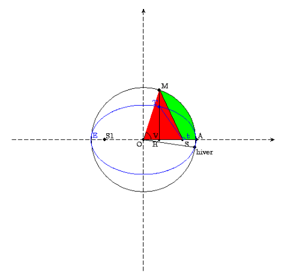

Algorithmes de calcul formel et numériqueB. Parisse |
La version HTML de ce document comporte des champs de saisie interactifs, ceux-ci apparaissent comme des commandes “mortes” dans la version PDF. La version HTML est optimisée pour le navigateur Firefox. Vous pouvez exécuter toutes les commandes interactives en cliquant sur le bouton Exécuter, le champ suivant est la console de l’interpréteur du logiciel de calcul formel.
Résumé: Giac/Xcas est un logiciel libre de calcul formel dont une caractéristique est de nécessiter peu de ressources sans sacrifier les performances (en particulier sur les calculs polynomiaux). Ce document décrit une partie des algorithmes de calcul formel et numérique qui y sont impleémentés, l’objectif à long terme est de couvrir l’essentiel des algorithmes implémentés. Ce n’est pas le manuel d’utilisation de Xcas, ni un manuel de programmation ou d’exercices illustrés avec Xcas (voir le menu Aide, Manuels : Référence calcul formel, Programmation, Exercices, Amusements...). Ce texte regroupe donc des résultats mathématiques qui ont été ou sont utilisés dans Giac (ou sont susceptibles de l’être), ils sont en général accompagnés de preuves et souvent d’illustrations avec Xcas.
Pour plus d’informations sur Giac/Xcas, cf. :
www-fourier.ujf-grenoble.fr/~parisse/giac_fr.html
Table des matières
- 1 Index, plan
- 2 Trousse de survie Xcas
- 3 Calculer sur ordinateur
- 3.1 Représentation des entiers
- 3.2 Les réels
- 3.3 L’arithmétique d’intervalle.
- 3.4 Calcul exact et approché, types, évaluation.
- 3.5 Forme normale et reconnaissance du 0.
- 3.6 Valeur générique des variables et hypothèses
- 3.7 Structures de données
- 3.8 Algorithmes et complexité.
- 3.9 Quelques algorithmes d’arithmétique de base.
- 3.10 Pour en savoir plus.
- 3.11 Exercices sur types, calcul exact et approché, algorithmes de bases
- 4 Les générateurs de nombres pseudo-aléatoires.
- 5 Le PGCD de polynômes.
- 6 Le résultant
- 7 Localisation des racines
- 8 Exercices (PGCD, résultant, ...)
- 9 Bases de Gröbner.
- 10 Courbes paramétriques et polaires
- 11 Propriétés métriques des courbes.
- 12 Représentation des courbes implicites.
- 13 Formes différentielles et intégrales curvilignes
- 14 Équations et systèmes différentiels.
- 15 Introduction au calcul variationnel
- 16 Corps finis.
- 17 Factorisation des entiers et primalité.
- 18 Factorisation des polynômes.
- 18.1 Les facteurs multiples
- 18.2 Factorisation en une variable
- 18.3 Factorisation à plusieurs variables
- 18.4 Preuve de l’identité de Bézout généralisée
- 18.5 Algorithme de Bézout généralisé
- 18.6 Factorisation rationnelle et sur une extension
- 18.7 Factorisation absolue
- 18.8 Compléments
- 18.9 Exercices (factorisation des polynômes)
- 19 Intégration formelle.
- 20 Intégration numérique
- 21 Suites récurrentes et applications
- 22 Algèbre linéaire
- 22.1 Résolution de systèmes, calcul de déterminant.
- 22.2 Algèbre linéaire sur ℤ
- 22.3 Le pivot de Gauss numérique.
- 22.4 La méthode de factorisation LU
- 22.5 La factorisation de Cholesky
- 22.6 Conditionnement
- 22.7 Réduction des endomorphismes
- 22.7.1 Le polynôme minimal (Krylov)
- 22.7.2 Le polynôme caractéristique
- 22.7.3 La méthode de Hessenberg
- 22.7.4 La méthode de Leverrier-Faddeev-Souriau
- 22.7.5 Les vecteurs propres simples.
- 22.7.6 La forme normale de Jordan
- 22.7.7 Exemple 1
- 22.7.8 Exemple 2
- 22.7.9 Le polynôme minimal par Faddeev
- 22.7.10 Formes normales rationnelles
- 22.7.11 Fonctions analytiques
- 22.8 Quelques autres algorithmes utiles
- 22.9 Quelques méthodes alternatives au pivot
- 22.10 Réduction approchée des endomorphismes
- 22.11 Quelques références
- 22.12 Exercices (algèbre linéaire)
- 23 Approximation polynomiale
- 24 Développement de Taylor, asymptotiques, séries entières, fonctions usuelles
- 25 La transformée de Fourier discrète.
- 26 Le rayonnement solaire.
- 27 La moyenne arithmético-géométrique.
- A Bonus : le “making of” de Giac/Xcas
- B Quelques opinions.
1 Index, plan
L’index commence page suivante dans la version PDF.
Quelques conseils de lecture :
- Des aspects calcul numérique sont abordés dans les sections 3 (représentation des données), 20 (intégration numérique), 21 (point fixe, Newton), 22 (Gauss, LU, conditionnement, Schur...), 23 et 24 (interpolation, approximation polynomiale), 25 (transformée de Fourier discrète),
- Des aspects calcul exact sont abordés dans les sections 3 (représentation des données), 5 (PGCD), 6 (résultant), 7 (racines), 9 (bases de Gröbner), 16 (corps finis), 17 et 18 (factorisation des entiers et polynômes), 19 (calcul de primitives), 22 (algèbre linéaire), 27 (moyenne arithmético-géométrique),
- le lecteur physicien trouvera peut-être un intérêt aux chapitres tirés de mon cours de licence L2 courbes et équations différentielles pour la physique, sections 10, 11, 12, 13, 14, 15, ainsi que le calcul de la répartition du rayonnement solaire sur Terre 26
Index
|
|
2 Trousse de survie Xcas
Cette section peut être vue comme un tutoriel très abrégé pour rapidement prendre en main Xcas par des exemples au niveau fin de licence master de mathématique et préparation aux concours de recrutement d’enseignants. Le lecteur pourra consulter le tutoriel calcul formel (menu Xcas, Aide, Débuter en calcul formel, tutoriel) pour plus de détails ou/et à un niveau mathématique moins élevé.
2.1 Utilisation comme super-calculatrice
-
On saisit une ligne de commande, on tape sur la touche Entree pour
l’évaluer. On peut saisir plusieurs commandes sur une même ligne
en les séparant par
;(affiche le résultat) ou:;(n’affiche pas le résultat). La syntaxe respecte les priorités usuelles des opérateurs, attention il faut toujours saisir le signe*pour effectuer une multiplication (sauf raccourcis dans lécriture de monômes comme2x). Mettez des parenthèses en cas de doute.
- Si on entre des données exactes, les calculs sont exacts
on peut alors convertir en approché avecevalf
Si on entre au moins une donnée approchée (nombre avec point décimal), les calculs sont approchés
Les nombres flottants peuvent être saisis avec lécriture standard mantisse/exposant séparés pare
- On peut stocker des résultats dans des variables
pour les réutiliser ensuite
On peut effacer le contenu d’une variable avecpurge, elle redevient alors libre (elle s’évalue en elle-même)
Les noms de variable peuvent contenir plusieurs lettres
- Les noms de commande et mots-clefs du logiciel sont en général affichés avec une couleur spécifique. Les menus permettent de trouver les commandes par thème (menus Outils dans Xcas pour les plus courantes, menu Graphe avec des assistants pour les représentations graphiques les plus courantes, menu Cmd pour un ensemble plus complet). La ligne de commande permet en général de compléter un début de nom de commande (touche tabulation). L’appui sur la touche tabulation après un nom de commande ou la sélection du menu Aide, Index dans Xcas ouvre l’aide en ligne courte, avec une description rapide de la commande et quelques exemples types que l’on peut copier-coller et adapter. On peut aussi obtenir une aide plus détaillée (boutons Details dans Xcas).
- Les listes sont délimitées par des crochets et servent
à représenter des vecteurs. Les listes de listes de même taille
servent à représenter des matrices. On accède à un élément
d’une liste en donnant le nom de variable de la liste puis l’indice
de l’élément entre crochet, en commençant à 0 (mettre deux crochets
pour commencer à 1).
- Pour afficher les étapes intermédiaires de certains calculs, exécutez
pour ne pas les afficher
2.2 Calcul exact
2.2.1 Arithmétique
-
division euclidienne des entiers
- PGCD, identité de Bézout sur les entiers
- restes chinois entiers
- primalité, décomposition en facteurs premiers
- puissance modulaire rapide
- division euclidienne des polynômes, la variable par défaut est x,
sinon il faut la spécifier en dernier argument
- PGCD, identité de Bézout sur les polynômes
- factorisation sur le corps des coefficients par défaut, sinon
ajouter l’extension algébrique souhaitée (éventuellement obtenue
avec
solve)sqrfreepermet d’effectuer une factorisation partielle en produit de facteurs premiers entre eux et sans racines multiples. - évaluation d’un polynôme
- Résultant de 2 polynômes
- décomposition en éléments simples
- polynômes à coefficients dans ℤ/pℤ
- Corps fini non premier de caractéristique p :
GF(p,n)crée un corps fini K de cardinal pn, et affecte une variable pour le générateur du groupe multiplicatif K*, par défaut g. Les éléments du corps sont alors représentés par des polynômes en le générateur
on peut travailler avec des polynômes ou des matrices à coefficients dans K
2.2.2 Algèbre linéaire exacte
-
Pivot de Gauss :
rrefcrée des 0 de part et d’autre de la diaginale,refen-dessous de la diagonale,kerrenvoie une liste de vecteurs formant une base du noyau d’une application linéaire - Factorisation LU
- Déterminant
On peut forcer l’utilisation d’un algorithme (voir l’aide détaillée dedet). - Réduction des endomorphismes
- Polynome d’endomorphisme
- Forme de Hermite et Smith d’une matrice à coefficients entiers
2.3 Calcul scientifique
2.3.1 Analyse numérique
-
Résolution approché déquation par méthode itérative
ou par bisection
- Approximation polynômiale :
- Intégration numérique
on peut forcer une méthode avecgaussquadourombergou de petit ordre avecplotarea
- Équations différentielles ordinaires
y′=f(t,y)=sin(ty)
avec condition initiale (t0,y0)=(0,1), valeur en t=2
Tracé sur l’intervalle t ∈ [−10,10]
2.3.2 Algèbre linéaire numérique
-
factorisation LU et résolution de système,
- factorisation QR
- factorisation de Cholesky
- Conditionnement d’une matrice pour la norme 1, euclidienne ou infinie
- Réduction des endomorphismes
- Valeurs singulières
- Factorisation de Schur
3 Calculer sur ordinateur
3.1 Représentation des entiers
| a = bq +r , r ∈ [0, b[ |
Preuve : On prend pour q le plus grand entier tel que a−bq ≥ 0.
Exemple :
La division euclidienne permet d’écrire un nombre entier, en utilisant une base b et des caractères pour représenter les entiers entre 0 et b−1. Nous écrivons les nombres entiers en base b=10 avec comme caractères les chiffres de 0 à 9. Les ordinateurs utilisent des circuits binaires pour stocker les informations, il est donc naturel d’y travailler en base 2 en utilisant comme caractères 0 et 1 ou en base 16 en utilisant comme caractères les chiffres de 0 à 9 et les lettres de A à F. En général, pour trouver l’écriture d’un nombre en base b (par exemple b=2), on effectue des divisions euclidienne successives par b du nombre puis de ses quotients successifs jusqu’à ce que le quotient soit 0 et on accolle les restes obtenus (premier reste à droite, dernier reste à gauche). Inversement, pour retrouver un entier d à partir de son écriture dn...d0, on traduit les divisions euclidiennes successives en
|
Par exemple, vingt-cinq s’écrit en base 16 0x19 car 25 divisé
par 16 donne quotient 1, reste 9
En base 2, on trouverait 0b11001 car 25=24+23+1.
On peut effectuer les opérations arithmétiques de base
(+,-,*, division) directement en base 2 (ou 16). Par exemple
la table de l’addition est 0+0=0, 0+1=1+0=1 et 1+1=0 je retiens 1,
donc :
01001111 + 01101011 ---------- 10111010
Exercice : comment passe-t-on simplement de la représentation d’un nombre en base 2 à un nombre en base 16 et réciproquement ?
Les microprocesseurs peuvent effectuer directement les opérations arithmétiques de base sur les entiers “machine” (déclinés en plusieurs variantes selon la taille et la possibilité d’avoir un signe). Noter que la division de deux entiers a et b n’a pas la même signification que la division de deux réels, comme elle ne tomberait pas forcément juste, on calcule le quotient et le reste de la division euclidienne.
Ces entiers machines permettent de représenter de manière exacte des petits entiers relatifs par exemple un entier machine signé sur 4 octets est compris entre [−231,231−1].
Ces entiers machines permettent de faire très rapidement du calcul exact sur les entiers, mais à condition qu’il n’y ait pas de dépassement de capacité, par exemple pour des entiers 32 bits, 230+230+230+230 renverra 0. Ils sont utilisables avec tous les langages de programmation traditionnels.
Les logiciels de calcul formel et certains logiciels de programmation permettent de travailler avec des entiers de taille beaucoup plus grande, ainsi qu’avec des rationnels, permettant de faire du calcul exact, mais on paie cette exactitude par un temps de calcul plus long, de plus pas mal de méthodes numériques ne gagnent rien à faire des calculs intermédiaires exacts. Néanmoins, l’utilisation d’un logiciel de calcul formel permettra dans certains cas d’illustrer certains phénomènes dus au calcul approché.
3.2 Les réels
On se ramène d’abord au cas des réels positifs, en machine on garde traditionnellement un bit pour stocker le signe du réel à représenter.
3.2.1 Virgule fixe et flottante.
La première idée qui vient naturellement serait d’utiliser
un entier et de déplacer la virgule
d’un nombre fixe de position, ce qui revient à mulitplier
par une puissance (négative) de la base. Par exemple en base 10 avec un
décalage de 4, 1234.5678
serait représenté par 12345678 et 1.2345678 par
12345 (on passe de l’entier au réel par multiplication
par 10−4. L’inconvénient d’une telle représentation est
qu’on ne peut pas représenter des réels grands ou petits,
comme par exemple le nombre d’Avogadro, la constante de Planck, etc.
D’où l’idée de ne pas fixer la position de la virgule, on parle
alors de représentation à virgule flottante ou de nombre flottant : on
représente un nombre par deux entier, l’un appelé mantisse
reprend les chiffres significatifs du réel sans virgule, l’autre
l’exposant, donne la position de la virgule. Attention, le séparateur
est un point et non une virgule dans la grande
majorité des logiciels scientifiques.
On sépare
traditionnellement la mantisse de l’exposant par la lettre e.
Par exemple 1234.5678 peut être représenté
par 12345678e-8 (mantisse 12345678, exposant -8)
mais aussi par 1234567800e-10.
Naturellement, sur un ordinateur, il y a des limites pour les entiers représentant la mantisse m et l’exposant e. Si on écrit les nombres en base b, la mantisse m s’écrira avec un nombre n fixé de chiffres (ou de bits en base 2), donc m ∈ [0,bn[. Soit un réel x représenté par
| x=mbe, m ∈ [0,bn[ |
Si m∈ [0,bn−1[, alors on peut aussi écrire x=m′ be−1 avec m′=mb ∈ [0,bn[, quelle écriture faut-il choisir? Intuitivement, on sent qu’il vaut mieux prendre m′ le plus grand possible, car cela augmente le nombre de chiffres significatifs (alors que des 0 au début de m ne sont pas significatifs). Ceci est confirmé par le calcul de l’erreur d’arrondi pour représenter un réel. En effet, si x est un réel non nul, il ne s’écrit pas forcément sous la forme mbe, on doit l’arrondir, par exemple au plus proche réel de la forme mbe. La distance de x à ce réel est inférieure ou égale à la moitié de la distance entre deux flottants consécutifs, mbe et (m+1)be, donc l’erreur d’arrondi est inférieure ou égale à be/2. Si on divise par x ≥ mbe, on obtient une erreur relative d’arrondi majorée par 1/(2m). On a donc intérêt à prendre m le plus grand possible pour minimiser cette erreur. Quitte à mulitplier par b, on peut toujours se ramener (sauf exceptions, cf. ci-dessous), à m ∈ [bn−1,bn[, on a alors une erreur d’arrondi relative majorée par
|
On appelle flottant normalisé un flottant tel que m ∈ [bn−1,bn[. Pour écrire un réel sous forme de flottant normalisé, on écrit le réel en base b, et on déplace la virgule pour avoir exactement n chiffres non nuls avant la virgule et on arrondit (par exemple au plus proche). L’exposant est égal au décalage effectué. Notez qu’en base 2, un flottant normalisé commence forcément par 1, ce qui permet d’économiser un bit dans le stockage.
Ainsi, l’erreur d’arrondi commise lorsqu’on représente un réel (connu exactement) par un double normalisé est une erreur relative inférieure à de 2−53 (b=2 et n=52+1 pour les doubles).
Exemples :
-
en base 10 avec n=6, pour représenter
π=3,14159265..., on doit décaler la virgule de 5 positions,
on obtient
314159.265...on arrondit à 314159 donc on obtient314159e-5. - en base 2 avec n=10, pour représenter trois cinquièmes (3/5
en base 10, noté 11/101 en base 2),
on pose la division en base 2 de
11par101, ce qui donne11 | 101 110 --------- -101 | 0.1001 ---- | 010 | 100 | 1000 | - 101 | ----- | 011 |on retrouve le nombre de départ donc le développement est périodique et vaut0.1001 1001 1001 .... On décale le point de 10 positions, on arrondit, donc trois cinquièmes est représenté par la mantisse1001100110et l’exposant-10. On observe aussi sur cet exemple que 3/5 dont l’écriture en base 100.6est exacte, n’a pas d’écriture exacte en base 2 (de même que 1/3 n’a pas d’écriture exacte en base 10).
Il existe une exception à la possibilité de normaliser les flottants, lorsqu’on atteint la limite inférieure de l’exposant e. Soit en effet em le plus petit exposant des flottants normalisés et considérons les flottants x=bem(1+1/b) et y=bem. Ces flottants sont distincts, mais leur différence n’est plus représentable par un flottant normalisé. Comme on ne souhaite pas représenter x−y par 0, (puisque le test x==y renvoie faux), on introduit les flottants dénormalisés , il s’agit de flottants dont l’exposant est l’exposant minimal représentable sur machine et dont la mantisse appartient à [0,bn−1[. Par exemple 0 est représenté par un flottant dénormalisé de mantisse 0 (en fait 0 a deux reprśentation, une de signe positif et une de signe négatif).
Enfin, on utilise traditionnellement une valeur de l’exposant pour représenter les nombres plus grands que le plus grand réel reprśentable sur machine (traditionnellement appelé plus ou moins infini) et les erreurs (par exemple 0./0. ou racine carrée d’un nombre réel négatif, traditionnellement appelé NaN, Not a Number).
Exercice : quels sont les nombres réels représentables exactement en base 10 mais pas en base 2 ? Si on écrit 1/10 en base 2 avec 53 bits de précision, puis que l’on arrondit avec 64 bits de précision, ou si on écrit 1/10 en base 2 avec 64 bits de précision, obtient-on la même chose ?
Les ordinateurs reprśentent généralement les flottants en base 2
(cf. la section suivante pour
plus de précisions), mais cette représentation n’est pas utilisée
habituellement par les humains, qui préfèrent compter
en base 10. Les ordinateurs effectuent donc la conversion dans
les routines d’entrée-sortie. Le format standard utilisé
pour saisir ou afficher un nombre flottant dans un logiciel
scientifique est composé d’un nombre à virgule
flottante utilisant le point comme séparateur décimal (et
non la virgule) suivi si nécessaire de la lettre e puis de l’exposant,
par exemple 1.23e-5 ou 0.0000123. Dans les
logiciels de calcul formel, pour distinguer un entiers
représentés par un entier
d’un entier représenté par un flottant on écrit
l’entier suivi de .0 par exemple 23.0.
Remarque :
Les microprocesseurs ayant un mode BCD peuvent avoir un format
de représentation des flottants en base 10, les nombres décimaux
comme par exemple 0.3 peuvent être représentés exactement.
Certains logiciels, notamment maple, utilisent par défaut des
flottants logiciels en base 10 sur des microprocesseurs sans mode BCD,
ce qui entraine une baisse de
rapidité importante pour les calculs numériques (on peut
partiellement améliorer les performances en utilisant evalhf
en maple).
3.2.2 Les flottants au format double
Cette section développe les notions de la section précédente pour les flottants machine selon la norme IEEE-754, utilisables dans les langage de programmation usuels, elle peut être omise en première lecture. La représentation d’un double en mémoire se compose de 3 parties : le bit de signe s=± 1 sur 1 bit, la mantisse M ∈ [0,252[ sur 52 bits, et l’exposant e ∈ [0, 211[ sur 11 bits. Pour les nombres “normaux”, l’exposant est en fait compris entre 1 et 211−2, le nombre représenté est le rationnel
| (1+ |
| ) 2e+1−210 |
Pour écrire un nombre sous cette forme, il faut d’abord chercher par quel multiple de 2 il faut le diviser pour obtenir un réel r dans [1,2[, ce qui permet de déterminer l’exposant e. Ensuite on écrit la représentation en base 2 de r−1 ∈ [0,1[. Exemples :
-
-2
Signe négatif. Il faut diviser sa valeur absolue 2 par 21 pour être entre 1 et 2 dont e+1−210=1, l’exposant est e=210. On a alors r=1, r−1=0. Représentation
1 10000000000 00000000...0000 - 1.5=3/2
Signe positif, compris entre 1 et 2 dont l’exposant vérifie e+1−210=0 soit e=210−1=29+28+27+26+25+24+23+22+21+20. On a r−1=1/2=2−1. D’où la représentation
0 01111111111 10000000...0000 - 6.4=32/5
Positif. Il faut le diviser par 22 pour avoir 8/5 ∈ [1,2[ donc e+1−210=2 soit e=210+1. Ensuite r=3/5 qu’il faut écrire en base 2 (cf. section précédente), on écrit donc les 52 premiers éléments du développement avec une règle d’arrondi du dernier bit au nombre le plus proche. Ici le bit suivant le dernier1001est un1, on arrondit donc à1010. D’où la représentation
0 1000000001 100110011001...10011010
On observe que la représentation en base 2 de 6.4 a du être
arrondie (car elle est infinie en base 2) bien qu’elle soit exacte
(finie) en base 10.
Seuls les entiers et les rationnels dont le dénominateur est une puissance
de 2 peuvent être représentés exactement.
Ceci entraine des résultats qui peuvent surprendre
comme par exemple le fait que
0.5 - 5*0.1 n’est pas nul.
Des représentations spéciales (avec e=0 ou e=211−1) ont été introduites pour représenter ± ∞ (pour les flottants plus grands en valeur absolue que le plus grand flottant représentable), et pour représenter les nombres non nuls plus petits que le plus petit flottant représentable de la manière exposée ci-dessus (on parle de flottants dénormalisés), ainsi que le nombre NaN (Not a Number) lorsqu’une opération a un résultat indéfini (par exemple 0/0).
Remarque : Sur les processeurs compatibles avec les i386,
le coprocesseur arithmétique i387 gère en interne des flottants
avec 80 bits dont 64 bits de mantisse. Sur les architectures 64 bits
(x86 ou AMD), le jeu d’instruction SSE permet de travailler avec
des flottants de 128 bits. Le compilateur gcc permet d’utiliser
ces flottants longs avec le type long double ou
les types __float80 et __float128 en utilisant
un drapeau de compilation du type -msse
3.2.3 Opérations sur les flottants
Les opérations arithmétiques de base sur les flottants se font de la manière suivante :
- addition et soustraction : on détecte s’il faut additionner ou soustraire en valeur absolue en analysant les signes, on détermine l’exposant le plus grand et on décale la partie mantisse du flottant dont l’exposant est le plus petit pour se ramener à additionner deux entiers (partie mantisses correspondant au même exposant), on décale à nouveau la partie mantisse en modifiant l’exposant après l’opération pour normaliser le flottant
- multiplication : on additionne les exposants et on multiplie les parties mantisses (vus comme des entiers), on arrondit et on ajuste l’exposant si nécessaire
- division : on soustrait les exposants et on divise les parties mantisses (division “à virgule”), on tronque et on ajuste l’exposant si nécessaire
3.2.4 Erreurs
La représentation des nombres réels par des doubles présente
des avantages, les opérations arithmétiques
sont faites au plus vite par le microprocesseur.
Les coprocesseurs arithmétiques (intégrés sur les microprocesseurs
de PC) proposent même
le calcul des fonctions usuelles (trigonométriques, racine carrée, log et exp)
sur le type double et utilisent des formats de représentation interne
ayant plus de 64 bits pour les doubles, ce qui permet de limiter
les erreurs d’arrondi.
Par contre, des erreurs vont être introduites,
on parle de calcul approché par opposition au calcul exact sur les
rationnels. En effet, la représentation doit d’abord arrondir
tout réel qui n’est pas un rationnel dont le dénominateur
est une puissance de 2. Ensuite chaque opération va entrainer
une propagation de ces erreurs et va y ajouter une erreur d’arrondi
sur le résultat.
Enfin, l’utilisation du type double peut provoquer un dépassement
de capacité (par exemple 100!*100!).
Pour diminuer ces erreurs et les risques de dépassement de capacité, il existe des types flottants multiple précision, qui permettent de travailler avec un nombre fixé à l’avance de décimales et une plage d’exposants plus grande. Les calculs sont plus longs mais les erreurs plus faibles. Attention, il s’agit toujours de calcul approché! De plus, pour des quantités dont la valeur est déterminée de manière expérimentale, la source principale de propagation d’erreurs est la précision des quantités initiales, il ne sert souvent à rien d’utiliser des types flottants multiprécision car les erreurs dus à la représentation (double) sont négligeables devant les erreurs de mesure. Dans ce cas, il est pertinent lorsqu’on évalue f(x) avec x mal connu de calculer aussi f′(x), en effet :
| f(x(1+h))= f(x)+xh f′(x) + O(h2) |
l’erreur relative sur f(x) est donc au premier ordre multipliée par
| | |
| | |
Par exemple, l’erreur relative sur ex est au premier ordre l’erreur relative sur x multipliée par |x|.
3.2.5 Erreur absolue, relative, arrondi propagation des erreurs.
On a vu précédemment que pour représenter un réel, on devait l’arrondir, ce qui introduit une erreur même si le réel est connu exactement (par exemple 1/10). Voyons comment se propagent les erreurs dans les opérations arithmétiques de base : on distingue l’addition, la multiplication et l’inversion. La soustraction se ramène à l’addition car le calcul de l’opposé n’introduit aucune erreur nouvelle. Pour l’addition, si |x −x0| ≤ ε0 et si |y−y0| ≤ ε1 alors par l’inégalité triangulaire (|a+b|≤ |a|+|b|), on a :
| |(x+y)−(x0+y0)| ≤ |x−x0| + | y−y0 | ≤ ε0 + ε1 |
on dit que les erreurs absolues s’additionnent.
| |x−x0| ≤ ε |
Mais comme il faut représenter x0+y0 en machine, on doit ajouter une erreur d’arrondi, qui est proportionnelle à la valeur absolue de x0+y0 d’où la notion d’erreur relative :
| |x−x0| ≤ ε |x0| |
Remarquons au passage que les erreurs de mesure expérimentales sont pratiquement toujours des erreurs relatives.
Donc lorsqu’on effectue une addition (ou une soustraction) de deux réels sur machine, on doit additionner les deux erreurs absolues sur les opérandes et ajouter une erreur d’arrondi (relative de 2−53, à titre d’exercice, on pourra vérifier que cette erreur d’arrondi est majorée par l’erreur absolue de la somme x+y dès l’instant où x et y ont eux-même une erreur d’arrondi).
Lorsqu’on effectue une multiplication de deux nombres x,y dont les représentants x0,y0 sont non nuls, on a
| ⎪ ⎪ ⎪ ⎪ |
| ⎪ ⎪ ⎪ ⎪ | = | ⎪ ⎪ ⎪ ⎪ |
|
| −1 | ⎪ ⎪ ⎪ ⎪ | = | ⎪ ⎪ ⎪ ⎪ | ( |
| −1)( |
| −1)+( |
| −1)+( |
| −1) | ⎪ ⎪ ⎪ ⎪ |
l’erreur relative est donc la somme des erreurs relatives et du produit des erreurs relatives (on peut souvent négliger le produit devant la somme). Il faut aussi y ajouter une erreur relative d’arrondi de 2−53 sur x0 y0.
On observe que la multiplication est une opération posant moins de problèmes que l’addition, car on manipule toujours des erreurs relatives, par exemple si l’erreur relative sur deux doubles x et y non nuls est de 2−53, alors l’erreur relative sur xy sera de
| 2−53 + 2−53 + 2−106 + 2−53 ≈ 3 × 2−53 |
Lorsque l’erreur relative sur les données est grande devant 2−53, l’erreur relative d’arrondi final est négligeable, on peut alors dire que les erreurs relatives s’additionnent pour un produit (c’est aussi vrai pour un quotient: exercice!). Par contre, si on additionne deux nombres dont le représentant de la somme est proche de 0, la somme des erreurs absolues peut devenir non négligeable par rapport à la somme des représentants, entrainant une erreur relative très grande. Par exemple si x est représenté par x0=1+2−52 avec une erreur d’arrondi de 2−53 et y par y0=−1 avec la même erreur d’arrondi, l’addition de x et y renvoie 2−52 avec une erreur absolue de 2 * 2−53 (ici il n’y a pas d’arrondi lorsqu’on fait la somme). C’est une erreur relative de 1 (qui domine largement l’erreur d’arrondi) ce qui signifie que dans la mantisse, seul le premier bit sur les 52 a un sens, la perte de précision est très grande.
Une autre conséquence importante est que l’addition de réels sur machine n’est pas une opération associative, par exemple
| (2.0−53+2.0−53)+1.0 → 1+2−52 |
alors que
| 2.0−53+(2.0−53+1.0) → 1 |
Dans Xcas, il n’y a que 48 bits de mantisse :
Exercice : pour calculer la valeur numérique d’une dérivée de fonction, il vaut mieux calculer (f(x+h)−f(x−h))/(2h) que (f(x+h)−f(x))/h car le terme d’erreur est en O(h2) et non en O(h). Attention toutefois à ne pas prendre h trop petit, sinon x+h=x en flottants et même si x+h ≠ x, l’erreur absolue sur f(x+h)−f(x−h) est (au moins) d’ordre ε |f(x)|, donc l’erreur relative est d’ordre ε/h |f(x)|. Par exemple pour h=1e-8 le reste est en O(h2) donc de l’ordre des erreurs d’arrondi mais l’erreur relative sur f(x+h)−f(x−h) est d’ordre є/h largement supérieure (en flottants double-précision). On choisira plutôt h tel que є/h soit proche de h2, donc de l’ordre de 1e-5, qui fournira une valeur approchée avec une erreur relative de l’ordre de 1e-10. Exemple : calcul de la dérivée numérique de exp(sin(x)) en x=1
Remarquons néanmoins que les erreurs calculées ici sont des majorations des erreurs réelles (ou si on préfère l’erreur obtenue dans le pire des cas), statistiquement les erreurs sur les résultats sont moindres, par exemple si on effectue n calculs susceptibles de provoquer des erreurs indépendantes suivant une même loi d’espérance nulle, la moyenne des erreurs divisée par l’écart-type de la loi tend vers une loi normale centrée réduite. De manière plus déterministe, on a l’inégalité de Bienaymé-Tchebyshev
| P(|X|>α) ≤ |
|
où X est la variable aléatoire somme des n erreurs, α
l’erreur et nσ2 la variance de la somme n erreurs
supposées indépendantes, cette probabilité tend vers 0 pour n
grand si α est d’ordre n, et ne tend
pas vers 0 si α est de l’ordre de √n.
Exemple : somme de n=400 nombres répartis sur [−1,1] selon la loi
uniforme (représentant des erreurs), on divise par √n=20,
on effectue plusieurs tirages (par exemple 500) on trace l’histogramme et
on compare avec la loi normale de moyenne
nulle (l’espérance de la somme) et d’écart-type celui de la loi
uniforme.
Il est d’ailleurs souvent trop difficile de calculer une majoration rigoureuse de l’erreur pour des calculs sauf les plus simples. Lorsqu’on doute de la précision d’un calcul, un test peu couteux consiste à refaire ce calcul en utilisant des flottants en précision plus grande et tester si le résultat varie en fonction du nombre de chiffres significatifs utilisés, ou faire varier légèrement les données et observer la sensibilité du résultat. Si on veut travailler en toute rigueur sans pour autant calculer les erreurs à priori, il faut utiliser un logiciel utilisant des intervalles pour représenter les réels (section suivante)
3.3 L’arithmétique d’intervalle.
Certains systèmes de calcul formel peuvent manipuler directement
des intervalles réels, par exemple par l’intermédiaire de la
bibliothèque C MPFI. Les opérations arithmétiques sur des
intervalles renvoient alors le meilleur intervalle possible contenant
toutes les valeurs possibles lorsque les opérandes parcourent
leurs intervalles respectifs.
Exemple en Xcas (version 1.1.1 et ultérieures) :
[-1..2]*[-1..2] renvoie [-2..4].
Attention ici on parcourt toutes les valeurs possibles de
xy, x ∈ [−1,2], y ∈ [−1,2]. Ce qui est différent du carré
d’un intervalle ou plus généralement de l’évaluation
d’un polynôme en un intervalle, horner(x^2,[-1..2])
renvoie ainsi [0..4].
Les fonctions disponibles sont souvent moins riches qu’en arithmétique flottante, le calcul d’une fonction non monotone sur un intervalle peut s’avérer délicat, alors que si la fonction est monotone, il suffit de calculer l’image des deux bornes de l’intervalle. Pour les polynômes, Xcas décompose les coefficients en deux parties P=P+−P− en fonction du signe, puis utilise la monotonie de P+ et P− sur ℝ+ et ℝ− respectivement.
L’arithmétique d’intervalle dans ℂ est beaucoup plus difficile à mettre en oeuvre puisqu’il n’y a plus d’ordre ni de monotonie, on doit alors s’en remettre à des estimations sur les parties réelles et imaginaires qui ne tiendront pas compte du phénomène ci-dessus sur la différence entre xy, x ∈ [−1,2], y ∈ [−1,2] et x2, x ∈ [−1,2].
3.4 Calcul exact et approché, types, évaluation.
Dans les langages de programmation traditionnel (C, Pascal,...), il existe déjà des types permettant une représentation exacte des données (type entier) ou une représentation approchée (type flottant). Mais ces types de donnée de base occupent une taille fixe en mémoire, le type entier est donc limité à un intervalle d’entiers (par exemple [0,232−1] pour un entier non signé sur une machine utilisant un processeur 32 bits) alors que le type flottant peut représenter des nombres réels, mais est limité à une précision en nombre de digits de la mantisse et de l’exposant (par exemple 12 chiffres significatifs et un exposant compris entre -499 et 499).
En calcul formel, on souhaite pouvoir calculer rigoureusement d’une part, et avec des paramètres dont la valeur n’est pas connue d’autre part ; il faut donc s’affranchir de ces limites :
- pour les entiers relatifs, on utilise des entiers de précision arbitraire dont la taille en mémoire est dynamique (déterminée pendant l’exécution et non à la compilation),
- pour les nombres complexes, on utilise un couple de nombres réels,
- pour les rationnels, on utilise un couple d’entiers relatifs,
- pour les irrationnels algébriques (par exemple √2), on utilise un polynôme irréductible dont ils sont racines,
- pour les paramètres (x,y,z,t...), on utilise un type structuré contenant un champ de type chaine de caractères pour représenter le nom du paramètre et un champ pour attribuer une valeur à (ou une hypothèse sur) ce paramètre,
- pour les nombres transcendants (par exemple π), on est obligé d’introduire un paramètre auquel on attribue une valeur numérique, qui ne sera utilisée qu’au moment où on veut une approximation numérique d’une expression contenant ce nombre transcendant, on parle de constante,
- lorsqu’on a besoin d’une approximation numérique d’un nombre, on peut utiliser des conversions de ces types en un type flottant. On peut aussi pour lutter contre les erreurs d’arrondi utiliser des nombres flottants étendus dont la précision est dynamique ou même des intervalles de flottants étendus,
- il faut aussi un nouveau type, appelé expression ou symbolique, permettant d’appliquer une fonction qu’on ne peut évaluer directement sur les objets précédents, par exemple sin(x). Il doit s’agir d’une opération de clôture, au sens où appliquer une fonction à un objet symbolique ne nécessite pas la création d’un nouveau type (en général on renvoie un objet symbolique).
Enfin, il faut pouvoir évaluer un objet (en particulier symbolique) :
par exemple évaluer sin(x) lorsqu’on assigne une valeur à x.
Dans cet exemple, on voit qu’il faut d’abord remplacer x par
sa valeur avant de lui appliquer la fonction sinus. C’est le mécanisme
général de l’évaluation, mais il y a quelques exceptions où
on souhaite empêcher l’évaluation d’un ou plusieurs arguments
d’une fonction avant l’évaluation de la fonction. Par exemple si on
veut calculer la valeur numérique d’une intégrale par des méthodes
de quadrature, on ne souhaitera pas rechercher une primitive de la
fonction à intégrer. Dans le jargon, on parle alors de “quoter” un argument
(l’origine du terme vient probablement de la notation ' du langage
Lisp). Certaines fonctions doivent toujours quoter leurs arguments
(par exemple la fonction qui permet de purger le contenu d’un paramètre),
on parle parfois d’autoquotation.
3.5 Forme normale et reconnaissance du 0.
Une fois défini ces types de base représentant les nombres d’un système de calcul formel, il faut pouvoir comparer ces nombres, en particulier décider si deux représentations distinctes correspondent au même nombre ou, ce qui revient au même, par soustraction décider quand un nombre est nul. Par exemple 4/2 et 2 représentent le même nombre. Lorsqu’on dispose d’un algorithme permettant de représenter un nombre d’une manière unique, on parle de forme normale. C’est par exemple le cas pour les nombres rationnels, la forme normale usuelle est la fraction irréductible de dénominateur positif. C’est aussi le cas pour les fractions rationnelles de polynômes à coefficients entiers représentées par une fraction irréductible, avec au dénominateur un coefficient de plus haut degré positif. Malheureusement, il n’est pas toujours possible de trouver une forme normale pour diverses raisons théoriques ou pratiques :
- on ne connaît pas toujours le statut de certaines constantes (par exemple la constante d’Euler),
- il n’existe pas d’algorithmes permettant de déterminer s’il existe des relations algébriques entre constantes,
- il n’existe pas forcément une seule forme plus simple, par exemple :
Ce cas se présente fréquemment avec les extensions algébriques.( √ 2 +1)x+1 x+ √ 2 +1 = x+ √ 2 −1 ( √ 2 −1)x+1 - en pratique il peut être trop coûteux d’utiliser une forme normale, par exemple le polynôme (x1000−1)/(x−1) possède 1000 monômes
En résumé, au mieux on a une forme normale, au pire on risque de ne pas reconnaître un zéro, entre les deux on peut ne pas avoir de forme normale mais être capable de reconnaître à coup sûr une expression nulle (par contre, si le système de calcul formel détermine qu’une expression est nulle, alors elle l’est).
Il n’existe pas d’algorithme solution pour le problème de la reconnaissance du zéro pour une classe d’expressions "assez générale". Heureusement, dans la plupart des cas pratiques on sait résoudre ce problème, en se ramenant le plus souvent au cas des polynômes et fractions rationnelles. Par exemple, pour simplifier une expression trigonométrique, on remplace les fonctions trigonométriques sin(x), cos(x), tan(x) par leur expression en fonction de t=tan(x/2), on est ainsi ramené à une fraction rationnelle en t que l’on écrit sous forme normale.
Les polynômes ont un rôle central dans tout système de calcul formel puisque sauf dans les cas les plus simples (fractions d’entiers par exemple), la simplification d’expressions fait appel à un moment ou à un autre à des calculs de PGCD de polynômes. Le PGCD de polynômes est un algorithme très sollicité auquel nous consacrerons une section. En effet, l’application brutale de l’algorithme d’Euclide pose des problèmes d’efficacité ce qui a obligé à inventer des méthodes plus efficaces. Anticipons rapidement sur un exemple qui montre l’un des problèmes majeurs des algorithmes de calcul formel, l’explosion en taille (ici des coefficients des restes successifs). Voici donc les restes successifs lorsqu’on applique l’algorithme d’Euclide pour calculer le PGCD de P(x)=(x+1)7−(x−1)6 avec sa dérivée (les deux polynômes sont premiers entre eux) :
|
Le lecteur voulant tester d’autres exemples pourra utiliser le programme
Xcas suivant :
pgcdderiv(a):={
local b,r,res;
b:=diff(a,x);
res:=NULL;
for (;b!=0;){
res:=res,b;
r:=rem(a,b);
a:=b;
b:=r;
}
return(res);
}
3.6 Valeur générique des variables et hypothèses
Lorsqu’on utilise un symbole sans lui affecter de valeurs en mathématiques on s’attend à une discussion en fonction du paramètre représenté par ce symbole. Ce qui nécessiterait de créer un arborescence de calculs (on retrouve ici les problèmes d’explosion évoqués dans la section précédente). La plupart des systèmes de calcul formel contournent la difficulté en supposant que le paramètre possède une valeur générique (par exemple la solution de (t2−1)x=t−1 sera x=1/(t+1)) ou choisissent une branche pour les fonctions possédant un point de branchement (par exemple pour résoudre x2=t en fonction de t). Certains systèmes demandent de manière interactive à l’utilisateur si la variable est par exemple positive ou différente de 1 mais cela s’oppose à un traitement automatique. On peut aussi anticiper ce type de décision en faisant des hypothèses sur une paramètre, la plupart des systèmes de calcul formel actuel proposent cette possibilité.
3.7 Structures de données
On a vu plus haut qu’on souhaitait manipuler des entiers de taille non fixe, des réels de précision fixe ou non, des fractions, des nombres complexes, des extensions algébriques, des paramètres, des expressions symboliques. La plupart des systèmes proposent un type générique qui recouvre ces divers types de scalaire. On peut par exemple utiliser un type structuré comportant un champ type et la donnée ou un pointeur sur la donnée (avec dans ce cas un pointeur sur un compteur de références de la donnée pour pouvoir la détruire dès qu’elle n’est plus référencée1). En programmation orientée objet, on utiliserait plutôt un type abstrait dont dérivent ces différents scalaires et le polymorphisme.
Il faut aussi un type pour les vecteurs, les matrices et les listes. Il faut prendre garde à la méthode utilisée par le système lorsqu’on modifie un élément d’un vecteur, matrice ou liste : soit on effectue une copie de tout l’objet en modifiant l’élément, soit on modifie l’élément de l’objet original. La première méthode (par valeur) est plus aisée à comprendre pour un débutant mais la seconde méthode (par référence) est bien plus efficace.
On peut se poser la question de savoir s’il faut inclure
ces types dans le type générique ; en général la
réponse est affirmative, une des raisons étant que les
interpréteurs qui permettront de lire des données dans un
fichier texte sont en général basé sur le couple de logiciels
lex(flex)/yacc(bison) qui ne peut compiler qu’à destination d’un
seul type. Ceci permet également d’unifier en un seul type symbolique
les fonctions ayant un ou plusieurs arguments en
voyant plusieurs arguments comme un vecteur d’arguments.
Les fonctions sont le plus souvent elle-même incluses dans le
type générique permettant ainsi à l’utilisateur de saisir des
commandes ou programmes fonctionnels (on peut
utiliser une fonction comme argument d’une commande).
Pour des raisons d’efficacité, les systèmes de calcul formel utilisent souvent des représentations particulières pour les polynômes dont on a dit qu’ils jouaient un rôle central. Pour les polynômes à une variable, on peut utiliser la liste des coefficients du polynôme, on parle alors de représentation dense. On peut aussi décider de ne stocker que les coefficients non nuls, on parle alors de représentation creuse (on stocke alors un couple formé par le coefficient et le degré du monôme correspondant). Pour les polynômes à plusieurs variables, on peut les considérer comme des polynômes à une variable à coefficients polynomiaux, on parle alors de représentation récursive. On peut aussi décider de ne pas briser la symétrie entre les variables (pas de variable principale), on parle alors de représentation distribuée, le plus souvent les représentation distribuées sont creuses car les représentations denses nécessitent très vite beaucoup de coefficients. Les méthodes de représentation creuses sont parfois aussi utilisées pour les matrices ayant beaucoup de coefficients nuls.
Voyons maintenant plus précisément sur quelques exemples de logiciels de calcul formel répandus quelles structures de données sont utilisées. Plusieurs éléments entrent en compte dans les choix faits :
- le(s) profil(s) d’utilisation (enseignement, ingéniérie, calcul intensif, recherche)
- les ressources disponibles (mémoire, puissance du processeur...)
- la facilité d’implémentation (choix du langage, outils disponibles en particulier débuggueurs, ...)
- l’histoire du système (un système conçu avec les outils disponibles aujourd’hui est forcément différent d’un système conçu il y a 20 ans)
Voyons quelques exemples, d’abord Giac, puis des systèmes pour ordinateur où les ressources (par exemple mémoire) sont moins limitées ce qui permet d’utiliser des langages de programmation de plus haut niveau. On termine par les calculatrices formelles HP et TI des années 20002. Ce sont des systèmes plutôt destinés à l’enseignement, soumis à de fortes contraintes en termes de taille mémoire, et destinés à traiter des petits problèmes.
3.7.1 Maple, Mathematica, ...
Ces systèmes ont un noyau fermé, au sens où l’utilisateur n’a pas accès du tout, ou en tout cas pas facilement, aux structures de données de base. Je ne dispose donc pas d’information sur les structures de données utilisées par le noyau.
L’interaction système-utilisateur se fait quasiment toujours en utilisant le langage de programmation propre au système, langage interprété par le noyau du système (ce qui ralentit l’exécution). Ces langages utilisateurs sont essentiellement non typés : on travaille avec des variables du type générique sans pouvoir accéder aux types sous-jacents. On ne bénéficie en général pas des vérifications faites lors de la compilation avec un langage typé, de plus ces systèmes ne sont pas toujours fourni avec de bon outils de mise au point. Enfin ces langages ne sont pas standardisés d’un système à l’autre et il est en général impossible d’utiliser ces systèmes comme des librairies depuis un langage de programmation traditionnel. Leur intérêt principal réside donc dans une utilisation interactive en profitant de la librairie de fonctions accessibles.
3.7.2 Giac/Xcas
Il s’agit du système de calcul formel que j’implémente actuellement sous
forme d’une bibliothèque C++ (ce qui
permettra aux programmes tiers d’utiliser beaucoup plus facilement du
calcul formel qu’avec les systèmes précédents). L’objectif est
d’avoir un système facile à programmer directement en C++, proche
du langage utilisateur, lui-même compatible avec Maple ou MuPAD,
tout cela sans trop perdre en performances comparativement aux
librairies spécialisées écrites en C/C++. Ce qui explique un choix
de type générique (gen) non orienté objet, avec un champ type
et soit une donnée immédiate (pour les nombres flottants par exemple),
soit un pointeur vers un objet du type correspondant au champ type pour
les données de taille non fixe (on pourrait donc se
contenter du langage C, mais le langage C++ permet de redéfinir
les opérateurs sur des types utilisateurs ce qui
améliore considérablement la lisibilité du code source).
Les données dynamiques ne sont pas dupliquées, Giac
utilise un pointeur sur un compteur de référence pour détruire
ces données lorsqu’elles ne sont plus référencées.
Les entiers en précision arbitraire sont hérités de la bibliothque GMP (écrite en C) du projet GNU. Les flottants en précision arbitraire utiliseront aussi GMP (plus précisément MPFR). Il y a un type fraction, structure C composé d’un champ numérateur et d’un champ dénominateur, et un type nombre complexe.
Les listes, vecteurs, matrices utilisent le type paramétré vector<>
de la librairie standard C++ (Standard Template Library).
Les objets symboliques sont des structures composés d’un champ sommet
qui est une fonction prenant un argument de type gen
et renvoyant un résultat
de type gen, et d’un champ feuille qui est de type gen.
Lorsqu’une fonction possède plusieurs arguments, ils sont rassemblés
en une liste formant le champ feuille de l’objet symbolique.
Les programmes sont aussi des objets symboliques, dont le champ
sommet est la fonction évaluation d’un programme.
Les listes sont aussi utilisées pour représenter vecteurs, matrices
et polynômes en une variable en représentation dense, on peut
y accéder par valeur (:=) ou par référence
(=<). Ces polynômes servent eux-mêmes á représenter
des éléments d’une
extension algébrique de ℚ (vus comme
un couple de polynômes P,Q, où Q est un polynome minimal
irréductible à coefficients entiers, autrement dit P,Q vaut P(α)
où Q(α)=0),
ou des éléments d’un corps fini (comme ci-dessus, mais ici Q est
à coefficients dans ℤ/pℤ avec p premier, cf. la commande GF).
Giac posséde aussi un type pour les polynômes
en représentation creuse distribuée en plusieurs
indéterminées (cf. les commandes symb2poly et poly2symb).
L’évaluation d’un objet symbolique se fait en regardant d’abord si la fonction au sommet doit évaluer ou non ses arguments (autoquote), on évalue les arguments si nécessaire puis on applique la fonction.
Une hypthèse sur un paramètre est une valeur spéciale affectée au paramètre, valeur ignorée par la routine d’évaluation.
3.7.3 Calculatrices formelles HP48/49
Les langages utilisés pour programmer ces calculateurs sont l’assembleur et le RPL (Reverse Polish Lisp) adapté à l’écriture de code en mémoire morte très compact.
Le type générique est implémenté avec un champ type appelé prologue (qui est en fait un pointeur sur la fonction chargée d’évaluer ce type d’objet) suivi de la donnée elle-même (et non d’un pointeur sur la donnée, on économise ainsi la place mémoire du compteur de référence).
Le type entier en précision arbitraire est codé par le nombre de digits (sur 5 quartets3) suivi du signe sur un quartet et de la représentation BCD (en base 10) de la valeur absolue de l’entier. Le choix de la représentation BCD a été fait pour optimiser les temps de conversion en chaîne de caractères pour l’affichage. La mémoire vive disponible est de 256K, c’est elle qui limite la taille des entiers et non le champ longueur de l’entier. Il n’y a pas de type spécifique pour les rationnels (on utilise un objet symbolique normal).
Les fonctions internes des HP49/50/40 utilisent le type programme pour représenter les entiers de Gauß (complexes dont la partie réelle et imaginaire est entière). Les nombres algébriques ne sont pas implémentés, sauf les racines carrées (représentée de manière interne par le type programme). Il y a un type spécifique prévu pour les flottants en précision arbitraire, mais l’implémentation des opérations sur ces types n’a pas été intégrée en ROM à ce jour.
Les types listes, programmes et objet symbolique sont composés du prologue
(champ type) suivi par la succession d’objets situés en
mémoire vive ou de pointeurs sur des objets situés en mémoire en lecture
seule (ROM) et se terminent par un pointeur sur une
adresse fixe (appelée SEMI). Ces types sont eux-mêmes des
objets et peuvent donc être utilisés de manière
récursive. La longueur des types listes, programmes, symboliques
n’est stockée nulle part, c’est le délimiteur final
qui permet de la connaître, ce qui est parfois source d’inefficacité.
On utilise de manière interne les listes pour représenter les
polynômes denses (avec
représentation récursive pour les polynômes à plusieurs variables).
Les calculatrices HP4xG utilisent une pile4, c’est-à-dire une liste
de taille non fixée d’objets. On place les objets sur la pile,
l’exécution d’une fonction prend ces arguments sur
la pile et renvoie un ou plusieurs résultats sur la pile (ce qui est
une souplesse du RPN comparé aux langages où on ne peut renvoyer
qu’une valeur de retour). Il faut donc
donner les arguments avant d’appeler la fonction correspondante. Par
exemple pour calculer a+b on tapera a b +. C’est
la syntaxe dite polonaise inversée (RPN). Un avantage de cette syntaxe
est que le codage d’un objet symbolique par cette syntaxe est évidente,
il suffit de stocker la liste précédente {a b +}.
Les objets symboliques sont donc représenté par une suite d’objets écrit
en syntaxe polonaise inversée. L’évaluation d’un objet symbolique se fait
dans l’ordre polonaise inversé : les arguments sont évalués
puis les fonctions leur sont appliqués. Pour des raisons d’efficacité,
on représente souvent les objets composites (listes, symboliques) par
leurs composants placés sur la pile (appelé meta-objets).
Une rigidité de la syntaxe polonaise est
que les fonctions ont toujours un nombre fixe d’arguments5, par
exemple l’addition a toujours 2 arguments, ainsi
a+b+c est obtenu par (a+b)+c ou par a+(b+c)
c’est-à-dire respectivement a b + c + ou a b c + + ce qui
brise parfois artificiellement la symétrie de certaines opérations. En
polonaise inversée, le système doit de plus jongler avec l’autoquote puisque
les arguments sont évalués avant l’opérateur qui éventuellement demanderait
à ne pas évaluer ses arguments. À noter l’existence d’une commande
QUOTE permettant à l’utilisateur de quoter une sous-expression.
Les hypothèses sur des variables réelles sont regroupées dans une liste
stockée dans la variable globale REALASSUME, on peut supposer
qu’une variable est dans un intervalle. Il n’y a pas à ce jour
de possibilité de supposer qu’une variable est entière (ni à fortiori
qu’une variable à une valeur modulo un entier fixé), bien qu’il ait été
décidé de réserver la variable globale INTEGERASSUME à cet effet.
Il n’y a pas de possibilité de faire des hypothèses ayant une portée
locale.
3.7.4 Calculatrices formelles TI92/89/Voyage 200
Le langage utilisé pour programmer ces calculatrices est le langage C (on peut aussi écrire du code en assembleur pour ces calculatrices). On retrouve ici les différents types de données regroupé en un type générique qui est un tableau d’octets (aussi appelé quantum). Le champ type est appelé tag dans la documentation TI. Contrairement à ce qui précède, ce champ type est placé en mémoire à la fin de l’objet, ce qui est possible car la longueur d’un objet est toujours indiquée au début de l’objet. Ceci est fait afin de faciliter l’évaluation (cf. infra).
Les entiers en précision arbitraire sont codés par un tag parmi deux (pour différencier le signe), un octet pour la longueur, puis la valeur absolue de l’entier (en base 256). Ils sont donc limités par le champ longueur à 255 octets, le plus grand entier représentable est 6 (256255−1). Il existe un tag spécifique pour les rationnels, pour les constantes réelles et entières qui apparaissent par exemple en résolvant une équation. Il existe des tags utilisés de manière interne, par exemple pour les nombres complexes. Il n’y a pas de tag prévu pour les flottants en précision arbitraire. ni pour les nombres algébriques (racines carrées par exemple).
Les listes sont codées par la succession de leurs éléments. En principe elles ne peuvent pas contenir des listes (sauf pour représenter une matrice). Quelques fonctions utilisent les listes pour représenter des polynômes denses à une variable, mais probablement pas pour représenter de manière récursive des polynômes à plusieurs variables (puisque le type liste n’est en principe pas récursif).
Comme les HP, les TI utilisent une pile (non visible par l’utilisateur) appelée expression stack afin de traduire un expression mathématique sous forme d’un texte en un objet symbolique codé exactement comme ci-dessus en syntaxe polonaise. Toutefois, la présence du champ longueur permet d’évaluer un objet symbolique sans perdre en efficacité en partant de l’opérateur final et en redescendant ensuite sur ces arguments, c’est la stratégie adoptée. C’est pour cela que le tag d’identification se trouve à la fin de l’objet. L’utilisation de cette méthode facilite grandement l’autoquotation (on peut toutefois regretter que le système n’ait pas prévu d’instruction permettant à l’utilisateur d’empêcher l’évaluation d’une sous-expression).
On ne peut pas faire d’hypothèse globale sur un paramètre par contre on peut faire des hypothèses de type appartenance à un intervalle ayant une portée locale.
3.8 Algorithmes et complexité.
On va présenter dans la suite quelques algorithmes que l’on peut considérer comme classiques dans le domaine du calcul formel. Avant d’implémenter ce type d’algorithmes, on a besoin des algorithmes de base en arithmétique.
La plupart des problèmes posés en calcul formel nécessitent des calculs dont la taille croit de manière exponentielle voire doublement exponentielle en fonction de la taille des données et ce même si le résultat est lui aussi de taille petite. Un exemple est la réduction des systèmes de plusieurs équations polynomiales (bases de Groebner).
3.8.1 Algorithmes modulaires ou p-adiques
Dans certains cas, l’application de théories mathématiques parfois sophistiquées permet de réduire la complexité (par exemple, M. Van Hoeij a découvert récemment qu’un algorithme très utilisé en théorie des nombres, l’algorithme LLL, permettait d’améliorer la complexité d’une des étapes de la factorisation des polynomes à coefficients entiers sur les entiers). Heureusement, dans de nombreux cas, on peut réduire la complexité (donc le temps de calcul) par des adaptations au problème d’une même idée à condition de faire des hypothèses sur les données (autrement dit en abandonnant la volonté d’implémenter un algorithme très générique, ou tout au moins en spécialisant des algorithmes génériques). Par exemple lorsqu’on travaille avec des entiers (ou des polynômes à coefficients entiers, ou des matrices à coefficients entiers...) on utilise souvent des algorithmes modulaires et p-adiques. Comme le calcul exact nécessite presque toujours de calculer avec des entiers, ces méthodes ont un rôle central en calcul formel, nous les présentons donc maintenant brièvement. Dans les prochaines sections, nous utiliserons ce type de méthode, par exemple pour le calcul de PGCD ou la factorisation de polynômes à coefficients entiers.
Les méthodes modulaires consistent à réduire un problème dans ℤ à son équivalent dans Z/nℤ pour une ou plusieurs valeurs de n, nombre premier. Le calcul dans ℤ/nℤ a l’avantage de se faire avec des entiers dont la taille est bornée. Ensuite à l’aide d’estimations à priori sur la taille des solutions éventuelles du problème initial, on reconstruit la solution au problème initial avec le théorème des restes chinois.
Par exemple, on peut calculer un déterminant d’une matrice à coefficients entiers en cherchant ce déterminant dans ℤ/nℤ pour plusieurs nombres premiers n, dont le produit est deux fois plus grand qu’une estimation à priori de la taille du déterminant (donnée par exemple par l’inégalité d’Hadamard, cf. Cohen, p. 50).
Les méthodes p-adiques commencent de manière identique par un calcul dans ℤ/nℤ, on augmente ensuite la précision de la solution en la «liftant»de ℤ/nk ℤ vers ℤ/nk+1ℤ ou vers ℤ/n2kℤ (lift linéaire ou lift quadratique), on s’arrête lorsque k est assez grand (à l’aide d’estimations à priori) et on reconstruit alors la solution initiale. L’étape de «lift»est en général un lemme de Hensel dont on verra quelques exemples dans les prochains articles. L’algorithme commun au lemme de Hensel et au théorème des restes chinois est l’identité de Bézout, que l’on retrouve d’ailleurs un peu partout (par exemple pour le calcul de primitives).
Illustrons cette méthode sur un exemple simple, la recherche de racines rationnelles d’un polynôme P(X)=ad Xd + ⋯ + a0 à coefficients entiers ou polynomiaux, avec ad et a0 non nuls. L’algorithme générique (assez connu) consiste à chercher les diviseurs de a0 et de ad et à tester toutes les fractions de ces diviseurs, on montre en effet aisément que si X=p/q fraction irréductible est racine de P alors q divise ad et p divise a0. Cet algorithme est très inefficace si ad ou a0 est un grand entier (car on ne sait pas forcément le factoriser) ou s’il a beaucoup de facteurs premiers (la liste des diviseurs à tester est alors très grande).
Lorsque les coefficients de P sont entiers, la recherche précédente revient à trouver un facteur à coefficients entiers qX−p de P, on peut donc réduire le problème modulo un entier premier n qui ne divise pas ad : si un tel facteur existe dans ℤ alors ce facteur (réduit modulo n) est un facteur de P dans ℤ/nℤ donc P admet une racine dans ℤ/nℤ (puisque q est inversible modulo n car on a choisi n premier ne divisant pas ad). On évalue maintenant P en les n éléments de ℤ/nℤ. S’il n’y a pas de 0, alors P n’a pas de racine rationnelle. S’il y a des racines, on va les lifter de ℤ/nkℤ dans ℤ/n2kℤ.
On suppose donc que pour k≥ 1, il existe un entier pk tel que
| P(pk)=0 (mod nk ) |
Il s’agit de trouver un entier x tel que pk+1=pk+nk x vérifie
| P(pk+1)=0 (mod n2k ) |
On applique la formule de Taylor à l’ordre 1 pour P en pk, le reste est nul modulo n2k, donc :
| P(pk)+ nk x P′(pk)=0 (mod n2k ) |
soit finalement :
| x=− |
| ( P′(pk) (mod nk )) −1 |
On reconnaît au passage la méthode de Newton, pour qu’elle fonctionne il suffit que P′(pk) ≠ 0 (mod n ) ce qui permet de l’inverser modulo nk (et c’est ici qu’intervient l’identité de Bézout). En pratique quand on factorise un polynôme, on commence par retirer les multiplicités, on peut donc supposer que P est sans facteur multiple dans ℤ. Ceci n’entraîne pas forcément qu’il le reste dans ℤ/nℤ ce qui crée une contrainte supplémentaire sur le choix de n, à savoir que P et P′ restent premier entre eux dans ℤ/nℤ (il existe forcément de tels n, par exemple n premier plus grand que le plus grand entier intervenant dans le calcul du PGCD de P et P′ dans ℤ).
Reste donc à revenir dans ℤ à partir d’une racine pk dans ℤ/(nk ℤ) (où on peut choisir k). On va maintenant utiliser la représentation modulaire symétrique : on prend comme représentant modulaire d’un entier z dans ℤ/nkℤ l’unique entier congru à z modulo n qui est strictement compris entre −nk/2 et nk/2 (si n est pair, la deuxième inégalité est choisie large).
Si qX−p est un facteur de P, alors adX−ad/qp est encore un facteur de P (le quotient de P par adX−ad/qp est à coefficients rationnels mais le facteur est à coefficients entiers). Si on a choisi k tel que nk>2|ad a0|, l’écriture en représentation modulaire symétrique de adX−ad/qp est inchangée, en effet on a des estimations à priori sur les entiers p et q : |q|≤ |ad| et |p| ≤ |a0| puisque q divise ad et p divise a0. Comme adX−ad/qp est égal à ad(X−pk) dans ℤ/(nk ℤ), il nous suffit d’écrire en représentation modulaire symétrique ad(X−pk)=ad X−p′. Pour conclure, on sait que ad X−p′ est un multiple entier de qX−p. On divise donc le facteur ad X−p′ par le pgcd de ad et p′ et on teste la divisibilité de P par ce facteur réduit.
Exemple
Considérons le polynôme 2 X3−X2−X−3 qui est sans facteur carré.
On ne peut pas choisir n=2 car on réduirait le degré, pour n=3,
on a P′=X−1 qui est facteur de P, pour n=5, P′=6X2−2X−1,
on vérifie que P et P′ sont premiers entre eux (par exemple
avec GCDMOD sur une HP49 où on aura fixé la variable MODULO
à 5).
On teste ensuite les entiers de -2 à 2 sur P. Seul -1 est racine modulo 5 (P(−1)=−5), on va maintenant lifter p1=−1.
L’estimation à priori est 2|ad||a0|=12 donc k=2 (52=25>12), une itération suffira. On a P′(−1)=7, l’inverse de P′(−1) (mod 5 ) est -2 donc:
| x= − |
| (−2) = −(−1) (−2)=−2 |
et p2=−1+5×(−2)=−11 est racine de P dans ℤ/25ℤ. On calcule ensuite ad(X−pk)=2(X+11)=2X+22=2X−3 en représentation symétrique, le PGCD de 2 et -3 est 1 donc on teste le facteur 2X−3, ici il divise P donc P admet un unique facteur entier de degré 1 qui est 2X−3.
3.8.2 Algorithmes déterministes. Algorithmes probabilistes: Las Vegas et Monte-Carlo
L’algorithme p-adique présenté ci-dessus est un algorithme déterministe, il renvoie toujours un résultat certifié et le temps de calcul nécessaire à son exécution ne dépend pas du hasard (sauf si on choisit le nombre premier p au hasard...). Ce type d’algorithmes est parfois trop long par rapport à d’autres type d’algorithmes utilisant le hasard :
- les algorithmes de type Las Vegas. Ceux-ci utilisent un élément aléatoire (dont dépend le temps d’exécution) mais certifient le résultat. Par exemple pour calculer le polynôme caractéristique d’une matrice M de taille n, on choisit un vecteur v aléatoirement et on cherche une relation linéaire entre v,Mv,...,Mnv, s’il n’y en a qu’une à constante multiplicative près, alors elle donne le polynôme caractéristique, sinon on se rabat sur une autre méthode (ou on renvoie une erreur).
- les algorithmes de type Monte-Carlo. Ceux-ci utilisent un élément aléatoire mais ne certifient pas le résultat, qui a une très faible probabilité d’être inexact. Par exemple, pour calculer un déterminant d’une matrice à coefficients entiers, on peut faire le calcul modulo plusieurs nombres premiers et reconstruire le résultat par le théorème des restes chinois et décider de s’arrêter lorsque le résultat reconstruit est stable pour un, deux, ... nombres premiers. L’inverse de la probabilité d’erreur est égale au produit des nombres premiers pour lesquel on observe la stabilité. Autre exemple: le test de pseudo-primalité de Miller-Rabin.
Dans Xcas, certains algorithmes sont de type Monte-Carlo par
défaut, notamment le calcul de déterminant de grandes matrices
à coefficients entiers ou de bases de Gröbner, et un warning
s’affiche alors. La variable
proba_epsilon permet de régler le niveau de probabilité
d’erreur acceptée, on peut la mettre à 0 pour forcer l’utilisation
d’algorithmes déterministes ou de type Las Vegas avec certification
du résultat. Si l’on fait des calculs à but expérimental pour
établir une conjecture, il n’est pas nécessaire de certifier un
calcul et il ne sert à rien de mettre proba_epsilon à 0.
Par contre, pour établir une preuve (au sens mathématique du terme) qui
nécessite un calcul fait sur machine,
on prendra soin de mettre proba_epsilon à 0.
On remarquera au passage que ce type de
preuve ne peut se faire qu’avec un logiciel open-source, puisqu’il
faut aussi pouvoir montrer que l’algorithme utilisé
est correctement implémenté.
3.9 Quelques algorithmes d’arithmétique de base.
- Les algorithmes de multiplication et division dit rapides des entiers et polynômes (Karatsuba, FFT, ...). Cf. par exemple Knuth. ou pour les entiers la documentation de GMP, ou infra pour Karatsuba.
- Au lieu de la division euclidienne, on utilise très souvent la
pseudo-division pour les polynômes : étant donné deux polynômes A
et B de degrés a et b à coefficients dans un anneau contenu dans un corps
(par exemple ℤ), on multiplie A par une puissance du coefficient
dominant Bb de B, plus précisément par Bba−b+1, ce qui permet
d’effectuer la division par B sans que
les coefficients sortent de l’anneau.
On utilise cette méthode lorsqu’on peut multiplier les polynômes par des constantes sans changer le problème (par exemple pour l’algorithme d’Euclide).Bba−b+1 A= B Q + R - L’algorithme d’Euclide est un algorithme «générique»de calcul de PGCD. Il n’est en général pas utilisé tel quel. Pour les entiers on utilise une variation adaptée à la représentation binaire des entiers (cf. Cohen ou le manuel de GMP version 4 pour plus de détails). Nous décrirons des algorithmes de PGCD plus efficaces pour les polynômes dans le prochain article.
- l’identité de Bézout, aussi appelée PGCD étendu. Étant donné
deux entiers ou deux polynômes a et b on calcule u, v et
d tels que au+bv=d. On écrit la matrice :
où on remarque que pour chaque ligne le coefficient de la 1ère colonne est égal à a multiplié par le coefficient de la 2ème colonne additionné à b multiplié par le coefficient de la 3ème colonne. Ce qui reste vrai si on effectue des combinaisons linéaires de lignes (type réduction de Gauß). Comme on travaille dans les entiers ou les polynômes, on remplace la réduction de Gauß des matrices à coefficients réels par une combinaison linéaire utilisant le quotient euclidien (entier ou polynomial selon le cas) q de a par b. On obtient alors le reste r en 1ère colonne :⎛
⎜
⎝a 1 0 b 0 1 ⎞
⎟
⎠
et on recommence jusqu’à obtenir 0 en 1ère colonne. L’avant-dernière ligne obtenue est l’identité de Bézout (la dernière ligne donne les cofacteurs du PPCM de a et b). Si l’on veut l’inverse de a modulo b on remarque qu’il n’est pas utile de calculer les coefficients appartenant à la 3ème colonne. Enfin, les lignes intermédiaires peuvent servir à reconstruire une fraction d’entier représentée par un entier de ℤ/nℤ lorsque le numérateur et le dénominateur sont de valeur absolue inférieure à √n/2. Exemple :⎛
⎜
⎜
⎝L1 a 1 0 L2 b 0 1 L3=L1−qL2 r 1 −q ⎞
⎟
⎟
⎠
Voir aussi dans Xcas la session exemple depuis le menu Exemple,arit,bezout.xws. - Le théorème des restes chinois.
Si on connaît x=a (mod m )
et x= b (mod n ) avec m et n premiers entre eux,
on détermine c tel que
x=c (mod m× n ). On a donc c=a+mu=b+nv et on applique
Bézout pour trouver u ou v, on en déduit c. En pratique,
on cherche un des coefficients de Bézout, par exemple on cherche U
tel que mU+nV=1, on a alors :
Si n est petit devant m (par exemple 32 bits), U est aussi petit, on commence par réduire b−a modulo n, puis on multiplie par U, on réduit à nouveau modulo n et on multiple enfin par m.c=a+m (b−a)U - L’algorithme de Hörner
pour évaluer un polynôme
P(X)=anXn+...+a0 en x. Il consiste à réécrire P(x) sous
la forme
on calcule donc successivementP(x)=(...((anx+an−1)x+an−2)x+...+a1)x+a0
ce qui nécessite n multiplications et n additions, donc une complexité O(n) (sur un corps fini ou un anneau dont les opérations se font en temps O(1)) avec une constante optimale. Voir aussi l’exercice sur cette méthode et son application au calcul du développement de Taylor d’un polynôme dans la section 3.11. Voir aussi la session exemple depuis le menu Exemples, poly, horner.xws.bn=an, bn−1=bnx+an−1, bn−2=bn−1x+an−2, .... b0=b1x+a0=P(x) - La puissance rapide et les tests de pseudo-primalité. Il est essentiel d’avoir une méthode rapide permettant de générer des nombres premiers pour appliquer des méthodes modulaires et p-adiques. On utilise souvent le test de Miller-Rabin, qui prolonge le petit théorème de Fermat (si p est premier, alors ap=a (mod p )). Voir le manuel de programmation de Xcas.
3.9.1 Exemple de multiplication rapide : l’algorithme de Karatsuba
Soient P, Q deux polynômes de degrés strictement inférieur à 2n. On suppose que le cout d’une opération arithmétique dans le corps des coefficients vaut 1 et on néglige les autres opérations (on suppose par exemple que le corps des coefficients est un corps fini). On écrit
| P=A+xn B, Q=C+xn D |
avec A,B,C,D de degrés strictement inférieur à n, on a alors :
| P Q = AC + xn(AD+BC)+x2n BD |
Il y a 4 produits de polynômes de degrés <n, mais au prix d’additions intermédiaires, on peut se ramener à 3 produits, en effet
| (A+B)(C+D)−AC−BD = AD+BC |
donc pour calculer le cofacteur de xn il suffit de soustraire à (A+B)(C+D) les produits AC et BD que l’on calcule par ailleurs. Soit M(n) le temps nécessaire pour calculer le produit de 2 polynômes par cette méthode, on a alors
| M(2n) = 3M(n)+ 8n |
où 8n représente le nombre d’additions ou de soustractions pour former A+B, C+D, soustraire AC et BD, et tenir compte des "retenues" (les termes de degré ≥ n de AC se combinent avec ceux de degré <2n de AD+BC et les termes de degré < 3n de x2nBD avec ceux de degré ≥ 2n de AD+BC). On en déduit
| un=M(2n), un+1=3un+8 × 2n |
cette récurrence se résoud facilement par la commande
rsolve(u(n+1)=3*u(n)+8*2^n,u(n),u(0)=1)
qui donne M(2n)=un=−8· 2n+9· 3n.
Asymptotiquement, M(2n) ≈ 9· 3n ce qui est bien meilleur que la multiplication naive en 2 · 4n, mais pour de petites valeurs de n, la multiplication naive est plus rapide, on utilise Karatsuba (récursivement) uniquement pour des valeurs de n suffisamment grandes (théoriquement lorsque 8n, le surcout dû aux additions est plus petit que la multiplication économisée, soit 8n<2n2 soit n>4, en pratique plutôt pour n de l’ordre de quelques dizaines selon les implémentations, car nous n’avons tenu compte que des opérations arithmétiques).
3.9.2 Calcul de la racine carrée entière
Étant donné un entier N, il s’agit de déterminer le plus grand entier n tel que n2≤ N, n est la racine carrée de N. On choisit une base b par exemple b=10 pour un humain ou une puissance de 2 pour une machine, et on écrit N en base b, en découpant les chiffres par blocs de 2 en commençant par la droite, par exemple 2 00 00 00. On initialise la racine carrée n à 0 et son carré c à 0, on va calculer la racine carrée entière bloc par bloc en commençant par la gauche. Pour calculer le bloc suivant, on multiplie n par b et c par b2 (c’est un simple décalage de l’écriture en ajoutant un ou deux zéros). Puis on ajoute les nombres impairs successifs 2n+1, (2n+1)+2, ... à c tant que l’on est inférieur à N tronqué au bloc. Le nombre d’impairs successifs ajouté est ajouté à n. En pratique, il suffit de conserver N−c tronqué et de lui retrancher les impairs successifs.
Ainsi, pour 2 00 00 00, au 1er bloc 2, on initialise n=c=0, on ajoute 2n+1=1 à c qui vaut alors 1 et on s’arrête car 1+3 est supérieur à 2. On passe au 2ième bloc, N−c tronqué vaut 100, n vaut 10, 2n+1 vaut 21, on retranche donc à 100 successivement 21, 23, 25, 27 et on s’arrête car le reste est 4. Donc n devient 14, et N−c=4. On passe au troisième bloc, N−c=400 et n=140 donc 2n+1=281, on retranche de 400 les impairs successifs à partir de 281, ce qui n’est possible qu’une seule fois, cela donne N−c=119 et n=141. On passe au dernier bloc, N−c=11900 et n=1410 donc 2n+1=2821, on soustrait 2821, 2823, 2825, 2827 de 11900, il reste 604 et n=1414.
Exercice : calculer la quatrième décimale de √2 de cette manière.
La complexité de cet algorithme est en O(logb(N)2). En effet, pour calculer un chiffre il faut faire un nombre de soustraction au plus égal à b, ces soustractions ayant au plus le nombre de chiffres de N en base b. (On peut accélérer le calcul à la manière de Karatsuba en choisissant une base b puissance de 2 (ou 10) de l’ordre de √N et en divisant pour régner).
isqrt(x):={
local l,j,k,s,n,N,res;
l:=revlist(convert(x,base,100));
res:=seq(0,size(l));
s:=0;
N:=0;
pour k de 0 jusque size(l)-1 faire
N := (N-s)*100+l[k];
n:=2*horner(res[0..k],10)+1;
s:=n; // ajout de la somme des impairs consecutifs
pour j de 0 jusque 10 faire
si s>N alors break; fsi;
n+=2;
s+=n;
fpour;
s -= n;
res[k]:=j;
fpour;
retourne horner(res,10);
}:;
3.9.3 Bezout sur les entiers et les fractions continues
Il existe une variante de l’identité de Bézout présentée ci-dessus pour les entiers. Soient a≥ b>0 deux entiers, on pose
| (Ln) a un − b vn = (−1)n rn |
où r0=a, r1=b et rn+2 est le reste de la division euclidienne de rn par rn+1 (qn+2 le quotient), u0=1, u1=0, v0=0,v1=1. Comme précedemment, chaque ligne s’obtient par combinaison linéaire des deux précédentes, mais cette fois avec une addition
| Ln+2=Ln+qn+2 Ln+1 |
ce qui se traduit par :
| un+2=un+qn+2 un+1, vn+2=vn+qn+2 vn+1 |
Les suites un et vn sont alors strictement croissantes (à partir du rang 1 pour un). Au rang k du dernier reste non nul on a :
| a uk − b vk = (−1)k rk, rk=d=gcd(a,b) |
et au rang suivant :
| auk+1 −b vk+1=0 |
On montre par récurrence que
| vn rn+1 + vn+1 rn=a |
et une relation analogue pour un, on en déduit alors que vk+1=a/d et uk+1=b/d (ce sont les cofacteurs du PPCM de a et b), en particulier les coefficients de Bézout vérifient uk<b et vk<a.
On va aussi voir que un+2/vn+2 est la n-ième réduite du développement en fractions continues de a/b (donc les coefficients de Bézout se lisent sur l’avant-dernière réduite). On introduit la notation
| [a0,a1,..,an] =a0+ |
|
pour a0 ≥ 0, a1>0, ..., an>0. On a alors :
| =[q2,q3,..,qk] |
En effet :
| = |
| =q2 + |
| = q2 + |
| = ... |
D’autre part, on montre par récurrence sur n≥ 1 que si x>0
| [q2,..., qn,x]= |
|
en effet au rang n=1
| [x]=x= |
|
et pour l’induction :
|
Donc au rang n−1 et pour x=qn, on obtient
| [q2,..., qn]= |
|
Les fractions continues servent bien entendu aussi et d’abord à approcher les réels par des rationnels. L’algorithme de calcul des termes du développement est le suivant : Soit x≥0. On initialise y=x et la liste des ap à vide. Puis on fait une boucle : on ajoute la partie entière de y à la liste, on calcule la partie fractionnaire de y, si elle est nulle on s’arrête (dans ce cas x∈ ℚ), sinon on stocke dans y l’inverse de cette partie fractionnaire et on recommence. On note classiquement :
|
On a h0=a0, h1=a1 a0+1, k0=1, k1=a1. Les suites hp et kp sont donc positives et strictement croissantes pour p ≥ 1, puisque pour p ≥ 1, ap≥ 1, elles tendent vers l’infini au moins aussi vite que des suites de Fibonacci (à vitesse au moins géométrique donc). On a aussi aisément par récurrence :
| hp kp−1 − hp−1kp=(−1)p+1 (3) |
On montre aussi comme ci-dessus :
| [a0,...,ap−1,y]= |
|
On définit xp par x=[a0,...,ap−1,xp], en faisant y=xp on a alors x=xphp−1+hp−2/xp kp−1+kp−2 ce qui donne xp en fonction de x et
| ap=floor | ⎛ ⎜ ⎜ ⎝ | − |
| ⎞ ⎟ ⎟ ⎠ |
En faisant y=ap on obtient [a0,...,ap]=hp/kp. On montre ensuite que les suites (hp/kp) pour les indices pairs et impairs sont deux suites adjacentes qui convergent vers x, et on a
| − |
| = |
| (4) |
En effet, la dernière égalité est une conséquence immédiate de (3), la croissance ou décroissance des suites d’indice pair ou impair s’en déduit en ajoutant (4) au cran suivant. La convergence vient de la limite infinie de kp en l’infini. On a donc
| x=a0+ |
|
| , |
| ≤ |x− |
| | ≤ |
|
La convergence est d’autant plus rapide que les kp tendent rapidement vers l’infini, donc si les ap sont plus grands que 1. La convergence la plus lente correspond au cas où tous les ap=1 cas du nombre d’or, ou à partir d’un certain rang (nombre de Q[√5]).
3.9.4 La puissance rapide itérative
Pour calculer ak (mod n ), on décompose k en base 2
| k= |
| kj 2j, ak = |
| akj 2j = |
| a2j |
On initialise une variable B à 1, B vaudra ak (mod n ) en fin de calcul, on initialise une variable k à k.
On calcule dans une boucle les carrés successifs de a
(mod n ) que l’on stocke dans une variable A (A
vaudra donc successivement a (mod n ), a2 (mod n ), a4 (mod n ),
...) et simultanément on teste si kj vaut 1 en prenant le reste de la
division par 2 de k (dans ce cas on multuplie B par
A modulo n), on divise ensuite k par 2 au sens du quotient
euclidien.
rapide(a,k,n):={
local A,B;
A:=a; B:=1;
tantque k!=0 faire
si irem(k,2)==1 alors B:=irem(A*B,n); fsi;
k:=iquo(k,2);
A:=irem(A*A,n);
ftantque;
return B;
}
En mode pas à pas :
3.10 Pour en savoir plus.
Sur des aspects plus théoriques :
- Knuth: TAOCP (The Art of Computer Programming), volumes 1 et suivants
- Henri Cohen: A Course in Computational Algebraic Number Theory
- Davenport, Siret, Tournier: Calcul formel: Systèmes et algorithmes de manipulations algébriques
Sur des aspects plus pratiques, quelques références en ligne, la plupart sont accessibles gratuitement :
-
le code source de Giac disponible à l’URL :
http://www-fourier.ujf-grenoble.fr/~parisse/giac.html - en Maple, il est possible de
décompiler une instruction
Mapleavec la commande
eval(instruction);
après avoir tapé
interface(verboseproc=2); - le source du plus ancien système de calcul formel
maxima(devenu logiciel libre) pour les personnes familières du langage Lisp
http://sourceforge.net/projects/maxima
de même pour le système Axiom - le source de librairies plus spécialisées (GMP, MPFR, MPFI, GP-PARI, Singular, NTL, GAP, CoCoA, ...), rechercher ces mots-clefs sur un moteur de recherche.
3.11 Exercices sur types, calcul exact et approché, algorithmes de bases
Vous pouvez
tester directement dans votre navigateur
Pour télécharger et installer Xcas sur votre ordinateur, suivre
les instructions données sur
http://www-fourier.ujf-grenoble.fr/~parisse/giac_fr.html
Pour lancer xcas sous linux, cherchez Xcas dans le menu
Education ou ouvrir un fenêtre terminal et
taper la commande
xcas &
Lors de la première exécution, vous devrez choisir entre
différents types de syntaxe (compatible C, maple ou TI89). Vous
pouvez changer ce choix à tout moment en utilisant le menu
Configuration->mode (syntaxe). On vous propose aussi d’ouvrir le
tutoriel, qui est également accessible depuis le menu Aide,
Débuter en calcul formel.
L’aide en ligne est accessible en tapant ?nom_de_commande.
Dans Xcas, vous pouvez aussi taper le début d’un
nom de commande puis la touche de tabulation (à gauche du A sur
un clavier francais), sélectionner la commande dans la boite
de dialogues puis cliquer sur Details pour avoir une aide plus
complète dans votre navigateur. Pour plus de détails sur
l’interface de Xcas, consultez le manuel (Aide->Interface).
Si vous n’avez jamais utilisé de logiciel de calcul formel,
vous pouvez commencer par lire le tutoriel (menu Aide->Debuter en
calcul formel->tutoriel) et faire certains des exercices
proposés (des corrigés sous forme de sessions Xcas sont
dans Aide->Debuter en calcul formel->solutions)
Il peut être interessant de tester ces exercices en parallèle avec Xcas et des calculatrices formelles....
-
À quelle vitesse votre logiciel multiplie-t-il des
grands entiers (en fonction du nombre de chiffres)?
On pourra tester le temps de calcul du produit
de a(a+1) où a=10 000!, a=15000!, etc. .
Même question pour des polynômes en une variable (à générer
par exemple avec
symb2poly(randpoly(n))ou avecpoly1[op(ranm(.))]).
- Comparer le temps de calcul de an (mod m ) par la fonction
powmodet la méthode prendre le reste modulo m après avoir calculé an.
Programmez la méthode rapide et la méthode lente. Refaites la comparaison. Pour la méthode rapide, programmer aussi la version itérative utilisant la décomposition en base 2 de l’exposant : on stocke dans une variable locale b les puissances successives a20 (mod m ),a21 (mod m ), ..., a2k (mod m ), ..., on forme an (mod n ) en prenant le produit modulo m de ces puissances successives lorsque le bit correspondant est à 1 (ce qui se détecte par le reste de divisions euclidiennes sucessives par 2, le calcul de b et du bit correspondant se font dans une même boucle). - Déterminer un entier c tel que c=1 (mod 3 ),
c=3 (mod 5 ), c=5 (mod 7 ) et c=2 (mod 11 ).
- Calculez dans ℤ/11ℤ
10 ∏ a=0 (x−a)
- Algorithmes fondementaux : écrire des programmes implémentant
- le pgcd de 2 entiers
- l’algorithme de Bézout
- l’inverse modulaire en ne calculant que ce qui est nécessaire dans l’algorithme de Bézout
- les restes chinois
- Construire un corps fini de cardinal 128 (
GF), puis factoriser le polynôme x2−y où y est un élément quelconque du corps fini. Comparer avec la valeur de √y.
- Utiliser la commande type ou whattype ou équivalent
pour déterminer la représentation
utilisée par le logiciel pour représenter
une fraction, un nombre complexe, un flottant en précision machine,
un flottant avec 100 décimales, la variable x, l’expression sin(x)+2,
la fonction x->sin(x), une liste, une séquence, un vecteur,
une matrice. Essayez d’accéder aux parties de
l’objet pour les objets composites (en utilisant op par exemple).
- Comparer le type de l’objet
tsi on effectue la commandet[2]:=0;après avoir purgétou après avoir affectét:=[1,2,3]?
- Comparer l’effet de l’affectation dans une liste et dans un
vecteur ou une matrice sur votre logiciel (en Xcas, on peut utiliser
=<au lieu de:=pour stocker par référence).
- Voici un programme qui calcule la base utilisée
pour représenter les flottants.
Base():={ local A,B; A:=1.0; B:=1.0; while evalf(evalf(A+1.0)-A)-1.0=0.0 do A:=2*A; od; while evalf(evalf(A+B)-A)-B<>0 do B:=B+1; od; return B; } :;
Testez-le
et expliquez. - Déterminer le plus grand réel positif x de la forme
2−n (n entier)
tel que (1.0+x)−1.0 renvoie 0 sur PC avec la précision par
défaut puis avec
Digits:=30.
- Calculer la valeur de a:=exp(π √163) avec 30 chiffres
significatifs, puis sa partie fractionnaire. Proposez une commande
permettant de décider si a est un entier.
- Déterminer la valeur et le signe de la fraction rationnelle
en x=77617 et y=33096 en faisant deux calculs, l’un en mode approché et l’autre en mode exact. Que pensez-vous de ces résultats? Combien de chiffres significatifs faut-il pour obtenir un résultat raisonnable en mode approché?F(x,y)= 1335 4 y6 + x2 (11x2 y2−y6 −121y4−2) + 11 2 y8 + x 2y
- Que se passe-t-il si on essaie d’appliquer l’algorithme de la
puissance rapide pour calculer (x+y+z+1)k par exemple pour
k=64 ?
Calculer le nombre
de termes dans le développement de (x+y+z+1)n et expliquez.
- Programmation de la méthode de Horner
Il s’agit d’évaluer efficacement un polynôme
en un point. On pose b0=P(α ) et on écrit :P(X) = an Xn + ... + a0
où :P(X)−b0=(X−α )Q(X)
On calcule alors par ordre décroissant bn, bn−1, ..., b0.Q(X) = bn Xn−1 + ... +b2 X + b1 - Donner bn en fonction de an puis pour i≤ n−1, bi en fonction de ai et bi+1. Indiquez le détail des calculs pour P(X)=X3−2X+5 et une valeur de α non nulle.
- Écrire un fonction
horneffectuant ce calcul: on donnera en arguments le polynôme sous forme de la liste de ces coefficients (dans l’exemple[1,0,-2,5]) et la valeur de α et le programme renverra P(α ). (On pourra aussi renvoyer les coefficients de Q). - En utilisant cette fonction, écrire une fonction qui calcule le développement de Taylor complet d’un polynôme en un point.
4 Les générateurs de nombres pseudo-aléatoires.
4.1 Selon la loi uniforme
Les générateurs d’entiers dans une plage donnée selon la loi uniforme servent en général de base pour générer des nombres aléatoires entiers ou non selon des lois classiques. Ils doivent à la fois être rapides, avoir une période égale à la plage donnée et avoir de bonnes propriétés statistiques.
Xcas utilise un “tiny” Mersenne Twister (de période environ 2127), certaines implantations de Giac utilisent un générateur congruentiel.
4.1.1 Les générateurs congruentiels à 1 cran.
Etant donnés trois entiers a, c et m on considère la suite
| un+1=aun+c (mod m ) |
où on choisit (par exemple) comme représentant de un le reste de la division euclidienne par m. La valeur de u0 est appelée seed en anglais, elle est initialisée usuellement soit à 0 (ce qui permet de reproduire des bugs dans un programme dépendant du hasard), soit avec l’horloge système ou tout autre entrée de l’ordinateur (par exemple périphériques).
On supposera que a≠ 1, le cas a=1 n’est pas très intéressant. On a alors :
| un=an u0 + |
| c (mod m ) |
On cherche à réaliser une période la plus grande possible idéalement m, mais m−1 peut fort bien convenir, et c’est possible si m est premier en choisissant a générateur du groupe cyclique, car on a alors a≠ 1 (mod m ) et :
| un=an (u0 + |
| ) − |
| (mod m ) |
donc la suite est stationnaire ou prend toutes les valeurs sauf − c/a−1 .
Exemple : choisir pour m une puissance de 2 permet d’effectuer la division euclidienne très rapidement, mais cela a un inconvénient assez important : les bits de poids faible de un ont une périodicité très (trop) petite. Il est alors intéressant de prendre m=2k ± 1, parce que la division euclidienne par m peut se coder efficacement en base 2, on divise par 2k (décalage de k bits) et on ajuste x=(2k ± 1)q+r=2k q + (r ± q). Ainsi pour k=4 et m=24+1=17, m est premier. On peut construire une suite de période 16 en choisissant a générateur de (ℤ/17ℤ)*, par exemple a=3 et c=2 donne la suite 0,2,8,9,12,4,14,10,15,13,7,6,3,11,1,5.
On a le :
- c et m sont premiers entre eux
- a−1 est divisible par tous les facteurs premiers de m
- a−1 est multiple de 4 si m l’est.
On observe d’abord que vouloir la périodicité maximale revient à pouvoir supposer que u0=0. Il est donc nécessaire d’avoir c et m premiers entre eux, sinon tous les un sont multiples du pgcd de c et m. Ensuite, on pose m=∏piri la décomposition en facteurs premiers de m et on raisonne modulo chaque premier (par le lemme chinois, la périodicité est le PPCM des périodicités modulo chaque piri). Si a≠ 1 (mod p )i alors a−1 est inversible modulo pi donc modulo piri on a
| un=an (u0 + |
| ) + |
|
et la valeur −c/(a−1) ne peut pas être atteinte (ou alors la suite est stationnaire). Donc a−1 doit être divisible par tous les facteurs premiers de m pour avoir la périodicité maximale. Réciproquement, il faut trouver le premier ordre n tel que (an−1)/(a−1)=0 (mod pr ). On pose a=b+1, on a
| = |
| = |
| ⎛ ⎝ |
| ⎞ ⎠ | bk−1 = n + |
| b +... |
On sait que b=a−1 est un multiple de p, disons b=qp, on en déduit que pour n=pr, on a bien (an−1)/(a−1)=0 (mod pr ), alors que pour n=pr−1 et p≠ 2, (an−1)/(a−1)=n (mod pr ) ≠ 0. Le même calcul pour p=2 (prise en compte de la division par 2 de n(n−1)) donne la condition b=a−1 est multiple de 4 si m l’est.
On trouvera dans Knuth une discussion détaillée du choix de a, b, m.
Exemple : m=231−1 est premier, on peut donc construire un
générateur congruentiel de période m−1 en choisissant a
générateur de ℤ/mℤ*. Pour en trouver un, on peut tester
a pris au hasard et voir si am−1/j ≠ 1 (mod m )
pour tous les diviseurs premiers de m−1. Par exemple
initialise l’état du générateur. Un appel à
r() renvoie un entier entre 1 et m−1, pour avoir
un g’enérateur pseudo-aléatoire selon la loi uniforme sur ]0,1[, on tape
.
Ainsi
permet de vérifier visuellement si les réels générés sont
bien répartis, ou bien
qui détecte des biais invisibles avec le test précédent, par
exemple pour
.
4.1.2 Récurrence à k éléments
Au lieu d’une récurrence uk+1=auk+c on conserve en mémoire k+1 valeurs successives de la suite et on calcule
| un+k+1 = a0 un+...+akun+k (mod p ) |
Si on note Un le vecteur (un,...,un+k) et A la matrice companion du polynôme a0+a1x+...+akxk, on a Un+1=AUn. Rechercher un générateur de période maximale revient à chercher A d’ordre le plus grand possible, donc les valeurs propres de A, i.e. les racines de P, doivent être racines de l’unité d’ordre le plus grand possible donc pk−1. Ce que l’on peut faire en construire un polynôme P irréductible primitif (cf. la section 16 sur la construction de représentation des corps finis).
4.1.3 Mersenne twister.
Ce sont des générateurs plus performants, avec un état interne en général plus grand, dont l’état initial est généré par un générateur congruentiel. Ils utilisent une relation de récurrence qui ressemble aux générateurs congruentiels, mais au lieu de travailler sur de grands entiers, on découpe l’entier en mots de taille gérée par le CPU, et on fait des opérations de type matriciels avec des opérations bit à bit (ou exclusif par exemple) au lieu d’opérations arithmétiques.
4.2 Selon plusieurs lois classiques
La méthode générale consiste à calculer la distribution cumulée de la loi et à prendre la fonction réciproque d’un réel généré aléatoirement entre 0 et 1 selon la loi uniforme. Lorsqu’on a un nombre discret de valeurs possibles pas trop grand et que l’on veut générer plusieurs nombres selon la même loi, on peut précalculer la distribution cumulée en chaque valeur, et faire une dichotomie pour trouver la valeur de la fonction réciproque du nombre aléatoire généré. Les calculs peuvent être rendus difficiles par des dépassement de capacité des flottants si on utilise des méthodes naives pour estimer les fonction de répartition. On trouvera dans Abramowitz-Stegun diverses formules pour initialiser les méthodes de Newton pour inverser les fonction de répartition courante.
Il existe aussi quelques cas particuliers où on peut obtenir plus facilement un réel selon la loi donnée :
-
Pour la loi normale, on génère 2 réels u,d
entre 0 et 1, on calcule
√−2 log(u) cos(2π d)
En effet si on considère un couple de variables qui suivent une loi normale centrée réduite, la densité de probabilité au point (x,y) (coordonnées cartésiennes) ou (r,θ) est :
où r2=s. Donc s suit une loi exponentielle (générée par la réciproque de la distribution cumulée) et θ uniforme, les deux sont indépendantes. On écrit alors x=rcos(θ). On peut pour le même prix générer y=rsin(θ).1 √ 2π 2 e − x2+y2 2 dx dy = ⎛
⎜
⎝e − r2 2 r dr ⎞
⎟
⎠⎛
⎜
⎜
⎝1 2π dθ ⎞
⎟
⎟
⎠= ⎛
⎜
⎜
⎝1 2 e − s 2 ds ⎞
⎟
⎟
⎠⎛
⎜
⎜
⎝1 2π dθ ⎞
⎟
⎟
⎠
Pour éviter de calculer des lignes trigonométriques, on peut aussi tirer x et y uniformément dans [−1,1], accepter le tirage si s=x2+y2 ∈ ]0,1] et renvoyer deux valeurs aléatoires selon la loi normalex √ −2ln(s) s , y √ −2ln(s) s - Pour la loi du χ2 à k degrés de liberté, on fait la somme des carrés de k réels aléatoires selon la loi normale
- Pour la loi de Student, on fait le quotient d’un réel selon la loi normale par la racine carrée d’un réel selon la loi du χ2 divisé par le nombre de degré de liberté
- Pour la loi de Fisher, on fait le quotient d’un réel selon la loi du χ2 en k1 degrés de liberté divisé par k1 et d’un réel selon la loi du χ2 en k2 degrés de liberté divisé par k2
5 Le PGCD de polynômes.
Comme on l’a remarqué dans le premier article, l’algorithme d’Euclide est inefficace pour calculer le pgcd de deux polynômes à coefficients entiers. On va présenter ici les algorithmes utilisés habituellement par les systèmes de calcul formel: sous-résultant (PRS), modulaire (GCDMOD), p-adique (EEZGD) et heuristique (GCDHEU). Le premier est une adaptation de l’algorithme d’Euclide et s’adapte à des coefficients assez génériques. Les trois autres ont en commun d’évaluer une ou plusieurs variables du polynôme (dans ce dernier cas il est nécessaire de bien distinguer le cas de polynômes à plusieurs variables) et de reconstruire le pgcd par des techniques distinctes, la plupart du temps ces algorithmes fonctionnent seulement si les coefficients sont entiers.
Soit donc P et Q deux polynômes à coefficients dans un corps. Le pgcd de P et Q n’est défini qu’à une constante près. Mais lorsque les coefficients de P et Q sont dans un anneau euclidien comme par exemple ℤ ou ℤ[ i ], on appellera pgcd de P et Q un polynôme D tel que P / D et Q / D soient encore à coefficients dans l’anneau, et que D soit optimal, c’est-à-dire que si un multiple µ D de D vérifie P / µ D et Q / µ D sont à coefficients dans l’anneau, alors µ est inversible.
La première étape d’un algorithme de calcul de pgcd consiste donc à diviser par son contenu (pgcd des coefficients entiers) chaque polynôme.
Exemple: P = 4 X2 − 4 et Q = 6 X2 + 12 X + 6. Le polynôme X + 1 est un pgcd de P et Q puisqu’il est de degré maximal divisant P et Q mais le pgcd de P et Q est 2 ( X + 1 ). Remarquons qu’avec notre définition − 2 ( X + 1 ) convient aussi. Par convention on appelera pgcd dans ℤ[X] le polynôme ayant un coefficient dominant positif.
Définition: On appelle contenu c ( P ) d’un polynôme P le pgcd des coefficients de P. On définit alors la partie primitive de P: pp( P ) = P / c ( P ). Si c(P)=1, on dit que P est primitif.
Proposition : Si A et B sont primitifs alors AB est
primitif.
Sinon, on prend un facteur premier p du contenu de AB,
AB=0 (mod p ) donc A=0 ou B=0 modulo p, absurde.
Proposition : le contenu de AB est le produit des contenus
de A et de B.
En effet le produit des contenus de A et B divise le contenu de AB,
et A/contenu de A est primitif, B/contenu de B est primitif
donc le produit l’est,
Proposition : Si A et B sont primitifs et si B divise A dans ℚ[X] alors A/B ∈ ℤ[X].
Preuve : Soit Q=A/B ∈ ℚ[X]. Soit q ∈ ℕ le PPCM des dénominateurs des coefficients de Q et notons P=qQ ∈ ℤ[X]. On a A=BQ donc qA=BP donc le contenu de qA est le produit du contenu de B par celui de P, donc le contenu de P=qQ est q, donc Q ∈ ℤ[X].
Donc le PGCD de A et B, polynômes primitifs de ℤ[X] est obtenu en prenant un PGCD de A et B dans ℚ[X], en multipliant par le PPCM des dénominateurs et en rendant le polynôme obtenu primitif (on change le signe du résultat si nécessaire pour avoir un coefficient dominant positif).
On en déduit que :
| D = pgcd ( P, Q ) = pgcd ( c ( P ), c ( Q )) pgcd ( pp ( P ), pp ( Q )) |
5.1 Le sous-résultant.
La première idée qui vient à l’esprit pour améliorer l’efficacité de l’algorithme d’Euclide consiste à éviter les fractions qui sont créées par les divisions euclidiennes. On utilise à cet effet la pseudo-division: au lieu de prendre le reste R de la division euclidienne du polynôme P par Q, on prend le reste de la division de P qδ + 1 par Q, où q désigne le coefficient dominant de Q et δ la différence entre le degré de P et de Q.
Exercice: En utilisant votre système de calcul formel préféré, calculez les restes intermédiaires générés dans l’algorithme d’Euclide lorsqu’on utilise la pseudo-division par exemple pour les polynômes P ( x ) = ( x + 1 )7 − ( x − 1 )6 et sa dérivée.
Une solution avec giac/xcas:
pgcd(a,b,prs):={
local P,p,Q,q,R,g,h,d,res;
res:=NULL;
// convertit a et b en polynomes listes
// et extrait la partie primitive
P:=symb2poly(a);
p:=lgcd(P); // pgcd des elements de la liste
P:=P/p;
Q:=symb2poly(b);
q:=lgcd(Q);
Q:=Q/q;
if (size(P)<size(Q)){ // echange P et Q
R:=P; P:=Q; Q:=R;
}
// calcul du contenu du pgcd
p:=gcd(p,q);
g:=1;
h:=1;
while (size(Q)!=1){
q:=Q[0]; // coefficient dominant
d:=size(P)-size(Q);
R:=rem(q^(d+1)*P,Q);
if (size(R)==0) return(p*poly12symb(Q/lgcd(Q),x));
P:=Q;
Q:=R;
if (prs==1) Q:=Q/content(Q);
if (prs==2) Q:=R/(g*h^d);
res:=res,Q;
if (prs==2) g:=q; h:=q^d/h^(d-1);
}
return(p,res);
}:;
On s’aperçoit que les coefficients croissent de manière exponentielle
(comparer avec ce qui se passe en mettant 1 comme dernier argument). La
deuxième idée qui vient naturellement est alors à chaque étape de rendre le
reste primitif, donc de diviser R par le pgcd de ces coefficients. Cela
donne un algorithme plus efficace, mais encore assez peu efficace car à chaque
étape on doit calculer le pgcd de tous les coefficients, on peut imaginer le
temps que cela prendra en dimension 1 et à fortiori en dimension supérieure.
L’idéal serait de connaitre à l’avance une quantité suffisamment grande qui
divise tous les coefficients du reste.
C’est ici qu’intervient l’algorithme du sous-résultant : après chaque pseudo-division euclidienne, on exhibe un coefficient "magique" qui divise les coefficients du reste (pour tester mettre le dernier argument de pgcd à 2). Ce coefficient n’est pas le pgcd mais il est suffisamment grand pour qu’on évite la croissance exponentielle des coefficients.
Algorithme du sous-résultant
Arguments: 2 polynômes P et Q primitifs. Valeur de retour: le pgcd de P et Q.
Pour calculer le coefficient "magique" on utilise 2 variables auxiliaires g et h initialisées a 1.
Boucle à effectuer tant que Q est non nul:
- on note δ =degre(P)-degre(Q) et q le coefficient dominant de Q
- on effectue la division euclidienne (sans fraction) de qδ + 1 P par Q, soit R le reste
- Si R est constant, on sort de l’algorithme en renvoyant 1 comme pgcd
- on recopie Q dans P puis R / ( g hδ ) dans Q
- on recopie q dans g et h1 − δ qδ dans h.
Si on sort normalement de la boucle, Q est nul, on renvoie donc la partie primitive de P qui est le pgcd cherché.
Pour tester l’algorithme avec xcas, il suffit de décommenter les deux lignes Q:=R/(g*h^d); et g:=q; h:=q^d/h (d-1); ci-dessus.
La preuve de l’algorithme est un peu longue et par ailleurs bien expliquée dans le 2ème tome de Knuth (The Art of Computer Programming, Semi-numerical Algorithms), on y renvoie donc le lecteur intéressé. L’idée générale (et l’origine du nom de l’algorithme) est de considérer la matrice de Sylvester des polynômes de départ P et Q (celle dont le déterminant est appelé résultant de P et Q) et de traduire les pseudo-divisions qui permettent de calculer les restes successifs du sous-résultant en opération de ligne sur ces matrices. On démontre alors que les coefficients de R divisés par g hδ peuvent être interprétés comme des déterminants de sous-matrices de la matrice de Sylvester après réduction et c’est cela qui permet de conclure qu’ils sont entiers.
Par exemple, supposons que P=R0, Q=R1, R2... diminuent de 1 en degré à chaque division (c’est le cas générique dans le déroulement de l’algorithme d’Euclide). Dans ce cas, δ=1, il s’agit par exemple de montrer que le reste R3 de Q=R1 par R2 est divisible par le carré du coefficient dominant de Q=R1. Voyons comment on obtient les coefficients de R3 à partir de la matrice de Sylvester de P et Q. Prenons la sous-matrice constituée des 2 premières lignes de P et des 3 premières lignes de Q et réduisons-la sous forme échelonnée sans introduire de dénominateur.
| ⎛ ⎜ ⎜ ⎜ ⎜ ⎜ ⎝ |
| ⎞ ⎟ ⎟ ⎟ ⎟ ⎟ ⎠ |
On effectue L1 ← qn−1 L1 − pn L3 et L2 ← qn−1 L2 − pn L4, ce qui correspond à l’élimination du terme en x du quotient de P par Q
| ⎛ ⎜ ⎜ ⎜ ⎜ ⎜ ⎝ |
| ⎞ ⎟ ⎟ ⎟ ⎟ ⎟ ⎠ |
on effectue ensuite
|
ce qui correspond à l’élimination du terme constant du quotient de P par Q, on obtient
| ⎛ ⎜ ⎜ ⎜ ⎜ ⎜ ⎝ |
| ⎞ ⎟ ⎟ ⎟ ⎟ ⎟ ⎠ |
si on enlève les lignes 3 et 4, et les colonnes 1 et 2, on obtient (après échanges de lignes) une sous-matrice de la matrice de Sylvester de Q et R2
| ⎛ ⎜ ⎜ ⎝ |
| ⎞ ⎟ ⎟ ⎠ |
On recommence les opérations de réduction de cette sous-matrice correspondant à la division euclidienne de Q par R2, on obtient
| ⎛ ⎜ ⎜ ⎝ |
| ⎞ ⎟ ⎟ ⎠ |
puis après suppression des colonnes 1 et 2 et des lignes 2 et 3 la ligne des coefficients de R3.
Supposons qu’on se limite dès le début de la réduction à ne garder que les colonnes 1 à 4 et une 5-ième colonne parmi les suivantes, on obtient à la fin de la réduction une matrice 1,1 qui contient un des coefficients de R3 (selon le choix de la 5-ième colonne). Donc ce coefficient est égal au déterminant de la matrice 1,1 qui est égal, au signe près, au déterminant de la matrice 3,3 dont il est issu par notre réduction (en effet, dans la 2ième partie de la réduction, on a multiplié deux fois L1 par r2,n−2, mais on doit ensuite diviser le déterminant par r2,n−22 pour éliminer les colonnes 1 et 2). Quant au déterminant de la matrice 3,3, il se déduit du déterminant de la matrice 5,5 par multiplication par qn−14 (2 lignes ont été multipliées 2 fois par qn−1) et division par qn−12 (élimination des colonnes 1 et 2). Au final, tout coefficient de R3 est égal au produit d’un déterminant 5,5 extrait de la matrice de Sylvester de P et Q par qn−12, qui est justement le coefficient “magique” par lequel on divise le reste de R1=Q par R2 lors de l’algorithme du sous-résultant.
5.2 Le pgcd en une variable.
5.2.1 Le pgcd heuristique.
On suppose ici que les coefficients sont entiers ou entiers de Gauss. On peut donc se ramener au cas où les polynômes sont primitifs.
L’idée consiste à évaluer P et Q en un entier z et à extraire des informations du pgcd g des entiers P ( z ) et Q ( z ). Il faut donc un moyen de remonter de l’entier g à un polynôme G tel que G ( z ) = g. La méthode consiste à écrire en base z l’entier g, avec une particularité dans les divisions euclidiennes successives on utilise le reste symétrique (compris entre − z / 2 et z / 2). Cette écriture donne les coefficients d’un polynôme G unique. On extrait ensuite la partie primitive de ce polynôme G. Lorsque z est assez grand par rapport aux coefficients des polynômes P et Q, si pp ( G ) divise P et Q, on va montrer que le pgcd de P et de Q est D = pp ( G ).
On remarque tout d’abord que d : = D ( z ) divise g. En effet D divise P et Q donc pour tout entier (ou entier de Gauss) z, D ( z ) divise P ( z ) et Q ( z ). Il existe donc une constante a telle que
| g = a d |
On a aussi pp ( G ) divise D. Il existe donc un polynôme C tel que :
| D = pp ( G ) C |
Nous devons prouver que C est un polynôme constant. On suppose dans la suite que ce n’est pas le cas. Evaluons l’égalité précédente au point z, on obtient
| d = |
| C ( z ) |
Finalement
| 1 = |
| C ( z ) |
La procédure de construction de G nous donne une majoration de ces coefficients par | z | / 2, donc de c ( G ) par | z | / 2, donc C ( z ) divise un entier de module plus petit que | z | / 2, donc
| | C ( z ) | ⩽ |
|
On considère maintenant les racines complexes z1, … ., zn du polynôme C (il en existe au moins une puisqu’on a supposé C non constant). On a:
| C ( X ) = cn ( X − z1 ) … . ( X − zn ) |
Donc, comme cn est un entier (ou entier de Gauss) non nul, sa norme est supérieure ou égale à 1 et :
| | C ( z ) | ⩾ |
| ( | z | − | zj | ) |
Il nous reste à majorer les racines de C pour minorer | C ( z ) |. Comme C divise D il divise P et Q donc les racines de C sont des racines communes à P et Q. On va appliquer le:
Alors
| | x | < | P |/| an | + 1, | P | = max0 ⩽ i ⩽ n ( | ai | ) |
Application du lemme à C(X) : on a 1/|cn|≤ 1 donc si on a choisi z tel que | z | ⩾ 2 min( | P |, | Q | ) + 2, alors pour tout j, | zj | < | z | / 2 donc
| | C ( z ) | > | ⎛ ⎜ ⎜ ⎝ |
| ⎞ ⎟ ⎟ ⎠ |
|
qui contredit notre majoration de | C ( z ) |.
Pour finir la démonstration du théorème, il nous faut encore montrer le lemme. On a
| − an xn = an − 1 xn − 1 + … . + a0 |
Donc
| | an | | x |n ⩽ | P | ( 1 + … . + | x |n − 1 ) = | P | |
|
Ici on peut supposer que | x | ⩾ 1, sinon le lemme est démontré, donc | x | − 1 est positif et
| | an | ( | x | − 1 ) ⩽ | P | |
| ⇒ | x | − 1 < |
|
Remarques
- Le théorème publié par Char, Geddes et Gonnet porte sur des coefficients entiers et c’est comme cela qu’il est utilisé par les systèmes de calcul formel (en commençant historiquement par Maple). Peu de systèmes l’utilisent pour les polynômes à coefficients entiers de Gauss. On peut d’ailleurs généraliser le théorème à d’autres types de coefficients, à condition d’avoir un anneau euclidien plongé dans ℂ avec une minoration sur la valeur absolue des élements non nuls de l’anneau.
- Nous n’avons jusqu’à présent aucune certitude qu’il existe des entiers
z tels que la partie primitive de G divise P et Q. Nous allons
montrer en utilisant l’identité de Bézout que pour z assez grand c’est
toujours le cas. Plus précisément, on sait qu’il existe deux polynômes U
et V tels que
Attention toutefois, U et V sont à coefficients rationnels, pour avoir des coefficients entiers, on doit multiplier par une constante entière α, donc en évaluant en z on obtient l’existence d’une égalité à coefficients entiersP U + Q V = D P ( z ) u + Q ( z ) v = α D ( z ) Donc le pgcd g de P ( z ) et Q ( z ) divise α D ( z ) = α d. Comme g est un multiple de d, on en déduit que g = β d, où β est un diviseur de α. Si on a choisi z tel que
| z | > 2 | D | | α | alors | z | > 2 | D | | β | donc l’écriture symétrique en base z de g est G = β D. Donc la partie primitive de G est D, le pgcd de P et Q.
Le contenu de P0 est 6, celui de Q0 est 4.
On a donc pgcd des contenus = 2, P = X2 − 1, Q = X3 − 1. La valeur
initiale de z est donc 2 ∗ 1 + 2 = 4. On trouve P ( 4 ) = 15, Q ( 4
) = 63. Le pgcd entier de 15 et 63 est 3 que nous écrivons symétriquement
en base 4 sous la forme 3 = 1 ∗ 4 − 1, donc G = X − 1, sa partie
primitive est X − 1. On teste si X − 1 divise P et Q, c’est le cas,
donc c’est le pgcd de P et Q et le pgcd de P0 et Q0 est 2 ( X − 1
).
Algorithme gcdheu
En arguments deux polynômes P0 et Q0 à coefficients entiers ou entiers
de Gauss. Retourne le pgcd de
P0 et Q0 ou faux en cas d’échec.
- Calculer le contenu de P0 et Q0. Vérifier que les coefficients sont entiers de Gauss sinon retourner faux.
- Extraire la partie primitive P de P0 et Q de Q0, calculer le pgcd c des contenus de P0 et Q0
- Déterminer z = 2 min( | P |, | Q | ) + 2.
- Début de boucle: initialisation du nombre d’essais à 1, test d’arrêt sur un nombre maximal d’essais, avec changement de z entre deux itérations (par exemple z ← 2 z).
- Calculer le pgcd g de P ( z ) et Q ( z ) puis son écriture symétrique en base z dont on extrait la partie primitive G.
- Si G ne divise pasP passer à l’itération suivante. De même pour Q.
- Retourner c G
- Fin de la boucle
- Retourner faux.
On remarque au passage qu’on a calculé le quotient de P par G et le quotient de Q par G lorsque la procédure réussit. On peut donc passer à la procédure gcdheu deux paramètres supplémentaires par référence, les deux polynômes que l’on affectera en cas de succès, ce qui optimise la simplification d’une fraction de 2 polynômes.
5.2.2 Le pgcd modulaire
On part du fait que si D est le pgcd de P et Q dans ℤ (ou ℤ [ i ] ) alors après réduction modulo un nombre premier n qui ne divise pas les coefficients dominants de P et Q, D divise le pgcd G de P et Q dans ℤ / n ℤ (par convention, le pgcd dans ℤ / n ℤ est normalisé pour que son coefficient dominant vaille 1). Comme on calcule G dans ℤ / n ℤ, les coefficients des restes intermédiaires de l’algorithme d’Euclide sont bornés, on évite ainsi la croissance exponentielle des coefficients. Il faudra ensuite reconstruire D à partir de G.
On remarque d’abord que si on trouve G = 1, alors P et Q sont premiers entre eux. En général, on peut seulement dire que le degré de G est supérieur ou égal au degré de D. En fait, le degré de G est égal au degré de D lorsque les restes de l’algorithme d’Euclide (calculé en effectuant des pseudo-divisions, cf. l’exercice 1) ont leur coefficient dominant non divisible par n. Donc plus n est grand, plus la probabilité est grande de trouver G du bon degré.
Dans la suite, nous allons déterminer une borne b à priori majorant les coefficients de D. On utilisera ensuite la même méthode que dans l’algorithme modulaire de recherche de racines évidentes: on multiplie G dans ℤ / n ℤ par le pgcd dans ℤ des coefficients dominants p et q de P et Q. Soit D = pgcd ( p, q ) G le résultat écrit en représentation symétrique. Si n ⩾ b pgcd ( p, q ) et si G est du bon degré, on montre de la même manière que D = D. Comme on ne connait pas le degré de D, on est obligé de tester si D divise P et Q. Si c’est le cas, alors D divise D donc D = D puisque degre ( D ) = degre ( G ) ⩾ degre ( D ). Sinon, n est un nombre premier malchanceux pour ce calcul de pgcd (degre ( G ) ⩾ degre ( D )), il faut essayer un autre premier.
Remarque: On serait tenté de dire que les coefficients de D sont bornés par le plus grand coefficient de P. C’est malheureusement faux, par exemple ( X + 1 )2 dont le plus grand coefficient est 2 divise ( X + 1 )2 ( X − 1 ) dont le plus grand coefficient (en valeur absolue) est 1.
Soit P = ∑pi Xi un polynôme à coefficients entiers. On utilise la norme euclidienne
| | P |2 = ∑| pi |2 (5) |
On établit d’abord une majoration du produit des racines de norme supérieure à 1 de P à l’aide de | P |. Ensuite si D est un diviseur de P, le coefficient dominant d de D divise le coefficient dominant p de P et les racines de D sont aussi des racines de P. On pourra donc déterminer une majoration des polynômes symétriques des racines de D et donc des coefficients de D.
Pour prouver le lemme 8, on développe les produits de polynômes. On pose a−1 = aa + 1 = 0 et on note ℜ la partie réelle.
| | ( X − α ) A |2 = ∑j = 0a + 1 | aj − 1 − α aj |2 = |
| | aj − 1 |2 + | α |2 | aj |2 − 2 ℜ ( aj − 1 |
| ) |
| | ( α X − 1 ) A |2 = |
| | |
| aj − 1 − aj |2 = |
| | α |2 | aj − 1 |2 + | aj |2 − 2 ℜ ( |
| aj − 1 |
| ) |
Les deux donnent bien le même résultat.
Soit P ( X ) = p ∏( X − αj ) la factorisation de P sur ℂ. On introduit le polynôme
| P = p |
| ( X − αj ) |
| ( |
| X − 1 ) |
qui d’après le lemme a la même norme que P. La norme de P majore donc le coefficient constant de P d’où:
| ∏j / | αj | ⩾ 1 | αj | ⩽ | P |/| p | (6) |
On remarque que (6) reste vraie si on considère les racines δj de norme plus grande que 1 d’un diviseur D de P puisque le produit porte alors sur un sous-ensemble. On écrit maintenant l’expression des coefficients dj de D à l’aide des racines δj de D:
| | dm − j | = | d | | ⎪ ⎪ ⎪ ⎪ |
|
| δk | ⎪ ⎪ ⎪ ⎪ |
Pour majorer | dm − j |, on commence par majorer | δk | par βk = max( 1, | δk | ). On est donc ramené à majorer
| σj, m ( β ) = |
|
| βk |
avec pour hypothèse une majoration de M = ∏k = 1m βk donnée par la relation (6). Pour cela, on cherche le maximum de σj, m ( β ) sous les contraintes M fixé et βk ⩾ 1.
On va montrer que le maximum ne peut être atteint que si l’un des βk = M (et tous les autres βk = 1 ). Sinon, quitte à réordonner supposons que les βk sont classés par ordre croissant. On a donc βm − 1 ≠ 1, on pose βk = βk pour k ⩽ m − 2, βm − 1 = 1 et βm = βm − 1 βm. Comparons σj, m ( β ) et σj, nm ( β ). Si le choix de j parmi m comporte k = m − 1 et k = m, le produit est inchangé. Sinon on a la somme de deux produits, l’un contenant k = m − 1 et l’autre k = m. On compare donc B ( βm − 1 + βm ) et B ( 1 + βm − 1 βm ) avec B = ∏βk ∈ reste du choix βk. Comme
| 1 + βm − 1 βm ⩾ βm − 1 + βm |
puisque la différence est le produit (1−βm)(1−βm−1) de deux nombres positifs, on arrive à la contradiction souhaitée.
Ensuite on décompose les choix de σm, j en ceux contenant M et des 1 et ceux ne contenant que des 1, d’où la majoration
| σj, m ( β ) ⩽ | ⎛ ⎜ ⎝ |
| ⎞ ⎟ ⎠ | M + | ⎛ ⎜ ⎝ |
| ⎞ ⎟ ⎠ |
et finalement
| | dm − j | ⩽ | d | | ⎛ ⎜ ⎜ ⎝ | ⎛ ⎜ ⎝ |
| ⎞ ⎟ ⎠ |
| + | ⎛ ⎜ ⎝ |
| ⎞ ⎟ ⎠ | ⎞ ⎟ ⎟ ⎠ | (7) |
On peut en déduire une majoration indépendante de j sur les coefficients de D, en majorant | d | par | p | (puisque d divise p) et les coefficients binomiaux par 2m − 1 (obtenue en développant ( 1 + 1 )m − 1). D’où le
| | dj | ⩽ 2m − 1 ( | P | + | p | ) (8) |
Avec cette estimation, on en déduit que si n est un premier plus grand que
| min( 2degre ( P ) − 1 ( | P | + | p | ), 2degre ( Q ) − 1 ( | Q | + | q | ) ), (9) |
alors le pgcd trouvé dans ℤ / n ℤ va se reconstruire en un pgcd dans ℤ si son degré est le bon.
Malheureusement la borne précédente est souvent très grande par rapport aux coefficients du pgcd et calculer dans ℤ / n ℤ s’avèrera encore inefficace (surtout si le pgcd est 1). Cela reste vrai même si on optimise un peu la majoration (9) en repartant de (7).
L’idée est donc de travailler modulo plusieurs nombres premiers plus petits et reconstruire le pgcd des 2 polynômes à coefficients entiers à partir des pgcd des polynômes dans ℤ / n ℤ et du théorème des restes chinois. En pratique on prend des nombres premiers inférieurs à la racine carrée du plus grand entier hardware de la machine (donc plus petits que 216 sur une machine 32 bits) ce qui permet d’utiliser l’arithmétique hardware du processeur sans risque de débordement.
Algorithme du PGCD modulaire en 1 variable:
En argument: 2 polynômes primitifs P et Q à coefficients entiers. Le résultat renvoyé sera le polynôme pgcd.
Variable auxiliaire: un entier N initialisé à 1 qui représente le produit des nombres premiers utilisés jusqu’ici et un polynôme H initialisé à 0 qui représente le pgcd dans ℤ / N ℤ.
Boucle infinie :
- Chercher un nouveau nombre premier n qui ne divise pas les coefficients dominants p et q de P et Q
- Calculer le pgcd G de P et Q dans ℤ / n ℤ. Si G=1, renvoyer 1.
- Si H = 0 ou si le degré de G est plus petit que le degré de H, recopier G dans H et n dans N, passer à la 6ème étape
- Si le degré de G est plus grand que celui de H passer à l’itération suivante
- Si le degré de G est égal au degré de H, en utilisant le théorème des restes chinois, calculer un polynôme H tel que H = H modulo N et H = G modulo n. Recopier H dans H et n N dans N.
- Ecrire pgcd ( p, q ) H en représentation symétrique. Soit H le résultat rendu primitif. Tester si H divise P et Q. Si c’est le cas, renvoyer H, sinon passer à l’itération suivante.
Finalement on n’a pas utilisé b, la borne de Landau-Mignotte. On peut penser que l’étape 6 ne devrait être effectuée que lorsque N est plus grand que pgcd ( p, q ) b. En pratique, on effectue le test de l’étape 6 plus tôt parce que les coefficients du pgcd sont rarement aussi grand que b. Mais pour éviter de faire le test trop tôt, on introduit une variable auxiliaire H′ qui contient la valeur de H de l’itération précédente et on ne fait le test que si H′ = H (ou bien sûr si on a dépassé la borne).
Remarque:
L’algorithme ci-dessus fonctionne également pour des polynômes à plusieurs variables.
Exemple 1:
Calcul du pgcd de ( X + 1 )3 ( X − 1 )4 et ( X4 − 1 ). Prenons pour commencer n = 2. On trouve comme pgcd X4 + 1 (en effet − 1 = 1 donc on cherchait le pgcd de ( X + 1 )7 et de X4 + 1 = ( X + 1 )4). On teste si X4 + 1 divise P et Q, ce n’est pas le cas donc on passe au nombre premier suivant. Pour n = 3, on trouve X2 − 1. Donc n = 2 n’était pas un bon nombre premier pour ce calcul de pgcd puisqu’on a trouvé un pgcd de degré plus petit. On teste si X2 − 1 divise P et Q, c’est le cas ici donc on peut arrêter, le pgcd cherché est X2−1.
Exemple 2 :
Calcul du pgcd de ( X + 1 )3 ( X − 1 )4 et ( X4 − 1 )3. Pour n = 2, on trouve un polynôme de degré 7. Pour n = 3, on trouve X6 − 1 donc n = 2 était une mauvaise réduction. Comme X6 − 1 ne divise pas P et Q, on passe à n = 5. On trouve X6 + 2 X4 − 2 X2 − 1. On applique le théorème des restes chinois qui va nous donner un polynôme dans ℤ / 15 ℤ. On cherche donc un entier congru à 2 modulo 5 et à 0 modulo 3, -3 est la solution (écrite en représentation symétrique), donc le polynôme modulo 15 est X6 − 3 X4 + 3 X2 − 1 = ( X2 − 1 )3. Ce polynôme divise P et Q, c’est donc le pgcd de P et de Q.
5.3 Le pgcd à plusieurs variables.
5.3.1 Le pgcd heuristique.
On suppose comme dans le cas à une variable que les polynômes sont primitifs, donc qu’on a simplifié les polynômes par le pgcd entier de leurs coefficients entiers.
Le principe est identique à celui du PGCD à 1 variable, on évalue les deux polynômes P et Q de k variables X1, … ., Xk en un Xk = z et on calcule le pgcd g des 2 polynômes P ( z ) et Q ( z ) de k − 1 variables. On remonte ensuite à un polynôme G par écriture symétrique en base z de g et on teste si pp ( G ) divise P et Q. Il s’agit à nouveau de montrer que si z est assez grand, alors pp ( G ) est le pgcd cherché. On sait que d = D ( z ) divise g. Il existe donc un polynôme a de k − 1 variables tel que g = a d. On sait aussi que pp ( G ) divise D, donc il existe un polynôme C de k variables tel que D = C ∗ pp ( G ) . On évalue en z et on obtient d = C ( z ) g / c ( G ), où c ( G ) est un entier, donc
| c ( G ) = a ∗ C ( z ) |
Comme c ( G ) est un entier, a et C ( z ) sont des polynômes constants. Comme précédemment, on a aussi | C ( z ) | ⩽ | z | / 2 puisque | c ( G ) | ⩽ | z | / 2.
- Premier cas: si C ne dépend que de la variable Xk. On continue le raisonnement comme dans le cas unidimensionnel.
- Deuxième cas: si C dépend d’une autre variable, par exemple X1. On regarde le coefficient de plus haut degre de C par rapport a X1. Ce coefficient divise le coefficient de plus haut degre de P et de Q par rapport a X1. Comme C ( z ) est constant, on en deduit que le coefficient de plus haut degre de P et Q par rapport a X1 est divisible par Xk − z donc le coefficient de plus bas degre en Xk de ces coefficients de plus haut degre est divisible par z, ce qui contredit la majoration de ce coefficient.
En pratique, cet algorithme nécessite le calcul récursif de pgcd sans garantie de réussite. On l’évite donc s’il y a beaucoup de variables (la limite est par exemple de 5 pour MuPAD).
5.3.2 Le pgcd modulaire multivariables.
Ici, on travaille modulo Xn − α, où X1, … ., Xn désignent les variables des polynômes. On considère donc deux polynômes P et Q comme polynômes de la variables Xn avec des coefficients dans ℤ [ X1, … ., Xn − 1 ]. On évalue en Xn = α, on obtient deux polynômes en n − 1 variables dont on calcule le pgcd (récursivement).
Il s’agit de reconstruire le pgcd par interpolation. Tout d’abord, on a une borne évidente sur le degré du pgcd par rapport à la variable Xn, c’est le minimum δ des degrés par rapport à Xn des polynômes P et Q. A première vue, il suffit donc d’évaluer les polynômes en δ + 1 points α.
Il faut toutefois prendre garde aux mauvaises évaluations et à la normalisation des pgcd avant d’interpoler. En effet, si D ( X1, … ., Xn ) désigne le pgcd de P et Q et G ( X1, … ., Xn − 1 ) le pgcd de P ( X1, … ., Xn − 1, α ) et de Q ( X1, … ., Xn − 1, α ), on peut seulement dire D ( X1, … ., Xn − 1, α ) divise G. Plusieurs cas sont donc possibles lorsqu’on évalue en un nouveau point α:
- l’un des degrés de G est plus petit que le degré du polynôme D′ reconstruit par interpolation jusque là. Dans ce cas, toutes les évaluations qui ont conduit à reconstruire D′ étaient mauvaises. Il faut recommencer l’interpolation à zéro ou à partir de G (si tous les degrés de G sont inférieurs ou égaux aux degrés du D′ reconstruit).
- l’un des degrés de G est plus grand que le degré du D′ reconstruit jusque là. Il faut alors ignorer α.
- Tous les degrés de G sont égaux aux degrés du D′ reconstruit
jusque là. Dans ce cas, G est un multiple entier du polynôme D′
reconstruit jusque là et évalué en Xn = α. Si on suppose qu’on a pu
s’arranger pour que ce multiple soit 1, on ajoute le point α aux
points d’évaluation précédents αj en posant:
D′ = D′ + ( G − D′ ) ∏ αj ( Xn − αj ) ∏ αj ( α − αj )
On voit que les mauvaises évaluations se détectent simplement par les degrés. Pour la normalisation, on utilise une petite astuce: au lieu de reconstruire le pgcd D, on va reconstruire un multiple du pgcd D (ce multiple appartiendra à ℤ [ Xn ] ). On voit maintenant P et Q comme des polynômes en n − 1 variables X1, … ., Xn − 1 à coefficients dans ℤ [ Xn ]. Alors lcoeff(D), le coefficient dominant de D (relativement à l’ordre lexicographique sur les variables X1,...,Xn−1), est un polynôme en Xn qui divise le coefficient dominant de P et de Q donc divise le coefficient dominant du pgcd des coefficients dominants de P et de Q. On va donc reconstruire le polynôme :
| D′ = D |
| , Δ ( Xn ) = pgcd ( lcoeff ( P ) ( Xn ), lcoeff ( Q ) ( Xn )) |
c’est-à-dire D multiplié par un polynôme qui ne dépend que de Xn.
Revenons à G en un point α de bonne évaluation. C’est un multiple entier de D ( X1, … ., Xn − 1, α ):
| G = β D ( X1, … ., Xn − 1, α ) |
Donc, comme polynômes de X1,...,Xn−1 à coefficients dans ℤ[Xn] ou dans ℤ, lcoeff ( G ) = β lcoeff ( D )| Xn = α. Comme lcoeff ( D ) divise Δ ( Xn ), il en est de même en Xn = α donc lcoeff(G) divise β Δ(α). On en déduit que Δ ( α) G qui est divisible par Δ (α) β est divisible par lcoeff ( G ). On va donc considérer le polynôme Δ (α) G / lcoeff ( G ) : ses coefficients sont entiers et son coefficient dominant est
| Δ ( α) = lcoeff(D′( X1, … ., Xn − 1, α )) |
donc
| Δ (α) G / lcoeff ( G )= D′( X1, … ., Xn − 1, α ) |
Algorithme du pgcd modulaire à plusieurs variables (interpolation dense):
Arguments: 2 polynômes primitifs P et Q de n variables X1, … ., Xn à coefficients entiers. Renvoie le pgcd de P et Q.
- Si n = 1, renvoyer le pgcd de P et Q en une variable.
- Test rapide de pgcd trivial par rapport à Xn. On cherche des n − 1-uplets α tels que P ( α, Xn ) et Q ( α, Xn ) soient de même degré que P et Q par rapport à la variable Xn. On calcule le pgcd G de ces 2 polynômes en une variable. Si le pgcd est constant, alors on retourne le pgcd des coefficients de P et Q.
- On divise P et Q par leur contenu respectifs vu comme polynômes en X1, … ., Xn − 1 à coefficients dans ℤ [ Xn ], on note C ( Xn ) le pgcd des contenus. On calcule aussi le pgcd Δ ( Xn ) des coefficients dominants de P et de Q.
- On initialise D′ le pgcd reconstruit à 0, I ( Xn ) le polynôme d’interpolation à 1, δ=(δ1,...,δn−1) la liste des degrés partiels du pgcd par rapport à X1, … ., Xn − 1 au minimum des degrés partiels de P et Q par rapport à X1, … ., Xn − 1, e le nombre d’évaluation à 0 et E l’ensemble des points d’interpolation à la liste vide.
- Boucle infinie:
-
Faire α=entier aléatoire n’appartenant pas à E jusqu’à ce
que
degre(P ( X1, … ., Xn − 1, α ))=degreXn ( P ( X1, … ., Xn ) degre ( Q ( X1, … ., Xn − 1, α )) = degreXn ( Q ( X1, … ., Xn )) - Calculer le pgcd G ( X1, … ., Xn − 1 ) en n − 1 variables de P ( X1, … ., Xn − 1, α ) et Q ( X1, … ., Xn − 1, α ).
- Si degre ( G )i < δi pour un indice au moins. Si degre ( G ) ⩽ δ, on pose δ = degre ( G ), D′ = G Δ ( α )/lcoeff ( G ), I = Xn − α, e = 1 et E = [ α ], sinon on pose δ = min( δ, degre ( G )), D′ = 0, I = 1, e = 0, E = [ ]. On passe à l’itération suivante.
- Si degre ( G ) > δ, on passe à l’itération suivante.
- Si degre ( G ) = δ, on interpole:
- G := G Δ ( α )/lcoeff ( G )
- D′ := D′ + I ( Xn )/∏αj ∈ E ( α − αj ) ( G − D′ ( X1, … ., Xn − 1, α ))
- I := I ∗ ( Xn − α )
- e := e + 1 et ajouter α à E
- Si e est strictement plus grand que le minimum des degrés partiels de P et Q par rapport à Xn, on pose D la partie primitive de D′ (vu comme polynôme à coefficients dans ℤ [ Xn ]), on teste si P et Q sont divisibles par D, si c’est le cas, on renvoie D = C ( Xn ) D
-
Faire α=entier aléatoire n’appartenant pas à E jusqu’à ce
que
On observe que dans cet algorithme, on fait le test de divisibilite de D par P et Q. En effet, même après avoir évalué en suffisamment de points, rien n’indique que tous ces points sont des points de bonne évaluation. En pratique cela reste extrêmement improbable. En pratique, on teste la divisibilité plus tôt, dès que D′ n’est pas modifié par l’ajout d’un nouveau point à la liste des αj.
Il existe une variation de cet algorithme, appelé SPMOD (sparse modular), qui suppose que seuls les coefficients non nuls du pgcd en n − 1 variables sont encore non nuls en n variables (ce qui a de fortes chances d’être le cas). L’étape d’interpolation est alors remplacée par la résolution d’un sous-système d’un système de Vandermonde. Cette variation est intéressante si le nombre de coefficients non nuls en n − 1 variables est petit devant le degré. Si elle échoue, on revient à l’interpolation dense.
Notons enfin qu’on peut appliquer cette méthode lorsque les coefficients de P et Q sont dans ℤ / n ℤ mais il faut alors vérifier qu’on dispose de suffisamment de points d’interpolation. Ce qui en combinant avec l’algorithme modulaire à une variable donne un algorithme doublement modulaire pour calculer le pgcd de 2 polynômes à coefficients entiers. C’est cette méthode qu’utilise par exemple MuPAD (en essayant d’abord SPMOD puis l’interpolation dense).
Exemple:
Dans cet exemple, on donne F et G sous forme factorisée, le but étant de faire comprendre l’algorithme. En utilisation normale, on n’exécuterait cet algorithme que si F et G étaient développés.
P = (( x + 1 ) y + x2 + 1 ) ( y2 + x y + 1 ), Q = (( x + 1 ) y + x2 + 1 ) ( y2 − x y − 1 ).
Prenons x comme variable X1 et y comme variable X2. Les coefficients dominants de P et Q sont respectivement y et − y donc Δ = y.
En y = 0, P ( x, 0 ) = x2 + 1 n’est pas du bon degré.
En y = 1, P ( x, 1 ) = ( x + x2 + 2 ) ( x + 2 ) et Q ( x, 1 ) = ( x + x2 + 2 ) ( − x ) sont du bon degré. Leur pgcd est G = x2 + x + 2, Δ ( 1 ) = 1, donc D′ = x2 + x + 1. On teste la divisibilité de P par D′, le teste échoue.
En y = 2, P ( x, 2 ) = ( x2 + 2 x + 3 ) ( 2 x + 5 ) et Q ( x, 2 ) = ( x2 + 2 x + 3 ) ( − 2 x + 3 ) donc G = x2 + 2 x + 3, Δ ( 2 ) = 2. On interpole:
| D′ = x2 + x + 2 + |
| ( 2 ( x2 + 2 x + 3 ) − ( x2 + x + 2 )) = y ( x2 + 3 x + 4 ) − ( 2 x + 2 ) |
On teste la divisibilité de P par D′, le test échoue.
En y = 3, P ( x, 3 ) = ( x2 + 3 x + 4 ) ( 3 x + 10 ) et Q ( x, 3 ) = ( x2 + 3 x + 4 ) ( − 3 x + 8 ) donc G = x2 + 3 x + 4, Δ ( 3 ) = 3. On interpole:
|
donc
| D′ = y ( x2 + 3 x + 4 ) − ( 2 x + 2 ) + |
| ( − 2 x − 2 ) = x2 y + x y2 + y2 + y |
On divise D′ par son contenu et on trouve x2 + x y + y + 1 qui est bien le pgcd de P et Q.
5.3.3 EZGCD.
Il s’agit d’une méthode p-adique. On évalue toutes les variables sauf une, on calcule le pgcd en une variable et on remonte au pgcd variable par variable (EEZGCD) ou toutes les variables simultanément (EZGCD) par un lemme de Hensel. Il semble qu’il est plus efficace de remonter les variables séparément.
Soit donc F et G deux polynômes primitifs dépendant des variables X1, …, Xn de pgcd D, on fixe une des variables qu’on appelera X1 dans la suite. Soient lcoeff ( F ) et lcoeff ( G ) les coefficients dominants de F et G par rapport à X1. On évalue F et G en un n − 1 uplet b tel que le degré de F et G par rapport à X1 soit conservé après evaluation en b. On suppose que Db ( X1 ) = pgcd ( F ( b ), G ( b )) a le même degré que D ( b ). On a donc l’égalité:
| ( F ∗ lcoeff ( F )) ( b ) = | ⎛ ⎜ ⎜ ⎝ | Db |
| ⎞ ⎟ ⎟ ⎠ | ∗ | ⎛ ⎜ ⎜ ⎜ ⎜ ⎜ ⎝ |
|
| ⎞ ⎟ ⎟ ⎟ ⎟ ⎟ ⎠ |
et de même en remplaçant F par G.
Pour pouvoir lifter cette égalité (c’est-à-dire généraliser à plusieurs variables), il faut que Db et F ( b )/Db soient premiers entre eux. Sinon, on peut essayer de lifter l’égalité analogue avec G. En général, on montre qu’il existe un entier j tel que Db et F ( b ) + j G ( b )/Db soient premiers entre eux. En effet, sinon au moins un des facteurs irréductibles de Db va diviser F ( b ) + j G ( b )/Db pour deux valeurs distinctes de j et va donc diviser à la fois F ( b )/Db et G ( b )/Db en contradiction avec la définition de Db = pgcd ( F ( b ), G ( b )). On lifte alors l’égalité obtenue en remplaçant F par ( F + k G ) ci-dessus. Dans la suite, on suppose qu’on peut prendre j = 0 pour alléger les notations.
On va aussi supposer que b = 0. Sinon, on fait un changement d’origine sur les polynômes F et G pour que b = 0 convienne, on calcule le pgcd et on lui applique la translation d’origine opposée.
On adopte ensuite la notation suivante: si k est un entier, on dit qu’un polynôme P est un O ( k ) si la valuation de P vu comme polynôme en X2, … ., Xn à coefficients dans ℤ [ X1 ] est supérieure ou égale à k, ou de manière équivalente si
| P ( X1, h X2, … ., h Xn ) = Oh → 0 ( hk ) |
L’égalité à lifter se réécrit donc:
| F lcoeff ( F ) = P0 Q0 + O ( 1 ) |
où P0 =Db lcoeff ( F ( b ))/lcoeff ( Db ) et Q0 = F ( b )/Db lcoeff ( F ) ( b )/lcoeff ( F ( b )/Db ) sont premiers entre eux et de degré 0 par rapport aux variables X2, … ., Xn. Cherchons P1 = O ( 1 ) et Q1 = O ( 1 ) de degré 1 par rapport aux variables X2, … ., Xn tels que
| F lcoeff ( F ) = ( P0 + P1 ) ( Q0 + Q1 ) + O ( 2 ) |
Il faut donc résoudre
| F lcoeff ( F ) − P0 Q0 = P0 Q1 + Q0 P1 + O ( 2 ) |
On peut alors appliquer l’identité de Bézout qui permet de déterminer des polynômes P1 et Q1 satisfaisant l’égalité ci-dessus (avec comme reste O ( 2 ) nul) puisque P0 et Q0 sont premiers entre eux. De plus, on choisit P1 et Q1 tels que degreX1 P1 ⩽ degreX1 ( F ) − degre ( Q0 ) = degre ( P0 ) et degreX1 ( Q1 ) ⩽ degre ( Q0 ) et lcoeffX1 ( P0 + P1 ) + O ( 2 ) = lcoeffX1 ( Q0 + Q1 ) + O ( 2 ) = lcoeffX1 ( F ). On tronque ensuite P1 et Q1 en ne conservant que les termes de degré 1 par rapport à X2, … ., Xn.
On trouve de la même manière par récurrence Pk et Qk homogènes de degré k par rapport à X2, … ., Xk, de degré par rapport à X1 respectivement inférieur aux degrés de Q0 et de P0 et tels que
| F lcoeff ( F ) = ( P0 + … . + Pk ) ( Q0 + … . + Qk ) + O ( k + 1 ) (10) |
et lcoeff ( F ) = lcoeffX1 ( P0 + … . + Pk ) + O ( k + 1 ) = lcoeffX1 ( Q0 + … . + Qk ) + O ( k + 1 ).
Si on est bien en un point de bonne évaluation et si k est plus grand que le degré total (par rapport aux variables X2, … ., Xn) du polynôme F lcoeff ( F ) on va vérifier que P0 + … . + Pk = D lcoeff ( F )/lcoeff ( D ). En effet, si on a deux suites de polynômes P et P′ et Q et Q′ satisfaisant (10) avec les même termes de degré zéro P0 et Q0, alors en prenant la différence, on obtient:
| ( P0 + P1 … + Pk ) ( Q0 + Q1 … + Qk ) = ( P0 + P1′ … + Pk′ ) ( Q0 + Q1′ … + Qk′ ) + O ( k + 1 ) |
On égale alors les termes homogènes de degré j, pour j = 1, on obtient P0 ( Q1 − Q1′ ) = Q0 ( P1 − P1′ ), donc Q0 divise Q1 − Q1′ qui est de degré strictement inférieur au degré de Q0 par rapport à X1 (car on a l’inégalité large et les termes de plus haut degré sont égaux), donc Q1 = Q1′ et P1 = P1′. On montre de la même manière que Qj = Qj′ et Pj = Pj′. L’écriture est donc unique, c’est donc l’écriture en polynôme homogène de degré croissant de D lcoeff ( F )/lcoeff ( D ) que l’on reconstruit.
Cet algorithme permet donc de reconstruire D, il suffit de tester à chaque étape si P0 + … . + Pk divise F lcoeff ( F ). On appelle cette méthode de remontée lemme de Hensel linéaire. Il existe une variante dite lemme de Hensel quadratique qui consiste à passer de O ( k ) à O ( 2 k ). Elle nécessite toutefois un calcul supplémentaire, celui de l’identité de Bézout à O ( 2 k ) près pour les polynômes P0 + … . + Pk − 1 et Q0 + … . + Qk − 1. Ce calcul se fait également par lifting.
Algorithme EZGCD (Hensel linéaire)
Arguments: 2 polynômes F et G à coefficients entiers et primitifs. Renvoie le pgcd de F et G ou false.
- Evaluer F et G en ( X2, … ., Xn ) = ( 0, … ., 0 ), vérifier que les coefficients dominants de F et de G ne s’annulent pas. Calculer le pgcd Db de F ( 0 ) et de G ( 0 ). Prendre un autre point d’évaluation au hasard qui n’annule pas les coefficients dominants de F et de G et vérifier que le pgcd a le même degré que Db. Sinon, renvoyer false (on peut aussi faire une translation d’origine de F et de G en un autre point mais cela diminue l’efficacité de l’algorithme).
- On note lcF et lcG les coefficients dominants de F et de G par rapport à X1.
- Si degre ( F ) ⩽ degre ( G ) et degre ( Db ) = degre ( G ) et F divise G renvoyer F
- Si degre ( G ) < degre ( F ) et degre ( Db ) = degre ( F ) et G divise F renvoyer G
- Si degre ( F ) = degre ( Db ) ou si degre ( G ) = degre ( Db ) renvoyer false
- Boucle infinie sur j entier initialisé à 0, incrémenté de 1 à chaque itération: si pgcd ( Db, F ( 0 ) + j G ( 0 )/Db ) = C constant, alors arrêter la boucle
- Lifter l’égalité ( F + j G ) ( lcF + j lcG ) ( 0 ) = ( Db ( lcF + j lcG ) ( 0 )/lcoeff ( Db ) ) ∗ … . par remontée de Hensel linéaire ou quadratique. Si le résultat est false, renvoyer false. Sinon renvoyer le premier polynôme du résultat divisé par son contenu vu comme polynôme en X1 à coefficients dans ℤ [ X2, … ., Xn ].
Arguments: F un polynôme, lcF=lcoeff(F) son coefficient dominant, P0 un facteur de F ( 0 ) ayant comme coefficient dominant lcF ( 0 ) et dont le cofacteur Q0 est premier avec P0.
Renvoie deux polynômes P et Q tels que F lcF = P Q et P ( 0 ) = P0 et lcoeff ( P ) = lcoeff ( Q ) = lcF.
- Soit G = F lcF, , Q0 = G ( 0 ) / P0, P = P0, Q = Q0.
- Déterminer les deux polynômes U et V de l’identité de Bézout (tels que P0 U + Q0 V = d où d est un entier).
- Boucle infinie avec un compteur k initialisé à 1, incrémenté de 1 à
chaque itération
- Si k > degreX2, … ., Xn ( G ), renvoyer false.
- Si P divise G, renvoyer P et G / P.
- Soit H = G − P Q = O ( k ). Soit u = U H/d et v = V H/d, on a P0 u + Q0 v = H
- Remplacer v par le reste de la division euclidienne de v par
P0 et u par le reste de la division euclidienne de u par Q0. La
somme des deux quotients est égale au quotient euclidien de H par P0
Q0, c’est-à-dire au coefficient dominant de H divisé par le produit
des coefficients dominants de P0 et Q0 (qui sont égaux) donc on a
l’égalité:
P0 u + Q0 v = H − lcoeff ( H ) lcoeff ( P0 )2 P0 Q0 - Soit
α = ( lcoeff ( F ) − lcoeff ( P )) / lcoeff (
P0 ) et β = ( lcoeff ( F ) − lcoeff ( Q )) /
lcoeff ( P0 ).
On ajoute α P0 à v, ainsi lcoeff ( P + v ) =
lcoeff ( F ) + O ( k + 1 ) et β Q0 à u, ainsi
lcoeff ( Q + u ) = lcoeff ( F ) + O ( k + 1 )
Remarque: on montre alors que α + β = lcoeff ( H )/lcoeff ( P0 Q0 ) + O ( k + 1 ) donc P0 u + Q0 v = H + O ( k + 1 ) en utilisant les propriétés :
lcoeff ( F ) = lcoeff ( P ) + O ( k ) = lcoeff ( Q ) + O ( k ) = lcoeff ( P0 ) + O ( 1 ) - Réduire u et v en éliminant les termes de degré strictement supérieur à k par rapport à X2, … ., Xn. S’il reste un coefficient non entier, renvoyer false
- Remplacer P par P + v et Q par Q + u, passer à l’itération suivante.
Exemple:
F = (( x + 1 ) y + x2 + 1 ) ( y2 + x y + 1 ), G = (( x + 1 ) y + x2 + 1 ) ( y2 − x y − 1 )
On a F ( 0, y ) = ( y + 1 ) ( y2 + 1 ) et G ( 0, y ) = ( y + 1 ) ( y2 − 1 ), le pgcd est donc Db = ( y + 1 ). On remarque que Db est premier avec le cofacteur de F mais pas avec le cofacteur de G. Si on évalue en un autre point, par exemple x = 1, on trouve un pgcd D1 de même degré, donc 0 est vraissemblablement un bon point d’évaluation (ici on en est sûr puisque le pgcd de F et G se calcule à vue...). On a lcoeff ( F ) = x + 1, on va donc lifter G = (( x + 1 ) y + x2 + 1 ) ( y2 + x y + 1 ) ( x + 1 ) = P Q où P0 = ( y + 1 ) et Q0 = ( y2 + 1 ).
On calcule les polynômes de l’identité de Bézout U = ( 1 − y ) et V = 1 avec d = 2, puis à l’ordre k = 1:
| H = G − P0 Q0 = ( 2 y3 + 2 y2 + 3 y + 1 ) x + O ( 2 ) |
donc u = reste ( U H / d, Q0 ) = x y et v = reste ( V H / d, P0 ) = − x.
Donc Q1 = x y + α Q0 avec α = ( x + 1 − 1 ) / lcoeff ( P0 ) = x et Q0 + Q1 = ( y2 + 1 ) ( x + 1 ) + x y. De même, P1 = − x + β P0, avec β = ( x + 1 − 1 ) / lcoeff ( P0 ) = x donc P0 + P1 = ( y + 1 ) ( x + 1 ) − x. On remarque que P0 + P1 et Q0 + Q1 sont bien à O ( 2 ) près les facteurs de F lcoeff ( F ):
| P = ( x + 1 ) y + x2 + 1 = P0 + P1 + O ( 2 ), Q = ( x + 1 ) ( y2 + x y + 1 ) = Q0 + Q1 + O ( 2 ) |
Une deuxième itération est nécessaire. On calcule
| H = G − ( P0 + P1 ) ( Q0 + Q1 ) = ( 2 y2 + y + 1 ) x2 + O ( 3 ) |
puis reste ( U H / d, Q0 ) = y x2 et reste ( V H / d, P0 )
= x2. Ici les coefficients α et β sont nuls car lcoeff
( F ) n’a pas de partie homogène de degré 2. On trouve alors P = P0 + P1 +
P2 et Q = Q0 + Q1 + Q2. Pour calculer le pgcd, il suffit de calculer la
partie primitive de P vu comme polynôme en y, ici c’est encore P car le
contenu de P est 1 (remarque: pour Q le contenu est x + 1).
On trouve donc P comme pgcd.
5.4 Quel algorithme choisir?
Il est toujours judicieux de faire une évaluation en quelques n − 1 uplets pour traquer les pgcd triviaux. (E)EZGCD sera efficace si (0,...,0) est un point de bonne évaluation et si le nombre de remontées nécessaires pour le lemme de Hensel est petit donc pour les pgcd de petit degré, GCDMOD est aussi efficace si le degré du pgcd est petit. Le sous-résultant est efficace pour les pgcd de grand degré car il y a alors peu de divisions euclidiennes à effectuer et les coefficients n’ont pas trop le temps de croitre. SPMOD est intéressant pour les polynômes creux de pgcd non trivial creux. GCDHEU est intéressant pour les problèmes relativement petits.
Avec des machines multiprocesseurs, on a probablement intérêt à lancer en parallèle plusieurs algorithmes et à s’arrêter dès que l’un deux recontre le succès.
5.5 Pour en savoir plus.
Parmi les références citées dans le premier article, ce sont les livres de Knuth, H. Cohen, et Davenport-Siret-Tournier qui traitent des algorithmes de pgcd. On peut bien sûr consulter le source de son système de calcul formel lorsqu’il est disponible :
-
pour MuPAD sur un système Unix, depuis le
répertoire d’installation de MuPAD (en général /usr/local/MuPAD)
après avoir désarchivé le fichier lib.tar du répertoire share/lib
par la commande
cd share/lib && tar xvf lib.tar
on trouve les algorithmes de calcul de PGCD dans le répertoire
share/lib/lib/POLYLIB/GCD - Pour l’algorithme EZGCD, je me suis inspiré de l’implémentation de Singular (logiciel libre disponible à www.singular.uni-kl.de)
Sur le web on trouve quelques articles en lignes sur le
sujet en cherchant les mots clefs GCDHEU, EZGCD, SPMOD sur un moteur de
recherche, il y a par exemple une description un peu différente du pgcd
heuristique sur:
www.inf.ethz.ch/personal/gonnet/CAII/HeuristicAlgorithms/node1.html
et un article de comparaison de ces algorithmes
par Fateman et Liao (dont la référence bibliographique est
Evaluation of the heuristic polynomial GCD.
in: ISSAC pages 240–247, 1995). Quelques autres références :
- K.O.Geddes et al "Alg. for Computer Algebra", Kluwer 1992.
- pour GCDHEU Char, Geddes, Gonnet, Gcdheu: Heuristic polynomial gcd algorithm based on integer gcd computation, in: Journal of Symbolic Computation, 7:31–48, 1989.
- pour SPMOD "Probabilistic Algorithms for Sparse Polynomials", in: Symbolic & Algebraic Comp. (Ed E.W.Ng), Springer 1979, pp216,
6 Le résultant
6.1 Définition
Il s’agit d’un point de vue d’algèbre linéaire sur le PGCD. Considérons deux polynômes A et B à coefficients dans un corps, de degrés p et q et de pgcd D et l’identité de Bézout correspondante :
| A U + B V =D (11) |
avec degré(U)<q et degré(V)<p. Imaginons qu’on cherche U et V en oubliant qu’il s’agit d’une identité de Bézout, en considérant simplement qu’il s’agit d’un problème d’algèbre linéaire de p+q équations (obtenues en développant et en identifiant chaque puissance de X de 0 à p+q−1) à p+q inconnues (les p coefficients de V et les q coefficients de U) On sait que A et B sont premiers entre eux si et seulement si ce problème d’algèbre linéaire a une solution pour D=1. Donc si le déterminant du système est non nul, alors A et B sont premiers entre eux. Réciproquement si A et B sont premiers entre eux, le système a une solution unique non seulement avec comme second membre 1 mais avec n’importe quel polynôme de degré inférieur p+q, donc le déterminant du système est non nul.
Définition:
On appelle résultant de A et B le déterminant de ce système
(11). Il s’annule si et seulement si A et B
ne sont pas premiers entre eux (ont au moins une racine commune).
On appelle matrice de Sylvester la transposée de la matrice du système
(les inconnues étant par ordre décroissant les coefficients de U
et V)
| M(A,B)= | ⎛ ⎜ ⎜ ⎜ ⎜ ⎜ ⎜ ⎜ ⎝ |
| ⎞ ⎟ ⎟ ⎟ ⎟ ⎟ ⎟ ⎟ ⎠ |
(cette matrice contient b=degré(B) lignes de coefficients du polynôme A et a=degré(A) lignes de coefficients du polynôme B, les coefficients diagonaux sont les Aa et B0)
Remarques
Le résultant s’exprime polynomialement en fonction
des coefficients des polynômes A et B donc aussi en fonction
des coefficients dominants de A et B et des racines
α1,..., αa de A et β1,...,βb B,
or si on fait varier les racines de B on annulera le résultant
si l’une d’elle coincide avec une racine de A, ceci montre
que le résultant est divisible par le produit des
différences des racines βj−αi de A et B.
On montre que le quotient
est Aab Bba en regardant le coefficient
dominant du résultant en degré total par rapport aux βj :
dans le déterminant il faut prendre le produit des termes diagonaux
pour avoir le degré maximal en les βj.
On peut aussi l’écrire sous la forme
| resultant(A,B)=Aab |
| B(αi) |
Soit P un polynôme de degré n et coefficient dominant pn. Le coefficient dominant de P′ est npn, un multiple de pn, le résultant de P et P′ est donc divisible par pn, on appelle le quotient discriminant. En terme des racines ri de P, on a
| disc(P)= |
| =pnn−2 |
| P′(ri) = pn2n−2 |
| (ri−rj)2 |
Ce résultat a un intérêt pour par exemple minorer à priori l’écart entre 2 racines d’un polynôme à coefficients entiers.
6.2 Applications
Revenons au cas où nos polynômes sont à coefficients dans un anneau contenu dans un corps, par exemple ℤ ∈ ℚ ou un anneau de polynômes ℤ[X2,...,Xn] dans son corps de fractions. On remarque alors que l’équation :
| AU+BV=C |
a une solution dans l’anneau si C est le résultant r de A et B (ou un multiple). En effet, on écrit les solutions comme celles d’un système de Cramer, le dénominateur de chaque inconnue est r, le numérateur est un déterminant ayant les coefficients de C dans une des colonnes, on peut donc y factoriser r et simplifier. On peut le voir directement à partir de la définition du résultant en effectuant sur le déterminant une manipulation de colonnes sur la dernière colonne, on ajoute à cette dernière colonne x fois l’avant-dernière, x2 fois l’avant-avant-dernière etc... La dernière colonne devient
| ⎛ ⎜ ⎜ ⎜ ⎜ ⎜ ⎜ ⎝ |
| ⎞ ⎟ ⎟ ⎟ ⎟ ⎟ ⎟ ⎠ |
et en développant le déterminant par rapport à cette dernière colonne, on obtient l’identité de Bézout.
Exemple : le résultant de x+1 et x−1 est 2, donc l’équation
| (x+1)U+(x−1)V=2 |
a une solution U=1 et V=−1 dans ℤ[X], par contre
| (x+1)U+(x−1)V=1 |
n’a pas de solution dans ℤ[X].
6.2.1 Systèmes polynomiaux
Ceci peut servir à éliminer des inconnues lorsqu’on résoud un système d’équations polynomiales :
| P1(X1,...,Xn)=0, ..., Pn(X1,...,Xn)=0 |
On pose
| P11(X1,...,Xn−1)=resultant(P1,Pn,Xn), ..., Pn−11(X1,...,Xn−1)=resultant(Pn−1,Pn,Xn) |
Comme P11, Pn−11, ... sont des combinaisons linéaires des polynômes de départ à coefficients dans l’anneau, si (X1,...,Xn) est solution du système de départ, alors X1,...,Xn−1 est solution du deuxième système. On élimine ainsi les variables les unes après les autres, pour se ramener à une seule équation polynomiale P1n−1(X1)=0, dont on cherche les racines, puis si r1 est une racine de P1n−1, on remonte au système précédent P1n−2(r1,X2)=0, P2n−2(r1,X2)=0, que l’on résoud en cherchant les racines de gcd(P1n−2(r1,X2),P2n−2(r1,X2)), et ainsi de suite jusqu’au système de départ.
Lors des calculs de résultant, il peut arriver que le résultat soit nul si les arguments ne sont pas premiers entre eux, dans ce cas il faut diviser par le PGCD de ces 2 polynômes et traiter le cas du PGCD à part.
Malheureusement, les calculs de résultant deviennent vite impraticables (cf. infra), on ne peut guère traiter par cette méthode que des systèmes 3x3 (ou 4x4 si on est patient). Pour des systèmes plus ambitieux, on utilisera plutôt un calcul de bases de Groebner. Mais le résultant est très bien adapté par exemple à la recherche d’équations cartésiennes d’une courbe ou surface paramétrée par des fractions rationnelles.
6.2.2 Identité de Bézout dans ℤ[X].
Lorsque les polynômes A et B sont à coefficients entiers, on peut résoudre l’identité de Bézout en résolvant le système linéaire AU+BV=D où D est calculé par un algorithme de calcul de PGCD. C’est un système linéaire de a+b équations en a+b inconnues, que l’on peut résoudre par une méthode p-adique, permettant de calculer efficacement les coefficients rationnels de U et V.
On peut étendre à des polynômes premiers entre eux ayant des coefficients dans une extension algébrique de ℚ, en calculant l’identité de Bézout pour Ã=norme(A) et B=norme(B) (norme au sens de norme algébrique, obtenue en multipliant par les conjugués du polynôme, calculé en pratique en prenant le résultant du polynôme avec le polynôme minimal de l’extension algébrique) et en observant que la norme est divisible par le polynôme
| Ã Ũ+BṼ=1 ⇒ A |
| Ũ+ B |
| Ṽ=1 |
On pose alors u le reste de Ã/A Ũ par B et v le reste de B/BṼ par A. Si les polynômes ne sont pas premiers entre eux, on s’y ramène en divisant par leur pgcd.
6.3 Résultant et degrés
Si A et B sont des polynômes en d variables de degré total m et n alors le résultant de A et B par rapport à une des variables, disons la première notée x, est un polynôme en d−1 variables, on va voir qu’on peut majorer son degré total par mn.
Quitte à ajouter une variable d’homogénéisation (appelons-la t), on peut supposer que A et B sont homogènes, par exemple si A=x3+xy+1 on considère At=x3+xyt+t3. Le degré total par rapport aux d−1 variables d’un coefficient Aj de A est alors m−j, et pour Bk c’est n−k. On développe le déterminant comme somme sur toutes les permutations de a+b éléments, et on regarde le degré total d’un terme par rapport aux d−1 variables, on a donc un produit de ri σ(i) pour i entre 1 et a+b. Pour i entre 1 et b, on est dans les b premières lignes, donc avec des coefficients de A, le degré total de ri σi se déduit de la distance à la diagonale, il vaut m−a+σi−i puisque sur la diagonale c’est m−a. Pour i entre b+1 et b+a on est dans les a dernières lignes, donc avec des coefficients de B, le degré total est n+σi−i. Le degré total du produit vaut donc
| b(m−a)+an+ |
| σi −i = b(m−a)+an=mn−(m−a)(n−b) |
il est donc au plus mn avec égalité si m=a ou n=b (c’est-à-dire si le degré total est identique au degré partiel en x pour au moins un des deux polynômes).
Lorsqu’on enlève la variable d’homogénéisation (en posant t=1), on peut également perdre un ou plusieurs degrés. Dans le cas de polynômes en 2 variables A(x,y), B(x,y), cela correspond à un point d’intersection à l’infini entre les 2 courbes A(x,y)=B(x,y)=0, en coordonnées homogènes on a t=0 qui est solution, et on remplace t par 0 dans At(x,y,t)=Bt(x,y,t)=0 pour trouver la direction.
Exemple (tiré d’un TP de Frédéric Han)
intersection des 2 courbes x*y=4 et y2=(x−3)*(x2−16).
On a donc A=xy−4,
B=y2−(x−3)(x2−16), m=2, n=3
on définit alors :
A:=x*y-4t^2; B:=y^2*t-(x-3t)*(x^2-16t^2);
On observe que resultant(A,B,x) est bien de degré 6 (car
n=b=3), alors que resultant(A,B,y) est de degré 5 (m ≠
a, n ≠ b).
On a donc 5 points d’intersection complexes et un point d’intersection
à l’infini correspondant à la racine t=0 du résultant en x
de coordonnées homogènes
(x,y,t)=(0,1,0). Illustration
solve(subst(resultant(A,B,y),t=1))
implicitplot(subst(A,t=1));implicitplot(subst(B,t=1))
Plus généralement, soit deux courbes algébriques d’équations respectives A(x,y)=0 et B(x,y)=0 de degré totaux m et n et premiers entre eux, alors A et B ont au plus mn points d’intersection (théorème de Bézout). En effet, le résultant en x par exemple est non nul puisque les 2 polynômes sont premiers entre eux, donc est un polynôme en y qui a un nombre fini de racines, puis on cherche les racines en x de gcd(A(.,y),B(.,y)) pour chaque valeur de y racine, il y a donc un nombre fini d’intersections. On peut donc changer de repère et choisir un repère tel que deux points d’intersections distincts aient leurs abscisses distinctes. On refait le même raisonnement, et on utilise la majoration du degré du résultant par rapport à y par mn, on a donc au plus mn valeurs de y, donc au plus mn points d’intersections, puisqu’une valeur de y ne correspond qu’à une valeur de x par choix du repère. Lorsqu’on travaille dans ℂ2, le défaut de nombre de points d’intersection par rapport au majorant mn provient des points à l’infini, à condition de prendre en compte la multiplicité des intersections. Dans ℝ2, on perd aussi les points non réels. Exemple : intersection de (x−2)2+y2=4 et y2=(x−3)*(x2−16).
Le degré du résultant explique pourquoi on ne peut pas résoudre en pratique de grands systèmes polynomiaux avec cet outil d’élimination. Par exemple pour un système de 5 équations en 5 inconnues de degré 5, en éliminant une variable, on passe à 4 équation en 4 inconnues de degré 25, puis à 3 équations en 3 inconnues de degré 252=625, puis 2 équations en 2 inconnues de degré 6252=390625 et enfin un polynôme de degré ... 152587890625. Pour n équations de degré n, on a une majoration par n(2n−1), ainsi pour n=4 on trouve 65536 qui est déjà discutable...
6.4 Lien avec l’algorithme du sous-résultant (calcul de PGCD)
On peut calculer le déterminant avec la suite des restes de divisions euclidiennes de la manière suivante, on part de la pseudo-division de A par B :
| Bba−b+1 A=BQ+R |
on effectue alors sur chaque ligne contenant les coefficients de A la manipulation de ligne correspondante, c’est-à-dire multiplier la ligne par Bba−b+1 et soustraire (q0 fois la ligne de B terminant dans la même colonne+q1 fois la ligne de B terminant une colonne avant+...). Toutes les lignes contenant les coefficients de A ont été remplacées par des lignes contenant les coefficients de R. Ces lignes contiennent k zéros initiaux avec k ≥ 1, ce qui permet de réduire le déterminant à celui de la matrice de Sylvester de R et B (à un coefficient multiplicatif près qui vaut Bbk par rapport au précédent donc Bbk−b(a−b+1) par rapport au déterminant de départ). On échange ensuite R et B ce qui change éventuellement le signe et on continue en faisant les divisions euclidiennes de l’algorithme du sous-résultant (cf. Knuth où on utilise la matrice de Sylvester pour prouver que l’algorithme du sous-résultant est correct). Rappelons que le sous-résultant définit les suites Ak (A0=A, A1=B), dk le degré de Ak, δk=dk−dk+1, gk (g0=1, si k≠ 0, gk coefficient dominant de Ak) hk (h0=1, hk+1=hk1−δk gk+1δk) et
| gkδk−1+1 Ak−1 = Ak Qk+1 + gk−1 hk−1δk−1 Ak+1 |
Preuve
La transcription de l’égalité précédente sur les
résultants donne par la méthode ci-dessus :
|
On en déduit que :
| = gkdk−1−dk+1−(δk−1+1)dk hk−1δk−1dk+1−dk−1 Res(Ak+1,Ak) |
On observe que :
| hk−1δk−1dk+1−dk−1 =hk−1(δk−1−1)(dk−1) = | ⎛ ⎝ | hk−1δk−1−1 | ⎞ ⎠ | dk−1 = | ⎛ ⎜ ⎜ ⎝ |
| ⎞ ⎟ ⎟ ⎠ |
|
donc :
|
Donc en valeur absolue
| | |
| | = | |
| | |
En prenant le rang k tel que Ak est constant, on a dk=0 et le résultant est égal à gkdk−1, on obtient donc :
| |Res(A0,A1)|=| |
| | |
Comme ici δk−1=dk−1, le terme de droite est |hk|.
Remarque
On peut calculer au fur et à mesure le signe du résultant en tenant
compte des degrés de Ak pour inverser l’ordre de Ak−1 et
Ak dans le résultant.
Utilisation
La valeur du résultant est très utile pour savoir si 2 polynômes
dépendant de paramètres sont premiers entre eux en fonction
de la valeur des paramètres. En effet, la fonction gcd d’un
logiciel de calcul formel calculera le PGCD par rapport à toutes
les variables en incluant les paramètres. En cherchant quand le résultant
s’annule en fonction des paramètres on obtient un autre type
d’information.
Exemple :
Chercher quand le polynône P=x3+px+q possède
une racine multiple en fonction de p et q. On calcule le
résultant de P et P′ et on trouve 4p3+27q2, donc P
a une racine multiple si et seulement si 4p3+27q2=0.
6.5 Calcul efficace du résultant
On dispose essentiellement de deux stratégies avec des sous-stratégies :
-
Calcul comme un déterminant.
On peut utiliser des méthodes modulaires ou p-adiques (par exemple
si A et B sont à coefficients entiers), ou/et de l’interpolation
(si A et B sont à coefficients polynomiaux), ou la méthode
de Gauss-Bareiss, ou le développement de Laplace. Il suffit
de forcer une stratégie dans l’appel à
detsursylvester(A,B) - Algorithme du sous-résultant
C’est cet algorithme qui est utilisé par Xcas. Il peut aussi se décliner en méthode modulaire ou avec interpolation.
Exemple de comparaison :
7 Localisation des racines
7.1 Majoration
On a vu au lemme 5, que si z est une racine complexe d’un polynôme P de coefficient dominant pn alors
| |z| ≤ 1 + |
|
7.2 Les suites de Sturm.
L’algorithme du sous-résultant appliqué à un polynôme sans racine multiple P et à sa dérivée permet, à condition de changer les signes dans la suite des restes, de connaitre le nombre de racines réelles d’un polynôme à coefficients réels dans un intervalle. Ceci est trè utile pour par exemple simplifier des valeurs absolues de polynômes dans un intervalle.
On définit donc la suite de polynômes A0=P, A1=P′, ..., Ak,0 par :
| Ai = Ai+1 Qi+2 − Ai+2 (12) |
avec Ak, le dernier reste non nul, un polynôme constant puisque P n’a pas de racine multiple. On utilise plutot l’algorithme du sous-résultant que l’algorithme d’Euclide, il faut alors s’assurer que les signes de Ai et Ai+2 sont opposés lorsque Ai+1 s’annule quitte à changer le signe de Ai+2 en fonction du signe du coefficient dominant de Ai+1, de la parité de la différence des degrés et du signe du coefficient gh1−δ.
On définit s(a) comme étant le nombre de changements de signes de la suite Ai(a) en ignorant les 0. On a alors le
Preuve
Par continuité de la suite des polynômes, s ne peut varier que
si l’un des polynômes s’annule.
On considére la suite des signes en un point : elle ne peut contenir
deux 0 successifs (sinon toute la suite vaudrait 0 en ce point en appliquant
(12), or Ak est constant non nul). Elle ne peut pas
non plus contenir +,0,+ ni -,0,- à cause de la convention de signe
sur les restes de (12). Donc une racine b
de Ai pour 0<i<k, n’influe pas sur la valeur de s au voisinage
de b (il y a toujours un changement de signe entre les positions
i−1 et i+1). Comme Ak est constant, seules les racines de A0=P
sont susceptibles de faire varier s. Comme A1=P′, le sens de
variations de A0 au voisinage d’une racine de A0 est déterminé
par le signe de A1, donc les possibilités sont -,+ vers +,+
ou +,- vers -,-, ce qui diminue s d’une unité.
7.3 Autres algorithmes
-
On peut localiser les racines réelles par dichotomie : on
sait que toutes les racines sont situées dans l’intervalle
[−C,C] avec C=|P|∞/|lcoeff(P)|. On coupe
l’intervalle en deux, on calcule le nombre de racines
dans chaque partie, et on continue en conservant uniquement
les intervalles contenant au moins une racine. Lorsqu’un
intervalle contient une seule racine, on passe à la dichotomie
classique (changement de signe), ou à la méthode de Newton
(avec évaluation exacte du polymôme et arrondi du dénominateur
à une puissance de 2). C’est ce qui est utilisé par
l’instruction
realrootde Giac si on donne en argument optionnelsturm.
- Il existe un autre algorithme de localisation de racines
réelles dû à Vincent, Akritas et
Strzebonski, cf. la
commande
realrootde Xcas qui renvoie des flottants de type intervalle.
Cet algorithme est très efficace pour donner des intervalles d’isolation des racines (sur lesquels on peut ensuite faire de la dichotomie). La base de cet algorithme utilise la règle des signes de DescartesProposition 12 Soit P=anxn+...+a1x+a0 ∈ ℝ[x], r(P) le nombre de racines de P sur ℝ*+, et σ(P) le nombre de changements de signe de la suite des coefficients an,...,a0 de P. Alors r(P) ≤ σ(P).La preuve se fait par récurrence. Pour n=0 on a bien 0 ≤ 0. Pour n>0 on applique l’hypothèse de récurrence à P′ et on utilise le fait que 1+le nombre de racines de P′ sur un intervalle ]a,b[ est supérieur ou égal au nombre de racines de P sur [a,b]. Il y a deux cas possibles σ(P′)=σ(P) et σ(P′)=σ(P)−1. Dans le deuxième cas, comme r(P′)+1≥ r(P), alors r(P) ≤ r(P′)+1 ≤ σ(P′)+1=σ(P). Dans le premier cas, il faut trouver une racine supplémentaire pour P′. Pour cela, on regarde ce qui se passe en 0+. Supposons que a0>0 pour fixer les idées, comme a0 est du même signe que a1 (ou que a2 si a1=0 etc.), P′ est positif en 0+ donc P croit en 0+, donc doit atteindre un maximum local avant la première racine de P, ce maximum local est une racine de P′.On peut même montrer que r(P) et σ(P) sont de même parité. L’algorithme VAS utilise ce résultat et des changements de variable homographique x → ax+b/cx+d pour isoler les racines.
- Les suites de Sturm se générallisent dans le plan complexe, on
peut déterminer le nombre de racines contenues dans un
rectangle du plan complexe (cf. par exemple l’article
de Mickael Eiserman sur
www-fourier.ujf-grenoble.fr/~eiserm). Malheureusement, il faut calculer une nouvelle suite de Sturm pour chaque rectangle (alors que dans ℝ on peut réutiliser la même suite de Sturm). Ce qui est donc beaucoup plus couteux, en pratique on ne peut guère aller au-delà du degré 10 avec l’instructioncomplexrootde Giac, analogue derealroot. - Une autre méthode dans le cas complexe,
consiste à utiliser
un hybride numérique-exact. Les racines d’un polynôme Q
sont aussi les valeurs
propres complexes de sa matrice companion M. On factorise cette matrice
sous forme de Schur M=P−1 S P où P est unitaire
et S aux erreurs d’arrondis près diagonale supérieure
avec éventuellement des blocs de taille
2 dans le cas réel correspondant à des couples de racines
complexes conjuguées7. On lit alors des valeurs approchées des valeurs
propres de M sur la diagonale de S. Puis on applique la
Proposition 13 Le disque de centre z et de rayon degre(Q) |Q(z)/Q′(z)| contient au moins une racine de Q.En effet
donc si |z−zk| > degre(Q) |Q(z)/Q′(z)| pour toutes les racines zk alors |Q′/Q(z)| > |Q′(z)/Q(z)| contradiction.Q′ Q (z)= ∑ k 1 z−zk On prend pour z un rationnel complexe proche d’un coefficient diagonal de M, on calcule un minorant m de |Q′(z)/Q(z)| pour z racine complexe approchée. On a alors au moins une racine de Q dans le disque de centre z et de rayon degre(Q)/m, Si les disques obtenus sont disjoints, on a ainsi une localisation certifiée des racines complexes.
On peut aussi utiliser l’arithmétique d’intervalles pour essayer de trouver un petit rectangle autour d’une racine approchée qui est conservé par la méthode de Newton g(x)=x−f(x)/f′(x), le théorème du point fixe de Brouwer assure alors qu’il admet un point fixe qui n’est autre qu’une racine de g.
8 Exercices (PGCD, résultant, ...)
8.1 Instructions
Elles sont dans les menus
Cmds->Integer et Cmds->Polynomes de Xcas.
8.1.1 Entiers
-
chrem: restes chinois (entier) divisors(en maplenumtheory::divisors: liste des diviseurs d’un entiergcd, lcm: PGCD et PPCMigcdex: Bézout pour des entiersiquoetiremquotient et reste de la division euclidienne de deux entiersisprimetest de primalité. Utiliseris_pseudoprimepour effectuer un test plus rapide de pseudo-primalité.mods: reste euclidien symétriquenextprimeetprevprimenombre premier suivant ou précédentpowmod(a,b,n)calcul de ab (mod n ) par l’algorithme de la puissance rapide
8.1.2 Polynômes
On peut représenter les polynômes par leur écriture symbolique
(par exemple x^2+1), ou par des listes (représentation dense
ou creuse, récursive ou distribuée).
Xcas propose deux types
de représentation, dense à une variable (poly1[ ]), ou
distribuée (%%%{ }%%%) et des instructions de conversion
(poly2symb et symb2poly) entre représentations.
L’intérêt d’une représentation
non symbolique est l’efficacité des opérations polynomiales, (et la
possibilité de chronométrer des opérations comme le produit
de 2 polynômes).
Les instructions qui suivent utilisent la représentation symbolique, certaines acceptent les autres représentations.
-
coeffcoefficient(s) d’un polynôme, coeffsliste des coefficients d’un polynôme (à développer auparavant, en mupad on utilisecoeff)contentcontenu (pgcd des coefficients)degreedegrédividedivision euclidienne,gcd, lcmPGCD et PPCMgcdexBézout,genpoly: crée un polynôme à partir de la représentation z-adique d’un entier (utile pour le PGCD heuristique)icontent: contenu entier pour un polynôme à plusieurs variablesindets: liste des noms de variables d’une expressionlcoeff: coefficient dominant d’un polynômeldegree: valuationprimpart: partie primitive d’un polynômequo,remquotient et reste euclidientcoeff: coefficient de plus bas degré d’un polynômeinterpinterpolation de Lagrangeconvert(.,sqrfree)décomposition en facteurs n’ayant pas de racine multiplesconvert(.,parfrac)décomposition en éléments simplesresultant: calcule le résultant de 2 polynômes par rapport à une variable.sturm~: suites de Sturm,sturmab: nombre de racines dans un intervalle réel ou un rectangle du plan complexe.
Notez aussi que le menu Exemples->poly->pgcd.xws de Xcas contient
des exemples de programmes de calcul de pgcd de type Euclide.
8.1.3 Calculs modulo n
Pour travailler dans ℤ/nℤ[X] :
-
avec
Xcason utilise la notation % comme en C, par exemple gcd(P % 3, Q % 3). On peut aussi utiliser la notation Maple en mode “syntaxe Maple” (cf. ci-dessous) - en mode compatible Maple,
on utilise les formes inertes des instructions (qui renvoient l’instruction
non évaluée), dont le nom est le même que le nom de commande
habituel mais précédé par une majuscule, puis on indique
mod n, par exempleGcd(P,Q) mod 11.
8.2 Exercices PGCD
- Calculez le pgcd de x202+x101+1 et sa dérivée modulo 3 et modulo 5. Conclusion?
- P=51x3−35x2+39x−115 et Q=17x4−23x3+34x2+39x−115. Calculez le pgcd de P et Q modulo 5, 7 et 11. En déduire le pgcd de P et Q par le théorème des restes chinois. Pourquoi ne doit-on pas essayer modulo 17?
- Écrire un programme qui détermine le degré probable du pgcd de 2 polynômes en une variable en utilisant le pgcd modulaire (on considère le degré probable déterminé lorsqu’on trouve deux nombres premiers réalisant le minimum des degrés trouvés)
- Détaillez l’algorithme du PGCD heuristique pour les polynômes P=(x+1)7−(x−1)6 et sa dérivée. Comparez avec l’algorithme d’Euclide naïf.
- Écrire un programme mettant en oeuvre le pgcd heuristique pour des polynômes à une variable.
- On veut comprendre comment un logiciel de calcul formel calcule
On se ramène d’abord à une fraction propre (numérateur N de degré inférieur au dénominateur), Soit P=x3+1, calculez le PGCD de P et P′, puis deux polynômes U et V tels que N=UP+VP′ . On décompose alors l’intégrale en deux morceaux :∫ x6+2 (x3+1)2 dx
Faites une intégration par parties sur le deuxième terme et en déduire la valeur de l’intégrale du départ.∫ N P2 = ∫ U P + ∫ V P′ P2 - Écrire un programme qui détermine le degré probable du PGCD par rapport à toutes les variables de 2 polynôme à plusieurs variables en utilisant l’évaluation en toutes les variables sauf une.
- Calculer le pgcd par une méthode modulaire de (xy−x+1)(xy+x2+1) et (xy−x−y)(xy−x+1)
- En utilisant uniquement l’instruction de calcul de PGCD déterminer la multiplicité maximale d’un facteur irréductible de x14−x13−14x12+12x11+78x10−54x9−224x8+116x7+361x6−129x5−330x4+72x3+160x2−16x−32
8.3 Exercices (résultant)
- Pour quelles valeurs de p le polynôme X5+X3−pX+1 admet-il une racine multiple?
- Résoudre le système en éliminant successivement les
variables grâce au résultant :
⎧
⎪
⎨
⎪
⎩a3+b3+c3 = 8 a2+b2+c2 = 6 a+b+2c = 4 - Déterminer l’intersection de xy=4 et y2=(x−3)(x2−16),
repésenter graphiquement les courbes. Discuter la multiplicité
et le nombre d’intersections.
Même question pour (x−2)2+y2=4 et y2=(x−3)(x2−16). - Donner le détail des calculs avec Bézout de la décomposition
en éléments simples de :
puis calculer le coefficient de xn du développement en séries entières de cette fraction en 0.1 (x2−1)2(x+2) - Calculer
en utilisant le résultant pour calculer les logarithmes.∫ 1−x2 1+x4 dx - Courbe paramétrique dépendant d’un paramètre :
on considère la courbe Cm dépendant du réel m :
Représenter la courbe pour quelques valeurs de m (on pourra utiliser dans un niveau de géométrie, le menu Edit, Ajouter un paramètre pour créer un curseur représentant m, puisx(t)= t+m t2+1+m2 , y(t)= t2 t−m plotparam). Donner l’équation cartésienne de Cm. Déterminer les valeurs de m pour lesquelles la courbe admet un point singulier, représenter le graphe dans ce(s) cas et faire l’étude de la courbe.
8.4 Exercice (Bézout modulaire)
Soit A et B deux polynômes à coefficients entiers et premiers entre eux. Soit c ∈ ℤ* le résultant de A et B, on va calculer les polynômes U et V de l’identité de Bézout
| A U + B V = c , deg(U)<deg(B), deg(V)<deg(A) (13) |
par une méthode modulaire.
- Montrer, en utilisant les formules de Cramer, que les coefficients de U et V sont des entiers de valeur absolue inférieure ou égale à la borne de Hadamard h de la matrice de Sylvester de A et B (dont le déterminant est c, le résultant de A et B). Calculer h en fonction de la norme euclidienne de A, B et de leurs degrés.
- On calcule c ∈ ℤ* puis on résoud (13) dans ℤ/pi Z[X] pour plusieurs nombres premiers pi (choisis si possible inférieurs à √231 pour des raisons d’efficacité), puis on calcule par le théorème des restes chinois (13) dans ℤ/∏pi Z[X]. Donner une minoration de ∏i pi faisant intervenir h qui permette de garantir que l’écriture en représentation symétrique de (13) dans ℤ/∏pi Z[X] est identique à (13) dans ℤ[X].
- Application : résoudre de cette manière l’équation de
Bézout pour
(vous pouvez utiliser sans justifications l’instruction de calcul de résultant, des coefficients de Bézout dans ℤ/piZ[X] et de reste chinois de votre logiciel).A=(X+1)4(X−3), B=(X−1)4(X+2) - Écrire une fonction mettant en oeuvre cet algorithme.
- Que pensez-vous de l’intérêt de cet algorithme par rapport à l’algorithme d’Euclide étendu dans ℤ[X]?
8.5 Exercice (Géométrie et résultants).
On cherche une relation algébrique entre les coordonnées de 4 points A,B,C,D qui traduise le fait que ces 4 points sont cocycliques. Cette condition étant invariante par translation, on cherche une relation entre les 6 coordonnées des 3 vecteurs v1=(x1,y1), v2=(x2,y2) et v3=(x3,y3) d’origine A et d’extrémité B, C et D. On peut supposer quitte à translater que le centre du cercle est l’origine, on a donc 5 paramètres : le rayon du cercle R et les 4 angles des points sur le cercle θ0, θ1, θ2 et θ3. La relation cherchée va s’obtenir en éliminant les 5 paramètres des expressions des 6 coordonnées en fonction de ces paramètres.
-
Exprimer les 6 coordonnées en fonction de
R et a=tan(θ0/2), b=tan(θ1/2), c=tan(θ2/2)
et d=tan(θ3/2). On obtient ainsi 6 équations, par exemple les
deux premières sont de la forme
où F et G sont deux fractions rationnelles.x1− F(R,a,b)= 0, y1− G(R,a,b)= 0 - En réduisant au même dénominateur, calculer 6
polynômes, fonction de
x1,y1,x2,y2,x3,y3,R,a,b,c,d, qui doivent s’annuler
pour que les points soient cocycliques
(Vous pouvez utiliser l’instruction
numerpour obtenir le numérateur d’une fraction rationnelle). - Éliminer b des polynômes contenant x1 et y1 et factoriser le polynôme obtenu, faire de même avec c, x2 et y2 et d, x3 et y3, en déduire (en supposant que les points sont tous distincts) 3 polynômes en x1,y1,x2,y2,x3,y3,R,a qui s’annulent.
- Éliminer R et a, en déduire la relation cherchée.
- Vérifier que cette relation est équivalente à la nullité
de la partie imaginaire du birapport des affixes α, β, γ,
δ des 4 points :
ℑ ⎛
⎜
⎜
⎝α−β α−γ δ−γ δ−β ⎞
⎟
⎟
⎠= 0
8.6 Décalage entier entre racines.
Soit P un polynôme à coefficients entiers sans racines multiples. On dira que P a la propriété I si deux des racines de P sont décalées d’un entier. En d’autres termes, si r1,...,rn désignent les racines complexes distinctes de P, P possède la propriété I s’il existe au moins un entier parmi les différences ri−rj pour i ≠ j.
-
Soit
Montrer que R est à coefficients entiers. Montrer que la propriété I est équivalente à la propriété “R possède une racine entière non nulle”. On va maintenant construire un algorithme déterminant les racines entières du polynôme R.R(t)=resultantx(P(x),P(x+t)) - Après division de R par une puissance de t, on peut
supposer que R a un coefficient constant non nul. Après division de
R par son contenu, on peut aussi supposer
que le contenu de R est 1. En effectuant ensuite une factorisation
square-free de R, on peut se ramener au cas où R et R′ sont
premiers entre eux.
Soit a une racine de R.
- Donner une majoration de |a| en fonction du coefficient constant de R.
- Soit p un nombre premier ne divisant pas le coefficient dominant de R et tel que R et R′ soient premiers entre eux modulo p. On peut calculer a à partir d’une racine de R modulo p en la “remontant” modulo pk pour k assez grand (algorithme p-adique). Pour quelle valeur de k peut-on reconstruire toutes les racines entières de R ?
- Comparer l’algorithme ci-dessus avec les algorithmes suivants : la factorisation de R sur ℤ, la recherche numérique des racines complexes de R, la recherche des racines entières de R parmi les diviseurs entiers du coefficient constant de R et leurs opposés.
- Une fois les racines entières de R connues, comment peut-on en déduire les facteurs de P dont les racines diffèrent de cet(ces) entier(s)?
- Soit
Montrer que P a la propriété I. Calculer la ou les racines entières de R et donner la factorisation correspondante de P.P(x)=x6+9x5+29x4+41x3+37 x2+59x+31 - Écrire un programme qui effectue cet algorithme sur un
polynôme quelconque. On pourra utiliser la fonction
rationalrootde Xcas pour déterminer les racines entières de R. - Application : on cherche à calculer
Décomposer cette fraction en éléments simples (donner le détail des calculs en utilisant la factorisation précédente et l’identité de Bezoutn ∑ k=1 −9x2−27x−30 P(x) (14) abcuven Xcas). - Calculer la somme précédente (14). On pourra remarquer que pour k entier strictement positif, 1/f(x+k)−1/f(x) s’exprime comme une somme de différences 1/f(x+j+1)−1/f(x+j).
- Écrire un programme effectuant ce calcul avec une fraction quelconque, lorsque cela est possible.
8.7 Exemple de correction de géométrie et résultant
e1:=x1-R*((1-b^2)/(1+b^2)-(1-a^2)/(1+a^2)); e2:=y1-R*(2b/(1+b^2)-2*a/(1+a^2)); e3:=x2-R*((1-c^2)/(1+c^2)-(1-a^2)/(1+a^2)); e4:=y2-R*(2c/(1+c^2)-2*a/(1+a^2)); e5:=x3-R*((1-d^2)/(1+d^2)-(1-a^2)/(1+a^2)); e6:=y3-R*(2d/(1+d^2)-2*a/(1+a^2)); f1:=factor(resultant(numer(e1),numer(e2),b)/ (-4)/(a^2+1)^3/R^2); f2:=factor(resultant(numer(e3),numer(e4),c)/ (-4)/(a^2+1)^3/R^2); f3:=factor(resultant(numer(e5),numer(e6),d)/ (-4)/(a^2+1)^3/R^2); g1:=factor(resultant(f1,f2,R)); g2:=resultant(f1,f3,R); r:=factor(resultant(g1/(a^2+1),g2/(a^2+1),a)); eq1:=r[1,3,1]; eq2:=numer(im((-x1-i*y1)/(-x2-i*y2)* (x3-x2+i*(y3-y2))/(x3-x1+i*(y3-y1)))); normal(eq1-eq2);
9 Bases de Gröbner.
9.1 Ordre et réduction
L’anneau des polynômes à plusieurs variables n’a pas de division euclidienne. On est donc obligé d’utiliser des outils moins performants. La première chose à faire est de choisir un ordre total sur les monomes, compatible avec la multiplication des monômes (a<b doit entrainer a c<b c) et tel que si un monôme a divise un autre monôme b alors a<b. Exemples d’ordres utilisés fréquemment (ce sont les 3 ordres proposés par les fonctions de Xcas) :
-
l’ordre lexicographique
plex(a1,a2,..,an)>(b1,...,bn) si a1>b1 ou si a1=b1 et a2>b2 ou si a1=b1, a2=b2 et a3>b3, etc. - le degré total
tdeg: on commence par comparer le degré total, et en cas d’égalité on utilise l’ordre lexicographique revlex: on commence par comparer le degré total, et en cas d’égalité on renvoie le contraire de l’ordre lexicographique (attention, cela ne veut pas dire inverser l’ordre des variables!)
On remarque sur ces 3 exemples qu’il ne peut exister de suite strictement décroissante infinie pour l’ordre >. Lorsque le degré total est le premier critère, c’est évident, puisque le nombre de monomes < à un monome donné est fini. Pour l’ordre lexicographique, on raisonne par l’absurde. On regarde d’abord le premier indice, comme la suite est décroissante, tous les monômes ont un indice inférieur ou égal au premier indice du premier monôme. On peut donc extraire une sous-suite strictement décroissante et infinie de monômes dont le 1er indice est constant. On passe alors au 2ème indice, et ainsi de suite jusqu’au dernier indice qui donne une contradiction. On fait donc dans la suite l’hypothèse qu’il n’existe pas de suite strictement décroissante infinie pour l’ordre >.
On peut alors effectuer une sorte de remplacement de la division euclidienne de A par B, appelée réduction qui consiste à comparer le terme dominant de B au sens de l’ordre (noté LT(B)) aux monomes de A par ordre décroissant, si l’un des monomes de A a toutes ses puissances plus grandes que LT(B), alors on élimine ce terme, disons Ak, en retranchant à A le polynôme Ak/LT(B) B. Ceci ne modifie pas le début de A jusqu’au monôme Ak. Les termes retranchés peuvent eux-même donner lieu à une réduction par B, par exemple Ak/LT(B) B2 peut être divisible par LT(B). Le procédé de réduction doit toutefois s’arrêter, sinon on pourrait construire une suite décroissante infinie pour l’ordre > avec les Ak. On peut même diviser A par plusieurs polynômes B,C,.. en utilisant cet algorithme.
9.2 Idéaux
En dimension 1, les idéaux sont engendrés par un polynôme P et c’est la division euclidienne par P qui permet de savoir si on est dans l’idéal. En dimension plus grande, l’analogue est la base de Gröbner de l’idéal (relativement à un ordre monomial <) et on utilise la réduction par rapport aux polynômes de l’idéal pour savoir si on est dans l’idéal. On commence par montrer que les idéaux de monomes sont engendrés par les monômes minimaux, qui ne sont divisibles par aucun autre monôme de l’idéal. Supposons qu’ils soient en nombre infini. Considérons le premier indice des monomes, s’il est borné, on aura une infinité de monomes ayant le même indice, sinon on aura une suite infinie de monômes d’indice croissant, dans les deux cas on peut extraire une suite infinie dont la première composante est croissante au sens large. On fait le même raisonnement sur la suite extraite pour la 2ème composante, etc. et on aboutit à une suite infinie de monômes qui se divisent les uns les autres ce qui est absurde. Donc les monômes minimaux sont en nombre fini.
Une base de Gröbner s’obtient en prenant des polynômes correspondant aux monômes minimaux de l’idéal de monômes LT(I) des coefficients dominants de I. La réduction par rapport aux éléments de cette base donne alors 0 pour tous les éléments de I, ce qui montre que I est engendré par cette base.
On appelle “s-polynôme” d’une paire de polynômes A et B le polynôme obtenu en calculant le monôme PPCM L de LT(A) et LT(B) et en créant la différence qui annule ce monôme PPCM L/LT(A)A −L/LT(B)B.
On peut montrer que la base de Gröbner peut se calculer à partir d’une famille génératrice en effectuant la boucle suivante : on calcule tous les s-polynômes de la famille génératrice courante, on les réduit par rapport à la famille génératrice courante, si tous les s-polynomes sont nuls la famille courante est la base cherchée, sinon on garde les s-polynômes réduits non nuls, on réduit la famille génératrice courante par rapport à ces s-polynômes réduits non nuls et on fusionne les polynômes non nuls en la famille génératrice courante pour l’itération suivante de la boucle.
Le problème est que cela devient très vite très long. Il existe des méthodes permettant d’accélérer l’algorithme, par exemple on peut savoir à l’avance qu’un s-polynôme se réduit à 0 (règles de Gebauer-Möller) il est donc inutile de le calculer. On peut aussi précalculer tous les multiples des polynômes par rapport auxquels on réduit et réduire simultanément tous les polynômes à réduire en ramenant la réduction à un algorithme de pivot de Gauß (c’est la partie algèbre linéaire de l’algorithme F4). L’ordre choisi est aussi très important pour l’efficacité. Enfin, pour le cas des coefficients entiers, des méthodes modulaires permettent d’accélérer les calculs. Xcas implémente un algorithme modulaire très compétitif pour l’ordre revlex, présenté dans l’article en anglais qui suit.
Les instructions Xcas correspondantes sont gbasis, greduce.
9.3 Introduction
During the last decades, considerable improvements have been made in CAS like Maple or specialized systems like Magma, Singular, Cocoa, Macaulay... to compute Groebner basis. They were driven by implementations of new algorithms speeding up the original Buchberger ([]) algorithm: Gebauer and Möller criterion ([]), F4 and F5 algorithms from J.-C. Faugère ([], []), and are widely described in the literature if the base field is a finite field. Much less was said about computing over ℚ. It seems that implementers are using the same algorithm as for finite fields, this time working with coefficients in ℚ or in ℤ (sometimes with fast integer linear algebra), despite the fact that an efficient p-adic or Chinese remaindering algorithm were described as soon as in year 2000 by E. Arnold ([]). The reason might well be that these modular algorithms suffer from a time-consuming step at the end: checking that the reconstructed Groebner basis is indeed the correct Groebner basis.
Section 9.4 will show that if one accepts a small error probability, this check may be fast, so we can let the user choose between a fast conjectural Groebner basis to make his own conjectures and a slower certified Groebner basis once he needs a mathematical proof.
Section 9.5 will explain learning, a process that can accelerate the computation of a Groebner basis modulo a prime pk once the same computation but modulo another prime p has already been done ; learning is an alternative to the F5 algorithm in order to avoid computing useless critical pairs that reduce to 0. The idea is similar to F4remake by Joux-Vitse ([]) used in the context of computing Groebner basis in large finite fields.
Section 9.6 will show in more details how the gbasis algorithm is implemented in Giac/Xcas ([]) and show that - at least for the classical academic benchmarks Cyclic and Katsura - the deterministic modular algorithm is competitive or faster than the best open-source implementations and the modular probabilistic algorithm is comparable to Maple and slower than Magma on one processor (at least for moderate integer coefficient size) and may be faster than Magma on multi-processors, while computation modulo p are faster for characteristics in the 24-31 bits range. Moreover the modular algorithm memory usage is essentially twice the memory required to store the basis on ℚ, sometimes much less than the memory required by other algorithms.
9.4 Checking a reconstructed Groebner basis
Let f1,..,fm be polynomials in ℚ[x1,..,xn], I=<f1,...,fm> be the ideal generated by f1,...,fn. Without loss of generality, we may assume that the fi have coefficients in ℤ by multiplying by the least common multiple of the denominators of the coefficients of fi. We may also assume that the fi are primitive by dividing by their content.
Let < be a total monomial ordering (for example revlex the total degree reverse lexicographic ordering). We want to compute the Groebner basis G of I over ℚ (and more precisely the inter-reduced Groebner basis, sorted with respect to <). Now consider the ideal Ip generated by the same fi but with coefficients in ℤ/pℤ for a prime p. Let Gp be the Groebner basis of Ip (also assumed to be inter-reduced, sorted with respect to <, and with all leading coefficients equal to 1).
Assume we compute G by the Buchberger algorithm with Gebauer and Möller criterion, and we reduce in ℤ (by multiplying the s-poly to be reduced by appropriate leading coefficients), if no leading coefficient in the polynomials are divisible by p, we will get by the same process but computing modulo p the Gp Groebner basis. Therefore the computation can be done in parallel in ℤ and in ℤ/pℤ except for a finite set of unlucky primes (since the number of intermediate polynomials generated in the algorithm is finite). If we are choosing our primes sufficiently large (e.g. about 231), the probability to fall on an unlucky prime is very small (less than the number of generated polynomials divided by about 231, even for really large examples like Cyclic9 where there are a few 104 polynomials involved, it would be about 1e-5).
The Chinese remaindering algorithm is as follow: compute Gp for several primes, for all primes that have the same leading monomials in Gp (i.e. if coefficient values are ignored), reconstruct G∏pj by Chinese remaindering, then reconstruct a candidate Groebner basis Gc in ℚ by Farey reconstruction. Once it stabilizes, do the checking step described below, and return Gc on success.
Checking step : check that the original fi polynomials reduce to 0 with respect to Gc and check that Gc is a Groebner basis.
This is a consequence of ideal inclusions (first check) and dimensions (second check), for a complete proof, see [] and theorem 7.5.1 in Greuel,G.-M., Pfister,G., 2007, A Singular Introduction to Commutative Algebra, Springer.
Probabilistic checking algorithm: instead of checking that s-polys of critical pairs of Gc reduce to 0, check that the s-polys reduce to 0 modulo several primes that do not divide the leading coefficients of Gc and stop as soon as the inverse of the product of these primes is less than a fixed ε>0.
Deterministic checking algorithm: check that all s-polys reduce to 0 over ℚ. This can be done either by integer computations (or even by rational computations, I have not tried that), or by reconstruction of the quotients using modular reduction to 0 over ℤ/pℤ for sufficiently many primes. Once the reconstructed quotients stabilize, we can check the 0-reduction identity, and this can be done without computing the products quotients by elements of Gc if we have enough primes (with appropriate bounds on the coefficients of Gc and the lcm of the denominators of the reconstructed quotients).
9.5 Speeding up by learning from previous primes
Once we have computed a Groebner basis modulo an initial prime p, if p is not an unlucky prime, then we can speedup computing Groebner basis modulo other lucky primes. Indeed, if one s-poly reduce to 0 modulo p, then it reduces most certainly to 0 on ℚ (non zero s-poly have in general several terms, cancellation of one term mod p has probability 1/p, simultaneous cancellation of several terms of a non-zero s-poly modulo p is highly improbable), and we discard this s-poly in the next primes computations. We name this speedup process learning. It can also be applied on other parts of the Groebner basis computation, like the symbolic preprocessing of the F4 algorithm, where we can reuse the same collection of monomials that were used for the first prime p to build matrices for next primes (see Buchberger Algorithm with F4 linear algebra in the next section).
If we use learning, we have no certification that the computation ends up with a Groebner basis modulo the new primes. But this is not a problem, since it is not required by the checking correctness proof, the only requirement is that the new generated ideal is contained in the initial ideal modulo all primes (which is still true) and that the reconstructed Gc is a Groebner basis.
9.6 Giac/Xcas implementation and experimentation
We describe here briefly some details of the Giac/Xcas gbasis implementation and give a few benchmarks.
The optimized algorithm runs with revlex as < ordering if the polynomials have at most 15 variables (it’s easy to modify for more variables, adding multiples of 4, but this will increase a little memory required and slow down a little). Partial and total degrees are coded as 16 bits integers (hence the 15 variables limit, since 1 slot of 16 bits is kept for total degree). Modular coefficients are coded as 31 bit integers (or 24).
The Buchberger algorithm with linear algebra
from the F4 algorithm is implemented modulo primes smaller than 231
using total degree as selection criterion for critical pairs.
Buchberger algorithm with F4 linear algebra modulo a prime
- Initialize the basis to the empty list, and a list of critical pairs to empty
- Add one by one all the fi to the basis and update the list of critical pairs with Gebauer and Möller criterion, by calling the gbasis update procedure (described below step 9)
- Begin of a new iteration:
All pairs of minimal total degree are collected to be reduced simultaneously, they are removed from the list of critical pairs. - The symbolic preprocessing step begins by creating a list of monomials, gluing together all monomials of the corresponding s-polys (this is done with a heap data structure).
- The list of monomials is “reduced” by division with respect to the current basis, using heap division (like Monagan-Pearce []) without taking care of the real value of coefficients. This gives a list of all possible remainder monomials and a list of all possible quotient monomials and a list of all quotient times corresponding basis element monomial products. This last list together with the remainder monomial list is the list of all possible monomials that may be generated reducing the list of critical pairs of maximal total degree, it is ordered with respect to <. We record these lists for further primes during the first prime computation.
- The list of quotient monomials is multiplied by the corresponding elements of the current basis, this time doing the coefficient arithmetic. The result is recorded in a sparse matrix, each row has a pointer to a list of coefficients (the list of coefficients is in general shared by many rows, the rows have the same reductor with a different monomial shift), and a list of monomial indices (where the index is relative to the ordered list of possible monomials). We sort the matrix by decreasing order of leading monomial.
- Each s-polynomial is written as a dense vector with respect to the list of all possible monomials, and reduced with respect to the sparse matrix, by decreasing order with respect to <. (To avoid reducing modulo p each time, we are using a dense vector of 128 bits integers on 64 bits architectures, and we reduce mod p only at the end of the reduction. If we work on 24 bit signed integers, we can use a dense vector of 63 bits signed integer and reduce the vector if the number of rows is greater than 215).
- Then inter-reduction happens on all the dense vectors representing the reduced s-polynomials, this is dense row reduction to echelon form (0 columns are removed first). Care must be taken at this step to keep row ordering when learning is active.
- gbasis update procedure
Each non zero row will bring a new entry in the current basis (we record zero reducing pairs during the first prime iteration, this information will be used during later iterations with other primes to avoid computing and reducing useless critical pairs). New critical pairs are created with this new entry (discarding useless pairs by applying Gebauer-Möller criterion). An old entry in the basis may be removed if it’s leading monomial has all partial degrees greater or equal to the leading monomial corresponding degree of the new entry. Old entries may also be reduced with respect to the new entries at this step or at the end of the main loop. - If there are new critical pairs remaining start a new iteration (step 3). Otherwise the current basis is the Groebner basis.
Modular algorithm
- Set a list of reconstructed basis to empty.
- Learning prime: Take a prime number of 31 bits or 29 bits for pseudo division, run the Buchberger algorithm modulo this prime recording symbolic preprocessing data and the list of critical pairs reducing to 0.
- Loop begin: Take a prime of 29 bits size or a list of n primes if n processors are available. Run the Buchberger algorithm. Check if the output has the same leading terms than one of the chinese remainder reconstructed outputs from previous primes, if so combine them by Chinese remaindering and go to step 4, otherwise add a new entry in the list of reconstructed basis and continue with next prime at step 3 (clearing all learning data is probably a good idea here).
- If the Farey ℚ-reconstructed basis is not identical to the previous one, go to the loop iteration step 3 (a fast way to check that is to reconstruct with all primes but the last one, and check the value modulo the last prime). If they are identical, run the final check : the initial polynomials fi must reduce to 0 modulo the reconstructed basis and the reconstructed basis s-polys must reduce to 0 (this is done on ℚ either directly or by modular reconstruction for the deterministic algorithm, or checked modulo several primes for the probabilistic algorithm). On success output the ℚ Groebner basis, otherwise continue with next prime at step 3.
Benchmarks
Comparison of giac (1.1.0-26) with Singular 3.1 from sage
5.108
on Mac OS X.6, Dual Core i5 2.3Ghz, RAM 2*2Go:
-
Mod timings were computed modulo
nextprime(2^24)and modulo 1073741827 (nexprime(2^30)). - Probabilistic check on ℚ depends linearly on log of precision, two
timings are reported, one with error probability less than
1e-7, and the second one for1e-16. - Check on ℚ in giac can be done with integer or modular computations hence two times are reported.
>>means timeout (3/4h or more) or memory exhausted (Katsura12 modular1e-16check with giac) or test not done because it would obviously timeout (e.g. Cyclic8 or 9 on ℚ with Singular)
| giac mod p | giac | singular | giac ℚ prob. | giac ℚ | singular | |
| 24, 31 bits | run2 | mod p | 1e-7, 1e-16 | certified | std ℚ | |
| Cyclic7 | 0.5, 0.58 | 0.1 | 2.0 | 3.5, 4.2 | 21, 29.3 | >2700 |
| Cyclic8 | 7.2, 8.9 | 1.8 | 52.5 | 103, 106 | 258, 679 | >> |
| Cyclic9 | 633, 1340 | 200 | ? | 1 day | >> | >> |
| Kat8 | 0.063, 0.074 | 0.009 | 0.2 | 0.33, 0.53 | 6.55, 4.35 | 4.9 |
| Kat9 | 0.29, 0.39 | 0.05 | 1.37 | 2.1, 3.2 | 54, 36 | 41 |
| Kat10 | 1.53, 2.27 | 0.3 | 11.65 | 14, 20.7 | 441, 335 | 480 |
| Kat11 | 10.4, 13.8 | 2.8 | 86.8 | 170, 210 | 4610 | ? |
| Kat12 | 76, 103 | 27 | 885 | 1950, RAM | RAM | >> |
| alea6 | 0.83, 1.08 | .26 | 4.18 | 202, 204 | 738, >> | >1h |
This leads to the following observations :
- Computation modulo p for 24 to 31 bits is faster that Singular, but seems also faster than magma (and maple). For smaller primes, magma is 2 to 3 times faster.
- The probabilistic algorithm on ℚ is much faster than Singular on these examples. Compared to maple16, it is reported to be faster for Katsura10, and as fast for Cyclic8. Compared to magma, it is about 3 to 4 times slower.
- If [] is up to date (except about giac), giac is the third software and first open-source software to solve Cyclic9 on ℚ. It requires 378 primes of size 29 bits, takes a little more than 1 day, requires 5Gb of memory on 1 processor, while with 6 processors it takes 8h30 (requires 16Gb). The answer has integer coefficients of about 1600 digits (and not 800 unlike in J.-C. Faugère F4 article), for a little more than 1 milliion monomials, that’s about 1.4Gb of RAM.
- The deterministic modular algorithm is much faster than Singular for Cyclic examples, and as fast for Katsura examples.
- For the random last example, the speed is comparable between magma and giac. This is where there are less pairs reducing to 0 (learning is not as efficient as for Cyclic or Katsura) and larger coefficients. This would suggest that advanced algorithms like f4/f5/etc. are probably not much more efficient than Buchberger algorithm for these kind of inputs without symmetries.
- Certification is the most time-consuming part of the process (except for Cyclic8). Integer certification is significantly faster than modular certification for Cyclic examples, and almost as fast for Katsura.
Example of Giac/Xcas code:
alea6 := [5*x^2*t+37*y*t*u+32*y*t*v+21*t*v+55*u*v,
39*x*y*v+23*y^2*u+57*y*z*u+56*y*u^2+10*z^2+52*t*u*v,
33*x^2*t+51*x^2+42*x*t*v+51*y^2*u+32*y*t^2+v^3,
44*x*t^2+42*y*t+47*y*u^2+12*z*t+2*z*u*v+43*t*u^2,
49*x^2*z+11*x*y*z+39*x*t*u+44*x*t*u+54*x*t+45*y^2*u,
48*x*z*t+2*z^2*t+59*z^2*v+17*z+36*t^3+45*u];
l:=[x,y,z,t,u,v];
p1:=prevprime(2^24); p2:=prevprime(2^29);
time(G1:=gbasis(alea6 % p1,l,revlex));
time(G2:=gbasis(alea6 % p2,l,revlex));
threads:=2; // set the number of threads you want to use
// debug_infolevel(1); // uncomment to show intermediate steps
proba_epsilon:=1e-7; // probabilistic algorithm.
time(H0:=gbasis(alea6,indets(cyclic5),revlex));
proba_epsilon:=0; // deterministic
time(H1:=gbasis(alea6,indets(cyclic5),revlex));
time(H2:=gbasis(alea6,indets(cyclic5),revlex,modular_check));
size(G1),size(G2),size(H0),size(H1),size(H2);
write("Halea6",H0);
Note that for small examples (like Cyclic5), the system performs always the deterministic check (this is the case if the number of elements of the reconstructed basis to 50).
9.7 Conclusion
I have described some enhancements to a modular algorithm to compute Groebner basis over ℚ which, combined to linear algebra from F4, gives a sometimes much faster open-source implementation than state-of-the-art open-source implementations for the deterministic algorithm. The probabilistic algorithm is also not ridiculous compared to the best publicly available closed-source implementations, while being much easier to implement (about 10K lines of code, while Fgb is said to be 200K lines of code, no need to have highly optimized sparse linear algebra).
This should speed up conjectures with the probabilistic algorithm and automated proofs using the deterministic algorithm (e.g. for the Geogebra theorem prover []), either using Giac/Xcas (or one of it’s interfaces to java and python) or adapting it’s implementation to other open-source systems. With fast closed-source implementations (like maple or magma), there is no certification that the result is a Groebner basis : there might be some hidden probabilistic step somewhere, in integer linear system reduction for example. I have no indication that it’s the case but one can never know if the code is not public, and at least for my implementation, certification might take a lot more time than computation.
There is still room for additions and improvements
- the checking step can certainly be improved using knowledge on how the basis element modulo p where built.
- checking could also benefit from parallelization.
- As an alternative to the modular algorithm, a first learning run could be done modulo a 24 bits prime, and the collected info used for f4 on ℚ as a probabilistic alternative to F5.
- FGLM conversion is still not optimized and therefore slow in Giac/Xcas,
Acknowledgements
Thanks to Frédéric Han for interfacing giac with Python.
Thanks to Vanessa Vitse for insightfull discussions.
9.8 Représentation rationnelle univariée (rur).
Lorsqu’on résoud un système polynomial, on a (en général) autant d’équations que d’inconnues et en principe un nombre fini de solutions. On peut utiliser une base de Groebner dans l’ordre lexicographique, résoudre par rapport à la dernière variable, puis remonter, mais d’une part le calcul d’une base de Groebner dans l’ordre lexicographique est significativement plus long que dans l’ordre revlex, et d’autre part il faut calculer des PGCD et factoriser des polynômes sur des extensions algébriques dont la taille peut augmenter au fur et à mesure que l’on remonte (ou faire des calculs approchés...). Il serait plus intéressant de calculer d’un seul coup une extension algébrique de ℚ qui permette d’exprimer toutes les variables. Ceci peut se faire si on arrive à trouver une forme linéaire en les variables qui sépare les solutions (la valeur de la forme est distincte si les points solutions sont distincts). On rajoute cette variable et on résoud l’équation obtenue en cette variable, pour chaque solution on aura une unique solution en remontant les autres variables. La représentation univariée rationnelle fait précisément cela, et donne même les autres variables comme polynôme en la forme linéaire séparante.
La présentation classique de la représentation univariée rationnelle utilise des calculs de trace (cf. par exemple le rapport de l’Inria 1998 de Fabrice Rouillier), l’algorithme implémenté dans Giac/Xcas (versions 1.1.1 et ultérieures) est un algorithme modulaire. On commence par se ramener au cas d’un idéal radical (c’est-à-dire que les points solutions du système sont de multiplicité 1) en ajoutant aux générateurs de l’idéal les parties squarefree des polynômes minimaux de toutes les variables. Pour un idéal radical, on montre qu’il existe une forme linéaire séparante, le degré du polynôme minimal de cette forme linéaire séparante est exactement égal à la dimension du quotient de l’anneau de polynômes par l’idéal radical. On peut donc tester si une forme linéaire est séparante en calculant son polynôme minimal. En pratique, on commence par calculer une base de Groebner pour l’ordre revlex (le plus efficace). On génère la liste des monomes du quotient en commençant par majorer les degrés en chacune des variables, puis on élimine parmi les monomes possibles ceux qui sont divisibles par le monome dominant d’un élément de la base de Groebner. On calcule ensuite la classe d’un polynôme dans le quotient en effectuant une réduction par la base de Groebner, on obtient un vecteur de coordonnées dans cette base de monome. Le calcul du polynôme minimal d’une forme linéaire devient ainsi un problème d’algèbre linéaire. Le calcul de chaque variable en fonction des puissances d’une forme linéaire séparante est également un problème d’algèbre linéaire (on le fait simultanément pour toutes les variables, si on veut optimiser on peut même faire une décomposition LU lors du calcul du polynôme minimal et la réutiliser). Pour éviter les problèmes de croissance de coefficients dans les calculs intermédiaires, ce calcul est effectué modulo plusieurs nombres premiers dans giac, jusqu’à pouvoir reconstruire par les restes chinois le polynôme minimal de la forme séparante sur ℚ et les expressions des variables comme polynôme de la forme séparante (on n’a alors pas besoin de reconstruire la base de Groebner sur ℚ). Bien entendu, il faut traiter le cas des mauvaises réductions, pour cela on regarde si les monomes de la base du quotient de l’anneau par l’idéal sont indépendants du nombre premier choisi, en cas de différence, il faut conserver le nombre premier correspondant à la liste de monômes la plus grande (l’autre nombre premier est de mauvaise réduction), ou rejeter les deux nombres premiers si aucune des deux listes de monomes ne contient l’autre.
Les fonctions solve, fsolve et cfsolve
utilisent cet algorithme
pour des systèmes polynomiaux qui s’y prêtent (en cherchant une
forme séparante d’abord parmi les variables puis avec des combinaisons
linéaires aléatoires à petits coefficients entiers),
solve essaie de renvoyer des solutions exactes
si le polynome minimal de la forme linéaire séparante
se factorise sur ℚ, fsolve (en mode réel)
localise les racines réelles par la méthode d’Akritas,
cfsolve localise les racines complexes par
factorisation de Schur de la matrice companion. La fonction
gbasis(eqs,vars,rur) avec comme paramètre optionnel rur
effectue le calcul de la représentation univariée rationnelle
et renvoie une liste contenant le polynôme minimal P
(exprimée arbitrairement en fonction de la 1ère variable du système),
sa dérivee P′ et les P1,...,Pn qui permettent d’exprimer
la i-ème variable d’une solution comme étant Pi(r)/P′(r)
avec r racine de P. On peut alors
vérifier que l’on a bien une solution en remplaçant la variable
xi par Pi/P′ dans les équations, le reste de la division
euclidienne du numérateur de la fraction obtenue par le polynome
minimal P doit donner 0.
Exemple :
La représentation rationnelle univariée a des applications
au-delà de la seule résolution de systèmes polynomiaux.
On peut s’en servir pour trouver une extension algébrique unique de
ℚ permettant de calculer toutes les racines d’un polynôme,
il suffit de poser le système formé par les relations
racines-coefficients de ce polynôme et d’en chercher la
représentation rationnelle univariée, cf. la section
18.6.
On peut également s’en servir pour trouver une
extension
algébrique
unique contenant plusieurs extensions de ℚ
dont on a le polynôme minimal. Par exemple pour
travailler dans ℚ[√2,√3,√5], on pose
G:=gbasis([a^2-2,b^2-3,c^2-5],[a,b,c],rur),
on a alors ± √2=rootof(G[4],G[2])/rootof(G[3],G[2]),
± √3=rootof(G[5],G[2])/rootof(G[3],G[2]),
± √5=rootof(G[6],G[2])/rootof(G[3],G[2])
(on peut utiliser normal ou evalf pour décider du signe).
10 Courbes paramétriques et polaires
10.1 Introduction
Le graphe d’une fonction f: I ↦ ℝ (I un intervalle) est un exemple de courbe du plan, mais il n’est pas assez général pour représenter tous les types de courbe du plan, par exemple un segment de droite vertical, ou un cercle, car deux points distincts d’un graphe doivent avoir des abscisses différentes. D’autre part, il apparait naturellement d’autres types de courbes que les graphes de fonction, par exemple la trajectoire d’un mobile dans le plan dont les coordonnées x,y dépendent du temps (selon une équation différentielle ou un système différentiel), ce sont les courbes paramétriques, ou des courbes vérifiant une équation cartésienne (par exemple en géométrie le cercle x2+y2=1, ou en cinématique des courbes de niveau de l’énergie totale dans le plan position-impulsion) ce sont les courbes implicites.
Dans cette section, on va étudier les courbes en paramétriques, donnée par un couple de fonctions (x(t),y(t)) définies pour t dans un sous-ensemble des réels et à valeurs dans ℝ. (Ceci ne restreint pas trop la généralité, on peut montrer sous des hypothèses assez générales que l’allure locale d’une courbe implicite est identique à celle d’une courbe paramétrique, sauf en certains points dits singuliers, c’est le théorème des fonctions implicites).
Exemples :
-
le graphe d’une fonction y=f(x) est une courbe paramétré
d’équation (x(t),y(t))=(t,f(t)) (x est le temps).
On aurait aussi pu choisir
(x(t),y(t))=(t−1,f(t−1)) (ce qui revient à changer l’origine des
temps) ou d’autres paramétrages.
Exemple :
- une droite d’équation y=ax+b est le graphe d’une fonction, donc paramétrable comme ci-dessus. Une droite verticale x=a peut se paramétrer par (x(t),y(t))=(a,t)
- le cercle de centre l’origine et de rayon 1 peut se paramétrer
par (x(t),y(t))=(cos(t),sin(t)), t ∈ [0,2π[. On peut bien sur
le paramétrer par t ∈ ℝ, mais dans ce cas on parcourt plusieurs
fois le cercle (périodicité). On peut aussi paramétrer tout le
cercle sauf un point avec le paramétrage rationnel
(x(t),y(t))=(1−t2/1+t2,2t/1+t2), t ∈ ℝ. Ce
paramétrage permet de calculer plus facilement des points
du cercle, mais contrairement au paramétrage trigonométrique,
il n’est pas “uniforme”.
Exemple
ou avec les nombres complexes
10.2 Représentation graphique
La plupart des calculatrices graphiques
et de nombreux logiciels de maths permettent de
représenter graphiquement un arc de courbe en donnant des valeurs
extrêmes t− et t+ (souvent notées tmin et
tmax) et un pas Δ t (tstep). Le logiciel évalue
la valeur de x(t) et y(t) en t−, t−+Δ t, t−+2Δ
t, ... puis relie les points de la courbe obtenue par des segments
(parfois avec des autres arcs de courbes). La plupart du temps
cela donne une bonne idée de la courbe, mais parfois on peut
manquer un détail intéressant (valeur de Δ t trop
grande), ou un morceau de courbe (mauvaises
valeurs de t− et t+). Par exemple
Il peut être nécessaire d’ajuster le cadrage graphique
à l’affichage (xmin, xmax, ymin, ymax) ou
de l’affiner avec un menu de zoom. Sur les calculatrices
les opérations de changement de cadrage graphique
provoquent un nouveau calcul complet qui peut durer une
dizaine de secondes.
Mise en oeuvre :
-
avec Xcas: on utilise la commande
plotparamdans le menuGraphe, Courbes. Le cadrage graphique est calculé automatiquement et peut être modifié par les touches menus à droite du graphe. On peut spécifier le pas avec l’argument optionneltstep=. - HP Prime : touche Apps puis Paramétrique, entrer les
formules donnant X1 et Y1 en fonction de T, puis touche
Plot. Pour régler la discrétisation, faire shift-Plot (Plot
setup).
Ou touche Apps puis Géométrie et utiliser les mêmes commandes qu’avec Xcas. - sur les calculatrices TI89/92/voyage 200 : il faut sélectionner le mode
de tracé paramétrique avec la touche MODE,
puis sur
Y=, l’écran de définition de x(t),y(t) apparait. Si les réglages graphiques ne sont pas satisfaisants, la toucheWINDOWpermet d’y accéder, puis la toucheGRAPHlance le tracé. - TI Nspire : lancer Graphes depuis Home puis touche Menu, 3. Graph puis 3. Parametric. On peut aussi régler le zoom depuis Menu.
Exemples : essayez de tracer quelques courbes en paramétriques
| (2cos(t),3sin(t)), (cos(2t),sin(3t)), (t2,t3), (t+1/t, t2+2/t), ( | √ |
| , | √ |
| ) |
10.3 Paramétrage
On adoptera souvent la convention d’appeler temps le paramétre t. Mais cela ne signifie pas que le paramétrage est réellement le temps mesuré en secondes. On peut très bien paramétrer une courbe avec un paramètre autre, qui peut être un multiple constant ou variable du temps (c’est d’ailleurs conforme au principe de la relativité). Le paramétrage n’est jamais unique, on peut changer de paramétrage pourvu que la fonction donnant le nouveau en fonction de l’ancien paramétrage soit une bijection (qui peut même renverser le sens de déroulement du temps c’est-à-dire le sens de parcours de la courbe). On utilisera d’ailleurs plus loin un paramétrage par la longueur, où la courbe est parcourue à vitesse constante égale à 1.
Le choix d’un paramétrage est ce qui fait la différence entre la cinématique (on prend le temps comme paramètre) et la géométrie (où on cherche à décrire les propriétés intrinséques de la courbe indépendamment du paramétrage). Ainsi, l’équation cartésienne d’une courbe est une propriété géométrique, indépendante du choix de paramétrage choisi pour l’obtenir.
On observe aussi que l’opération inverse, trouver un paramétrage à partir d’une équation cartésienne de courbe n’est pas possible de manière explicite, sauf dans quelques cas particuliers. C’est pour cette raison qu’il est beaucoup plus difficile (et couteux en temps) d’obtenir une représentation graphique d’une courbe donnée par son équation cartésienne.
10.4 Étude analytique d’une courbe en paramétrique
10.4.1 Rappel sur les graphes de fonction
Pour tracer le graphe d’une fonction f, on commence par déterminer le domaine de définition, on restreint éventuellement l’intervalle d’étude (parité, périodicité). Puis on calcule les limites aux bornes du domaine de définition :
-
une limite infinie en x=a fini correspond à une asymptote
verticale d’équation x=a.
Exemple
- une limite finie l lorsque x→ ± ∞ correspond
à une asymptote horizontale d’équation y=l.
Exemple
- si y tend vers ± ∞ lorsque x→ ± ∞,
on a une branche infinie. S’il s’agit d’une asymptote y=ax+b+o(1), alors
y/x=a+b/x+o(1/x) tend vers a lorsque x tend vers +∞ ce qui
permet de trouver a en calculant limx→ +∞ y/x,
puis b=limx→ +∞y−ax. Si b est fini, on a une
asymptote, sinon une branche parabolique de direction y=ax.
On remarque que si a=0,
comme y tend vers l’infini, on ne peut pas avoir d’asymptote, on
parle de branche parabolique de direction Ox. Si y/x tend vers
l’infini, on a une branche parabolique de direction Oy.
Exemple
- Lorsqu’il y a une asymptote d’équation y=ax+b, on peut raffiner en cherchant la position de la courbe par rapport à l’asymptote en étudiant le signe de y−(ax+b)
On calcule la dérivée première de f pour déterminer le sens de variations, les points d’annulation correspondent à des tangentes horizontales. On peut étudier la convexité de f (signe de f′′), les points d’inflexion de la courbe se produisent lorsque f′′ s’annule. On trace alors la courbe en faisant apparaitre les points particuliers et les asymptotes.
Pour une courbe en paramétrique, le plan général est analogue, mais l’étude est un peu plus compliquée puisqu’on a deux fonctions t → x(t) et t → y(t) au lieu d’une seule x → y(x).
10.4.2 Domaine et périodicité
On supposera dans toute la suite que les fonctions x(t) et y(t) sont continument dérivables au moins 2 fois, sauf peut-être en un nombre fini de réels d’un intervalle I de ℝ.
On commence par déterminer le domaine de définition de x(t) et de y(t), et on essaie de le réduire si possible, soit par périodicité (par exemple pour le cercle ci-dessus, t ∈ [0,2 π]) soit par l’existence de symétries si les fonctions x(t) et y(t) sont paires ou impaires. Par exemple, si x et y sont paires, alors on parcourt deux fois le même arc de courbe sur ℝ+ et ℝ−, on peut restreindre le domaine d’étude à t≥ 0. Si x est pair et y impair, alors (x(−t),y(−t))=(x(t),−y(t)), il y a une symétrie par rapport à l’axe des x, on se restreint à t ∈ R+. Dans le cas périodique, on peut tester des symétries correspondant à des demi (voire quart) de période. Exemple : (3cos(t)+2cos(3t),3sin(t)−2sin(3t))
10.4.3 Branches infinies
On s’intéresse ensuite aux bornes du domaine de définition et aux points où x ou/et y ne sont pas définis. Si x et y admettent une limite finie, on peut prolonger la courbe. Si les limites existent mais ne sont pas finies, on a une branche infinie (x ou y). Si l’une des deux valeurs tend vers l’infini, l’autre restant finie, on a une asymptote (horizontale si x tend vers l’infini, verticale si y tend vers l’infini), on peut déterminer la position de l’arc de courbe par rapport à l’asymptote en cherchant le signe de y−l ou x−l lorsque t tend vers la valeur particulière (limite à droite et limite à gauche). Enfin si x et y tendent vers l’infini tous les deux, on cherche la limite de y/x, Si y/x → a ≠ 0, on a une branche parabolique de direction asymptotique y=ax, on cherche alors la limite y−ax, si cette limite est finie et vaut b on a une asymptote oblique y=ax+b (on peut déterminer la position en cherchant le signe de y−(ax+b).
Exemples :
| ( |
| ,t+ |
| ), (t2,t3), ( |
| ,t+ |
| ), ( |
| , |
| ), |
On peut utiliser la commande limit dans Xcas pour étudier
une asymptote, par exemple dans le premier cas, pour étudier la
branche infinie pour t → +∞9
On définit les fonctions
puis on calcule les limites lorsque t → +∞
Si a est fini non nul et b fini, on en déduit que y=ax+b est asymptote à la courbe. Il y a une
autre asymptote pour t=−1 (Y fini, X tend vers l’infini)
Autre exemple :
10.4.4 Étude locale
On se place en une valeur de t0 où x et y sont continument dérivables au moins deux fois. On notera la dérivation par rapport au paramètre par le signe ’ (en physique on utilise aussi le point). On a alors un développement de Taylor à l’ordre 2 du vecteur
| ||||||||||||||||||
où tx et ty sont compris entre t0 et t0+h. Si le vecteur vitesse v=(x′(t0),y′(t0)) est non nul, on en déduit un équivalent
| ≈ h (x′(t0),y′(t0)) | ||||||
Lorsque h est proche de 0, le vecteur M(t0)M(t0+h) est équivalent à un vecteur colinéaire à v=(x′(t0),y′(t0)) (supposé non nul), qui est donc vecteur tangent à la courbe en (x(t0),y(t0)).
On appelle point singulier un point où la vitesse s’annulle.
On verra dans la suite comment étudier la tangente en un point
singulier d’une courbe. Génériquement, une courbe n’a pas
de points singuliers, car il faut annuler simultanément les
deux dérivées, or on n’a qu’un seul paramètre libre t. Par contre
une famille de courbes (xm(t),ym(t)) dépendant d’un paramètre
m (par exemple xm(t)=t2−mt, ym(t)=m/(1+t2)+t)
possède en général un nombre discret de valeurs du
paramètre pour lesquelles la courbe admet un point singulier.
Dans l’exemple, xm′=2t−m, ym′=−2mt/(1+t2)2+1, les deux
dérivées s’annulent si m=−2
(en t=−1, x=−1, y=−2) ou m=2 (en t=1).
Commandes Xcas :
x:=t^2-m*t; y:=m/(1+t^2)+t;
solve([diff(x,t),diff(y,t)],[m,t]);
supposons(m=[-2.0,-5,5,0.1]);
plotparam([x,y],t=((-3) .. 3));
Remarque : en cinématique, si la vitesse et l’accélération sont nulles en un point et que les équations ne dépendent pas explicitement du temps, on reste indéfiniment en ce point qui est un point d’équilibre, la notion de tangente à la courbe n’a alors pas de sens. On peut aussi suivre une trajectoire qui se rapproche de plus en plus d’un point d’équilibre (la limite de (x(t),y(t)) est alors ce point, pour t → +∞ si l’équilibre est stable ou t → − ∞ si l’équilibre est instable).
Pour faire une étude locale plus précise dans le cas d’un point régulier, ou pour déterminer la tangente en un point singulier, il faut poursuivre le développement de Taylor à un ordre plus grand. Á l’ordre 2, si x et y sont 3 fois continument dérivables, il existe tx,ty∈ [t0,t0+h] tels que :
| = h (x′(t0),y′(t0))+ |
| (x′′(t0),y′′(t0)) + |
| (x′′′(tx),y′′′(ty)) | ||||||||||||
Si les vecteurs vitesse v=(x′(t0),y′(t0)) et accélération a=(x′′(t0),y′′(t0)) ne sont pas colinéaires, alors {v,a} forme une base, et dans cette base M(t0)M(t0+h) a pour coordonnées (h,h2/2)+un terme d’ordre 3 en puissances de h, l’arc de courbe est à l’ordre 2 identique à un arc de parabole. On parle de point birégulier. Si {v,a} est une base directe, l’arc est convexe (la vitesse “tourne” dans le sens trigonométrique), sinon il est concave. On peut tester cela en calculant le déterminant des coordonnées de {v,a} ou le sens de variations de m, la pente de la tangente
| m= |
| , m′= |
|
Remarque : pour un graphe de fonction, x=t, on retrouve le critère usuel y′′>0.
Exemple : point d’inflexion en t=0 de
| ( |
| ,t+ |
| ) |
La courbe admet deux autres points d’inflexion (t=−3.16... et
t=1.31...) qu’on peut déterminer avec les commandes Xcas suivantes :
Note : on utilise comme paramètre
x au lieu de t pour pouvoir
utiliser la notation ' pour dériver (si on utilise t
comme paramètre, il faut utiliser diff(.,t) pour calculer
la dérivée par rapport à t). L’instruction fsolve
effectue une résolution numérique, pour tenter une résolution
exacte, utiliser solve, mais on risque alors de manquer
certaines solutions.On observe que la convexité est (presque) une propriété géométrique, en effet si on change de paramétrage
| x′= |
| = |
| s′ |
on dérive par rapport à t
| x′′ = ( |
| s′)′= |
| s′2 + |
| s′′ |
puis :
| x′y′′− y′ x′′ = |
| s′ ( |
| s′2 + |
| s′′ ) − |
| s′ ( |
| s′2 + |
| s′′ ) = s′3 ( |
|
| − |
|
| ) |
on retrouve en facteur s′3 qui est positif si on parcourt la courbe dans le même sens ou négatif sinon.
La convexité décrit qualitativement la géométrie de la courbe (orientée) à l’ordre 1. On verra plus loin que le rayon de courbure décrit quantitativement la géométrie de la courbe à l’ordre 2 (comme la tangente décrit la géométrie de la courbe à l’ordre 1).
Dans le cas d’un point singulier (v=0), si l’accélération a≠ 0, alors la tangente est portée par a. L’étude complète de la nature d’un point singulier ou de la convexité d’un point régulier tel que a est colinéaire à v nécessite de faire un développement de Taylor en t=t0 jusqu’au premier ordre q, s’il existe, tel que :
- les dérivées d’ordre 1, .., p−1 de (x,y) s’annulent
- la dérivée d’ordre p>0 est non nulle, on la note T
- les dérivées d’ordre p+1,...,q−1 sont colinéaires à la dérivée d’ordre p (ce qui inclus le cas où elles sont nulles)
- la dérivée d’ordre q est non colinéaire à p, on la note A.
Dans la base { T,A}, les composantes de M(t0)M(t) sont alors respectivement équivalentes à hp/p! et hq/q! où h=t−t0. On en déduit que la tangente à la courbe est portée par T.
- si p est pair, on a un rebroussement de première espèce si q est impair (cas générique d’un point singulier, p=2, q=3) ou de deuxième espèce si q est pair. On ne peut pas régulariser le point singulier par changement de paramétrage.
- Si p est impair, on peut reparamétriser la courbe pour rendre le point non singulier (prendre t′=(t−t0)1/p) mais au risque de perdre de la régularité,
- Si p est impair et q impair on a un point d’inflexion géométrique (changement de sens de convexité).
Exemples de points singuliers en t=0 avec dans l’ordre rebroussement de 1ère puis 2ième espèce, méplat et inflexion :
| (t2,t3), (t2+t4,t4+t5), (t3,t4), (t3,t5) |
Les deux derniers cas peuvent être reparamétrés (au prix
de la perte de dérivabilité seconde) en posant t′=t1/3.
Pour faire l’étude d’un point singulier avec Xcas, on peut utiliser
la fonction series sur x(t) et y(t) (ici c’est inutile,
le développement de Taylor est déjà fait).
Remarque : il peut arriver dans des cas pathologiques que toutes les dérivées de (x,y) s’annulent en un point sans que la fonction (x,y) soit nulle (par exemple si x et y contiennent un facteur exp(−1/t2) en t=0, on parle de fonction plate). Il peut aussi arriver que toutes les dérivées soit colinéaires à la première dérivée non nulle, si on se déplace sur une droite ou si la tangeance est plate.
10.5 Plan d’étude d’une courbe
- On détermine et on restreint le domaine de définition (périodicité, symétries).
- On étudie les branches infinies (point exclus du domaine, ± ∞) : asymptotes horizontales, verticales, directions asymptotiques, asymptotes obliques.
- Recherche de x′ et y′, on étudie l’annulation conjointe des deux (points singuliers).
- Signe de x′ et y′, double tableau de variations faisant apparaitre x,x′,y,y′ et mise en évidence des tangentes horizontales et verticales
- Pour préciser le tracé, on peut chercher la convexité en étudiant le signe de x′y′′−x′′y′.
- Tracé des points remarquables et des asymptotes et on les relie entre eux en suivant les sens de variations du tableau de variations.
10.6 Courbes en polaires
Une courbe en polaire est essentiellement donnée par la distance au centre O d’un point M de la courbe en fonction de l’angle θ entre la direction Ox et le vecteur OM :
| OM = r(θ) |
On s’autorise toutefois des valeurs négatives pour r, si c’est le cas, on prend alors le symétrique par rapport à l’origine du point situé à distance −r et d’angle θ.
Représentation graphique : avec Xcas, on utilise
la commande plotpolar, sur calculatrices
graphiques, sélectionner le mode de tracé en polaire (touche Mode
sur TI89/92/V200) ou
l’application Polaire ou Géométrie sur les HP Prime.
Par exemple
Remarque : une courbe en polaires est toujours parcourue dans le sens trigonométrique.
C’est un cas particulier de courbe en paramétriques puisque
| (x,y)=(r(θ) cos(θ), r(θ) sin(θ)) |
mais on préfère souvent faire l’étude directement sur la fonction r. Le plan d’étude est calqué sur celui d’une courbe en paramétrique, mais on n’a qu’une seule fonction r à étudier.
- domaine de définition de r, recherche de périodicités et symétries (θ → −θ ou ajout d’une demi ou d’un quart de période). Si la période n’est pas un multiple de 2π, cela correspond à obtenir un arc de la courbe par rotation à partir d’un autre arc de la courbe.
- branches infinies pour θ0 (non infini)
où r n’est pas défini. La branche a pour direction
asymptotique la droite faisant un angle θ0 avec
l’axe des x. On calcule alors la limite si elle existe de
r sin(θ−θ0)), c’est l’ordonnée dans
le repère obtenu par rotation d’angle θ0, si la limite
est finie et vaut l
on a une asymptote (d’équation Y=l dans le repère tourné).
Exemple r=1/(1+2cos(θ)). r n’est pas défini pour cos(θ)=−1/2, donc θ=± 2π/3. Pour θ0=2π/3, on calcule limθ → 2π/3rsin(θ−2π/3)
La tangente est donc l’image par la rotation de centre O et d’angle 2π/3 de la droite Y=−√3/3 - si la fonction n’est pas périodique, il y a lieu d’étudier l’existence de limites de r en ± ∞, si la limite est nulle on s’approche en spiralant de l’origine, si elle est finie, il y a un cercle asymptote, si elle est infinie une spirale.
- comme OM=r er,
er=(cos(θ),sin(θ)),
la vitesse (si le temps est θ) est donnée par
où { er,eθ} est une base orthonormée directe.▸ v = r′ er + r eθ
Donc si r≠ 0 ou r′ ≠ 0, le point est régulier et l’angle V de la tangente avec er vérifie
(si r ≠ 0 et r′=0, la tangente est portée par eθ). Si r=0, la tangente est portée par er.10tan(V)= r r′ ∈ ℝ ⋃ { ± ∞ } - On ne peut avoir un point singulier que pour r=0. On ne fait
pas leur étude comme en paramétriques, en effet la tangente est
toujours portée par er, si r change de signe la courbe
a la même allure que pour un point régulier, si r ne change pas
de signe on a un rebroussement de première espèce (puisqu’on
traverse la tangente lorsque θ augmente)
Exemple :
- Convexité : pour avoir un point d’inflexion, il faut que
On peut le montrer de différentes manières :1 r + ⎛
⎜
⎜
⎝1 r ⎞
⎟
⎟
⎠′′=0 ⇔ r2+2r′2−rr′′=0 -
En calculant le déterminant de {vitesse,accélération }
par rapport à θ dans le repère er,eθ, on a
v=r′er+reθ a=r′′er+2r′eθ−rer ⇒ det(v,a)= ⎪
⎪
⎪r′ r′′−r r 2r′ ⎪
⎪
⎪=2r′2−r r′′+r2 - En calculant la dérivée de l’angle fait avec l’axe Ox θ+arctan(r/r′)
- avec Xcas en se ramenant en paramétriques
où on a noté x l’angle θ pour pouvoir dériver avec
'et X et Y les deux coordonnées.
-
En calculant le déterminant de {vitesse,accélération }
par rapport à θ dans le repère er,eθ, on a
- de même on calcule la courbure définie en section 11.2
κ = r2+2r′2−rr′′ √ r2+r′2 3
10.7 Coniques
Les coniques sont des courbes implicites dont l’équation cartésienne est du second degré
| ax2+cy2+bxy+dx+ey+f=0 |
Exemples:
On va voir qu’elles sont de trois types : ellipses, hyperbole, parabole11 et on va les paramétriser, à partir de leur équation cartésienne ou à partir de leurs éléments géométriques (le calcul des éléments géométrique à partir de l’équation cartésienne fait intervenir l’étude des formes quadratiques, il ne sera pas abordé dans ce cours). Les coniques sont des courbes importantes en géométrie, ce qui a un intérêt en optique (parabole), mais aussi en cinématique (première loi de Kepler : l’orbite décrite par une planète est une ellipse dont le Soleil occupe un foyer).
10.7.1 Ellipse
| MF1+MF2=2a |
Exemple : ouvrir un niveau de géométrie 2d dans Xcas,
choisir le mode ellipse cliquer 2 points (ce sont les foyers)
puis un 3ème point (point de l’ellipse), passer en mode
pointeur et faire bouger l’un des points, observer la forme
de l’ellipse qui en résulte. Ou dans une ligne de commande
normale taper la commande ellipse() avec
en arguments les 2 points foyers et un point de l’ellipse
ou l’équation cartésienne de l’ellipse, par exemple
ellipse(-1,1,3+i) trace l’ellipse de foyers (−1,0), (1,0)
et passant par le point (3,1).
On note 2c=F1F2 la distance entre les deux foyers, qui doit être plus petite que 2a pour que l’ellipse soit non vide. L’excentricité de l’ellipse est définie par e=c/a < 1. Si e=0, on obtient un cercle de centre F1=F2 et de rayon a. Si e≠ 0, on va voir qu’il s’agit d’un cercle contracté selon l’axe perpendiculaire à F1F2 dans un rapport de √1−e2. On va également calculer l’équation en coordonnées polaires de E (c’est sous cette forme que l’on montre que la Terre décrit une ellipse dont le Soleil occupe un foyer).
Soit O le milieu de F1 et F2, on se place dans le repère orthonormé dont le premier axe Ox contient F1 et F2 donc les coordonnées de F1 sont (c,0) et celles de F2 sont (−c,0). Soit M(x,y) un point de l’ellipse, on a d’une part :
| MF12 − MF22 = (x−c)2−(x+c)2 = −4cx |
et d’autre part :
| MF12 − MF22 = (MF1 + MF2)(MF1 − MF2 ) = 2a (MF1 − MF2 ) |
donc :
| MF1 − MF2 = |
|
en additionnant avec MF1+MF2=2a et en appliquant c=ea, on en déduit :
| MF1 = a − |
| = a−ex (15) |
En prenant le carré, on a :
| (x−ea)2 + y2 = (a−ex)2 |
d’où :
| y2 + x2 (1−e2) = a2(1−e2) |
finalement :
| x2 + |
| = a2 |
qui est bien la contraction selon Oy de rapport √1−e2 du cercle de centre O et de rayon a (appelé grand cercle de l’ellipse).
En coordonnées paramétriques, on peut utiliser le paramétrage suivant :
| (x,y)=(acos(t),bsin(t)) |
En coordonnées polaires, on note ρ la distance de F1 à M, et θ l’angle entre l’axe Ox et F1M. L’abscisse de M est donc :
| x= ea + ρ cos(θ) |
que l’on combine avec (15) pour obtenir :
| ρ = a−ex =a(1−e2) − e ρ cos(θ) |
donc :
| ρ = |
|
Remarques :
-
La première loi de Képler dit que l’orbite d’une planète
autour du Soleil est une ellipse dont le Soleil occupe un des foyers.
La troisième loi de Képler donne la relation suivante entre le
demi-grand axe a, la période de révolution T et µ
le produit de la masse du Soleil12 par la constante de gravitation :
a3 T2 = µ 4π2 - Attention, t≠ θ. Et dans le cas de l’orbite
de la Terre autour du Soleil, aucun de ces deux paramétrages n’est
le temps τ. Le paramétrage par le temps se déduit de la loi
des aires
Il nécessite de résoudre une équation , cf. l’équation du temps dans le cours :r2 dθ = L dτ , L2 µ = a(1−e2)
www-fourier.ujf-grenoble.fr/~parisse/climat/orbite.html
L’excentricité de la Terre est faible, e=0.0167 en ce moment, elle est responsable d’une petite différence de durée des saisons, elle varie très lentement au cours des siècles sous l’action des autres planètes du système solaire, cette lente variation est une des raisons des glaciations du quartenaire. - On peut aussi définir géométriquement l’ellipse par un foyer F et une directrice D, c’est l’ensemble des M tels que d(M,F)=ed(M,D). Dans le repère d’origine O, D a pour équation x=a/e (dans le repère d’origine F, c’est x=a/e−e=a(1−e2)/e). En effet MF=a−ex=e(a/e−x).
Exemple : faites varier la valeur de l’excentricité ci-dessous, que
voit-on pour E=0.0, E un peu inférieur à 1 (par exemple 0.8) et un peu supérieur
à 1 (par exemple 1.3)
10.7.2 Parabole
Si F est un point et D une droite ne passant pas par F, la parabole de foyer F et directrice D est l’ensemble des points équidistants de F et D. En choisissant un repère tel que la droite D ait pour équation y=0 et en prenant F(0,1), M(x,y) appartient à la parabole si
| |y|=d(M,D)=d(M,F)= | √ |
|
donc en passant au carré :
| y2=(y−1)2+x2 ⇒ y= |
|
La parabole est donc (ici) un graphe de fonction, donc un cas particulier de courbe paramétrique. On peut trouver son équation en polaire, en prenant F comme origine et la directrice verticale (donc l’équation de la droite devient par exemple y=−1) sous la forme
| ρ= |
|
cf. l’exercice sur les coniques données par foyer et directrice, qui traite aussi le cas des hyperboles. On peut aussi faire à titre d’exercice l’étude de la courbe en polaire :
| ρ = |
|
lorsque e=1 et e>1.
Un intérêt majeur de la parabole en optique est que les rayons incidents perpendiculaires à la directrice se réfléchissent en passant par le foyer (on peut même montrer que cela caractérise une parabole). Illustration-démonstration avec Xcas dans un niveau de géométrie taper les commandes
P:=plotfunc(x^2/2+1/2,x=-5..5); supposons(a=[-1.4,-5,5,0.1]); D:=line(x=a,color=red); M:=inter_unique(P,D); T:=tangent(P,M); R:=symetrie(T,D,color=red); trace(R);
puis faire varier a en cliquant sur les flèches. Pour tester en
ligne, commencez par initialiser la trace en exécutant
puis faites varier a en cliquant sur le bouton + ou - :
inter_unique(R,line(x=0))elle est indépendante de a et est le foyer. On peut montrer qu’une courbe ayant cette propriété est une parabole.
10.7.3 Hyperbole
Une hyperbole de foyers F et F′ est définie comme l’ensemble des points M tels que :
| |MF−MF′|=2a |
où a est une constante telle que 2a>2c=FF′, avec une excentricité e=c/a>1.
En physique, les hyperboles interviennent dans les trajectoires non périodiques en mécanique céleste, mais aussi comme courbes de déphasage constant entre deux sources situées aux deux foyers (les figures d’interférence font apparaitre des hyperboles).
On peut faire un calcul analogue à celui de l’ellipse,
| MF−MF′=± 2a, MF+MF′= |
| =−± 2ex |
on en déduit que
| MF=± (a−ex) |
l’équation cartésienne de l’hyperbole dans le repère centré au milieu des foyers, d’axe Ox l’axe des foyers est donc :
| − |
| =1 |
On peut paramétrer les deux branches de l’hyperbole par
| x(t)=± acosh(t), y(t)=a | √ |
| sinh(t) |
et en polaires
| ρ= |
|
Exercice : faire l’étude de la courbe paramétrée et montrer que l’hyperbole admet deux asymptotes d’équation y = ± b/a x.
10.7.4 Paramétrisation rationnelle
Si on connait un point d’une conique, on peut effectuer un changement d’origine en ce point, l’équation cartésienne devient
| P(x,y)=ax2+bxy+cy2+dx+ey=0 |
On suppose que (d,e)≠(0,0)13.
On cherche alors l’intersection de la conique avec la droite y=tx
(de pente t), on va voir que la droite coupe en général la
conique en deux points, l’origine et un autre point dont on
calcule les coordonnées en fonction de t14.
Graphiquement, par exemple
| (ax+btx+ct2x+d+et)x=0 ⇒ x=0, x= |
|
Comme dans le premier exemple sur le cercle trigonométrique, on n’obtient pas toujours toute la conique (s’il existe un autre point d’abscisse x=0).
Si on cherche les points où le dénominateur en t s’annule, on doit calculer (pour c≠ 0 et en supposant que la fraction −d−et/ct2+bt+a est irréductible15) le discriminant16 de l’équation du second degré
| Δ= b2−4ac |
Il y a trois cas possibles:
- si b2<4ac, il n’y a pas de racine, le paramétrage est défini pour tout t et les limites en ± ∞ de x sont nulles (car c ≠ 0 puisque 4ac>b2), la conique est bornée, c’est une ellipse.
- si b2=4ac, il y a une racine double, qui engendre une étude de branche infinie en t=−b/(2c), on obtient une parabole (deux branches selon que t tend vers −b/(2c) par la droite ou la gauche). Il n’y a pas d’asymptote, on a bien y/x=t qui tend vers t0=−b/(2c), mais y−t0x ne converge pas (le numérateur a une racine simple qui ne compense pas la racine double au dénominateur)
- si b2>4ac, il y a deux racines distinctes t± , donc deux valeurs de t où il faut faire une étude de branche infinie, on a alors une hyperbole avec 4 branches infinies et deux asymptotes parallèles à y=t±x (en effet le rapport y/x=t tend bien vers t± et y−t±x a une limite car la racine au dénominateur de x et y est simple donc il y a simplification avec le numérateur)
Exercice : paramétrer et faire l’étude des coniques :
x2+4y2+2xy=4, x2−3y2+2xy=4
Remarque :
on a vu que les ellipses, paraboles, hyperboles admettent une
équation réduite du second degré. On en déduit facilement que
leur équation dans un repère quelconque est toujours
du second degré. Réciproquement, pour une équation cartésienne
on a calculé une paramétrisation rationnelle, mais pas
démontré que c’était forcément une conique. Pour faire
cela, l’outil adapté est l’étude des formes quadratiques. On peut
toutefois le faire à la main en dimension 2, en faisant une rotation
x,y → X,Y pour annuler le coefficient de XY. Par exemple
on voit que l’angle de la rotation à effectuer vérifie
| (c−a)sin(2d)+bcos(2d)=0 ⇒ tan(2d)= |
|
11 Propriétés métriques des courbes.
11.1 Longueur d’arc
La longueur ds d’un morceau de courbe régulier parcouru pendant un petit intervalle de temps dt est égal au premier ordre à la longueur du segment tangent parcouru, ou encore au produit de la norme de la vitesse instantanée par dt
| ds= | √ |
| dt |
On remarque que cette quantité est invariante par changement de paramétrage, si t=t(τ) alors
|
On en déduit
| ∫ |
| √ |
| dt |
En coordonnées polaires :
| ∫ |
| √ |
| dθ |
Remarque : il est très rare que l’on puisse effectuer
le calcul explicite d’une primitive de √x′2+y′2,
il faut alors se contenter d’une valeur approchée de l’intégrale
lorsque t0 et t1 ont des valeurs numériques, calculée
par des méthodes numériques qui généralisent la méthode
des rectangles (cf. le cours de mat249).
Ce calcul se fait avec Xcas (ou une calculatrice formelle) en donnant
une valeur approchée à l’une des bornes.
Il y a quelques exceptions par exemple la longueur d’un arc de
parabole se calcule avec une formule explicite (essayez la
commande int(sqrt(1+4t^2),t,t0,t1) ou
La cycloïde17
| x(t)=R(t−sin(t)), y(t)=R(1−cos(t)) |
admet aussi une formule simple pour sa longueur
Par contre, la
longueur d’un arc d’ellipse ne se calcule pas avec les fonctions
usuelles (pour pouvoir le faire, il faut introduire des fonctions spéciales
adaptées, appelées intégrales elliptiques) :
11.2 Courbure, repère de Frenet, accélération normale et tangentielle.
Si on choisit s, la longueur d’arc, comme nouveau paramètre de temps, la longueur parcourue est égale au temps, donc la vitesse instantannée par rapport à s est de norme 1. On peut aussi le voir en notant M(t)=(x,y) :
| = |
|
| ⇒ || |
| || = || |
| || | |
| | ⇒ v = || |
| || v |
où v est la norme de la vitesse avec t comme paramètre, donc || dM/ds || est bien égal à 1.
Calculons maintenant l’accélération avec ce nouveau paramètre s. Comme la vitesse est de norme constante égale à 1, donc de carré 1, en dérivant (dM/ds)2 par rapport à s, on vérifie que l’accélération est perpendiculaire à la vitesse pour ce paramétrage par la longueur d’arc s. L’accélération par rapport à s est donc portée par la normale à la trajectoire, et sa mesure algébrique est appelé courbure (signée), notée κ, la valeur absolue de l’inverse de κ est appelé le rayon de courbure (la direction de l’accélération pointe vers le centre de courbure).
| ⊥ |
| , || |
| || = |κ| = |
|
Si on se déplace sur un cercle de centre O et de rayon R à vitesse 1, alors x(t)+iy(t)=Reit/R, la vitesse est donnée par x′+iy′=ieit/R donc de norme 1, et l’accélération par x″+iy″=−1/R eit/R, sa norme vaut 1/R et sa direction pointe vers le centre du cercle. Donc la courbe est, à l’ordre 2 au point considéré, identique à un cercle de rayon R.
Revenons au paramètrage initial t. Dérivons par rapport à t la vitesse dM/dt = v dM/ds, on obtient :
|
L’accélération se décompose donc en deux parties
- le premier terme colinéaire au vecteur tangent est l’accélération tangentielle, de norme v′,
- le second terme perpendiculaire au vecteur tangent est l’accélération normale, dont la norme est v2/R, où R est le rayon de courbure
Autre formule de calcul du rayon de courbure : l’accélération normale an vaut v2/R donc
| || |
| ∧ |
| ||= an || |
| ||= |
| ⇒ R =v3/|| |
| ∧ |
| || = |
|
| =v |
| = |
|
| , |
|
| =κ |
| , |
|
| =−κ |
| , R=± |
| , |
| = |
|
| = |
|
| ± |
|
| , R= |
|
Exemple : calcul du cercle osculateur en un point d’une parabole (t,t2).
| x′=1, y′=2t, |
| =( |
| , |
| ), y′′=2 R= |
|
C:=cercle_osculateur(G,M)Remarques :
- La courbure est aussi la dérivée par rapport à l’abscisse curviligne de l’angle θ fait par la tangente avec une direction fixe, par exemple l’axe Ox. En effet T→=(cos(θ),sin(θ)), dont la dérivée est le produit de θ′ par le vecteur normal N→.
- Génériquement, une courbe reste du même coté de sa tangente (car le terme suivant dans le développement est d’ordre 2, de signe constant en 0), les exceptions sont les points d’inflexion. Par contre, génériquement une courbe traverse son cercle osculateur (en y rentrant ou en en sortant), car le terme suivant dans le développement de la différence entre les points des deux courbes est d’ordre 3 et change donc de signe en 0. Les exceptions (tangeance courbe-cercle osculateur d’ordre 3 au lieu de 2) sont appelés sommets d’une courbe, par exemple le sommet d’une parabole.
- on peut calculer les coordonnées du centre du cercle osculateur de manière algébrique (i.e. sans introduire de racines carrées) à partir des coordonnées paramétriques de M et de ses dérivées
- la courbe D décrite par les Ω lorsque M parcourt
la courbe étudiée C est appelée
développée
de la courbe C.
La vitesse de Ω vaut
on en déduit que la tangente à la développée en Ω a pour direction la normale N→ (si κ admet un point critique, par exemple en un sommet de la courbe, la développée admet génériquement un point de rebroussement18). L’enveloppe19 des normales à une courbe est donc sa développée.d dt (M+ 1 κ → N )=v → T + d 1 κ dt → N + 1 κ v(−κ → T ) = d 1 κ dt → N
Exemple : développée de l’ellipse (2cos(t),sin(t))
Initialiser la trace avec
puis faire varier t0 :Not evaledOn observe 4 sommets pour l’ellipse, situés sur les grands et petits axes, et donc 4 points de rebroussements pour la développée. Ouvrir un niveau de géométrie 2d dans Xcas, taper une commande par ligne
G:=plotparam([2*cos(t),sin(t)],t=0..2*pi);
M:=element(G);
T:=tangent(M);
N:=perpendiculaire(M,T);
trace(N)
passer en mode pointeur (menu mode du niveau de géométrie) et faire bouger le point M le long d’un quart de l’ellipse, ceci trace un faisceau de normales à l’ellipse, dont on voit apparaitre l’enveloppe (limite entre la région couverte et non couverte par des points du faisceau de normales), cette enveloppe est la développée de l’ellipse (vous pouvez utiliser le menu M à droite du dessin pour effacer les traces). Avec Xcas version 1.1.1-18 ou ultérieure on peut tracer la développée avec la commandedeveloppee(G).
Cf. aussi les animations de l’article Développée de wikipedia.
Exercice : calculer le repère de Frenet pour une ellipse E, par exemple x(t)=4cos(t), y(t)=3sin(t) puis le rayon de courbure, puis la développée A (on obtient une courbe image par affinité d’une astroïde). Donner une équation paramétrique simple de A.
Vérification avec Xcas (version à jour) :
- De plus, comme N→ est normé,
la longueur d’arc de courbe de la développée est donnée par :
∫ t1
t0 ⎪
⎪
⎪
⎪d 1 κ dt ⎪
⎪
⎪
⎪dt = ⎪
⎪
⎪
⎪
⎪
⎪
⎪⎡
⎢
⎢
⎣1 κ ⎤
⎥
⎥
⎦t1
t0 ⎪
⎪
⎪
⎪
⎪
⎪
⎪= |R(t1)−R(t0)|
Conséquence : si on enroule un fil sur la développée D, que ce fil est tendu et que son extrémité coïncide, avant de commencer à le dérouler, avec un point de la courbe C alors dans la suite du déroulé, l’extrémité parcoura la courbe C (on dit que C est une développante de D). - si la courbure est de signe constant, les cercles osculateurs sont inclus les uns dans les autres, c’est une conséquence de la remarque précédente, de l’inégalité triangulaire et du fait que la distance entre deux centres de cercles osculateurs est plus petite que la longueur d’arc sur la développée. Comme les points de la courbe sont sur des cercles osculateurs, il en résulte que la courbe entre ou sort définitivement du cercle osculateur au point de contact.
- La développée peut servir à calculer une caustique en
optique. On envoie des rayons lumineux parallèle à une
direction fixée vers un miroir ayant la forme de la courbe C
la caustique
est l’enveloppe des rayons lumineux réfléchis
(que l’on observe par une plus grande intensité lumineuse).
On peut montrer que la caustique est la développée
de l’anticaustique de C par rapport à une droite perpendiculaire
aux rayons lumineux (pour déterminer
l’anticaustique d’une courbe par rapport
à une droite, on prend un point de la courbe, on le projète sur
la droite puis on prend le symétrique du projeté par rapport à la
tangente à la courbe au point choisi,
l’anticaustique est le lieu de ces symétriques).
Cf. dans Xcas la session exemple du
menu
Exemple, geometrie, caustique. Les développées peuvent aussi servir dans le calcul de caustiques par réfraction :http://www.mathcurve.com/courbes2d/caustic/caustic.htm - On peut faire une étude analogue pour une courbe dans l’espace, dans ce cas la dérivée de N→ par rapport à l’abscisse curviligne s fait intervenir une composante sur le troisième vecteur du repère direct T→ ∧N→=B→ (B→ comme binormal), appelé torsion.
- Équation intrinsèque d’une courbe :
Il s’agit de trouver une courbe vérifiant une relation entre la courbure (ou rayon de courbure) et l’abscisse curviligne, par exemple la relation Rs=b2 avec b>0 fixé.20 Pour trouver une telle courbe, on la paramètre par l’abscisse curviligne s, donc la vitesse dM/ds est de norme 1 et caractérisée par l’angle φ(s) fait avec une direction fixe, on a alors φ′(s)=1/R et on en tire φ(s) puis M(s). Dans l’exemple, on a φ′(s)=s/b2, donc φ(s)=s2/(2b2) (en choisissant la direction fixe pour annuler la constante d’intégration), puis :
puis en choisissant l’origine du repère :dM ds = ⎛
⎜
⎜
⎝cos ⎛
⎜
⎜
⎝s2 2b2 ⎞
⎟
⎟
⎠,sin ⎛
⎜
⎜
⎝s2 2b2 ⎞
⎟
⎟
⎠⎞
⎟
⎟
⎠
en posant u=√2b v on a aussiM(s)= ⎛
⎜
⎜
⎜
⎜
⎝∫ s
0 cos ⎛
⎜
⎜
⎝u2 2b2 ⎞
⎟
⎟
⎠du , ∫ s
0 sin ⎛
⎜
⎜
⎝u2 2b2 ⎞
⎟
⎟
⎠du ⎞
⎟
⎟
⎟
⎟
⎠
Pour b=1/√2, le tracé est obtenu par la commandeM(s)= √ 2 b ⎛
⎜
⎜
⎜
⎜
⎝∫ s √ 2 b
0 cos(v2) dv , ∫ s √ 2 b
0 sin(v2) dv ⎞
⎟
⎟
⎟
⎟
⎠
12 Représentation des courbes implicites.
Certaines représentations graphiques nécessitent peu d’outillage mathématique, ainsi les fonctions, les courbes paramétrique et polaires peuvent être représentées en échantillonant une ou plusieurs expressions selon une discrétisation donnée explicitement par l’utilisateur ou par des paramètres par défaut, les points obtenus étant ensuite reliés par des segments. On pourrait bien sur automatiser avec le calcul formel l’étude de la courbe (tableaux de variations, asymptotes, points singuliers, etc.).
Par contre les courbes données par une équation implicite font intervenir des algorithmes et des mathématiques plus intéressantes. En dimension 2, on se donne donc une équation f(x,y)=0 et on suppose f suffisamment régulière. Supposons la courbe non vide, soit (x0,y0) un point de cette courbe, si (∂x f,∂y f)(x0,y0) ≠ 0 on peut appliquer le théorème des fonctions implicites et la courbe est localement comme une courbe de fonction (en x ou en y). On en calcule la tangente et on peut suivre cette tangente un pas de discrétisation puis utiliser une méthode numérique de recherche de solution près de la tangente. Ces points sont appelés points réguliers
Les points où (∂x f,∂y f)=0 sont les points singuliers. Génériquement, il n’y en a pas puisque cela donne 3 équations à 2 inconnues, par contre si on s’intéresse à une famille de courbes dépendant d’un paramètre, il en apparait. En ces points, on calcule le développement de Taylor et on recherche le premier terme homogène non nul (homogène après translation bien sur), par exemple P2=x2−y2 pour x3+x2−y2 en (0,0). Supposons que le polynôme correspondant Pm est sans racines multiples, et (quitte à faire une rotation) que le coefficient de ym est non nul. Pm est un polynôme homogène donc se factorise au moins numériquement (en remplaçant une des variables par 1, on est ramené en dimension 1), et on montre qu’il y a m arcs de courbe complexes tangents aux droites d’équations ces m facteurs (et au plus m arcs de courbe réels si on ne garde que les racines réelles). En effet, on pose y=xY et on est amené à résoudre
| f(x,xY)=0=xmPm(1,Y) + xm+1 g(x,Y) |
où g est un polynôme si f est un polynôme
(plus généralement a la même régularité que f).
Après simplification par xm, on peut appliquer le théorème des
fonctions implicites pour déterminer Y en fonction de x au
voisinage de x=0 et de chacune des racines de Pm(1,Y) en Y
(puisque les racines sont simples).
Le point
est dit singulier-régulier ou
singulier ordinaire.
C’est ce que fait la commande implicitplot de Xcas
(affichage des informations intermédiaires).
Si le point singulier n’est pas ordinaire, l’équation devient
| (Y−t)k |
| (Y−ti) + xg(x,Y)=0, k>1 |
et il faut faire intervenir des puissances fractionnaires en x (dépendant de termes supérieurs du développement de Taylor de f en (0,0)) pour désingulariser les k arcs de courbes ayant même tangente y=tx en (0,0). Par exemple si g(0,t) ≠ 0, on pose X=x1/k, Y=t+XZ qui donne
| Zk |
| (t−ti+XZ) + g(Xk,t+XZ)=0 |
pour X=0 on a alors k solutions non nulles Z qui se prolongent au voisinage de X=0 par le théorème des fonctions implicites.
Certains cas particuliers peuvent être traités en
transformant la courbe implicite en courbe paramétrique,
c’est le cas des courbes algébriques de degré 2, qui
sont des coniques. On peut les paramétrer rationnellement
si on en connait un point (en prenant la droite passant par ce point
de pente m et en cherchant l’autre point d’intersection
avec la conique (il y en a forcément un et un seul autre,
parce que l’équation correspondant aux points
d’intersection est de degré 2
et on connait déjà une solution), cette paramétrisation
est intéressante pour faire du calcul formel, mais moins
pour des représentations graphiques, on lui préferera
une paramétrisation trigonométrique pour une conique
ou exponentielle pour une hypebole, par exemple
(cos(t),sin(t)) plutot que 1+it/1−it pour
le cercle unité, paramétrisation obtenue en calculant
les éléments propres de la conique (conique_reduite).
Pour les courbes algébriques de degré
plus grand, on commence par factoriser le polynôme,
c’est une factorisation absolue (section 18.7) qui est nécessaire (ou
au moins numérique dans ℂ[x,y]). Pour le moment,
Xcas fait simplement une factorisation sur le corps
des coefficients, et repère les équations de coniques.
13 Formes différentielles et intégrales curvilignes
Il s’agit dans cette section de calculer des intégrales le long de l’arc. Cela intervient par exemple pour calculer le travail d’une force au cours d’un déplacement le long d’une courbe ou la quantité de chaleur/travail pendant un cycle en thermodynamique (le long d’une courbe dans le plan défini par deux coordonnées indépendantes comme par exemple pression-température ou pression-volume). Dans les cas favorables, on a un analogue des primitives, on peut calculer un potentiel et faire la différence de potentiel entre les deux extrémités du chemin pour calculer l’intégrale curviligne. On va d’abord définir ce qu’on peut intégrer le long d’une courbe, à savoir une forme différentielle (aussi appelée 1-forme), puis on donnera quelques résultats sur les formes fermées et exactes (c’est le cas favorable, il correspond aux forces conservatives en mécanique ou aux différentielles totales de fonctions d’état en thermodynamique).
13.1 Forme différentielle
Soit V(x,y) une fonction de deux variables continument dérivable. On s’intéresse aux variations de V lorsqu’on se déplace dans le plan depuis le point M(x,y) dans une direction donnée à la vitesse w. On a alors une formule équivalente à celle de la dérivée d’une fonction d’une variable :
|
| = ∂xVw1+∂yV w2 |
| dV(w)=∂xV w1+∂yV w2 |
En effet :
|
donc
|
Exemples :
- la dérivée de V selon la direction (1,0) (axe des x) est ∂xV et selon la direction (0,1) (axe des y) est ∂y V.
- Soit A(a,b) et V(x,y)=√(x−a)2+(y−b)2 la distance de A au point M(x,y). Alors dV existe en tout point M différent de A et (∂x V,∂y V)=(x−a,y−b)/AM est le vecteur unitaire porté par →AM.
Remarque : Différentielle et gradient
La différentielle dV a les mêmes composantes que
le gradient de V (gradient(V,[x,y]) avec Xcas),
mais ce ne sont pas les mêmes objets :
en un point donné
dV est une application linéaire (qui a un sens indépendamment
de la définition d’un produit scalaire)
alors que ∇ V est un vecteur (dont la relation
avec la dérivée directionnelle dépend du produit scalaire),
on a pour tout vecteur w la relation
| dV(w)=∇ V. w |
On a la même relation entre le travail d’une force (qui est une forme linéaire qui s’applique sur les vecteurs déplacement) et la force correspondante (qui est un vecteur défini à l’aide du produit scalaire). On parle parfois de vecteur covariant pour la différentielle (et vecteur contravariant pour le gradient).
Applications :
-
Tangente à une courbe de niveau :
le vecteur tangent en un point M d’une courbe de niveau de V est dans le noyau de l’application linéaire dV en ce point (puisque V est constant le long de le courbe), ou de manière équivalente ∇ V est orthogonal à la courbe de niveau. - Calcul du gradient en coordonnées polaires.
le repère {er,eθ} est orthonormé, pour connaitre les coordonnées de ∇ V dans ce repère il suffit de calculer la dérivée directionnelle de V dans les directions er et eθ car :
Or la dérivée directionnelle selon er est la dérivée partielle de V par rapport à r, et la dérivée directionnelle selon eθ est la dérivée partielle de V par rapport à θ divisée par r (il faut diviser par r parce qu’on se déplace tangentiellement au cercle de rayon r), donc∇ V. er = dV(er), ∇ V.eθ=dV(eθ) ∇ V = ∂r V er + 1 r ∂θV eθ - Tangente et la normale en un point M d’une ellipse :
Ce sont la bissectrice extérieure et intérieure issues de M du triangle défini par M et les foyers. Cela vient du fait que le gradient de la distance FM est le vecteur unitaire porté par FM et que l’ellipse est courbe de niveau de la somme des distances aux foyers. On retrouve ainsi qu’un rayon lumineux issu d’un foyer se réfléchit sur l’ellipse en passant par l’autre foyer. - De même on peut déterminer géométriquement la tangente et la normale à une parabole, ce sont les bissectrices issues de M de la droite MF (où F est le foyer) et de la perpendiculaire en M à la directrice de la parabole, on retrouve ainsi que les rayons lumineux perpendiculaires à la directrice se réflechissent sur la parabole en passant par le foyer) et à une hyperbole (comme pour une ellipse).
On note donc dx [resp. dy] la différentielle de V(x,y)=x [resp. V(x,y)=y]21 on a :
| dV=∂xV dx + ∂yV dy |
Une forme différentielle ω est la généralisation de la différentielle d’une fonction, elle s’écrit sous la forme
| ω=M(x,y) dx + N(x,y) dy |
où M et N sont des fonctions des deux variables x,y, mais pas forcément les dérivées partielles d’une fonction V.
La définition géométrique d’une forme différentielle ω est la donnée en tout point du plan (ou d’un domaine ouvert du plan) d’une application linéaire de ℝ2 à valeur dans ℝ 22 (ou en tout point de l’espace d’une application linéraire de ℝ3 à valeurs dans ℝ pour une courbe de ℝ3). Si on prend la base canonique de ℝ2, une application linéaire de ℝ2 dans ℝ est caractérisée par sa matrice qui possède une ligne et deux colonnes et a donc deux coefficients M et N, une forme différentielle équivaut donc bien à la donnée d’un couple de fonction M(x,y),N(x,y).
13.2 Intégrale curviligne
Ceci permet de donner la :
| ∫ |
| ω = | ∫ |
| ω | ⎛ ⎜ ⎜ ⎝ |
| ⎞ ⎟ ⎟ ⎠ | dt |
| ∫ |
| ω = | ∫ |
| (M(x(t),y(t)) |
| + N(x(t),y(t) |
| ) dt |
Exemple: on prend ω=ydx et on calcule l’intégrale curviligne le long de l’arc de parabole (t,t2) pour t∈[0,1], on obtient
| ∫ |
| t2 dt = |
|
En paramétrant par (u2,u4) avec u∈[0,1]
| ∫ |
| u4 (2u du) = | ⎡ ⎢ ⎢ ⎣ | 2 |
| ⎤ ⎥ ⎥ ⎦ |
| = |
|
on retrouve le même résultat.
La valeur de l’intégrale est bien définie indépendamment du paramétrage, en effet si on change de paramétrage avec une bijection t → u(t) envoyant [t0,t1] sur [u0,u1], on a (en utilisant la linéarité de ω à la deuxième ligne) :
|
Attention à l’orientation, si on change d’orientation, on change le signe, par exemple si on parcourt l’arc de parabole de (1,1) vers (0,0), en utilisant le paramétrage (1−t,(1−t)2), t ∈ [0,1], on obtient l’opposé :
| ∫ |
| (1−t) (−dt) = | ⎡ ⎢ ⎢ ⎣ |
| ⎤ ⎥ ⎥ ⎦ |
| = − |
|
Remarque : le travail d’une force F=(Fx,Fy) le long d’un arc de courbe est donné par l’intégrale curviligne de la forme différentielle Fx dx+Fydy.
13.3 Forme différentielle exacte
Voyons maintenant à quelle condition il existe un analogue du calcul avec une primitive. On a:
| ∫ |
| dV=V(γ(t1))−V(γ(t0)), |
En effet, si on est sur un morceau d’arc où on peut paramétrer par x alors
| ∫ |
| dV= | ∫ |
| ∂x V dx = V(γ(t1))−V(γ(t0)) |
De même si on peut paramétrer par y. On recolle alors les morceaux d’arcs (on peut paramétrer par x ou par y en tout point régulier de γ).
Pour une force qui dérive d’un potentiel, on a donc montré que le travail de la force se calcule en faisant la différence de potentiel entre les deux extrémités. Cette propriété, analogue au calcul d’intégrale classique en utilisant une primitive n’est pas automatique, car elle implique que l’intégrale curviligne ne dépend pas du chemin choisi pour relier les deux points. Or en thermodynamique, la chaleur est modélisée par une forme différentielle, mais la chaleur échangée dépend du chemin suivi (c’est vrai aussi en mécanique pour le travail de forces non conservatives comme les forces de frottement). En mathématiques, on parle de forme différentielle exacte ou non exacte.
| ∫ |
| ω = V(B)−V(A) |
Si on choisit comme chemin un segment entre deux points A et B d’ordonnées identiques y et d’abscisses x et x+h, alors
| ∫ |
| M dx+Ndy = V(x+h,y)−V(x,y) |
en faisant tendre h vers 0, on a
| M= |
|
| = ∂x V |
De même N=∂y V. Réciproquement, si M=∂x V et N=∂y V alors ω=dV donc ∫γω=V(B)−V(A)
| ω=∂x V dx + ∂y V dy=dV |
Si V est deux fois continument différentiable alors ∂yx V = ∂xy V. D’où une condition nécessaire pour que ω soit exacte :
| ∂y M = ∂yx V = ∂xy V = ∂x N |
Une forme exacte est toujours fermée, mais la réciproque n’est pas toujours vraie, une forme fermée n’est pas forcément exacte, cela dépend où elle est définie. Si elle est définie dans un domaine ouvert de ℝ2 sans trou (ℝ2 tout entier, un rectangle, un disque, etc.), on peut montrer qu’une forme fermée est une forme exacte, en appliquant le théorème de Stokes (voir section suivante). Sinon, il existe des contre-exemples, comme sur le cercle unité
| ω= |
|
La forme est fermée :
simplify(diff(y/(x^2+y^2),y)-diff(-x/(x^2+y^2),x))
mais elle n’est pas exacte :
x:=cos(t); y:=sin(t);
int((y*diff(x,t)-x*diff(y,t))/(x^2+y^2),t,0,2*pi)
Pour trouver le potentiel
V dont une forme différentielle fermée
ω=M dx+Ndy est la différentielle, on résoud d’abord par exemple
M = ∂x V
en intégrant M par rapport à x, y étant considéré
comme un paramètre, on obtient V à une constante d’intégration
près, cette constante d’intégration en x peut dépendre
de y, c’est donc une fonction C(y),
on remplace dans N=∂y V et on intègre
en y pour trouver la valeur de C(y) (à une constante près).
Cette opération est executée par la commande potential()
de Xcas.
Si une forme n’est pas fermée, elle n’est pas exacte, et on ne peut pas calculer une intégrale curviligne par différence de potentiel. Il peut arriver qu’en multipliant la forme par une fonction, on trouve une nouvelle forme qui elle est fermée, on parle alors de facteur intégrant. Par exemple en thermodynamique, la forme chaleur n’est pas fermée, mais en divisant par la température on obtient une forme fermée dont le potentiel est l’entropie. Cela peut aussi servir à trouver des constantes du mouvement pour certaines équations différentielles. En effet, si on se déplace le long d’une courbe de niveau du potentiel d’une forme exacte, alors le long de cette courbe le potentiel est constant, donc la forme appliquée au vecteur tangent est nulle, on dit que la courbe de niveau est une courbe intégrale de la forme différentielle (exacte).
13.4 Intégrale curviligne et intégrales doubles.
Terminons ce chapitre par le lien entre intégrale curviligne sur un lacet (chemin fermé) et intégrale double à l’intérieur du lacet. C’est évidemment surtout intéressant pour les formes non exactes, car si γ est un lacet et ω une forme exacte, alors ∫γω=0. On a le théorème de Stokes, aussi appelé en dimension 2 formule de Green-Riemann :
| ∫ |
| ω = | ∫ | ∫ |
| dω := | ∫ | ∫ |
| (∂x N −∂y M) dx dy |
Idée de la preuve : on commence par le cas où U est un rectangle [a,b] × [α,β], on peut alors calculer
| ∫ | ∫ |
| ∂x N dx dy = | ∫ |
| ( | ∫ |
| ∂x N dx) dy = | ∫ |
| (N(b,y)−N(a,y)) dy |
on compare avec les intégrales curvilignes sur les segments verticaux {(a,y), y ∈ [α,β]} et {(b,y), y ∈ [β,α]}. De même pour M et les segments horizontaux.
Pour le cas d’un domaine d’intégration U plus général, on approche U par une réunion disjointe de petits rectangles.
Application : pour calculer l’aire d’un domaine U de frontière γ, il suffit de calculer l’une des intégrales curvilignes :
| ∫ |
| y dx= | ∫ |
| −x dy = | ∫ |
|
|
Par exemple, l’aire à l’intérieur de l’ellipse x=acos(t), y=bsin(t) vaut
| ∫ |
|
| = abπ |
On peut aussi calculer des moments d’inertie
ou la position d’un centre de gravité
en se ramenant à une intégrale curviligne.
Exemple : Calculer la position du centre d’inertie d’un quart
de cercle C={(cos(t),sin(t)), t ∈ [0,π/2]}.
On a donc U délimité par γ, réunion de {(x,0), x
∈ [0,1]} , C et {(0,y), y ∈ [1,0]}.
Pour trouver la position du centre
d’inertie en x (en y c’est identique), on doit calculer
| ∫ | ∫ |
| x dx dy = | ∫ |
|
| x2 dy = 0 + |
| ∫ |
| cos(t)2 cos(t) dt + 0= |
|
et on divise par π/4 l’aire du quart de cercle, on trouve
donc (4/3π,4/3π), on peut visualiser avec
la commande cercle(0,1); G:=point(4/(3*pi),4/(3*pi))
14 Équations et systèmes différentiels.
14.1 Introduction et représentation graphique.
On s’intéresse à l’équation différentielle
| y′= |
| =f(y,t) (16) |
où y ∈ ℝn et f: ℝn × ℝ → ℝn. Si n=1, c’est une équation différentielle, si n>1 c’est un système différentiel.
Exemple : en dimension n=1, y′=f(y,t)=ay. On sait résoudre cette équation, les solutions sont de la forme y(t)=Ceat. Si on trace la courbe représentative de ces solutions (appelée courbe intégrale), on observe que par tout point du plan, il passe une solution unique. La tangente à une courbe intégrale a pour pente y′=ay donc pour vecteur directeur le vecteur de composantes (1,ay).
C’est vrai de manière plus générale, le vecteur directeur
de la tangente à une courbe intégrale est (1,f(y,t)). Si
on représente dans le plan selon un quadrillage régulier
les vecteurs (1,f(y,t)), une courbe intégrale doit être
tangente à ces vecteurs chaque fois qu’elle passe en un point
du quadrillage, (et à peu près tangente si elle passe à
proximité). Un tel quadrillage est appelé champ des tangentes
(commande plotfield en Xcas, mode également disponible
sur certaines calculatrices).
Exercice : tracer le champ des tangentes et quelques solutions pour quelques exemples de fonction f(y,t), avec Xcas créer une figure 2d, puis choisir le mode Champ des tangentes du menu Geo, Graphe, entrer la fonction, puis cliquer en quelques points pour faire tracer la solution passant par ces points.
L’équation (16) est d’ordre 1, or certaines équations différentielles se présentent naturellement comme des équations d’ordre 2, par exemple l’équation fondementale de la dynamique (accélération=somme des forces divisée par la masse). Mais on peut facilement se ramener à un système différentiel d’ordre 1, en augmentant la dimension de y. Par exemple, si on pose y=(x(t),v(t)), où x(t) est la position et v(t) la vitesse, alors l’équation devient un système d’ordre 1
| ⎛ ⎜ ⎝ |
| ⎞ ⎟ ⎠ | = | ⎛ ⎜ ⎜ ⎜ ⎜ ⎝ |
| ⎞ ⎟ ⎟ ⎟ ⎟ ⎠ |
où F est la force, qui dépend de la position x(t) (champ électrique, gravitation...) et éventuellement de la vitesse (force de frottement, champ magnétique...). On utilise aussi assez fréquemment y=(q(t),p(t)) où q(t) est la position, et p(t) la quantité de mouvement (qui dépend de la vitesse, linéairement en mécanique classique).
Représentation graphique : comme précédemment,
on peut se placer dans l’espace
des (t,x,v) (si x est en dimension 1), mais il est souvent
plus difficile d’observer des phénomènes sur un graphe
en 3-d que dans le plan, on préfère ne pas représenter explicitement le
temps t, mais uniquement (x,v), on est donc naturellement
ramené à représenter une solution (une courbe intégrale)
par une courbe paramétrique en (x,v) (ou en position
impulsion). On a encore la notion de champ des tangentes
si f(y,t)=f(y) ne dépend pas explicitement du temps
(on dit que le système est autonome), dans ce
cas une courbe intégrale a pour tangente en y∈ ℝ2
de direction portée par le vecteur f(y) ∈ ℝ2.
Exemple : (x,v)′=5(−v,x). La commande
plotfield(5*[-y,x],[x=-1..1,y=-1..1],normalize)
permet d’en représenter le champ des tangentes
et d’avoir une idée approximative de l’allure des solutions.
On sait résoudre ce système différentiel, soit en appliquant
une technique matricielle présentée ci-dessous,
soit en se ramenant à une équation
linéaire d’ordre 2 à coefficients constants:
| x′′=−5v′=−25x |
donc x(t)=Acos(5t)+Bsin(5t), A, B étant déterminés par les conditions initiales sur (x,v).
Une équation donnée sous la forme (16) est appelée une équation résolue en y, car on a exprimé la dérivée en fonction de y et de t. Il existe (plus fréquemment en mathématiques) d’autres formes d’équations différentielles (non résolues) où le premier travail de résolution peut consister à exprimer y′ en fonction de y et t (ce qui n’est pas toujours possible explicitement).
Exemple : en dimension 1, ty′=y, on sait résoudre exactement cette équation à variables séparables, les solutions sont de la forme Ct. On observe que contrairement à y′=ay où passe une solution et une seule par chaque point du plan, ici toutes les solutions valent 0 en t=0 : il passe une infinité de solutions par le point (0,0) et il n’en passe aucune par (0,a), a ≠ 0. Ce phénomène de non unicité/non existence vient de la mise sous forme résolue y′=y/t qui fait apparaitre une singularité de f(y,t) en t=0.
On présente dans la suite de cette section des résultats qualitatifs sur les équations sous forme résolue lorsqu’on ne sait pas les résoudre, ainsi que quelques méthodes explicites pour certaines équations différentielles que l’on sait résoudre.
14.2 Existence et unicité
Il s’agit ici de préciser dans quelles conditions le résultat intuitif suivant est vrai : étant donné une condition initiale y(t0)=y0, il y a une et une seule évolution possible, donc une solution unique y(t) de l’équation ou du système (16).
On a le :
Remarques
- Attention, l’existence d’une solution ne signifie absolument pas que l’on sait calculer explicitement y(t).
- L’existence et l’unicité d’une solution permet d’affirmer le caractère déterministe de l’équation. Mais la méconnaissance précise de la condition initiale peut au cours du temps provoquer une erreur tellement grande sur y(t) que celle-ci devient imprédictible.
- Le théorème ne dit rien sur la taille de l’intervalle
d’existence de la solution (en temps). Certaines solutions
peuvent exploser en temps fini, par exemple
desolve([y'=y^2,y(0)=1])
Bien entendu, si on modélise une quantité physique par y, dire que y explose (en temps fini ou infini du reste) signifie que les approximations utilisées pour la modélisation ne sont plus valable bien avant.
On admettra ce théorème, voici quelques idées heuristiques de la preuve. L’équation y′=f(y,t) peut se réécrire sous la forme intégrale équivalente
| y(t)=y(t0)+ | ∫ |
| y′(u) du = y(t0)+ | ∫ |
| f(y(u),u) du |
Si t est assez proche de t0, on peut approcher l’intégrale par
| y(t) = y(t0) + (t−t0) f(y(t0),t0) + petite erreur |
C’est exactement ce qu’on fait en suivant le champ des tangentes pour approcher une courbe intégrale graphiquement, et si on discrétise le temps avec un pas petit, cette méthode d’approximation est appelée méthode d’Euler. On peut bien sur utiliser d’autres approximations (meilleures) de l’intégrale pour avoir une meilleure approximation de la solution, et les méthodes dites de Runge-Kutta utilisent cette idée. D’un point de vue théorique, la preuve repose plutôt sur ce qu’on appelle le théorème du point fixe, on met la valeur approchée de y(t) trouvée dans l’équation intégrale pour avoir une nouvelle valeur approchée de y(t), on recommence, ainsi de suite, et on montre que le processus converge (il s’agit mathématiquement parlant d’une suite récurrente de fonctions, la preuve rigoureuse de la convergence nécessite des outils mathématiques de niveau L3-M1 de maths, c’est l’analogue des suites récurrentes de réels qui permettent de résoudre numériquement des équations comme x=cos(x) abordées en mat249).
Conséquence du théorème 26 : deux courbes intégrales de la même équation différentielle ne peuvent se couper dans D. Donc si on connait une courbe intégrale C de D et qu’on prend une condition initiale en-dehors de cette courbe, la courbe intégrale unique passant par cette condition initiale restera du même coté de D. Si on connait deux courbes intégrales de D, une courbe intégrale passant par une condition initiale entre les deux courbes restera entre les deux courbes.
Exemple : y′=y(1−y). Cette équation autonome admet deux solutions évidentes y=0 et y=1. Donc pour toute condition initiale y(t0) ∈ ]0,1[, on a y(t) ∈ ]0,1[23. On en déduit que y′=y(1−y)>0 donc la solution y est strictement croissante, comme elle est bornée par 0 et 1, elle admet une limite pour t → ± ∞, donc y′ tend vers 0 pour t → ± ∞, donc y tend vers 0 ou 1, et comme y croit, y → 0 en t=−∞ et y → 1 en t=+∞. Le comportement à l’infini est donc indépendant de la valeur précise de la condition initiale, pourvu qu’elle soit dans ]0,1[.
Exercice : toujours pour y′=y(1−y) que se passe-t-il pour une condition initiale y(t0)>1 ?
14.3 Quelques méthodes de résolution explicite.
14.3.1 Équations à variables séparables
Si on peut factoriser f(y,t) en termes ne dépendant que de y ou ne dépendant que de t, on dit que l’équation est à variable séparable, et on intègre
| y′=f(y,t)=g(t)h(y) ⇒ | ∫ |
| = | ∫ | g(t) dt |
On obtient une équation implicite de la forme H(y)=G(t)+C où G est une primitive de g, H de 1/h et C une constante arbitraire. Dans les cas favorables, on peut exprimer y en fonction de t (par exemple si l’équation est linéaire sans second membre, on a h(y)=y donc H est le log que l’on sait inverser). Dans les cas moins favorables, on peut exprimer y et t en fonction d’un paramètre u : la courbe intégrale est une courbe paramétrée. Dans les cas défavorables, on reste sous forme implicite.
Exercice : résoudre explicitement l’équation y′=y(1−y) et retrouver les résultats qualitatifs de la section précédente.
14.3.2 Équations linéaires
On commence par résoudre l’équation sans second membre (aussi appelée homogène)
| an(t) y[n] +...+a1(t)y′+a0(t)=0 |
L’ensemble des solutions est un espace vectoriel (car l’équation est linéaire) et de dimension l’ordre de l’équation : pour le prouver on peut appliquer le théorème de Cauchy-Lipschitz au système d’ordre 1 équivalent, ce système est tel que y est un vecteur de ℝn, on a ensuite un isomorphisme entre les solutions et la condition initiale.
Si l’ordre est 1, on a une équation à variables séparables y′/y=−a0(t)/a1(t) et la solution est une exponentielle :
| y(t)=Ce |
|
Exemple : y′−ty=0, on a y(t)=Ce∫t dt=Cet2/2
Si l’ordre est plus grand que 1, on n’a en général pas de solution explicitable avec les fonctions usuelles et des primitives, pour certaines équations importantes en physique, des fonctions spéciales ont été créées pour exprimer les solutions, par exemple les fonctions de Bessel. Il existe quelques cas particuliers où le calcul explicite est possible, dont le cas où les coefficients sont constants (section suivante). Si on connait une solution w d’une équation linéaire, alors en posant y=wz, la fonction z′ vérifie une équation linéaire d’ordre un de moins, ainsi si on connait une solution d’une équation linéaire d’ordre 2, on peut la résoudre complètement.
Le calcul d’une solution particulière d’une équation linéaire avec second membre se fait en faisant varier les constantes d’intégration : on prend la forme générale de la solution de l’équation homogène, on remplace les constantes d’intégration par des fonctions inconnues, on remplace dans l’équation avec second membre et on résoud en les fonctions inconnues. La solution générale est la somme d’une solution particulière et de la solution générale de l’équation sans second membre.
Exemple : y′−ty=−t, solution générale de l’équation homogène y(t)=Cet2/2, variation de la constante on remplace y(t)=C(t)et2/2 dans y′−ty=−t et on obtient C′ et2/2=−t, donc C′=−te−t2/2 et C=e−t2/2+K, d’où la solution générale y(t)=(e−t2/2+K)et2/2=1+Ket2/2.
14.3.3 Équations linéaires à coefficients constants
On peut chercher des solutions de l’équation sans second membre sous la forme d’exponentielles ert, r doit alors vérifier une équation polynomiale P(r)=0 appelée équation caractéristique, de degré le degré de l’équation différentielle. Plus précisément, si on remplace ert dans
| an y[n]+...+a1 y′+a0y=0 |
alors
| an rn +...+a1r +a0=P(r)=0 |
Si P n’a que des racines simples r1,...,rn ∈ ℂ, l’ensemble des solutions est alors l’espace vectoriel engendré par { er1t, ... , ernt }. En effet, on a le bon nombre d’éléments (n), il suffit donc de montrer qu’il s’agit d’une famille libre. Cela se fait par récurrence. Au rang n=1 c’est évident. Si n>1 et si (λ1,...,λn) vérifient :
| λj erjt = 0 |
on factorise ern t et on dérive, on a
| λj (rj−rn) e(rj−rn)t =0 |
on est ramené à l’identité précédente au rang n−1 donc par récurrence, λj (rj−rn)=0 et λj=0 si j ≠ n, puis λn=0 avec la relation du départ.
Si P a des racines multiples, on peut montrer que pour chaque racine rk de multiplicité m>1, il faut rajouter { terkt, ..., tm−1 erkt } pour former une base de solutions. En effet
| (ty)[j] = t y[j] + j y[j−1] |
donc si y est solution de l’équation alors ty est encore solution si :
| nan y[n−1] + (n−1)an−1 y[n−2]+...+a1=0 |
on reconnait l’équation différentielle linéaire à coefficients constants dont l’équation caractéristique est P′. L’indépendance linéaire de ces fonctions se montre en faisant t=0 (on est ramené au cas précédent), puis en divisant par t et en faisant t=0, etc.
Si P est à coefficients réels et admet une racine non réelle z alors z est encore racine, on peut réécrire avec des fonctions trigonométriques les combinaisons linéaires de ezt et ezt :
| (α + i β) e(a+ib)t + (α − i β) e(a−ib)t = eat ( 2 α cos(bt) − 2 β sin(bt) ) |
Exemples :
- y′′+3y′−4y=0, équation caractéristique r2+3r−4=0, deux racines distinctes r=1, r=−4, donc y(t)=α et+β e−4t
- y′′+2y′+y=0, équation caractéristique r2+2r+1=0, a une racine double r=−1, donc y(t)=α e−t+β t e−t
- y′′+2y′+2y=0, équation caractéristique r2+2r+2=0, deux racines conjuguées r=−1± i, donc y(t)=e−t(α cos(t)+β sin(t))
On peut trouver une solution particulière de l’équation avec second membre comme dans le cas général (méthode de variation des constantes). Si la solution générale est engendrée par y1,...,yn, on pose :
| y= |
| λi yi |
On pose
| λi′ yi=0 ⇒ y′= |
| λi yi′ |
et ainsi de suite jusqu’à la dérivée d’ordre n de y, ces n−1 équations et léquation différentielle donnent alors un système linéaire n,n en les λi′.
Pour des second membre combinaison linéaire de termes b(t)ert avec b polynôme, on peut chercher une solution particulière combinaison linéaire de a(t)ert où a est de même degré que b si r n’est pas racine de P, ou de degré le degré de b plus la multiplicité de r comme racine de P. On peut aussi utiliser la transformation de Laplace et son inverse.
14.3.4 Systèmes différentiels linéaires à coefficients constants d’ordre 1.
Il s’agit donc de systèmes de la forme
| y′=Ay+b(t) |
où y(t)∈ ℝn, A est une matrice carrée de taille n indépendante du temps, et b(t) ∈ ℝn.
On commence par résoudre l’équation homogène y′=Ay. Si la matrice A est diagonalisable, alors A=PDP−1 où D=diag(d1,...,dn) est diagonale et P inversible, le système devient :
| y′=PDP−1 y |
donc en posant y=Pz, on a (puisque P est indépendant du temps) :
| z′=Dz ⇔ zk′=dkzk, k=1..n |
donc zk=ck edkt, puis la solution générale
| y(t)=P | ⎛ ⎜ ⎜ ⎝ |
| ⎞ ⎟ ⎟ ⎠ |
Le calcul avec Xcas se fait en utilisant la commande desolve,
par exemple
desolve(y'=[[1,2],[2,1]]*y)
ou avec conditions initiales
desolve([y'=[[1,2],[2,1]]*y,y(0)=[1,2]])
On peut aussi utiliser la fonction exp
avec comme argument At (on généralise ainsi
la notation eat
de la dimension 1), multiplié par la condition initiale :
exp([[1,2],[2,1]]*t)*[1,2]
Les calculs intermédiaires pour diagonaliser la matrice A sont
exécutés par les commandes eigenvals, eigenvects,
jordan.
On peut ensuite calculer une solution particulière par la méthode
de variation des constantes, ou encore en résolvant
z′=Dz+P−1b(t) composante par composante (ou par transformation
de Laplace). Avec Xcas,
il suffit d’ajouter le second membre dans la commande desolve
desolve(y'=[[1,2],[2,1]]*y+[x,x+1])
Si la matrice A n’est pas diagonalisable (ce qui entraine qu’elle a au moins une valeur propre de multiplicité plus grande que 1), on peut alors la trigonaliser, on se ramene à résoudre un système triangulaire, ce qui revient à résoudre pour chaque composante une équation différentielle linéaire d’ordre 1 avec un éventuel second membre.
Remarque : il y a un lien avec la section précédente. En effet une équation d’ordre n peut s’écrire comme un système différentiel d’ordre 1, on peut calculer le polynôme caractéristique de la matrice on retrouve alors l’équation caractéristique. Inversement, toute matrice A admet un polynôme P annulateur tel que P(A)=024, le polynôme caractéristique de A est un polynôme annulateur (théorème de Cayley-Hamilton). Les composantes des solutions du système différentiel sont des solutions de l’équation différentielle dont l’équation caractéristique est P(x)=0. En effet :
| 0=P(A)y= |
| pk Ak y = |
| pk y[k] |
Exemple en dimension 2. Soit A=(
| a | b |
| c | d |
) . Si b=0 alors y1′=ay1 on en déduit y1 puis y2. Supposons donc b≠ 0, alors
| P(x)=x2 − x (a+d) +a d−b c |
(on peut vérifier que P(A)=0) donc si y′=Ay alors
| y1′′−(a+d)y1′+ad−bc=0 |
et y2 s’en déduit avec y1′−ay1=by2 (on peut du reste partir de cette relation pour établir l’équation d’ordre 2 vérifiée par y1). On peut ainsi résoudre tous les systèmes de dimension 2, même si la matrice A n’est pas diagonalisable.
Exercice : Résoudre de cette manière le système
desolve([y'=[[1,2],[2,1]]*y,y(0)=[1,2]])
Remarque : allure des courbes en dimension 2.
Si on se place dans le repère propre (en prenant les vecteurs
propres comme vecteurs de base), et si A a deux valeurs
propres distinctes (A est alors diagonalisable),
alors chaque coordonnée suit une exponentielle, dans ce repère
y(t)=(α eat, β ebt) avec a ≠ b. Si a et b
sont réels, l’une des exponentielles domine l’autre lorsque
t→ +∞ et c’est l’inverse lorsque t→
−∞, la courbe est donc asymptote aux directions propres.
Si a et b sont complexes conjugués de partie réelle non nulle,
on a une spirale qui
tend vers 0 d’un coté et vers l’infini de l’autre (selon le signe
de la partie réelle). Si A est
symétrique, alors a et b sont réels, ce cas ne peut
pas se produire, de plus on peut choisir un repère propre
orthonormé, les courbes ressemblent à des hyperboles.
Ce sont des hyperboles si trace(A)=0 (la somme des valeurs
propres vaut 0 donc le produit des coordonnées dans
le repère propre vaut une constante),
ces hyperboles sont équilatères si A est symétrique.
Remarque :pour un système différentiel à coefficients non constants, il n’existe pas de méthode générale de résolution. Il arrive que dans certains cas particuliers, on puisse résoudre le système, par exemple si on trouve une matrice de passage indépendante du temps ramenant le système à un système diagonal ou triangulaire : un exemple avec A=(
| cc 1+t | −t |
| −t | 1+t |
). Ou si ∫A(t) dt commute avec A, on peut prendre exp(∫A(t)) comme solution.
14.3.5 Intégrales premières.
Lorsqu’on ne sait pas résoudre explicitement une équation ou un système différentiel, il peut arriver qu’on connaisse une ou des constantes du mouvement en cinématique, appelées aussi intégrales premières.
C’est le cas par exemple de l’énergie totale (mécanique plus cinétique) pour des forces conservatives. En dimension un, la connaissance de l’intégrale première énergie totale permet de ramener l’équation fondamentale de la dynamique d’ordre 2 à une équation du premier ordre à variables séparables :
| m x′2+ V(x) = C |
En dimension plus grande, cela peut permettre de connaitre la forme de la courbe intégrale et même parfois de résoudre complètement l’équation (cas du problème à deux corps ci-dessous).
Autre exemple, la découverte d’un facteur intégrant pour la forme différentielle Mdx+Ndy donne une intégrale première pour l’équation dy/dx=M/N, en effet ω=φ(Mdx+Ndy)=dV(x,y) est nul sur une courbe intégrale, donc V(x,y) est constant, les courbes intégrales sont donc les courbes de niveau de V(x,y). Une équation à variables séparables est un cas particulier, avec M ne dépendant que de x et N de y.
Pour un système autonome, E est une intégrale première si grad(E).f=0, en effet
| E(y(t))= |
|
| fj |
Problème à deux corps Cas d’un point de ℝ3 soumis à une force centrale comme la gravité ou la force coulombienne :
| =−µ |
| ||||||||||||||||||||
on montre
-
la conservation du moment cinétique
(vérification immédiate en dérivant). Ceci entraine que le mouvement est dans un plan orthogonal à L=Lk et la loi des aires (où θ est l’angle formé par r avec une direction fixe du plan) :▸ L = ▸ r ∧ d ▸ r dt
(ceci est vrai dès que la force est centrale, indépendamment de la norme de la force)r2 dθ dt =L - la conservation du vecteur excentricité défini par :
En effet d er/dt=dθ/dt eθ où { er, eθ, k } est orthonormé direct et L=r2 dθ/dt.▸ E = 1 µ d ▸ r dt ∧ ▸ L − ▸ r r = L µ d ▸ r dt ∧ ▸ k − ▸ er
Si on prend l’axe des x porté par E, en faisant le produit scalaire avec r :
| rE cos(θ)= |
| . |
| = |
| ( |
| ∧ |
| ) . |
| − r | ||||||||||||||||||||||||||||||||||||||
on obtient en appliquant les propriétés du produit mixte et la définition de L :
| r = |
|
la courbe intégrale est donc une conique d’excentricité E ayant l’origine pour foyer et parcourue selon la loi des aires (l’aire balayée par le segment origine-point mobile est proportionnelle au temps).
14.3.6 Quelques autres méthodes
On peut encore citer : changement de fonction, changement de variables, équation homogène, équations de Bernoulli, de Clairault, de Ricatti, développements en séries entières..., certaines de ces méthodes sont implémentées par les logiciels de calcul formel.
14.4 Comportement asymptotique des solutions
Les équations de la physique sont souvent des équations autonomes sans second membre (pas de dépendance explicite en temps) ou avec un second membre qui est le seul terme de l’équation dépendant du temps (il s’agit d’un forçage extérieur). Dans le premier cas, les solutions doivent rester bornées (par exemple en énergie), donc ne peuvent pas tendre vers l’infini. Dans le second cas, une question naturelle est alors la suivante : le système atteint-il un équilibre, peut-on décomposer la solution en deux parties : un régime permanent et un régime transitoire ?
On a déjà fait une étude de comportement asymptotique pour l’équation y′=y(1−y), la solution y=0 se comporte comme un point déquilibre instable, si on en dévie même légèrement, on s’en éloigne définitivement, alors que y=1 se comporte comme un point déquilibre stable. Nous allons généraliser cette étude, pour les équations linéaires à coefficients constants (avec ou sans second membre, perturbation dépendant du temps), les équations autonomes sans second membre, et dans le cas de systèmes différentiels linéaires à coefficients constants.
14.4.1 Équations linéaires à coefficients constants d’ordre 1 et 2
Pour les équations homogènes d’ordre 1 y′+ay=0, la solution générale est y(t)=Ce−at, le comportement asymptotique lorsque t → +∞ dépend du signe de a, si a>0 la limite est 0 et la solution décroit exponentiellement vite. Donc si a>0, quelle que soit la condition initiale, toutes les solutions de l’équation avec second membre y′+ay=f(t) ont le même comportement asymptotique, celui d’une solution particulière de l’équation :on a donc un régime transitoire exponentiellement décroissant et un régime permanent.
Pour les équations homogènes d’ordre 2 ay′′+by′+cy=0, la solution générale est y(t)=Aer1t+Ber2t si r1 et r2 sont les deux racines simples de ar2+br+c=0 ou y(t)=er1t(A+Bt) si l’équation caractéristique admet une racine double. Le comportement à l’infini dépend du signe de la partie réelle de r1 et r2. Il faut que les deux parties réelles soient strictement négatives pour que la solution tende vers 0, à vitesse exponentielle, si l’une au moins des parties réelles est positive ou nulle, alors il n’y a pas convergence vers 0. Plus précisément
- Si Δ=b2−4ac<0, il y a deux racines complexes conjuguées distinctes de partie réelle −b/(2a), donc la solution décroit exponentiellement vers 0 si b/a>0, comme e−b/(2a)t, avec des oscillations périodiques en ei√−Δ/(2a)t, de période T=4π a/√−Δ (régime oscillatoire amorti enveloppé par e−b/(2a)t). Si b=0, la solution ne tend pas vers 0, reste de taille bornée, elle est périodique de période T=4π a/√−Δ (régime oscillatoire)
- Si Δ=b2−4ac>0, on a deux racines réelles distinctes, qui sont toutes les deux strictement négatives si l’opposé de leur somme et leur produit sont positifs : b/a>0, c/a>0 (régime amorti équivalent à la plus grande des deux exponentielles)
- Si Δ=b2−4ac=0, on a une racine double −b/(2a), il y a convergence vers 0 si b/a>0.
- Dans tous les autres cas, la partie réelle d’une des racines est positive ou nulle et il n’y a pas de convergence vers 0 de la solution générale. Si on a deux racines imaginaires pures conjuguées, la solution est périodique, sinon la solution tend vers l’infini pour une condition initiale générique.
Exemples
- y′′+y=0, deux racines imaginaires pures conjuguées, solution générale asin(x)+bcos(x) périodique
- y′′+y′+y=0, deux racines complexes conjuguées de partie réelle négative, il y a convergence exponentielle vers 0 avec des oscillations, la solution générale est e−x/2(a cos(√3x/2) + b sin(√3x/2)).
- y′′−2y′−3y=0, deux racines réelles, une positive, une négative. La solution générale est aex+be−3x, elle tend génériquement vers l’infini (sauf condition initiale annulant a).
- ...
On peut généraliser à un ordre quelconque. Si toutes les racines de l’équation caractéristique sont de partie réelle négative, la solution générale de l’équation homogène tend vers 0 à l’infini, elle est appelée régime transitoire. Quelle que soit la condition initiale, on tend vers la solution particulière appelée régime permanent.
14.4.2 Forçage périodique
Il arrive souvent qu’un système physique soit soumis à un forçage extérieur périodique, par exemple pour la température à échelle fine, l’alternance jour-nuit, ou à grande échelle, l’alternance des saisons, ou circuit RCL soumis à un courant périodique. Il est donc utile de déterminer les caractéristiques de la solution en régime permanent.
Exemple : ordre 1
| y′+ay=A eiω t, a>0 |
On sait qu’une solution particulière est donnée par B ei ω t, on remplace et on obtient
| B(iω +a)=A ⇒ B= |
|
L’amplitude de la solution particulière est donc l’amplitude du second membre divisée par le module |a+iω|=√a2+ω2, et l’exponentielle subit un déphasage donné par l’argument de B soit −arctan(ω/a) ∈ ]−π/2,0[. La solution particulière suit donc le second membre, avec un déphasage compris entre 0 et un quart de période, selon la valeur de a. Si le système a une forte inertie intrinsèque (a petit pour avoir une exponentielle décroissant lentement), on s’approche du quart de période, c’est pour cette raison que la température près de la mer atteint son maximum en été environ 2 mois après le solstice, alors que dans les terres, c’est plutot 3 semaines après (le maximum d’un quart de période étant presque réalisé par la banquise qui atteint son minimum d’extend presque 3 mois après le solstice).
À l’ordre 2, on peut faire la même étude, cette fois l’amplitude est divisée par
| |−aω2+ibω+c| = | √ |
| =ω2 |
|
|
14.4.3 Équation autonome sans second membre
Il s’agit d’une équation de la forme y′=f(y) où on suppose f continument dérivable. Les solutions stationnaires sont données par les racines de f (les r telles que f(r)=0). Pour toute condition initiale entre deux racines consécutive de f, la solution va rester entre ces deux racines consécutives. Comme f ne s’annule pas entre deux racines consécutives, f est de signe constant donc la solution est monotone, et tend vers une des racines lorsque t → ± ∞ 25. Si f>0, on tend vers la plus grande des racines lorsque t → +∞, sinon vers la plus petite. Si la condition initiale est au-delà de la plus grande racine ou en-deça de la plus petite racine, on tend soit vers l’infini, soit vers la racines.
On peut préciser la vitesse de convergence. Si f(y)=c(y−r), c<0, (f linéaire) la convergence vers r se fait comme ect pour t → +∞. Dans le cas général, si f′(r) ≠ 0, ce résultat est encore valable, heuristiquement :
| f(y)=(y−r)(f′(r)+o(1)) ⇒ |
| = |
|
| = |
| (1 + o(1)) |
où o(1) est une fonction qui tend vers 0 lorsque y tend vers r, donc :
| ∫ |
| = | ∫ |
| (1 + o(1)) dy = |
| (1 + o(1)) = | ∫ | dt = t+K |
d’où le résultat (pour une justification plus rigoureuse il faut appliquer le théorème des fonctions implicites pour déterminer y et vérifier que o(1) s’intègre).
Si f′(rk) < 0, la solution y=rk est appelée équilibre stable : pour toute condition initiale situé entre rk−1 et rk+1 la solution tend vers rk lorsque t → +∞ et la convergence se fait à vitesse exponentielle, comme Cef′(rk)t(1+o(1)).
Exemple : pour l’équation logistique y′=y(1−y), f(r)=r(1−r)=r−r2, f′(r)=1−2r, il y a deux équilibres r0=0 et r1=1, avec f′(r0)=1>0 et f′(r1)=−1<0 donc un équilibre stable en 1, et un équilibre instable en 0.
14.4.4 Systèmes linéaires
Cas linéaire
L’évolution du système est gouvernée par les valeurs propres
de la matrice A du système, exactement comme pour les équations
linéaires où ce sont les racines de l’équation
caractéristique.
La solution générale tend vers 0 si toutes les valeurs propres
ont une partie réelle strictement négative. S’il y a des paires
de valeurs propres conjuguées de partie réelle négative,
des phénomènes cycliques amortis apparaissent.
Si les valeurs propres sont négatives ou nulles mais distinctes, la solution
reste bornée (avec des composantes qui peuvent être
périodiques).
Si une des valeurs propres a une partie réelle strictement positive,
alors pour une condition initiale générique, la solution tend vers
l’infini.
Exemples
-
[Y]:=desolve([y'=A*y,y(0)=[1,0,0]])pour
A:=[[1,2,3],[4,5,6],[7,8,9]], puisplot(Y[0],x=0..4)la solution tend vers l’infini, à vitesse exponentielle comme on peut le voir avecplot(ln(Y[0]),x=0..4). En effet 16.12... est valeur propre de A (eigenvalues(approx(A))). On observe le même comportement en remplaçant A par −A (ceci diffère de la dimension 1, où en changeant le sens du temps une solution divergente devient convergente). On peut représenter le graphe de la courbe décrite dans l’espace par exemple avecplotparam(Y,x=0..2) [Y]:=desolve([y'=A*y,y(0)=[1,0]])pourA:=[[-3,1],[1,-5]], la courbe dans le plan est obtenue parplotparam(Y,x=0..10), en faisant plusieurs zoom out, on voit la courbe partir de la condition initiale le point (1,0) et aboutir (presque) en l’origine. Les valeurs propres sont en effet −4± √2<0.- Même chose avec
A:=[[-1,2],[-2,-1]];. La courbe part toujours du point (1,0) pour aboutir presque en l’origine, cette fois en spiralant (car les valeurs propres sont complexes conjuguées) - Pour
A:=[[0,2],[-2,0]];, les valeurs propres sont imaginaires pures, la courbe est un cercle décrite de manière périodique.
Cas autonome
On ne sait pas intégrer un système y′=f(y) sans plus
de précision sur f (ce n’est plus une équation à
variables séparables et il n’y a pas d’ordre dans ℝn,
donc pas de monotonie des solutions à attendre).
On ne peut donc
espérer un résultat général que si la condition initiale
est proche d’un point d’équilibre (une solution de f(r)=0).
Dans la plupart des cas, on peut conclure sur la stabilité
ou l’instabilité du point déquilibre en fonction de la partie
réelle des valeurs propres de f′(r), un peu comme en dimension 1.
Si toutes les valeurs propres ont des parties strictement négative
on peut montrer que
le système revient à l’équilibre exponentiellement vite, si
l’une des parties réelles est strictement positive,
pour une condition initiale générique, le système s’en
éloigne, et s’il y a des parties réelles nulles, on ne peut pas
conclure.
14.4.5 Le modèle proie-prédateur
C’est un système autonome en dimension 2 pour lequel on sait calculer une intégrale première. Il se présente sous la forme
|
avec a,b,c,d des constantes positives, x l’effectif des proies, y celui des prédateurs, a correspond à la reproduction naturelle des proies, b à la mortalité par rencontre d’un prédateur, c à la mortalité naturelle des prédateurs et d à la natalité dépendant du nombre de proies. On peut déterminer les points d’équilibre et leur stabilité comme pour n’importe quel système autonome (exercice), on trouve (0,0) qui est instable et (c/d,a/b), les valeurs propres du linéarisé sont 2 imaginaires purs conjugués, donc on ne peut pas conclure sur la stabilité à ce stade.
On peut déterminer une intégrale première en faisant apparaitre des dérivées logarthmiques
| (ln(x))=a−by, |
| (ln(y))=−c+dx |
donc en posant X=ln(x), Y=ln(y) on a
| Ẋ=a−beY, Ẏ=−c+deX |
d’où :
| Ẋ (deX−c) + Ẏ(beY−a)=0 |
donc :
| f(X,Y)=deX−cX+beY−aY |
est une intégrale première du mouvement, qui se passe donc sur les courbes de niveau de f en (X,Y) ou de dx−cln(x)+by−aln(y) en (x,y). On observe que ces courbes de niveau sont fermées, impliquant un mouvement périodique, si on exprime y en fonction de x par le théorème des fonctions implicites donc sur toute la courbe à l’exception des deux points x± où la tangente est verticale
| dx−cln(x)+by−aln(y)=K ⇒ y=y±(x) |
alors on peut calculer la période du mouvement en appliquant :
| =dt |
donc
| T= | ∫ | dt = | ∫ |
|
| + | ∫ |
|
|
14.4.6 Forçage près d’un point d’équilibre de système.
Si on ajoute un terme dépendant du temps y′=f(y)+g(t), on ne sait plus résoudre l’équation ni décrire son comportement qualitatif en toute généralité. Si la condition initiale est proche d’un équilibre stable, et si la perturbation est “petite” (en tenant compte de l’échelle de temps des exponentielles du système linéarisé) on peut alors linéariser et espérer que la solution se comporte comme la solution de
| y′=f′(rk)(y−rk) + g(t) |
au moins pendant un certain intervalle de temps.
Exemple : modèle couplé d’évolution température-CO2.
On modélise l’évolution de la température
T de la Terre par
| = k | ⎛ ⎜ ⎜ ⎝ | 6 ln( |
| ) − σ (T4−Te4) | ⎞ ⎟ ⎟ ⎠ |
où Te=288K est la température d’équiibre de la Terre et CO2(t) la concentration en ppm de gaz carbonique, k modélise la capacité calorifique de la Terre (on peut estimer k=0.0025K/yr), σ la constante de Stefan-Boltzmann (5.67e-8 S.I.).
Le taux de CO2 de l’atmosphère peut être considéré comme un forçage extérieur (dépendant de scénarios d’émissions de CO2) mais il dépend aussi de la température de l’océan, on peut donc modéliser l’évolution conjointe des deux variables par un système différentiel autonome auquel on ajoute une composante dépendant du temps (émissions anthropiques).
On peut raffiner ce modèle en ajoutant par exemple la glace et ses interactions avec la température (si la température monte, la glace fond, si la glace fond, l’albédo de la Terre diminue ce qui va faire monter la température), ce qui amène à un système différentiel en dimension 3
| ⎛ ⎜ ⎜ ⎝ |
| ⎞ ⎟ ⎟ ⎠ | = F(T,G,C) = | ⎛ ⎜ ⎜ ⎜ ⎜ ⎜ ⎝ |
| ⎞ ⎟ ⎟ ⎟ ⎟ ⎟ ⎠ |
où f est une fonction décroissante, ∂T g est positif, et a(t) représente la perturbation anthropique (la puissance deux tiers appliquée à la masse de glace sert à passer d’un volume à une surface pour représenter l’effet de la variation de volume de glace sur l’albédo).
14.5 Résolution numérique
14.5.1 Méthodes à un pas
On considère l’équation différentielle
| y′=f(t,y), t ∈ ℝ, y(t) ∈ ℝd, y(0)=y0 |
où y(t) est la fonction inconnue cherchée et où f est une fonction régulière de t et y (par exemple C1 sur un domaine pour avoir existence et non recoupement des courbes intégrales dans ce domaine). On cherche à approcher numériquement y(t) pour t>0. On présente ici des méthodes de résolution numérique à un pas, dont le principe consiste à discrétiser l’intervalle [0,t] en des subdivisions en temps de petite taille [0,t1], [t1,t2], ..., [tn−1,tn=t]. Si yi est une valeur approchée de y(ti) la méthode à un pas se traduit par une relation de récurrence entre yi et yi+1 qui reflète une méthode d’intégration approchée de
| y(ti+1)=y(ti)+ | ∫ |
| f(t,y(t)) dt |
Par exemple, la méthode d’Euler explicite utilise la méthode des rectangles à gauche
| yi+1 = yi + (ti+1−ti) f(ti,yi)=yi+hf(ti,yi) |
où h=ti+1−ti26 alors que la méthode d’Euler implicite utilise la méthode des rectangles à droite
| yi+1 = yi + (ti+1−ti) f(ti+1,yi+1)=yi+hf(ti+h,yi+1) |
cette dernière relation nécéssite de résoudre une équation pour déterminer yi+1 d’où son nom de méthode implicite. Plus généralement, la méthode de résolution revient à se donner une fonction Φ(t,y,h) et à poser :
| yi+1=yi+hΦ(ti,yi,h) |
pour la méthode d’Euler explicite, Φ(t,y,h)=f(t,y), pour la méthode d’Euler implicite, Φ s’obtient en résolvant une équation (par exemple avec la méthode du point fixe, pour h suffisamment petit).
Lorsqu’on compare la solution de l’équation et une valeur approchée obtenue par une méthode à un pas, il faut distinguer
- l’erreur locale (ou erreur de consistance) de la méthode qui est une majoration de |y1−y(t1)| en fonction du pas h=t1−t0, on dit qu’une méthode est d’ordre au moins n si |y1−y(t1)|≤ Cn hn+1 (cette notion est reliée à l’ordre de la méthode numérique d’intégration approchée utilisée).
- l’erreur globale de la méthode, qui accumule deux phénomènes, l’erreur locale à chaque pas et l’erreur sur la condition initiale pour les subdivisions [ti,ti+1], i>0, conséquence des erreurs précédentes (en pratique il faudrait aussi ajouter les erreurs d’arrondis et l’erreur éventuelle sur la condition initiale). Pour majorer cette erreur, il est nécessaire de supposer que la fonction f est lipschitzienne par rapport à la variable y, l’erreur globale fera alors intervenir un terme en eCt multiplié par l’erreur locale (accumulation exponentielle des erreurs au cours du temps).
Plus précisément, on a le résultat suivant :
| yi+1=yi+hiΦ(ti,yi,hi) |
| |y(t) + hΦ(t,y(t),h)−y(t+h)|≤ Cp hp+1, ∀ t ∈ [t0,T], h ≤ H |
| |Φ(t,z,h)−Φ(t,y,h)| ≤ Λ |z−y| |
| |y(tn)−yn| ≤ hp |
| (eΛ(tn−t0)−1) |
Par exemple, pour Euler explicite, Φ(t,y,h)=f(t,y), la constante Λ est la constante de Lipschitz de f, et on prendra pour C1 un majorant de 1/2|∂y f(t,y)| dans un voisinage de la solution y(t) pour t ∈ [t0,tn].
Pour prouver ce résultat, il faut déterminer comment se propagent les erreurs locales introduites à chaque pas. Par exemple, on a une erreur locale au pas 1 y(t1)−y1 donc une condition initiale modifiée pour le pas 2 y1 au lieu de y(t1). Cette erreur se propage au pas 2 en une erreur
| | y1−y(t1)+h1(Φ(t1,y1,h1)−Φ(t1,y(t1),h1)| ≤ (1+h1 Λ)|y1−y(t1)| ≤ eh1 Λ |y1−y(t1)| |
De même aux pas suivants, donc au pas n l’erreur locale au pas 1 s’est propagée en une erreur inférieure ou égale à
| ehn−1 Λ... eh2 Λ eh1 Λ |y1−y(t1)| = eΛ (tn−t0) |y1−y(t1)| ≤ Cph0p+1 eΛ (tn−t0) |
Il faut ensuite sommer les erreurs locales propagées de chaque pas
| Cp hip+1 eΛ (tn−ti) ≤ Cp hp |
| hi eΛ (tn−ti) |
Comme eΛ(tn−t) est positive décroissante sur [t0,tn], on peut majorer la somme par l’intégrale
| Cp hp | ∫ |
| eΛ (tn−t) dt |
d’où le résultat.
On observe qu’on peut atteindre n’importe quelle précision pourvu que h soit suffisamment petit. Mais en pratique, ce n’est pas le cas. En effet, le théorème ne tient pas compte des erreurs d’arrondis. Si le pas est trop petit, les erreurs d’arrondi ne sont plus négligeables, elles s’ajoutent aux erreurs locales et se propagent comme les erreurs locales avec amplification exponentielle. Il y a donc un pas optimal, et une précision maximale que l’on peut atteindre.
Références : Hairer, Demailly.
14.5.2 Méthodes de Runge-Kutta (explicites)
Ce sont des méthodes explicites qui utilisent une méthode de Newton-Cotes pour approcher ∫f(t,y(t)) dt sur [ti,ti+1]. Pour simplifier les notations, notons ti=α, ti+1=β, on a alors
| ∫ |
| f(t,y(t)) ≡ |
| ωk f(αk,y(αk))) |
Pour estimer la valeur de f(αk,y(αk)), il est nécessaire d’approcher y(αk) ce qui se fait par une méthode de Newton-Cotes, en utilisant les estimations des valeurs des y(αj), j<k. On a donc des méthodes de Newton-Cotes avec un sous-ensemble croissant de points d’interpolation, donc pour chaque valeur de k une suite de coefficients ωj,k, j<k correspondant à la méthode de Newton-Cotes utilisée. Il faut aussi indiquer la valeur de αk en donnant un coefficient ck ∈ [0,1] tel que
| αk = ti + ck (ti+1−ti) = ti+ck h |
En pratique on stocke un tableau dont les lignes donnent ck et les ckωj,k, j<k, et le calcul de y(αk) se fait ligne par ligne
| y(αk) ≈ Yk=y(α0) + h |
| ckωj,k f(αj,y(αj)) |
. Par exemple pour la méthode d’Euler explicite, il y a deux lignes contenant 0 et un seul coefficient :
|
. Pour la méthode du point milieu, il y a trois lignes, la deuxière ligne exprime comment on estime y(ti+h/2), la troisième y(ti+1)=y(ti+h) :
|
on a donc
| y(ti+ |
| h) ≈ Y1=y(ti)+ |
| hf(ti,y(ti)) |
| y(ti+h) ≈ Y2=y(ti)+hf(ti+ |
| ,Y1)=y(ti)+hf(ti+ |
| ,y(ti)+ |
| f(ti,y(ti))) |
La suite des temps αk est croissante, mais pas forcément de manière stricte, on peut avoir αk=αk+1, la valeur de y(αk) n’étant pas estimée par la même méthode de Newton-Cotes que y(αk+1). La valeur des coefficients est ensuite déterminée pour obtenir un ordre le plus grand possible pour l’erreur locale (ce qui peut nécessiter la résolution de systèmes avec pas mal d’inconnues).
Ainsi, la méthode RK4 utilise le tableau suivant
|
Ce qui se traduit par
|
Les méthodes de Newton-Cotes utilisées sont les rectangles à gauche puis à droite pour estimer le point milieu, et la méthode de Simpson (en prenant la moyenne des deux estimations pour le point milieu). On peut montrer qu’elle est d’ordre 4 (erreur locale en O(h5))
Les méthodes de résolution numériques implémentées dans Xcas sont des méthodes explicites de Runge-Kutta emboitées avec pas adaptatif, (le pas adaptatif est calculé en estimant l’erreur avec 2 méthodes emboitées RK4 et Prince-Dormand, cf. Hairer).
15 Introduction au calcul variationnel
La recherche de minimas/maximas est une des application du calcul différentiel : en dimension 1, la dérivée s’annule lorsque la fonction est maximale ou minimale, en dimension plus grande c’est le gradient qui s’annule. Le calcul variationnel est une généralisation du principe précédent lorsque l’inconnue n’est pas l’endroit x où l’extrêmum est atteint (un réel ou un point), mais une fonction. Par exemple, si on recherche le plus court chemin entre 2 points de l’espace, ou entre 2 points situé sur une sphère ou une surface : dans ce cas l’inconnue est le chemin, que l’on peut représenter par une courbe paramétrée. On obtient alors une équation différentielle qui permet de déterminer le chemin, de même que l’équation f′(x)=0 ou ∇ f=0 permettait de trouver la position d’un extrêmum. Réciproquement, certaines équations différentielles de la physique peuvent se mettre sous la forme minimiser une fonction dépendant d’un chemin, le chemin étant la courbe intégrale de l’équation différentielle. C’est le cas par exemple des équations de la dynamique en mécanique classique aussi bien qu’en relativité. Un des intérêts d’une formulation variationnelle de ces équations, c’est que ce type de formulation est plus intrinsèque (plus géométrique) elle ne dépend pas des coordonnées.
Le problème est donc le suivant : on se donne un lagrangien
| L(x,ẋ,t): ℝn × ℝn × ℝ → ℝ |
où :
- L est une fonction dépendant de la position x ∈ ℝn, de la vitesse ẋ ∈ ℝn et du temps t, deux fois continument dérivable,
- A et B ∈ ℝn sont deux points
et on cherche parmi les courbes paramétrées deux fois continument dérivables γ(t) d’origine γ(t0)=A et extrémité γ(t1)=B le(s) chemin(s) réalisant le minimum (s’il existe) de l’action :
| S= | ∫ |
| L(γ(t), |
| ,t) dt |
Exemples :
- longueur minimale dans le plan, n=2 et L(x,ẋ,t)=|| ẋ ||=√x_12+x_22.
- lagrangien de la mécanique classique (n=1,2 ou 3, dans un
référentiel galiléen) :
L(x,ẋ,t)= 1 2 mẋ2−V(x,t) - lagrangien en relativité restreinte :
L(x,ẋ,t)=−mc2 √ 1− ẋ2 c2 −V(x,t)
|
| = |
| pour i=1,...,n |
Sur les exemples, on obtient
-
pour la longueur minimale dans le plan, on a
qui est la première composante du vecteur tangent, de même pour la deuxième composante, donc le long de la courbe le vecteur tangent a sa dérivée nulle, donc est constant. Une courbe réalisant un extrêmum de la distance entre deux points dans le plan est donc portée par une droite, c’est le segment reliant ces deux points.∂ L ∂ x1 =0, ∂ L ∂ x_1 = x_1 √ x_12+x_22 - Pour le deuxième exemple
c’est-à-dire la composante sur x1 de la force et de la quantité de mouvement, donc l’équation d’Euler-Lagrange donne l’équation fondamentale de la dynamique.∂ L ∂ x1 =− ∂ V ∂ x1 , ∂ L ∂ x1 =mx_1 - Pour le troisième exemple, on a
c’est-à-dire la composante sur x de la force et de la quantité de mouvement en relativité restreinte, on retrouve donc l’équation fondamentale de la dynamique.∂ L ∂ x1 =− ∂ V ∂ x1 , ∂ L ∂ x1 =m x_1 √ 1− ẋ2 c2
Démonstration (idée) :
On fait varier le chemin en ajoutant à
γ(t)=(x1(t),...,xn(t))
un vecteur u Δ(t) avec Δ(t0)=Δ(t1)=0, on obtient
une action S(u), on calcule la dérivée en u=0
de S(u), elle doit s’annuler pour avoir un extrêmum, et
ce quel que soit la valeur de la fonction Δ
telle que Δ(t0)=Δ(t1)=0. Prenons pour commencer Δ
uniquement sur la première composante
Δ(t)=(δ(t),0,...,0), on a :
| S(u) = | ∫ |
| L(x1(t)+uδ(t),x2(t),...,xn,x_1+uδ,x_2,...,xn′,t) dt |
on dérive par rapport à u sous le signe intégrale (on peut intervertir dérivée et intégrale car γ, δ, L sont deux fois continument dérivables). Comme u intervient dans deux composantes de L, il y a deux dérivées partielles qui interviennent :
| S′(0) = | ∫ |
| ⎛ ⎜ ⎜ ⎝ |
| δ + |
| δ | ⎞ ⎟ ⎟ ⎠ | dt |
On intègre par parties le deuxième terme (δ=d δ/dt), le terme tout intégré est nul car δ(t0)=δ(t1)=0, d’où :
| 0=S′(0)= | ∫ |
| ⎛ ⎜ ⎜ ⎝ |
| δ − |
|
| δ | ⎞ ⎟ ⎟ ⎠ | dt = | ∫ |
| ⎛ ⎜ ⎜ ⎝ |
| − |
|
| ⎞ ⎟ ⎟ ⎠ | δ dt |
Comme le résultat doit être nul pour toute valeur de δ, on en déduit la première équation d’Euler-Lagrange (en prenant δ=(t−t0)(t1−t) (∂ L/∂ x1 −d/dt ∂ L/∂ x_1) si la régularité est suffisante, ou sinon en raisonnant par l’absurde : si l’équation n’est pas vérifiée en un point, alors on prend δ non nulle seulement au voisinage de ce point et nulle ailleurs, et on choisit δ de même signe que l’autre facteur, l’intégrale est alors strictement positive, absurde).
Un des intérêts de cette écriture des équations de la mécanique, c’est de pouvoir effectuer un changement de coordonnées plus facilement, car la propriété de rendre l’action extrêmale pour un chemin est indépendant du choix des coordonnées. Par exemple, si n=2, on peut utiliser les coordonnées polaires (r,θ), on a alors
| L= |
| m(ṙ2+r2 θ2) − V(r,θ) |
Si le potentiel est à symétrie sphérique, alors L ne dépend pas de θ (seulement de θ) donc
|
| = 0 |
on a donc une intégrale première, qui est le moment cinétique mr2 θ.
Plus généralement, si L ne dépend pas explicitement du temps, alors le hamiltonien défini par :
| H = |
| ẋi |
| − L |
est une intégrale première, en effet
|
Exercice : calculer H pour le lagrangien de la mécanique classique et de la relativité restreinte.
Exemple : On cherche la forme d’un toboggan qui permette de se rendre le plus rapidement possible d’un point A (origine du repère) à un point B situé à une altitude plus basse sous l’action de la gravité (en négligeant les frottements). Si cette courbe est un graphe de fonction y(x) alors la vitesse est donnée par v=(dx/dt,dy/dt)=dx/dt(1,y′). D’autre part v=√−2gy. Donc
| √ |
| = | √ |
|
on en déduit :
| dt = dx |
|
donc le temps à minimiser est
| ∫ |
| dt = | ∫ |
|
| dx |
Pour se ramener au problème précédent, on change de notations, x devient un “temps virtuel” τ et y′=ẏ est la dérivée de y par rapport à ce temps virtuel, il faut minimiser
| ∫ |
| L(τ,y,ẏ) dτ, L(τ,y,ẏ)= |
|
le lagrangien ne dépend pas explicitement de τ, donc le hamiltonient correspondant
| H=ẏ |
| − L |
est conservé, donc indépendant de τ donc en revenant à la notation x pour l’abscisse on a
|
Après simplification, on obtient l’équation différentielle :
| −2gH2y (1+y′2) = 1 |
soit
| y′2= |
| −1, c=gH2 |
Comme y≤ 0 et y′(0)=0, on en déduit que y′ est négatif :
| −dy = |
|
| dx |
Il s’agit d’une équation à variables séparables. En posant y=−c+cY, x=cX on obtient une équation indépendante de c :
| −dY= |
|
| dX= |
|
| dX |
Donc
| − | ∫ |
|
| dY = | ∫ | dX |
puis (pour trouver la constante d’intégration, on observe que Y=1 pour X=0) :
| − | √ |
| +arccos(Y)=X |
Si on pose Y=cos(t), t ∈ [0,π], on a X=t − sin(t), la solution est donc une cycloïde renversée. On peut aussi le vérifier directement en remplaçant dans l’équation x et y par les équations paramétriques de la cycloïde renversée
| x=c(t−sin(t)), y=−c+ccos(t)), t ∈ [0,π] |
on trouve pour le membre de droite :
|
16 Corps finis.
16.1 Rappels
Soit K un corps fini. Le plus petit entier p tel que p.1=0 est la caractéristique du corps, c’est un nombre premier (car xy=0 ⇒ x=0 ou y=0), et K est un ℤ/pℤ espace vectoriel de dimension finie n, donc son cardinal est pn.
Les inversibles pour la multiplication forment un groupe de cardinal pn−1 et ce groupe est cyclique (sinon on construit un élément d’ordre d le PPCM des ordres des éléments de K*, cet ordre est donc un diviseur strict de pn−1, mais c’est impossible car le polynôme xd−x a alors pn−1>d racines).
L’application φ:x → xp est une application linéaire
et le noyau de φ-id est ℤ/pℤ. Si P est un polynôme
irréductible à coefficients dans ℤ/pℤ de degré divisant n, alors
P se décompose en produit de facteurs de degré 1 et on passe
d’une racine de P dans K à une autre en appliquant φ
(en effet P divise xpn−x modulo p et
xpn−x=∏α ∈ K (x−α)).
Exemple : faire GF(3,5) pour créer le corps K
de cardinal 35, puis
P:=randpoly(5) % 3; factor(P)
et exécuter à niveau la commande jusqu’à ce que P soit
irréductible, puis tester factor(P,g).
Evidemment, ce résultat n’est plus vrai si P a des coefficients
dans K au lieu de ℤ/pℤ (essayer avec P:=randpoly(5,g)).
16.2 Représentation des corps non premiers.
16.2.1 Cas général.
Pour représenter K, on utilise généralement la
représentation dite additive, c’est-à-dire que K
est isomorphe à ℤ/pℤ[X]/P(X) avec P un polynôme
irréductible de ℤ/pℤ[X] de degré n. Si la classe de X
est d’ordre pn−1 dans K* on dit que P est primitif.
Dans Xcas, c’est cette représentation qui est utilisée,
l’instruction GF(p,n) génère aléatoirement
un polynôme irréductible de degré n sur ℤ/pℤ,
puis cherche un élément cyclique, calcule son polynôme
minimal (qui est donc primitif), et affiche le nom d’un
générateur (par défaut g),
il suffit alors d’écrire n’importe quelle
expression symbolique polynomiale en ce générateur
pour créer un élément de K. En interne, Xcas stocke
les éléments de K comme des polynômes-listes
à coefficients dans ℤ/pℤ, et les affiche comme polynôme
symbolique en fonction du générateur. On peut aussi
utiliser un entier entre 0 et pn−1 dont l’écriture en base
p représente les coefficients du polynôme.
Pour générer un polynôme irréductible, on utilise
un génerateur aléatoire d’entiers dans [0,p[,
on crée un polynôme unitaire de degré n, et
on teste son irréductibilité en calculant le PGCD
de P avec les xpk−x pour k de 1 jusque n/2.
En pratique, on calcule les powmod(x,p^k,p,P)
(en prenant la puissance modulaire p-ième
du précédent), on retire x et on calcule le pgcd avec P,
si on trouve un résultat différent de 1, on passe au polynôme
suivant (généré aléatoirement).
On peut calculer la probabilité de réussir en dénombrant
les polynômes irréductibles de degré n à l’aide
de la formule xpn−x=∏P irréductible unitaire / deg(P) divise n P.
Trouver un élément cyclique se fait aussi au hasard
(rand(g) en Xcas si g est le générateur
d’un corps fini), la
probabilité se calcule à l’aide de l’indicatrice d’Euler de
pn−1. Déterminer le polynome minimal d’un élément
est alors un problème d’algèbre linéaire, il se résoud
en calculant le noyau de la matrice dont les colonnes sont
les coefficients des puissances de l’élément (instruction
pmin en Xcas).
La représentation additive est pratique pour additionner ou soustraire des éléments de K, multiplier nécessite de faire une division euclidienne par P et prendre le reste, inverser nécessite de faire une identité de Bézout avec P. Il existe une représentation alternative, dite multiplicative, on représente alors un élément gk de K* par la puissance k ∈ [0,p−2] du générateur g, et on représente 0K par -1 ou par pn−1. Mais l’addition est alors difficile sauf si on dispose d’une table passant de la représentation additive à la représentation multiplicative.
16.2.2 Corps de petit cardinal, cas de la caractéristique 2
Si le cardinal du corps n’est pas trop grand (par exemple moins que quelques milliers), il est intéressant de construire une table de passage entre représentation additive et multiplicative, c’est-à-dire une permutation de [0,pn−1] si on utilise des entiers pour la représentation additive. On calcule donc une fois pour toutes la représentation additive de toutes les puissances de g ce qui fournit la table de passage multiplicatif vers additif, puis la permutation inverse, on peut alors effectuer toutes les opérations sur le corps K très rapidement : la multiplication devient un test si l’un des éléments vaut pn−1 suivi d’une addition modulo pn−1 si ce n’est pas le cas, l’addition une écriture en base p et n additions dans ℤ/pℤ.
En caractéristique 2, l’addition est encore plus simple, il s’agit d’un ou exclusif bit à bit (sur un type entier court 8 ou 16 ou 32 bits). De plus le calcul de la permutation de passage est très rapide, pour trouver gk+1 en fonction de gk il faut multiplier par g ce qui est un décalage de bit vers la gauche, tester si l’entier est supérieur à 2n et si oui faire un ou exclusif avec l’entier représentant le polynôme minimal de g. Si le cardinal du corps est assez petit (par exemple 28, ou disons moins que 213), la permutation et son inverse tiennent dans le cache du microprocesseur et les opérations sur le corps K se font en une dizaine de cycles du microprocesseur.
16.3 Exercices
Dans Xcas, pour travailler dans ℤ/pℤ, on utilise l’opérateur %.
Attention à bien laisser un espace avant ou/et après % si vous
utilisez des noms de variables. Par exemple p:=7; 3 % p représente
la classe de 3 dans ℤ/7ℤ.
Pour travailler dans un corps fini non premier de caractéristique p
et de cardinal pn,
on crée le corps avec la commande GF(p,n) ou une variante.
Les variantes permettent de préciser le nom de variable pour
générer les éléments du corps comme polynômes en cette variable,
ou pour préciser le polynôme minimal ou pour indiquer si on ne souhaite
pas que le polynôme minimal soit primitif (i.e. que les puissances
de la variable engendre le corps moins 0). Par exemple
-
GF(2,8,r)utiliserarcomme variable GF(2,128,0)utilisera un polynôme minimal pas forcément primitifGF(2,128,r,0)combine les deuxGF(2,w^8+w^7+w^5+w+1,w,0)utilisewcomme variable, le polynôme minimalw^8+w^7+w^5+w+1qui n’est pas forcément primitif.
Exercices :
-
Trouver un polynôme irréductible P de degré 5 sur ℤ/7ℤ.
En déduire une représentation de
GF(7,5). Factoriser le polynôme P sur votre représentation deGF(7,5)(on pourra utiliser l’application x → x7). - Déterminer le polynôme minimal de quelques éléments
de
GF(7,5)en utilisant votre représentation ou celle de Xcas. Même question mais en degré 4 avec la représentation de Xcas. - Factoriser avec Xcas x16−x modulo 2 (on pourra utiliser
factors(),% 2et% 0). En déduire les polynômes irréductibles de degré 4 sur ℤ/2ℤ, déterminez les polynômes irréductibles primitif de degré 4, pour l’un d’entre eux construire une table entre représentation multiplicative et additive deGF(2,4). - Écrire une fonction permettant de déterminer si un polynôme A est irréductible modulo p, en utilisant le PGCD avec les xpk−x modulo p. Quelle est sa complexité si A est irréductible de degré d ?
- Créer une matrice carrée M d’ordre 3 à coefficients dans un corps de cardinal 25, déterminer son polynome minimal et son ordre. Quels sont les ordres possibles ?
16.4 Rappels de quelques complexités de base
n désigne un majorant commun de la taille des arguments, ou bien n1 et n2 désignent la taille des 2 arguments.
16.4.1 Polynomes denses et entiers
Pour un polynôme en une variable à coefficients dans un corps fini, la taille est le degré du polynôme, on prend comme convention que la somme et le produit des coefficients se fait en temps O(1).
Pour un entier, la taille est le nombre de chiffres dans l’écriture dans une base quelconque, n est donc un majorant de logb(N).
- Addition, soustraction : O(n) ou O(max(n1,n2))
- Multiplication naïve : O(n2) ou O(n1n2)
- Division naïve : O(n2) ou O(n2(n1−n2)).
- Multiplication rapide : Karatsuba O(nlog(3)/log(2)), ..., FFT O(nln(n)) pour des polynômes
- PGCD, Bézout : O(n2)
- calcul de aN (mod p ) ou cout d’un test de Miller-Rabin : en O(ln(N)) étapes, donc en O(ln(N)ln(p)2)
Remarques
- Attention, le cout est plus important si les coefficients sont entiers ou rationnels.
- Si on tient compte du cout des opérations sur le corps fini de cardinal c. Il faut multiplier les couts par O(ln(c)) pour +,− et par O(ln(c)2) pour les autres opérations.
- Pour des polynômes creux, les couts sont estimés en fonction du nombre de coefficients non nuls.
16.4.2 Algèbre linéaire dense
Pour une matrice carrée n,n à coefficients dans un corps fini où les opérations se font en temps O(1).
- Addition, soustraction, multiplication par un scalaire, multiplication par un vecteur : O(n2)
- Multiplication de 2 matrices, pivot de Gauss (décomposition LU, inverse, déterminant...) : O(n3)
- Multiplication rapide par blocs (Strassen) en O(nlog(7)/log(2)), que l’on peut généraliser au pivot de Gauss
Remarques
- Attention, le cout est plus important si les coefficients sont entiers ou rationnels.
- Pour des matrices creuses, les couts sont estimés en fonction du nombre de coefficients non nuls.
16.5 Codes linéaires et polynomiaux.
Les corps finis premiers servent dans tous les algorithmes modulaires, on en a vu par exemple l’intérêt pour le PGCD, la factorisation...
Les corps finis premiers et non premiers servent aussi dans le domaine de la cryptographie et des codes correcteurs d’erreurs, on présente ici ce dernier point.
Références : Demazure, G. Zémor, wikipedia (pour les codes de Hamming binaires).
On appellera symbole d’information l’unité de base transmise, qu’on supposera appartenir à un corps fini K, par exemple pour un bit un élément de K=ℤ/2ℤ, ou pour un octet un élément du corps à 256 éléments K=F256=Fd.
On veut coder un message de longueur k avec des possibilités de détection et de correction d’erreurs, pour cela on rajoute des symboles calculés à partir des précédents, on envoie un élément d’un code ayant n symboles.
16.5.1 Le bit de parité.
On prend k=7 bits et n=8 bits. On compte le nombre de 1 parmi les 7 bits envoyés, si ce nombre est pair, on envoie 0 comme 8ième bit, sinon 1. Au final le nombre de bits à 1 de l’octet (1 octet=8 bits) est pair. On peut ainsi détecter une erreur de transmission si à la réception le nombre de bits d’un octet est impair, mais on ne peut pas corriger d’erreurs. On peut aussi dire que l’octet représente un polynôme à coefficients dans ℤ/2ℤ divisible par X+1.
Exercice :
Écrire un programme Xcas permettant de rajouter un bit de parité
à une liste composée de 7 bits. Puis un programme de vérification
qui accepte ou non un octet selon sa parité. Vous représenterez
l’octet par une liste de bits, avec le délimiteur poly1[
pour pouvoir effectuer des opérations arithmétiques polynomiales,
et vous effectuerez la vérification de deux manières, en comptant
le nombre de 1 ou avec l’instruction rem.
16.5.2 Codes linéaires
Définition : On multiplie le vecteur des k symboles par une matrice M à coefficients dans K de taille n × k et on transmet l’image. Pour assurer qu’on peut identifier un antécédent unique à partir d’une image, il faut que M corresponde à une application linéaire injective, ce qui entraine n≥ k. On dit qu’un vecteur de n symboles est un mot du code s’il est dans l’image de l’application linéaire.
Pour assurer l’injectivité tout en facilitant le décodage, on utilise souvent une matrice identité k,k comme sous-bloc de la matrice n,k, par exemple on prend l’identité pour les k premières lignes de M, on ajoute ensuite n−k lignes.
Pour savoir si un vecteur est un mot de code, il faut vérifier qu’il est dans l’image de M. On peut par exemple vérifier qu’en ajoutant la colonne de ses coordonnées à M, on ne change pas le rang de M (qui doit être k) mais c’est assez couteux. On préfère utiliser une matrice de controle H
| x ∈ Im(M) ⇔ Hx=0 |
Si la matrice M est composée de l’identité Ik et d’une matrice C sur ses n−k dernières lignes, alors H=(−C,In−k).
Exercice : créez une matrice M de taille 7,4 injective. Puis
un programme qui teste si un vecteur est un mot de code et en
extrait alors la partie avant codage. Vérifiez votre programme
avec un vecteur Mv, on doit obtenir un mot de code.
Instructions utiles : idn (matrice identité)
ker (noyau d’une application linéaire), rank (rang),
tran (tranposée), ... Pour créer une matrice, on peut coller
les lignes de 2 matrices A et B par [op(A),op(B)] ou avec
blockmatrix.
16.5.3 Codes polynomiaux
Définition : Il s’agit d’un cas particulier de codes linéaires. On se donne un polynôme g(x) de degré n−k, On représente le message de longueur k à coder par un polynôme P de degré k−1. On multiplie P par xn−k, on calcule le reste R de la division de P xn−k par g. On émet alors P xn−k−R qui est divisible par g. Les mots de code sont les polynômes divisibles par g.
Exercice : écrire de cette façon le codage du bit de parité. Puis une procédure Xcas de codage utilisant g=X7+X3+1 (ce polynôme était utilisé par le Minitel). N.B. on obtient le polynôme Xn−k sous forme de polynome-liste dans Xcas par poly1[1,0$(n-k)].
16.5.4 Détection et correction d’erreur
Si le mot recu n’est pas dans l’image de l’application linéaire il y a eu erreur de transmission. Sinon, il n’y a pas eu d’erreur détectable (il pourrait y avoir eu plusieurs erreurs qui se “compensent”).
Plutôt que de demander la réémission du mot mal transmis
(ce qui serait par exemple impossible en temps réel
depuis un robot en orbite autour de Mars),
on essaie d’ajouter suffisamment d’information pour
pouvoir corriger des erreurs en supposant
que leur nombre est majoré par N.
Si les erreurs de
transmissions sont indépendantes, la probabilité d’avoir
au moins N+1 erreurs dans un message de longueur L
est ∑k=N+1L ( kL ) єk (1−є)L−k,
où є est la probabilité d’une erreur
de transmission, c’est aussi 1-binomial_cdf(L,epsilon,N).
Par exemple, pour un message de 103 caractères,
chacun ayant une probabilité d’erreur de transmission de 10−3,
si on prend N=3, alors la probabilité d’avoir au moins 4 erreurs
est de 0.019 (arrondi par excès) :
P(N,eps,L):=sum(comb(L,k)*eps^k*(1-eps)^(L-k),k,N+1,L):;
P(3,1e-3,10^3)
ou directement 1-binomial_cdf(1000,1e-3,3).
Exemple : On ne peut pas corriger d’erreur avec le bit de parité.
16.5.5 Distances
La distance de Hamming de 2 mots est le nombre de symboles qui diffèrent. (il s’agit bien d’une distance au sens mathématique, elle vérifie l’inégalité triangulaire).
Exercice : écrire une procédure de calcul de la distance de Hamming de 2 mots. En Xcas, la fonction s’appelle hamdist.
La distance d’un code est la distance de Hamming minimale de 2 mots différents du code. Pour un code linéaire, la distance est aussi le nombre minimal de coefficients non nuls d’un vecteur non nul de l’image. Pour un code polynomial, la distance du code est le nombre minimal de coefficients non nuls d’un multiple de g de degré inférieur à n.
Exercice : quelle est la distance du code linéaire que vous avez créé plus haut ?
Majoration de la distance du code:
La distance minimale d’un code linéaire est inférieure ou
égale à n−k+1 : en effet on écrit en ligne les coordonnées
des images de la base canonique (ce qui revient à transposer la
matrice) et on réduit par le pivot de Gauss,
comme l’application linéaire est injective, le rang de la matrice
est k, donc la réduction de Gauss crée k−1
zéros dans chaque ligne, donc le nombre de coefficients non nuls
de ces k lignes (qui sont toujours des mots de code) est
au plus de n−k+1.
Exercice : si votre code linéaire n’est pas de distance 3, modifiez les 3 dernières lignes pour réaliser un code de distance 3. On ne peut pas obtenir une distance n−k+1=4 avec n=7 et k=4 dans ℤ/2ℤ, essayez! Essayez sur ℤ/3ℤ et ℤ/5ℤ.
N.B. : Pour les codes non polynomiaux, par exemple convolutifs, la distance n’est pas forcément le paramètre le mieux adapté à la correction d’erreurs.
16.5.6 Correction au mot le plus proche
Une stratégie de correction basée sur la distance consiste à trouver le mot de code le plus proche d’un mot donné. Si la distance d’un code est supérieure ou égale à 2t+1, et s’il existe un mot de code de distance inférieure à t au mot donné, alors ce mot de code est unique. On corrige alors le mot transmis en le remplaçant par le mot de code le plus proche.
Exercice : écrivez un programme permettant de corriger une erreur dans un mot dans votre code linéaire.
On dit qu’un code t-correcteur est parfait si la réunion des boules de centre un mot de code et de rayon t (pour la distance de Hamming) est disjointe et recouvre l’ensemble des mots (Kn).
Exercice : votre code linéaire sur ℤ/2ℤ (celui de distance 3) est-il un code 1-correcteur parfait ?
16.5.7 Codes de Hamming
Soit un code de longueur n, de dimension k, le nombre d’informations supplémentaires est noté m=n−k. Un code de Hamming permet une correction, donc la distance du code δ est (au moins) 3. Si le code est parfait sur K=Fd, on a
| (1+n(d−1))dk=dn ⇒ n= |
|
Par exemple si d=2 et m=4 alors n=15. Il n’y a qu’une matrice de controle possible de taille (15,4) telle que Hx donne la position de l’erreur (en base 2), elle est obtenue en écrivant les entiers de 1 à 15 en base 2
| H= | ⎛ ⎜ ⎜ ⎜ ⎝ |
| ⎞ ⎟ ⎟ ⎟ ⎠ |
on déplace les colonnes de la matrice identité (colonnes 1, 2, 4, 8) en fin pour écrire H=(−C,I4), le code correspondant est ( CI11 ), il permet de corriger une erreur, on calcule Hx et si le résultat est non nul, on change le bit d’indice Hx en tenant compte du déplacement des colonnes 1, 2, 4 et 8. En fait, il est plus simple de ne pas faire ce déplacement de colonnes.
Code systématique :
- On repère les indices de bit en commençant à 1
- On écrit les indices de bit en base 2
- Les bits dont les indices sont des puissance de 2 sont des bits de parité
- Les autres bits sont des bits de donnée
- Les bits de parité sont calculés pour avoir parité paire selon les bits d’indice respectifs 1 mod 2 pour le bit de parité p1, selon les bits d’indice divisé par 2 valant 1 mod 2 pour le bit de parité p2, etc.
- Pour corriger une erreur, on corrige le bit dont la position écrite en base 2 a des 1 là où la parité est fausse.
| Indice | 1 | 2 | 3 | 4 | 5 | 6 | 7 | 8 | 9 | 10 | 11 | 12 | 13 | 14 | 15 |
| p1 | x | x | x | x | x | x | x | x | |||||||
| p2 | x | x | x | x | x | x | x | x | |||||||
| p4 | x | x | x | x | x | x | x | x | |||||||
| p8 | x | x | x | x | x | x | x | x | |||||||
| p1 | p2 | d1 | p4 | d2 | d3 | d4 | p8 | d5 | d6 | d7 | d8 | d9 | d10 | d11 |
Autre exemple : le minitel utilisait d=2, m=7, n=2m−1.
16.6 Les codes de Reed-Solomon
Il s’agit de codes polynomiaux qui réalisent la distance maximale possible n−k+1. De plus la recherche du mot de code le plus proche peut se faire par un algorithme de Bézout avec arrêt prématuré.
16.6.1 Théorie
On se donne un générateur a de Fq* et le polynôme g(x)=(x−a)...(x−a2t) (donc n−k=2t). Typiquement q=2m avec m=8, a est une racine d’un polynôme irréductible de degré m à coefficients dans ℤ/2 qui ne divise pas xl−1 pour l diviseur strict de 2m−1, en pratique, on factorise le quotient de x2m−1−1 par le ppcm des x(2m−1)/p−1 où p parcourt les diviseurs premiers de 2m−1 et on en extrait un facteur de degré m.
Distance du code
Si la longueur n d’un mot vérifie
n ≤ 2m−1, alors la distance entre 2 mots du code est au moins
de 2t+1.
En effet, si un polynome P de degré <n est un multiple de g
ayant moins de 2t+1 coefficients non nuls,
| P(x)= |
| pik xik, ik<n |
en écrivant P(a)=...=P(a2t)=0, on obtient un déterminant de Van der Monde, on prouve qu’il est non nul en utilisant la condition ik<n et le fait que la première puissance de a telle que ax=1 est x=2m−1.
Correction des erreurs
Soit c(x) le polynome envoyé, d(x)
le polynôme recu, on suppose qu’il y a moins de t erreurs
| d(x)−c(x)=e(x)= |
| αk xik, ν ≤ t |
On calcule le polynome syndrome :
| s(x)= |
| d(ai+1) xi= |
| e(ai+1) xi |
on a donc :
|
On pose l(x) le produit des dénominateurs (que l’on appelle polynôme localisateur, car ses racines permettent de trouver la position des symboles à corriger), on a alors
| l(x) s(x) = |
| αk aik ( (aikx)2t −1 ) |
| (aijx −1) (17) |
Modulo x2t, l(x)s(x) est donc un polynôme w de degré inférieur ou égal à ν −1, donc strictement inférieur à t. Pour le calculer, on applique l’algorithme de Bézout à s(x) et x2t (dans Fq), en s’arrêtant au premier reste w(x) dont le degré est strictement inférieur à t (au lieu d’aller jusqu’au calcul du PGCD de s(x) et x2t). Les relations sur les degrés (cf. approximants de Padé et la preuve ci-dessous) donnent alors en coefficient de s(x) le polynôme l(x) de degré inférieur ou égal à t. On en calcule les racines (en testant tous les éléments du corps avec Horner), donc la place des symboles erronés.
Pour calculer les valeurs αk, on reprend la définition de w, c’est le terme de droite de l’équation (17) modulo x2t, donc :
| w(x)= |
| αk aik (−1) |
| (aijx−1) |
Donc :
| w(a−ik) = − αk aik |
| (aij a−ik −1) |
Comme :
| l(x)=(aikx−1) |
| (aijx−1) |
on a :
| l′(a−ik)=aik |
| (aija−ik−1) |
Finalement :
| αk = − |
|
16.6.2 Preuve du calcul de l
On avait s(x) avec deg(s)<=2t−1, il s’agissait de voir comment la solution u,v,r calculee par Bezout
| u(x) x2t+ v(x) s(x) = r(x) (18) |
avec arrêt prématuré au 1er reste r(x) de degré <=t−1 correspondait à l’équation
| l(x) s(x) = w(x) mod x2t |
avec deg(l)<=t et deg(w)<=t−1
On a vu que deg(v)<=t. On commence par factoriser la puissance de x de degré maximal p dans v(x), et on simplifie (18) par xp. Quitte à changer v et r, on se ramene donc à:
| u(x) x2t−p+ v(x) s(x) = r(x) |
avec v(x) premier avec x, deg(v)<= t−p et deg(r)<= t−1−p. On simplifie ensuite par le pgcd de v(x) et de r(x) (qui divise u(x) car premier avec x puisqu’on a déjà traité les puissances de x). On a donc, quitte à changer de notation u,v,r tels que
| u(x) x2t−p+ v(x) s(x) = r(x) |
avec v et r premiers entre eux, v premier avec x, deg(v)<=t−p et deg(r)<=t−1−p (N.B.: p=0 en general)
On observe que l(x) est premier avec x (0 n’est pas racine de l). On raisonne modulo x2t−p, l et v sont inversibles modulo x2t−p, donc
| s(x) = w(x)*inv(l) (mod x2t−p ), s(x) = r(x)*inv(v) (mod x2t−p ) |
donc
| w(x)*inv(l)=r(x)*inv(v) (mod x2t−p ) ⇒ w(x)*v(x)=r(x)*l(x) (mod x2t−p ) |
donc w(x)*v(x)=r(x)*l(x) à cause des majorations de degres
D’autre part par construction w(x) est premier avec l(x) (car chacun des facteurs de l(x) divise tous les éléments de la somme définissant w(x) sauf un), donc l(x) divise v(x), et comme v(x) est premier avec r(x), on en déduit que v(x)=C l(x) où C est une constante non nulle, puis r(x) = C w(x).
Bezout donne donc (après simplifications du couple v(x), r(x) par son pgcd) le polynome localisateur à une constante près (donc les racines et les positions des erreurs), et on peut calculer les valeurs des erreurs avec v et r car la constante C se simplifie.
16.6.3 Avec Xcas
Ouvrir la session Aide->Exemples->crypto->reed_s
17 Factorisation des entiers et primalité.
Les principaux algorithmes utilisés dans Xcas sont les suivants :
- la division : pour les nombres premiers plus petits que 10000, stockés dans une table. Cela permet de factoriser les entiers plus petits que 1010 et de détecter les premiers, on teste si k divise N pour k dans la table tel que k2≤ N. Cela permet la factorisation partielle des entiers plus grands. Le temps d’exécution est proportionnel au nombre de premiers dans la table plus petits que √N, multiplié par un facteur ln(N) pour la factorisation partielle.
- Le crible d’Eratosthène permet de trouver la liste des premiers
plus petits qu’une valeur donnée n. On écrit tous les entiers dans
une table, on barre les multiples de 2, puis les multiples du premier
entier non barré (qui est premier), puis etc. et on s’arrête
lorsque le premier entier non barré au carré est strictement plus
grand que n.
On montre facilement que la complexité de
crible(n)est celle du nombre de cases que l’on barre dans la bouclefor (j:=p*p;j<=n;j+=p)elle est majorée par
où pn est le dernier nombre premier inférieur ou égal à √n, que l’on peut facilement majorer par O(n ln(n)) puisque la somme des inverses des premiers est inférieure à la somme des inverses jusque √n. Une analyse plus fine donne une majoration en O(n ln(ln(n))), en pratique l’obstacle principal au crible reste la taille mémoire nécessaire au calcul qui empêche de dépasser des valeurs de n de l’ordre du milliard.n 2 n 3 + n 5 +...+ n pn - le test de pseudo-primalité de Miller-Rabin (voir le manuel de programmation de Xcas) : effectué pour 20 bases a, il donne en cas de réussite la primalité pour les entiers plus petits que 1014, au-delà le nombre est très probablement premier (moins de 1/420 malchance d’avoir un non premier au sens où le nombre de bases a<p qui passent le test alors que le nombre p n’est pas premier est plus petit que p/4). Si on veut certifier qu’un nombre est premier, on peut utiliser le test de Pocklington (voir la section dédiée) ou le test APRCL via PARI.
- la méthode ρ de Pollard qui permet de trouver
les“petits” facteurs d’un entier N (plus petits que
1010 environ). Cette méthode est détaillée plus bas.
La commande
ifactorde PARI permet de détecter des “petits” facteurs de plus grande taille par la méthode des courbes elliptiques (ECM, cf. Cohen par exemple). Pollard-ρ et ECM sont des méthodes de factorisation de type I, dont le temps d’exécution est fonction de la taille du plus petit facteur de l’entier à factoriser (supposé non premier). - le crible quadratique qui permet de factoriser en un temps raisonnable les entiers jusqu’à 1070 environ. Une esquisse de cette méthode est présentée plus bas. Cette méthode est dite de type II, son temps d’exécution est fonction de la taille de l’entier.
crible(n):={
local tab,prem,p;
tab:=seq(j,j,0,n);
prem:=[];
tab[0]=<0; tab[1]=<0;
p:=2;
while (p*p<=n) {
for (j:=p*p;j<=n;j+=p){
tab[j]=<0;
}
p:=p+1;
//afficher(tab);
while ((p*p<=n) and (tab[p]==0)) {
p:=p+1;
}
}
for (j:=2;j<=n;j++) {
if (tab[j]!=0) {
prem:=append(prem,j);
}
}
return(prem);
}:;
17.1 Le test de primalité de Pocklington.
- q est un facteur premier de N−1 plus grand que √N−1,
- aN−1=1 (mod N )
- a(N−1)/q−1 est premier avec N
Preuve : Si N n’est pas premier, alors il a un facteur premier p≤ √N. Donc q et p−1 sont premiers entre eux (car q est premier et q>p−1). Soit u l’inverse de q modulo p−1. Alors 1=aN−1 (mod p ) car p divise N. Donc
| 1=au(N−1) (mod p ) = | ⎛ ⎝ | auq | ⎞ ⎠ | (N−1)/q (mod p ) = a(N−1)/q (mod p ) |
d’après le petit théorème de Fermat. Ceci contredit le fait que a(N−1)/q−1 soit premier avec N.
Le couple (a,q) est alors un certificat de primalité pour N. Le problème c’est que trouver a,q peut être très difficile voire impossible. Mais il existe une généralisation de ce théorème qui est plus facile à réaliser
Preuve : soit v un facteur premier de N.
Soit p premier divisant A et pe la plus grande
puissance de p divisant A. On va montrer que v=1 (mod pe ).
Par le lemme chinois on en déduira v=1 (mod A ) puis v>√N
ce qui est impossible pour au moins un facteur premier de N.
Montrons donc que v=1 (mod pe ). Soit b=ap(N−1)/pe (mod v ). Alors bpe=1 (mod v )
puisque v divise N et bpe−1 = ap(N−1)/p (mod v ) ≠ 1
(mod v ) puisque ap(N−1)/p−1 et N sont premiers entre eux.
Donc l’ordre de b modulo v est pe, et pe divise v−1 CQFD.
Ce test nécessite de savoir factoriser N−1, au moins partiellement. Pour des N grands, cela peut nécessiter de certifier que les facteurs obtenus sont eux-même premiers, ce qui peut nécessiter une sorte d’appel récursif du test. C’est l’étape difficile, la recherche des ap n’est pas un blocage en pratique.
17.2 La méthode ρ de Pollard
Théorème des anniversaires : la probabilité que n éléments pris au hasard parmi N soient distincts 2 à 2 pour n=a √(N)) et N→ ∞ est équivalente à e−a2/2, et peut donc être rendue arbitrairement petite.
En effet, cette probabilité vaut
| P=1(1− |
| )(1− |
| )...(1− |
| ) |
donc
| −ln(P)= |
| −ln(1− |
| ) |
on reconnait une méthode de rectangles pour approcher ∫ −ln(1−t), fonction croissante positive sur ℝ+ d’où l’encadrement
| ∫ |
| −ln(1− |
| ) dt ≤ −ln(P) ≤ | ∫ |
| −ln(1− |
| ) dt |
On intègre par parties, en posant −1=(N−t)′
| ∫ | −ln(1− |
| ) dt = (N−t) ln(1− |
| ) + | ∫ | dt = (N−t) ln(1− |
| ) + t |
Si t/N=o(1) la primitive vaut :
| (N−t)(− |
| − |
| +O( |
| )+t =− |
| + O( |
| ) |
Donc pour n=a√N, on a :
| + O( | √ |
| −1) ≤ −ln(P) ≤ |
| + O( | √ |
| −1) |
d’où le résultat annoncé.
Application : si n est composé, on prend des entiers modulo n générés par une suite récurrente xk+1=f(xk) (mod n ), on espère qu’ils ont de bonne propriétés de répartition, et on regarde s’ils sont distincts modulo p où p est le plus petit facteur de n. Il suffira d’en générer O(√p) pour avoir une bonne proba d’en trouver deux égaux modulo p. Comme on ne connait pas p, le test d’égalité modulo p se fait en calculant le pgcd de n et de la différence des 2 entiers modulo n, qui doit être non trivial. La fonction f peut par exemple être x → x2+1 (ou x2−1 ou x2+3)27. On ne teste pas toutes les différences de paires d’entiers générés, car ce serait trop long, mais les x2k−xk pour k=1,2,... ce qui suffit car la suite xk est ultimement périodique (le dessin d’une suite ultimement périodique est un ρ d’où la méthode tire son nom). Le calcul nécessite donc O(√p*ln(n)2) opérations (ce qui est toujours mieux que la division triviale car p ≤ √n).
17.3 Le crible quadratique
On cherche des relations x2=y2 (mod N ), en espérant trouver un facteur de N en calculant pgcd(x−y,N). Problème trop difficile, à la place on va essayer de factoriser sur une base de "petits" nombre premiers des xi2−N pour x proche de √N (nombre friable). La taille de la base dépend de la taille de N. La recherche de x2 se fait par produit de xi tel qu’il n’apparaisse que des carrés de la base des petits nombres premiers, ce qui s’obtient en résolvant un gros système linéaire à coefficient dans ℤ/2ℤ. Pour trouver les xi on utilise un crible: sachant que si on a une solution de x2−N=0 (mod p ), alors x+p, x+2p, etc. le seront aussi, on a facilement les x tels que x2−N est divisible par p à partir des 2 racines carrées de N modulo p si elles existent (sinon on ne met pas ces racines dans la base de petits premiers!). Le crible consiste à incrémenter de log(p) tous les éléments d’un tableau dont l’indice correspond à un x tel que x2−N est divisible par p. Lorsqu’on a parcouru tous les premiers de la base de nombres premiers, on regarde dans le tableau les valeurs assez grandes vont correspondre à des possibilités d’entiers friables, on factorise alors les xi2−N correspondants pour avoir des relations. Dès qu’on a k+une marge de sécurité (par exemple 20 ou 50) relations où k est le nombre de premiers de la base on est sur qu’on trouvera une vingtaine ou une cinquantaine de relations x2=y2 (mod N ). Comme chaque relation a une chance sur 2 de donner un facteur de N, on pourra factoriser N, sauf malchance vraiment exceptionnelle!
17.3.1 Recherche de racine carrée modulo p
Pour trouver les solutions x de x2−N divisible par p, il faut calculer les racines carrées de N modulo p. On procède comme suit :
- si p=2, alors √N=N
- si p+1=0 (mod 4 ), si N est un carré alors N(p−1)/2=1 (mod p ) donc ± N(p+1)/4 (mod p ) est la racine cherchée (calcul effectué par l’algorithme de la puissance rapide).
- sinon on cherche le pgcd de x2−N avec
powmod(x+r,(p−1)/2,p,x2−N)
où r est aléatoire, il y a une chance sur 2 que le pgcd soit de degré 1.
Si p est assez petit (disons p< √231), il est plus rapide de tester les carrés mod p de k=1,2,3, ..., (p−1)/2. Comme (k+1)2=k2+2*k+1 (mod p ), cela se résume à faire un shift (*2) une addition, un test si ≥ p et dans ce cas une soustraction, puis un test d’égalité avec N, le tout avec des entiers courts (32 bits) ce qui est très rapide.
18 Factorisation des polynômes.
On présente ici quelques algorithmes utilisés pour factoriser un polynôme à coefficients entiers, pour la recherche de racines approchées d’un polynôme, cf. la section 21.6. Pour un polynôme en une variable, cele se fait en plusieurs étapes : on commence par se ramener à un polynôme P dont tous les facteurs sont de multiplicité un, ensuite on factorise P dans ℤ/pℤ (par la méthode de Berlekamp ou Cantor-Zassenhauss), puis on remonte à ℤ/pk Z pour k suffisamment grand (en fonction de la borne de Landau sur les facteurs de P), et on recombine enfin les facteurs modulaires pour trouver les facteurs de P. Lorsque P à plusieurs variables, on utilise une méthode analogue à celle permettant de trouver le pgcd de polynômes à plusieurs variables.
Rappel
Le pgcd des coefficients d’un polynôme est appelé contenu de ce polynôme.
Un polynôme est dit primitif si son contenu est égal à 1.
18.1 Les facteurs multiples
Étant donné un polynôme P à coefficients entiers, on cherche à écrire :
| P=Πk=1n Pkk |
où les Pk n’ont pas de facteurs multiples et sont premiers entre eux deux à deux. Comme on est en caractéristique 0, cela revient à dire que pgcd(Pk,Pk′)=1 et pgcd(Pk,Pj)=1. Bien entendu on va utiliser la dérivée de P dans l’algorithme de recherche des Pk :
| P′= |
| kPk′ Pkk−1 Πj≠ k Pjj |
Soit G le pgcd de P et de P′. On a :
| G=Πk=1n Pkk−1, |
en effet G divise P et P′ :
| W1= |
| =Πk=1n Pk, Z1= |
| = |
| kPk′Πj≠ k Pj |
il s’agit de vérifier que W1 et Z1 sont premiers entre eux. Soit F un facteur irréductible du pgcd de W1 et Z1, alors F divise l’un des Pk, appelons Pl ce facteur. Comme F divise Πj≠ k Pj si k≠ l, on en déduit que F divise le dernier terme de la somme de Z1, c’est-à-dire que F divise lPl′Πj≠ l Pj donc F divise Pl′ puisque les Pk sont premiers entre eux. Donc Pl et Pl′ ont un facteur en commun, ce qui est contraire aux hypothèses.
On pose alors :
| Y1=Z1−W1′= |
| (k−1)Pk′ Πj≠ k Pj |
On définit alors par récurrence des suites de polynômes Wn, Yn et Gm par :
- Gm=pgcd(Wm,Ym)
- Wm+1=Wm/Gm et Ym+1=Ym/Gm−Wm+1′
On va montrer que Pm=Gm. Commençons au rang n=1, on voit que P1 divise Y1 (puisqu’il est commun à tous les Πj≠ k Pj car k>1) et divise W1. Et c’est le seul facteur commun, car tout autre facteur irréductible serait un diviseur d’un Pl pour l>1, donc diviserait (l−1)Pl′Πj≠ l,j>1 Pj, donc diviserait Pl′. Le raisonnement en un rang quelconque est identique, les polynômes sont donnés par :
| Gm=Pm, Wm=Πk>=m Pk, Ym= |
| (k−m)Pk′Πj≥ m, j≠ k Pj |
Lorsqu’on programme cet algorithme, le test d’arrêt est Gm=1.
Square-free factorisation (Algorithme de Yun)
Argument: un polynôme primitif P à coefficients entiers (ou dans ℤ[i]
ou dans un corps de caractéristique nulle).
Valeur renvoyée: une liste de polynômes Pm telle que
P=Πk=1n Pkk.
- Initialiser la liste résultat à liste vide.
- Initialiser W à P et Y à P′. Calculer le pgcd G de W et Y et simplifier W et Y par leur pgcd puis poser Y=Y−W′.
- Boucle tant que Y≠ 0.
- Calculer le pgcd G de W et Y. Ajouter G à la liste résultat.
- Simplifier W et Y par G, puis poser Y=Y−W′ et passer à l’itération suivante.
Remarque : lorsqu’on veut factoriser un polynôme à coefficients modulaires, il faut aussi se ramener à un polynôme sans facteurs multiples mais on ne peut pas utiliser cet algorithme tel quel car la caractéristique du corps n’est pas nulle.
Exemple :
Factorisation sans facteurs multiples de
P(X)=(X3−1)(X+2)2(X2+3)3.
En mode interactif avec un logiciel de calcul formel, effectuons l’étape
d’initialisation :
W:=normal((x^3-1)*(x+2)^2*(x^2+3)^3);
Y:=diff(W,x);
G:=gcd(W,Y);
x^5+2*x^4+6*x^3+12*x^2+9*x+18
W:=normal(W/G);
x^6+2*x^5+3*x^4+5*x^3+-2*x^2+-3*x-6
Y:=normal(Y/G);
Y:=normal(Y-diff(W,x));
5*x^5+8*x^4+3*x^3+-5*x^2+-8*x-3
On vérifie bien que W=(x+2)*(x3−1)*(x2+3) est le produit des facteurs Pi. On entame maintenant la boucle :
G:=gcd(W,Y);
x^3-1 -> P1
Y:=normal(Y/G);
W:=normal(W/G);
Y:=normal(Y-diff(W,x));
2*x^2+4*x
G:=gcd(W,Y);
x+2 -> P2
Y:=normal(Y/G);
W:=normal(W/G);
Y:=normal(Y-diff(W,x));
0
G:=gcd(W,Y);
x^2+3 -> P3
puis W=1 et Y=0 et le prochain G vaut 1, on a bien trouvé tous les facteurs Pi.
18.2 Factorisation en une variable
On suppose maintenant qu’on veut factoriser un polynôme P sans facteur multiple (et primitif). En général on commence par simplifier P par ses facteurs linéaires (détectés avec l’algorithme présenté dans le premier article de cette série). On commence par chercher un nombre premier p tel que P dans ℤ/pℤ conserve le même degré et reste sans facteur multiple (donc pgcd(P,P′)=1 dans ℤ/pℤ), ce qui est toujours possible (il suffit de prendre p plus grand que le plus grand entier apparaissant dans l’algorithme du sous-résultant pour calculer le pgcd de P et P′ dans ℤ).
Convention
Tous les polynômes ayant leurs coefficients dans un corps fini sont
supposés avoir comme coefficient dominant 1 lorsque le choix
existe (par exemple les facteurs d’un polynôme modulo p).
18.2.1 Factorisation dans ℤ/pℤ[X]
On suppose qu’on a un polynôme P à coefficients dans ℤ/pℤ sans facteur multiple. Il s’agit de factoriser P dans ℤ/pℤ[X]. Il existe essentiellement deux stratégies, l’une commence par factoriser par groupes de facteurs de même degré puis casse les facteurs et l’autre plus directe à base d’algèbre linéaire modulaire (méthode de Berlekamp). Dans les deux cas, on utilise le fait que si F est un polynôme, alors les polynômes à coefficients dans ℤ/pℤ modulo F forment un anneau A qui est aussi un espace vectoriel sur ℤ/pℤ de dimension le degré de F (si F est irréductible, alors A est un corps). On s’intéresse alors aux propriétés de l’application ϕ: x ∈ A ↦ xp. On observe d’abord que cette application est une application linéaire. Cela découle du petit théorème de Fermat pour ϕ(λ x)=λ ϕ(x) et de la formule de Newton et de la primalité de p pour ϕ(x+y)=ϕ(x)+ϕ(y).
Calcul de ϕ
Pour mettre en oeuvre ces algorithmes, on commence par déterminer la matrice
de l’endomorphisme ϕ: x ↦ xp dans ℤ/pℤ[X] (mod P(X) )
muni de sa base canonique { 1, X,...,Xdeg(P)−1 }.
18.2.2 Distinct degree factorization
Cette méthode consiste à détecter les groupes de facteurs ayant un degré donné (distinct degree factorization). Si nécessaire, on utilise ensuite un autre algorithme pour casser ces groupes. On utilise ici les propriétés des itérées de l’application linéaire ϕ sur des espaces vectoriels de corps de base ℤ/pℤ. On va déterminer le produit Pk de tous les facteurs de P de degré k en calculant le pgcd de P et de X(pk)−X dans ℤ/pℤ[X].
Pour k=1, Xp−X est le produit des X−k pour tout k∈ ℤ/pℤ par le petit théorème de Fermat (kp=k (mod p )), donc le pgcd de P et de X(p1)−X dans ℤ/pℤ[X] est le produit des facteurs de P de degré 1.
Pour k>1, le raisonnement se généralise de la manière suivante : on considère un facteur irréductible F(X) de P de degré k et le corps K=(ℤ/pℤ)[Y] (mod F(Y) ). Le corps K est un corps fini, c’est aussi un espace vectoriel sur ℤ/pℤ de dimension k, donc K possède pk éléments et K* est un groupe multiplicatif à pk−1 éléments, donc tout élément de K* vérifie l’équation xpk−1=1 donc tout élément de K vérifie x(pk)=x. En particulier pour x=Y (mod F(Y) ) on trouve que Y(pk)=Y (mod F(Y) ) donc F(X) divise X(pk)−X dans ℤ/pℤ.
Réciproquement, si on se donne un facteur irréductible F qui divise Xpk−X, soit K le corps correspondant à F, alors le noyau de l’application linéaire
| x ∈ K ↦ xpk−x ∈ K |
est K tout entier, car Y=Ypk (mod F ) entraine (Y2)(pk)=Y2 pk=(Ypk)2=Y2 (mod F ) et de même pour les autres puissances de Y qui, avec Y0=1 également dans le noyau, forment une base de l’espace vectoriel K sur ℤ/pℤ. Donc le nombre d’éléments de K est inférieur ou égal au degré du polynôme Xpk−X (puisque X(pk)−X est divisible par X−x pour tout x∈ K), donc le degré de F est inférieur ou égal à k. (En fait f, le degré de F, doit diviser k, en effet si q et r sont le quotient et le reste de la division de k par f, X=Xpk (mod F ) =Xpqf+r (mod F )=Xpr (mod F ) le polynôme xpr−x admet alors pf racines dans le corps ce qui n’est possible que si r=0 car sinon son degré pr serait trop petit pr<pf).
Donc Pk est égal au pgcd de P/Πj<k Pj avec Xpk−X.
Algorithme distinct degree factorization
Argument: un polynôme P à coefficients entiers
sans facteur multiple et primitif.
Valeur renvoyée: la liste L des produits des facteurs irréductibles et du
degré correspondant de P (ordonné par ordre croissant de degré).
On commence par initialiser L à vide et un polynôme auxiliaire Q à X
(il contiendra les valeurs de Xpk−X (mod P )), on fait une boucle
indéfinie sur k commençant à 1 et incrémenté de 1 à chaque itération
- Si k est strictement plus grand que le degré de P divisé par 2, on rajoute le couple (P,degre(P)) à L et on renvoie L
- On remplace Q par Qp (mod P ) en utilisant le calcul de ϕ modulo P
- On calcule le pgcd G de Q−X et de P.
- Si G vaut 1, on passe à l’itération suivante
- On rajoute le couple (G,k) à la liste L et on remplace P par le quotient de P par G.
Exemple :
Factorisation en degré distincts de (X3+X+1)(X4−X+1) dans
ℤ/5ℤ. On regarde d’abord si P reste sans facteur multiple après
réduction modulo 5.
P:=normal((x^3+x+1)*(x^4-x+1) mod 5);
gcd(P,diff(P,x));
1 mod 5 -> ok P est sans facteur multiple
P1:=gcd(P,(x^5-x)mod 5);
(1 mod 5)*x -2 mod 5 -> P1
P:=normal(P/P1);
P2:=gcd(P,(x^(5^2)-x)mod 5);
1 mod 5 -> pas de facteur de degre 2
P3:=gcd(P,(x^(5^3)-x)mod 5);
(x^6+2*x^5+x^2+x+2) mod 5
Donc P admet 3 facteurs dans ℤ/5ℤ: un de degré 1 (x−2) et deux de degré 3 (dont le produit est x6+2x5+x2+x+2).
Le même calcul dans ℤ/7ℤ donne
P:=normal((x^3+x+1)*(x^4-x+1) mod 7);
gcd(P,diff(P,x));
1 mod 7 -> ok P est sans facteur multiple
P1:=gcd(P,(x^7-x)mod 7);
1 mod 7
P2:=gcd(P,(x^(7^2)-x)mod 7);
1 mod 7
P3:=gcd(P,(x^(7^3)-x)mod 7);
(x^3+x+1) mod 7
donc P possède un facteur de degré 3 modulo 7, donc le facteur restant de degré 4 est forcément irréductible.
On remarque sur cet exemple que 7 est plus intéressant que 5, car la factorisation modulo 7 donne moins de facteurs (à recombiner pour trouver la factorisation dans ℤ) et la factorisation est complète modulo 7 alors que modulo 5 il faut casser le facteur de degré 6 en deux facteurs de degré 3. La plupart des algorithmes de factorisation effectuent la factorisation en degré distinct modulo plusieurs entiers (ce qui peut de plus être parallélisé) et choisissent le meilleur.
18.2.3 La méthode de Cantor-Zassenhaus
Cet algorithme sert à casser des groupes de facteurs de même degré, c’est une méthode probabiliste. On suppose donc qu’on a un produit P d’au moins deux facteurs irréductibles de degré d à casser. Soit D l’un des polynômes irréductibles de degré d à coefficients dans ℤ/pℤ, et soit K=ℤ/pℤ[Y] (mod D(Y) ), on a :
| Xpd−X=Πα ∈ K (X−α) |
puisque le corps K possède pd éléments tous racines de l’équation Xpd=X.
On considère un polynôme T non constant, et le polynôme Tpd−T. En remplaçant X par T ci-dessus, on en déduit :
| Tpd−T=Πα ∈ K (T−α) |
Donc pour tout élément β ∈ K=ℤ/pℤ[Y] (mod D(Y) ), on a
| (Tpd−T)(β)=Πα ∈ K (T(β)−α)=0 |
Donc Tpd−T est divisible par Xpd−X (puisque toutes les racines du second sont racines du premier), donc est divisible par tout polynôme irréductible de degré inférieur ou égal à d à coefficients dans Z/pℤ. Comme
| Tpd−T=T(T |
| −1)(T |
| +1) (19) |
et que ces trois facteurs sont premiers entre eux, on en déduit que tout polynôme irréductible de degré inférieur ou égal à d à coefficients dans Z/pℤ divise l’un des trois facteurs ci-dessus. Pour casser P, l’idée consiste alors à calculer le pgcd de P et Tpd−1/2−1 pour un polynôme pris au hasard. On sait que P divise le produit des 3 termes de (19), et on espère que les facteurs irréductibles de P ne diviseront pas tous le même terme.
On va montrer que si T est un polynôme de degré ≤ 2d−1 choisi au hasard, la probabilité que deux facteurs irréductibles de P ne divisent pas Tpd−T est proche de 0.5. Soient donc A et B deux facteurs irréductibles de P de degré d. D’après l’identité de Bézout, tout polynôme T de degré ≤ 2d−1 s’écrit de manière unique sous la forme :
| T = A U + B V (20) |
avec degre(U ≤ d−1) et degre(V ≤ d−1) et réciproquement une combinaison linéaire de cette forme est un polynôme de degré ≤ 2d−1. Choisir T au hasard revient donc à choisir un couple (U,V) de polynômes à coefficients dans ℤ/pℤ au hasard et de manière indépendante. D’autre part, A et B étant de degré d, on sait que dans K=ℤ/pℤ[Y] (mod D(Y) ) ces polynômes admettent d racines. Soit donc α [respectivement β] une racine de A [resp. B] dans K. Alors A divise Tpd−1/2−1 si et seulement si T(α )pd−1/2=1 (et de même pour B et β) car Tpd−1/2−1 a ses coefficients dans ℤ/pℤ (et non dans K). En appliquant (20), A divise Tpd−1/2−1 si et seulement si :
| B(α ) |
| V(α ) |
| =1 |
Le premier terme de cette égalité est une constante égale à 1 ou -1, le second a une probabilité proche de 0.5 (égale à pd−1/2pd) de valoir 1 ou -1 car, comme A est irréductible, V(α) décrit K lorsque V décrit les polynômes de degré ≤ d−1. De même, B a une probabilité proche de 0.5 de diviser Tpd−1/2−1, et ces 2 probabilités sont indépendantes puisque U et V le sont, donc la probabilité que soit A soit B divise divise Tpd−1/2−1 est proche de 0.5.
Algorithme de Cantor-Zassenhaus
Argument: Un polynôme P à coefficients dans ℤ/pℤ de degré k
dont tous les facteurs irréductibles sont de degré d.
Valeur renvoyée: la liste des facteurs irréductibles de P.
- Si k=d renvoyer une liste contenant P.
- Déterminer un polynôme T aléatoire de degré inférieur ou égal à 2d−1 et de coefficient dominant 1. Calculer le pgcd D de P et de T(pd−1)/2−1. Si le degré de T est égal à 0 ou à k recommencer cette étape.
- Appeler récursivement cet algorithme avec T et P/T et renvoyer la liste réunion des deux listes renvoyées.
Exemple :
Cassons le polynôme de degré 6 obtenu dans l’exemple précédent
(modulo 5). Donc P:=(x6+2*x5+x2+x+2) (mod 5 ) et d=3, 2d−1=5,
(pd−1)/2=62.
On choisit au hasard un polynôme de degré inférieur ou égal à 5, par exemple
T=x4−x3+x+1, puis on calcule T62 modulo P ce qui donne
(x5+x3+x2+1) (mod 5 ) puis le pgcd de T62−1 et de P
qui vaut x3+x+1 (mod 5 ), on a donc cassé P en deux.
En prenant T:=x4−x3+x+2, on trouve T62=1 (mod P ), donc
ce T n’aurait pas permis de casser P.
18.2.4 La méthode de Berlekamp
Cette méthode permet de factoriser un polynôme sans facteurs multiples, elle peut aussi servir à casser des groupes de facteurs de même degré. Ici on travaille dans l’anneau des polynômes à coefficients dans ℤ/pℤ modulo le polynôme P et on s’intéresse au noyau de ϕ−Id (où ϕ: x ↦ xp). On suppose que P=Πj=1n Fj où les Fj sont irréductibles et premiers entre eux. On va montrer que le noyau de ϕ−Id est composé des polynômes Q tels que Q (mod Fj ) est constant (dans ℤ/pℤ) pour tout j.
Si Q (mod Fj )=sj ∈ ℤ/pℤ, alors Qp (mod Fj )=sjp=sj, donc par le théorème des restes chinois, Q=Qp (mod P ).
Réciproquement, si Qp−Q=0 (mod P ), en utilisant la factorisation :
| Xp−X= Πj ∈ ℤ/pℤ (X−j) |
on en tire P divise Qp−Q=Πj ∈ ℤ/pℤ (Q(X)−j), donc Fj divise l’un des facteurs et Q(X) (mod Fj ) ∈ ℤ/pℤ. Le noyau de ϕ −Id est donc un espace vectoriel de dimension n, le nombre de facteurs irréductibles de P et possède donc pn éléments (en effet pour tout n uplet de sj, on peut construire un polynôme Q du noyau par le théorème des restes chinois en posant Q(mod Fj )=sj).
L’intérêt du noyau de ϕ−Id est qu’on peut le calculer sans connaitre les Fj. Une fois ce calcul fait, voyons comment on peut remonter aux Fj. On connait déjà la dimension du noyau donc le nombre de facteurs irréductibles. De plus, on remarque que le polynome constant 1 est un élément du noyau qu’on appellera T1, on note alors T2,...,Tn les autres polynômes unitaires d’une base du noyau. Ensuite, on calcule le pgcd de P avec T2−jT1 pour j∈ ℤ/pℤ. On sait que T2=s2,k (mod Fk ), donc pgcd(P,T2−jT1) est égal au produit des facteurs Fk tels que s2,k=jT1. L’un au moins des pgcd calculés est non trivial car sinon T2=T1 (mod Fj ) pour tout j donc T2=T1. Si on a de la chance tous les s2,j seront distincts et les pgcd non triviaux de P avec T2−jT1 donneront les Fk. Sinon il faudra continuer avec T3−jT1 etc.
Exemple :
Revenons sur la factorisation de P:=(x6+2x5+x2+x+2) (mod 5 ).
Commençons par calculer la matrice de ϕ dans la base
{ 1,x,x2,...,x5}. On a évidemment ϕ(1)=1 et
ϕ(x)=x5, puis ϕ(x2)=x10=x5+x4−2x3+x (mod P ),
puis en multipliant par x5 et en divisant par P,
ϕ(x3)=−x4+2x3, de la même manière on obtient
ϕ(x4)=−x5+2x4+x3−x2−2 et ϕ(x5)=x3+x2−x.
La matrice de ϕ est donc :
| M= | ⎛ ⎜ ⎜ ⎜ ⎜ ⎜ ⎜ ⎝ |
| ⎞ ⎟ ⎟ ⎟ ⎟ ⎟ ⎟ ⎠ |
On calcule ensuite le noyau de ϕ−Id (comme matrice à coefficients dans ℤ/5ℤ), on obtient une base du noyau en prenant par exemple les vecteurs (−1,0,0,0,0,0) et (0,0,−1,−1,0,−1). Donc le polynôme P possède 2 facteurs dans ℤ/5ℤ[X]. Pour déterminer les facteurs, on calcule le pgcd de P avec le polynôme T2−s où T2=−x5−x3−x2 correspond au 2ème vecteur de la base du noyau. On obtient pour s=0 un pcgd non trivial (x3+x+1), ce qui permet de calculer les 2 facteurs. Si on avait essayé d’autres valeurs de s, pour s=1 on obtient comme pgcd 1, pour s=2 on trouve le 2ème facteur x3+2x2−x+2.
18.2.5 Remontée (Hensel)
Il s’agit de passer d’une factorisation de P dans ℤ/pℤ[X] à une factorisation de P dans ℤ/pk Z[X], la méthode est analogue à celle de l’algorithme EZGCD de calcul de pgcd de polynômes.
On suppose donc que
| P=Πj=1n Pj (mod p ) |
où les Pj sont premiers entre eux deux à deux dans ℤ/pℤ. Il s’agit de trouver des polynômes Pj,k=Pj (mod p ) tels que
| P=Πj=1n Pj,k (mod pk ) |
Commençons par le cas k=2. On pose
| Pj,2=Pj+pQj=Pj (mod p ) |
On a alors :
|
Donc :
| Qj Πk≠ j Pk= |
| (mod p ) |
On est ramené à résoudre une identité de Bézout généralisée. On montrera dans l’appendice le :
| Qj Πk≠ j Pk=Q (mod p ) |
On a donc réussi à remonter l’égalité P=Π Pj (mod p ) à P=Π Pj,2 (mod p2 ). Le passage de P=Π Pj,l (mod pl ) à P=Π Pj,l+1 (mod pl+1 ) est identique, on a :
| Pj,l+1=Pj,l+plQj |
où les Qj sont les solutions de l’identité de Bézout généralisée avec :
| Q= |
|
Lorsqu’on programme cet algorithme (cf. l’appendice), on calcule une fois pour toutes les solutions de l’identité de Bézout pour Q=1, et on multiplie par Q.
Algorithme de remontée de Hensel linéaire
Arguments: Un polynôme P à coefficients entiers, la liste L={ Pj }
de ses facteurs dans ℤ/pℤ[X]
Valeur renvoyée: la liste des facteurs de P dans ℤ/pl ℤ[X]
On calcule la borne de Landau-Mignotte28
pour les facteurs de P, on multiplie
par le coefficient dominant de P et on calcule l tel que pl est
strictement plus grand que deux fois cette quantité. On calcule
aussi les polynômes Qj de l’identité de Bézout généralisée pour Q=1
Puis on fait une boucle pour k variant de 2 à l:
- On détermine P−Πj Pj (mod pk ), on divise par pk−1 et on place le résultat dans Q
- On multiplie les polynômes Qj de l’identité de Bézout généralisée (correspondants au polynôme 1) par Q et on détermine le reste de la division euclidienne de Q Qj par Pj, on multiplie par pk−1 et on ajoute le résultat à Pj.
Il existe une version quadratique de cette méthode. On passe alors de P=Π Pj,l (mod pl ) à P=Π Pj,2l (mod p2l ). Pour cela, il faut trouver les polynômes Qj solutions de l’équation :
| Qj Πk≠ j Pk,l=Q (mod pl ) |
Pour l=1, c’est l’identité de Bézout généralisée, mais ce n’est plus le cas pour l>1. En fait, on résout cette égalité en remontant l’identité de Bézout quadratiquement, plus précisément pour trouver les Sj solutions de
| Sj Πk≠ j Pk,2l=Q (mod p2l ) |
on pose Sj=Qj+pl Rj, il s’agit donc de trouver les Rj solutions de
| (Qj+pl Rj) Πk≠ j Pk,2l=Q (mod p2l ) |
soit :
| Rj Πk≠ j Pk,l = |
| (mod pl ) |
on en déduit les Rj.
Algorithme de remontée de Hensel quadratique
Arguments et valeur renvoyée identiques à l’algorithme de remontée de Hensel
linéaire ci-dessus.
On commence comme dans le cas linéaire par calculer les coefficients
de l’identité de Bézout généralisée pour Q=1 et la valeur de l telle
que p2l soit supérieur à deux fois la borne de Landau des facteurs
de P fois le coefficient dominant de P.
On fait une boucle sur k variant de 1 à l:
- On calcule P−Πj Pj (mod p2k ), on divise par p2k−1 et on place le résultat dans Q
- On multiplie par Q les polynômes Qj de l’identité de Bézout généralisée (avec comme second membre le polynôme 1), on calcule le reste euclidien du résultat par Pj (modulo p2k−1), on multiplie par p2k−1 et on ajoute à Pj (avec les notations précédentes, on passe ainsi des Pj,2k−1 aux Pj,2k)
- Si k=l on renvoie la liste des Pj
- On calcule 1−∑j Qj Πk≠ j Pk (mod p2k ), on divise par p2k−1 et on place le résultat dans Q
- On multiplie par Q les polynômes Qj de l’identité de Bézout, généralisée et on calcule le reste euclidien du résultat par Pj (modulo p2k−1), on multiplie par p2k−1 et on ajoute à Qj (ce qui ajuste les polynômes Qj qui vérifient maintenant l’identité de Bézout modulo p2k)
Remarque
Pendant l’étape de remontée de Hensel, une optimisation classique
consiste à tester la divisibilité dans ℤ du polynôme P par le
facteur lifté Pj (29)
lorsqu’il n’a pas subi de modification pendant 2 étapes successives
(autrement dit lorsque Pj (mod pl )=Pj (mod pl+1 ) (ou
(mod p2l ) pour le lift quadratique). Si la division
est exacte, on obtient un facteur irréductible de P dans ℤ.
On recalcule alors la borne de Landau de P/Pj pour diminuer
le nombre d’itérations à effectuer dans cette étape.
Exemple :
Reprenons le polynôme P(X)=(X3+X+1)(X4−X+1)
et supposons qu’on ait choisi de le factoriser modulo 5 puis
de remonter. On a 3 facteurs
a=x−2, b=x3+x+1 et c=x3+2x2−x+2. Si on développe P, on trouve 6
coefficients non nuls de valeur absolue 1,
on peut calculer la borne de Landau-Mignotte correspondante
sur les coefficients d’un facteur entier : 25 (√(6)+1)
soit un peu plus de 110, il suffit donc d’effectuer 3 étapes de
remontée linéaire (54=625>111/2).
On commence par trouver 3 polynômes A, B, C tels que
|
On commence par résoudre D(x3+2x2−x+2)+C(x−2)(x3+x+1)=1(mod 5 ), on trouve C=2x2−2 et D=−2x3−2x2+2x+1. Puis on calcule A et B en résolvant E(x3+x+1)+F(x−2)=1 qui donne E=1 et F=−x2−2x qu’on multiplie par D, donc A=D et B=2x5+x4+2x3−2x. Ce qui donne l’identité de Bézout généralisée.
Passons aux calculs de remontée. On a abc=x7−4x5+5x4+−9x3−x2−4 et P=x7+x5+x3−x2+1, donc Q=(P−abc)/5=x5−x4+2x3+1. On pose alors
|
donc :
| a1= a+5 × (−2), b1=b+5 × 0, c1=c+5 × (2x2−x) |
En principe, on continue encore 2 itérations de la même manière. La 2ème itération donne :
| Q=(P−a1 b1 c1)/25= 6x5−3x4+7x3+3x2−2x+1 |
|
donc :
| a2=a1 +25(−1)=x−37, b2=b1=b, c2=c1+25(x2+1) =x3+37x2−6x+27 |
On peut aussi observer que b1=b, ceci laisse à penser que b est un facteur de P dans ℤ ce qu’on vérifie en effectuant la division euclidienne de P par b=x3+x+1. Comme elle tombe juste, on est ramené à factoriser x4−x+1 et donc à remonter la factorisation de ac. La borne de Landau diminue à 8(√3+1) puisque le degré est 4 et la norme euclidienne du polynôme est √3. Il suffit alors de remonter dans ℤ/125 ℤ au lieu de ℤ/625 ℤ (on gagne ainsi une itération).
18.2.6 Combinaison de facteurs
Lorsqu’on a les facteurs de P dans ℤ/pkℤ[X] avec pk plus grand que le produit du coefficient dominant de P multiplié par la borne de Landau-Mignotte sur les coefficients de P, on commence par tester la divisibilité dans ℤ[X] de P par chaque facteur trouvé multiplié par le coefficient dominant de P. Si la division est exacte, on a un facteur irréductible, mais si elle n’est pas exacte il peut se produire qu’un facteur irréductible de P dans ℤ[X] soit un produit de deux, voir plusieurs, facteurs modulaires. Il faut donc tester la divisibilité de P dans ℤ[X] par toutes les combinaisons possibles de produits de facteurs modulaires (toujours multiplié par le coefficient dominant de P). Cette étape peut être exponentiellement longue si le nombre de facteurs modulaires est grand et si par exemple P est irréductible, bien que les cas soient très rares.
Algorithme de recombinaison
Arguments: un polynôme à coefficients entiers, primitif et sans facteur
multiple P de coefficient dominant pn,
la liste L des facteurs de P dans ℤ/pl Z[X] pour
l assez grand et pl
Valeur de retour: la liste F des facteurs de P dans ℤ.
Initialiser F à vide, initialiser le nombre de facteurs à combine c
à 1, entamer une boucle infinie :
- Si c est strictement supérieur au cardinal de L divisé par 2, ajouter le quotient de P par le produit des facteurs de F à F et retourner F
- Initialiser un vecteur v=(v1,...,vc) à c composantes à la valeur (1,...,c)
- Boucle indéfinie intérieure :
- Faire le produit des facteurs de F d’indice v, multiplier par pn dans ℤ/pl Z, écrire le facteur en représentation symétrique, le rendre primitif et tester si c’est un facteur de P dans ℤ.
- Si on a trouvé un facteur, le rajouter à la liste F et supprimer les indices de v de la liste L, terminer cette boucle intérieure.
- Sinon, incrémenter v de la manière suivante:
On fait une boucle sur un index m initialisé à la taille de v, diminuant de 1 à chaque itération: on ajoute 1 à l’élement de v d’indice m, si l’élément obtenu est inférieur ou égal au cardinal de L+m−n, on arrête cette boucle, sinon on passe à l’itération suivante. Si m=0 à la fin de la boucle, v ne peut pas être incrémenté. - Si v ne peut être incrémenté, on incrémente c et on termine la boucle intérieure.
- Sinon on fait une boucle à nouveau sur m en partant de la valeur actuelle incrémentée de 1, et tant que m≤ n on pose vm=vm−1+1. Puis on passe à l’itération suivante de la boucle intérieure.
Il existe différentes méthodes qui améliorent la complexité de cette étape :
- La recherche des degré possibles de facteurs fondée sur la factorisation en degrés distincts pour différents nombres premiers permet d’éviter des tests de division si une combinaison de facteurs est d’un degré exclu par la factorisation pour d’autres nombres premiers.
- Le test de divisibilité du coefficient dominant ou du coefficient constant permet aussi d’éviter des divisions complètes de polynômes.
Mais ces astuces n’évitent pas l’énumération de toutes les combinaisons possibles de facteurs et donc la complexité exponentielle. Lorsque les combinaisons d’un petit nombre de facteurs (par exemple 3) échouent, les systèmes récents utilisent l’algorithme knapsack de Van Hoeij basé sur l’algorithme LLL (recherche de base d’un réseau ayant des vecteurs de petite norme) qui permet d’eliminer complètement cette complexité exponentielle.
Exemple :
Toujours le même exemple, il nous restait deux
facteurs dans ℤ/125 ℤ, le facteur x3+x+1 ayant été
détecté comme un facteur de P=x7+x5+x3−x2+1 dans ℤ.
On teste chacun des facteurs a2=x−37 et c2=x3+37x2−6*x+27
séparément, sans succès. On les multiplie alors modulo 125,
ce qui donne x4−x+1 en représentation symétrique qui est bien
un facteur de P (donc un facteur irréductible).
18.3 Factorisation à plusieurs variables
Comme pour le PGCD en plusieurs variables, on se ramène d’abord en une variable, en général on évalue toutes les variables sauf celle correspondant au degré partiel le plus faible. On factorise ensuite en une variable puis on remonte. A chaque étape de remontée, il peut être à nouveau nécessaire de combiner plusieurs facteurs. Différentes stratégies existent, comme pour le PGCD : factorisarion heuristique (avec reconstruction z-adique), remontée variable par variable ou toutes les variables en même temps comme dans EZGCD. On va présenter ici plus en détails l’algorithme de factorisation heuristique.
Soit P un polynôme en X1,...,Xn à coefficients entiers avec n>1, on choisit une des variables par exemple Xn, qu’on notera X dans la suite. On considère P comme un polynôme en X1,...,Xn−1 à coefficients dans ℤ[X]. On suppose que P est primitif (quitte à extraire son contenu qui est dans ℤ[X]). On calcule ensuite P(z) pour un entier z tel que30 |z| ≥ 2|P|+2. On factorise P(z) dans ℤ[X1,...,Xn−1] :
| P(z)(X1,...,Xn−1)=c(z) Πj=1k pj(X1,...,Xn−1) (21) |
où c est le contenu du polynôme P(z) (comme polynôme en n−1 variables à coefficients entiers). Il s’agit de reconstruire les facteurs de P à partir des pj et de c. Deux problèmes se posent alors, celui de la recombinaison possible de plusieurs facteurs pj pour obtenir un facteur irréductible de P, et l’existence d’un facteur entier du contenu c à combiner avec un ou plusieurs pj pour obtenir ce facteur irréductible. Plus précisément, si Pk est un facteur irréductible de P, on a :
| Pk(z)=d(z) Πcertains j pj, où d(z) divise c(z) (22) |
On a le :
Il existe un nombre fini de z tels que l’un des facteurs irréductibles Pk de P évalué en X=z soit réductible (c’est-à-dire tels que (22) admette plusieurs facteurs pj distincts)
Preuve
Pour déterminer C, on remarque que les facteurs du contenu de P(z)
sont des facteurs communs des coefficients de P évalués en z
vu comme polynôme en X1,...,Xn−1 à coefficients dans ℤ[X].
Donc c(z) divise le générateur de l’idéal engendré par ces coefficients
(ce générateur est un polynôme de ℤ[X] qui est constant car on a supposé
P primitif), on peut aussi dire que deux au moins des coefficients
dans ℤ[X] de P sont premiers entre eux, alors c(z) divise le
coefficient de l’identité de Bézout de ces 2 coefficients vu
comme polynômes en X.
Considérons maintenant un facteur irréductible Pk de P de degré d par rapport à X. Pour X1,...,Xn−1 fixés, on factorise Pk sur ℂ :
| Pk(X)=pk Πj=1d (X−zj) |
On va maintenant se restreindre à un domaine des X1,...,Xn−1 sur lequel les zj ont une dépendance analytique par rapport à X1,...,Xn−1. Pour cela on veut appliquer le théorème des fonctions implicites pour déterminer zj au voisinage d’une solution donnée. On calcule donc la dérivée P′k de Pk par rapport à X. On sait que P n’a pas de facteurs multiples, donc Pk et Pk′ sont premiers entre eux, donc d’après l’identité de Bézout, il existe un polynôme non nul D dépendant de X1,...,Xn−1 et deux polynômes U et V dépendant de X1,...,Xn−1,X tels que :
| U Pk + V Pk′ = D |
Si D(X1,...,Xn−1) ne s’annule pas, on va pouvoir appliquer le théorème des fonctions implicites. On se fixe x1,..,xn−1, on calcule dans ℂ les racines zj du polynôme P(x1,..,xn−1,X) pour une solution zj telle que P(x1,..,xn−1,zj)=0, comme D est non nul, on a P′(x1,...,xn−1,zj)≠ 0, donc on peut écrire au voisinage de (x1,..,xn−1)
| zj=zj(X1,...,Xn−1), P(X1,...,Xn−1,zj)=0 |
avec des fonctions zj analytiques. Si D est constant, D ne s’annule pas, sinon quitte à permuter les variables, on peut supposer que le degré de D par rapport à X1 est non nul. On peut alors se restreindre à une zone X1 >> X2 >> .. >> Xn−1 >> 1 où D sera non nul ce qui permet de suivre analytiquement les zj.
Supposons maintenant qu’il existe un nombre infini de z tels Pk(z) soit réductible. Alors il existe un ensemble infini Z de ces valeurs de z pour lesquels l’un des facteurs à coefficients entiers fj de Pk(z) correspond à un même sous-ensemble R des racines zj de Pk et à un même contenu c (puisqu’il y a un nombre fini de combinaisons possibles des racines en facteur et un nombre fini de diviseurs possibles du contenu de Pk). Pour z ∈ Z, on a :
| fj(X1,...,Xn,z)=c Πl ∈ R (z−zj), fj ∈ ℤ[X1,...,Xn−1] |
Soit L(X) le polynôme obtenu par interpolation de Lagrange en cardinal(R)+1 points z de Z, égal à fj en X=z. Pour des raisons de degré, on a :
| L=c Πl ∈ R (X−zj) |
donc L est un facteur de P. De plus L est un polynôme en X1,...,Xn−1,X à coefficients rationnels (par construction). Ceci vient en contradiction avec l’hypothèse Pk irréductible, car on a construit un facteur de Pk à coefficients rationnels L de degré strictement inférieur.
Corollaire
Pour z assez grand, la reconstruction z-adique de c(z) pj(z) est
un polynôme dont la partie primitive est un facteur irréductible de P.
Preuve du corollaire
On prend z assez grand pour que tous les facteurs irréductibles de P
évalués en z aient un seul facteur polynomial (i.e. soient de la forme
d(z)pj(z)). Quitte à augmenter z, on peut supposer que
|z|> 2 C L où C est la majoration de |c(z)| et L est la borne
de Landau sur les facteurs de P. Alors la reconstruction z-adique
de c(z)pj(z) est c(z)/d(z)Pj, donc sa partie primitive est un
facteur irréductible de P.
Algorithme de factorisation heuristique à plusieurs variables
Argument: un polynôme P primitif en au moins 2 variables.
Valeur renvoyée: les facteurs irréductibles de P
Choisir la variable X par rapport à laquelle P est de plus bas degré puis
factoriser le contenu de P vu comme polynôme à coefficients dans ℤ[X].
Initialiser un entier z à 2|P|+2 (où |P| est le plus grand coefficient
entier de P en valeur absolue) et une liste L à la factorisation de
du contenu de P.
Boucle indéfinie :
- Si P=1 renvoyer la liste L des facteurs de P.
- Tant que pgcd(P(z),P′(z))=0 incrémenter z de 1.
- Factoriser P(z)=c(z)Π pj
- Pour tous les facteurs pj, déterminer le polynôme Pj tel que c(z)pj=Pj(z) par remontée z-adique (avec les coefficients de Pj écrit en représentation symétrique, de valeur absolue plus petite que |z|/2). Tester si la partie primitive de Pj divise P. Si oui, rajouter un facteur irréductible à la liste L, et diviser P par ce facteur.
- Augmenter z, par exemple remplacer z par la partie entière de √2z.
18.4 Preuve de l’identité de Bézout généralisée
Elle se fait par récurrence. Pour n=2, c’est l’identité de Bézout usuelle. Pour passer du rang n−1 au rang n, on isole Pn dans l’identité à résoudre :
| ⎛ ⎜ ⎜ ⎝ |
| Qj (Π1 ≤ k ≤ n−1,k≠ j Pk) | ⎞ ⎟ ⎟ ⎠ | Pn + Qn Πk≤ n−1 Pk =Q (mod p ) |
Comme Pn est premier avec Πk≤ n−1 Pk, en appliquant Bézout, on trouve deux polynômes Qn et Rn tels que :
| Rn Pn + Qn Πk≤ n−1 Pk =Q (mod p ) (23) |
Il reste à résoudre
| Qj Π1 ≤ k ≤ n−1,k≠ j Pk=Rn (mod p ) |
ce que l’on peut faire par hypothèse de récurrence.
18.5 Algorithme de Bézout généralisé
Arguments: une liste P1,...,Pn de polynômes premiers entre eux 2 à 2
et un polynôme Q à coefficients dans ℤ/pℤ
Valeur renvoyée: la liste de polynômes Q1,...,Qn tels que
| Qj Πk≠ j Pk=Q (mod p ) |
On peut commencer par calculer le produit de tous les Pk puis faire une
boucle sur j pour calculer les produits des Pk pour k≠ j en divisant
le produit complet par Pj (on fait ainsi n−1 multiplications et
n divisions au lieu de n(n−1) multiplications).
Boucle indéfinie sur n décrémenté de 1 par itération :
- Si n=2, on rajoute à la liste résultat les polynômes Q1 et Q2 de l’algorithme de Bézout usuel et on renvoie la liste
- Sinon, on calcule les polynômes Rn et Qn vérifiant (23), on rajoute Qn en début de liste, on remplace Q par Rn.
Remarquons que lorsque nous utiliserons cet algorithme, Q sera la différence entre deux polynômes de même degré (le degré de P) et de même coefficient dominant 1, on peut donc remplacer les Qi par le reste euclidien de Qi par Pi sans changer l’égalité.
18.6 Factorisation rationnelle et sur une extension
Pour factoriser des polynômes ayant des coefficients dans des
extensions algébriques, il existe un algorithme assez simple,
l’algorithme de Trager, qui n’est pas forcément le plus performant
(la recherche est encore active dans ce domaine), cf. le livre de
Henri Cohen pp. 142-144. Cet algorithme est utilisé lorsqu’on
met l’extension algébrique en deuxième argument de factor
dans Xcas. Pour trouver l’extension algébrique qui permet de
factoriser, on peut dans les cas simples essayer solve. Si
le polynôme P à factoriser est irréductible sur ℚ,
on peut essayer factor(P,rootof(P)). Mais en général
cela ne permettra d’extraire qu’un seul facteur de degré 1. Pour
obtenir une décomposition complète si P est de petit
degré, on peut essayer de construire une extension en
formant une expression non symétrique à partir des racines approchées,
puis en appliquant toutes les permutations de racines à cette
expression et en construisant le polynôme ayant ces racines,
si on a suffisamment de précision sur les racines, on peut arrondir
le polynôme obtenu, le factoriser sur ℚ, et prendre un des
facteurs irréductibles de degré suffisant comme argument de
rootof.
Par exemple soit à factoriser P=x4+3x+1 sur ℚ. On entre la fonction suivante :
f(P):={
local k,l,p,r,j;
l:=proot(P);
if (dim(l)!=4) return "erreur";
k:=max(abs(l));
k:=floor(24*log10(1+4*k))+4; // 4 chiffres de precision en plus
l:=proot(P,k);
p:=[0,1,2,3];
r:=[];
for j from 0 to 23 do
k:=l[p[0]]-l[p[1]]+2*l[p[2]];
r:=append(r,k);
p:=nextperm(p);
od;
retourne r;
}:;
puis q:=pcoef(f(x^4+3x+1)), on voit que les
coefficients sont presque entiers, on fait donc
factor(x^4+3x+1,rootof(round(q)))
qui décompose x4+3x+1 en 4 facteurs de degré 1. Le polynôme
obtenu est de degré 24 (cas générique), si P est de degré
n, on s’attend à un degré n!, au-delà de n=5, cette
méthode est trop couteuse! Attention aussi, même pour n=4, il peut être
nécessaire de calculer les racines en multi-précision,
par exemple ci-dessus les éléments
de r sont majorés par 4R où R est un majorant du module
des racines de P, donc
les coefficients de q sont majorés par exemple par (1+4R)24
≈ 2e20 donc on prend 24 chiffres.
Autre méthode utilisant la représentation rationnelle
univariée (section 9.8) :
on écrit le système vérifié par les relations
racines-coefficients, ici
P:=x^4+3x+1;eq:=lcoeff(P)*pcoef([a,b,c,d])-symb2poly(P)
on vérifie qu’on obtient les 24 permutations de racines par
cfsolve(eq,[a,b,c,d])
Le polynôme permettant de factoriser complètement P se lit dans
G:=gbasis(eq,[a,b,c,d],rur);
on obtient la factorisation complète par :
factor(x^4+3x+1,rootof(G[2]))
On peut aussi la déduire de l’expressions des racines
Q:=product(x-rootof(G[k],G[2])/rootof(G[3],G[2]),
k,4,size(G)-1);normal(Q)
Pour un polynome quelconque, on peut utiliser le script suivant
extension(p):={
local l,s,g;
l:=seq(expr("x"+j),j,1,degree(p));
s:=lcoeff(p)*pcoeff(l)-symb2poly(p);
g:=gbasis(s,l,rur);
return g[2];
}
mais les calculs deviennent très vite monstrueux!
Pour les polynômes à plusieurs variables, Giac commence par donner la valeur 0 à toutes les variables sauf celle correspondant à la variable de degré partiel minimum. Si le polynôme obtenu est square-free, alors Giac reconstruit par remontée de Hensel les facteurs, en augmentant au fur et à mesure le degré des facteurs par rapport aux autres variables. En cas d’échec, l’algorithme de Trager est utilisé, ce qui est en général beaucoup plus lent (à commencer par le calcul de la “norme” du polynôme à factoriser par un résultant).
18.7 Factorisation absolue
On peut aussi se demander pour un polynôme à coefficients rationnels (squarefree) quelle extension permet la factorisation la plus complète. Par exemple x2+y2 est irréductible sur ℚ[x,y] mais pas sur ℚ[i][x,y] ou x4+y4 est irréductible sur ℚ[x,y] mais pas sur ℚ[√2][x,y]. Ceci amène à la notion de factorisation absolue d’un polynôme. Une méthode simple (mais pas forcément très efficace) pour déterminer une telle extension algébrique consiste à évaluer toutes les variables sauf une “au hasard" jusqu’à obtenir un polynôme irréductible M. On factorise alors sur le corps correspondant à M. Mais cela peut être très long, par exemple pour
| P(x,y)=y10−2x2y4+4x6y2−2x10 |
on a P(x,1) irréductible, on obtient donc la factorisation
absolue par les commande
p(x,y):=y^10-2x^2*y^4+4x^6*y^2-2x^10;
p1:=p(1,y); factor(p1); (vérification)
factor(p(x,y),rootof(p1));
mais c’est beaucoup plus long que de faire factor(p1,sqrt(2)).
Pour un polynôme à 2 variables (on peut toujours s’y ramener) de degrés partiels m,n en x,y, on remarque que le degré q ≥ 2 de l’extension nécessaire est égal au nombre de facteurs (chaque facteur étant conjugué d’un facteur donné par échange des racines), qui sont donc tous de même bi-degré m/q,n/q, en particulier q divise le PGCD de m et n qui doit être non trivial. Ainsi par exemple pour
| P(X,Y)=Y4 +2Y2*X+14Y2 −7*X2 +6X+47 |
m=2 donc q ne peut être égal qu’à 2, en faisant Y=0 on obtient que la seule extension possible est √2.
Voir aussi la session afactor.xws du menu Exemple, poly de Xcas.
18.8 Compléments
Pour factoriser sur des corps finis, on peut consulter la thèse
de Bernardin disponible sur le web (http://www.bernardin.lu).
L’algorithme récursif qui suit permet d’écrire un polynôme
symétrique
en n variables (noté s dans le programme)
en fonction des polynômes symétriques élémentaires. L’idée
est de remplacer la dernière variable xn par 0, le polynôme
obtenu Q est symétrique en les autres variables, on appelle
récursivement la procédure (avec une variable de moins),
elle renvoie un polynôme
V. On crée dans S les polynômes symétriques
élémentaires avec la fonction pcoeff, on les utilise
pour substituer
dans V par les polynômes symétriques élémentaires sauf
le dernier, ce qui donne Vs symétrisé de V par rapport aux
n variables, puis on retranche Vs de P. Par construction on doit
obtenir un polynôme divisible par le produit des xi>: en effet
P−Q est divisible par xn donc P−Vs aussi donc par symétrie
il est divisible par le produit des xi. C’est le polynôme
q ci-dessous, auquel on applique récursivement l’algorithme
(le degré a été dimuné de n).
restart;
sym(P,X):={ // P polynome symetrique, X liste des variables
local s,xs,Q,V,W,S,q,r;
s:=size(X);
si s<=1 alors return P; fsi;
xs:=X[s-1];
si !contains(lname(P),xs) alors return P; fsi; // polynome constant
Q:=normal(subst(P,xs=0)); // Q est symetrique en X[0..s-2]
V:=sym(Q,X[0..s-2]); // appel recursif
S:=pcoeff(X[0..s-1]); // polynomes symetriques en les X
pour k de 0 jusque size(S)-1 faire S[k]=(-1)^k*S[k]; fpour;
q,r:=quorem((P-subst(V,X[0..s-2],S[1..s-1])),S[s],xs); // reste nul
si r!=0 alors throw("non symetrique"); fsi;
W:=sym(q,X);
retourne V+W*xs;
}:;
Par exemple
18.9 Exercices (factorisation des polynômes)
- Déterminer le nombre de racines de −x7+x4+12x−5 comprises entre 0 et 6 (en utilisant les suites de Sturm, on donnera les détails des calculs).
- Écrire un programme calculant la suite de Sturm d’un polynôme
supposé squarefree (on peut tester avec
sqrfree), en utilisant l’algorithme d’Euclide. - Prendre un polynôme de degré 100 à coefficients
aléatoires (
randpoly), le factoriser numériquement (proot) puis donner pour les premières racines approchées renvoyées des intervalles ou disques où on peut certifier qu’il existe une racine. - Calculer avec un logiciel les valeurs numériques des racines complexes de P(x)=x5+x+1. Trouver les combinaisons de racines dont la somme est entière (aux arrondis près). En déduire la factorisation en facteurs irréductibles sur ℤ de P.
- Soit P(x)=x5+3x+1. Déterminer des valeurs approchées
des racines complexes de P. En déduire des boules dans le
plan complexe contenant exactement une racine de P et
de rayon plus petit que
1e-12. En utilisant la méthode de Newton avec du calcul exact, déterminer des valeurs approchées certifiées à1e-40près des racines complexes de P. - Localiser les parties réelles et imaginaires des racines complexes de P(z)=z5+3z+1 en utilisant les suites de Sturm et le résultant de la partie réelle et imaginaire de P(x+iy). Comparer cette méthode avec celle de l’exercice précédent (en particulier que se passe-t-il pour un polynôme de degré n).
- Factorisation numérique sur ℂ. Écrire un programme qui calcule une racine d’un polynôme à coefficients complexes en utilisant une méthode itérative de type méthode de Newton (avec éventuellement un préfacteur lorsqu’on débute la recherche). Les polynômes seront représentés par la liste de leurs coefficients et l’évaluation faite par la méthode de Horner. Trouver ensuite toutes les racines du polynôme en éliminant la racine trouvée (toujours avec Horner). Trouver les combinaisons de racines correspondant à un facteur à coefficients entiers.
- Soit p un entier premier et P un polynôme à
coefficients dans ℤ/pℤ. On a la relation
En utilisant cette relation, déterminer les degrés des facteurs degcd(Xpk−X,P) = ∏ f | P, deg(f) | k f, f irréductible
modulo 5 et 7 (sans utiliser la commande factor). Peut-on en déduire que x3+x+1 et x4+x+1 sont irréductibles sur ℤ?(x3+x+1)(x4+x+1) - Utiliser les options “verbose” de votre logiciel de calcul formel pour factoriser x202+x101+1 et vérifiez que vous avez compris la méthode utilisée.
- Trouver les facteurs de degré 1 s’ils existent de 3x5+25x4+67x3+77x2+55x+13 en remontant ses racines dans ℤ/pZ[X] pour p premier bien choisi.
- Factoriser le polynôme x5+x+1 par la méthode de Berlekamp.
- Montrer que 2x+x2y+x3+2x4+y3+x5 est irréductible sur ℤ sans utiliser l’instruction factor à 2 variables (on pourra factoriser pour quelques valeurs de x ou de y)
- Que se passe-t-il lorsqu’on exécute l’algorithme de Yun dans ℤ/nℤ?
- Recherche des facteurs de degré 2 d’un polynôme à coefficients
réels sans racines réelles en utilisant la méthode de Bairstow décrite
ci-dessous.
On cherche un facteur F=x2+sx+p de P, on calcule le quotient et le reste de la division P=FQ+R par une méthode de type Horner, il s’agit de rendre R (vu comme un vecteur à 2 composantes) nul. On calcule donc ∂s,p R (en cherchant le quotient et le reste de xQ et Q par F, pourquoi?) et on pose :
où λ est un préfacteur compris entre 0 et 1 et ajusté à 1 lorsqu’on est proche du facteur.(s,p)n+1=(s,p)n− λ (∂s,p R)−1 R (s,p)n
19 Intégration formelle.
19.1 Introduction
Que peut-on espérer d’un système de calcul formel lorsqu’il s’agit de calculer une primitive? Tout d’abord, on peut espérer qu’il sache résoudre ce que l’on donne en exercice à nos étudiants! Ceci suppose donc de connaitre quelques méthodes classiques, par exemple: intégration de polynômes (!), polynômes multipliés par exponentielle ou/et fonctions trigonométriques, de polynômes trigonométriques par linéarisation, de fractions rationnelles, de fractions trigonométriques, de fractions de racines carrées de polynômes du second ordre, de fonctions s’y ramenant par une ou plusieurs intégrations par parties ou par changement de fonction (par exemple reconnaissance de formes F(u)u′ ) ou par changement de variables, etc.
Mais au-delà de ces méthodes (qui ont l’avantage de la rapidité mais tiennent parfois plus de la recette de cuisine que de l’algorithme...), on peut se demander si la primitive d’une fonction donnée peut ou non s’exprimer en terme des fonctions “élémentaires”. Par exemple, tout le monde “sait” que la fonction ex2 n’admet pas de primitive “simple”, encore faut-il donner un sens mathématique précis à cette affirmation. Ceci nécessite de donner une définition rigoureuse du terme fonction élémentaire. On peut alors appliquer un algorithme développé par Risch (pour les extensions dites transcendantes, obtenue par ajout des fonctions exponentielle et logarithme) qui permet de répondre à la question : il s’agit vu de très loin d’une extension de l’algorithme d’intégration des fractions rationnelles.
Cet article se décompose en deux parties principales :
- la section 19.2 présente les définitions de fonctions élémentaires, de tour de variables, et donne deux théorèmes, le théorème de structure de Risch qui permet d’écrire une fonction contenant des exponentielles et des logarithmes comme une fonction élémentaire par rapport à une tour de variable, et le théorème de Liouville qui donne la forme que peut prendre une primitive d’une fonction élémentaire lorsqu’elle est aussi élémentaire.
- la section 19.3 décrit l’algorithme d’intégration de Risch permettant de décider si une fonction élémentaire donnée possède ou non une primitive élémentaire et de la calculer dans le premier cas. Nous ne présentons ici l’algorithme de Risch que pour les extensions transcendantes pures (ln et exp).
Le lecteur intéressé par le cas des extensions algébriques pourra consulter la thèse de Trager. Pour les extensions plus générales (incluant en particulier les fonctions tangente, arctangente), la référence est le livre de Bronstein donnée en section 19.4.
19.2 Fonctions élémentaires
19.2.1 Extensions transcendantes, tour de variables
On se donne une expression f(x) dépendant de la variable x que l’on souhaite intégrer par rapport à x. L’algorithme de Risch s’applique à cette expression si on peut l’écrire comme une fraction rationnelle à plusieurs variables algébriquement indépendantes
| x, f1(x), f2(x,f1(x)), ..., fn(x,f1(x),f2(x,f1(x)),...,fn−1(x,f1(x),...,fn−2(x))) |
où les fi sont soit l’exponentielle soit le logarithme d’une fraction rationnelle (le corps de base appelé aussi corps de constantes ici est soit ℂ, soit une extension algébrique de ℚ ou une extension algébrique d’un corps de fractions rationnelles s’il y a des paramètres). On appelle tour de variables la suite des x,f1,...,fn (chaque étage est donc une exponentielle d’une fraction rationnelle ou le logarithme d’une fraction rationnelle dépendant des étages précédents) et on dira que f est une fonction élémentaire par rapport à cette tour de variables.
L’intérêt de l’écriture d’une expression sous forme de tour est qu’elle est stable par dérivation : si on dérive par rapport à x une fonction élémentaire dépendant d’une tour de variables, on obtient encore une fonction élémentaire dépendant de la même tour de variables. Autrement dit, l’ensemble des fonctions élémentaires pour une tour fixée est un corps différentiel.
Exemples:
- ex2 est bien dans ce cas, pour n=1, f1 est l’exponentielle de x2 qui est algébriquement indépendant de x. Les fonctions (2x2−1)ex2 ou x/(ex2−1) sont aussi élémentaires par rapport à la tour de variables {x,ex2 }.
- x ln(x) exp(x) est élémentaire par rapport à la tour { x, ln(x), exp(x)}, mais aussi par rapport à la tour { x, exp(x), ln(x)}.
- xex ln(x) est élémentaire, en prenant n=2, f1=ln(x) et f2=ex f1.
- xn=enln(x), où n est un paramètre, convient avec comme tour {x, ln(x), en ln(x)
- eln(x) ne convient pas car il n’est pas algébriquement indépendant de x,ln(x) mais on peut le réécrire sous une forme acceptable puisque eln(x)=x.
- eln(x)/2 ne convient pas non plus car son carré est égal à x. Une réécriture ne suffit pas, cet exemple est bien sûr une extension algébrique et non transcendante.
Dans la suite, on va s’intéresser aux tours de variables dans lesquelles on a effectué des simplifications évidentes. On élimine les ln∘ exp de la manière suivante : si fk=ln(gk), on regarde si gk vu comme fraction en f1,...,fk−1 possède un facteur fjm (avec m ∈ ℤ) lorsque fj=exp(gj) est une exponentielle. Si c’est le cas, on a fk= m gj + ln(gk/gjm). On change alors de tour en remplaçant fk par fk=ln(gk/gjm)=fk−mgj. On élimine aussi les exp∘ ln, si fk=exp(gk), pour j<k si fj est un logarithme, on regarde si cj=∂fjgk|fj=0 est un entier, si c’est le cas on remplace fk par fk=fk/gkcj.
Exemples:
|
19.2.2 Théorème de structure de Risch
On voit donc qu’il est nécessaire de disposer d’un algorithme pour décider si des exponentielles et logarithmes sont algébriquement indépendants. Cet algorithme est basé sur un théorème de structure dû à Risch :
Soit f=exp(g) l’exponentielle d’une fonction élémentaire g par rapport à une tour de variables T, alors soit f est algébriquement indépendante des variables de T, soit il existe n tel que fn soit élémentaire par rapport à T (on peut alors appliquer le cas précédent à ng=ln(fn))
Démonstration :
Commençons par le cas de l’exponentielle. On considère le polynôme minimal
de f=exp(g) :
| an fn+...+a0=0, an ≠ 0 , a0 ≠ 0 |
où les ai sont des fractions rationnelles en T. On dérive et on applique f′=g′f :
| (an′+n an g′) fn + ... + ( ak′ + kak g′)fk +... =0 |
c’est un multiple du polynôme minimal donc il existe une fraction rationnelle C (par rapport à la tour de variables) telle que :
| ∀ k, (ak′+k ak g′) = C ak |
Comme an≠ 0, cela entraine an′/an+ng′=C. Le coefficient constant a0 est aussi non nul, donc a0′/a0=C et
| n g′ = a0′/a0 − an′/an ⇒ ng=ln( |
| ) + k |
où k est constant, donc fn=exp(ng)=ek a0/an est élémentaire.
Passons au cas du logarithme, supposons que f=ln(g) dépende algébriquement de la tour T, on va commencer par montrer que f est élémentaire. On écrit :
| an fn+...+a0=0 |
où les ai sont des fractions rationnelles en T. On dérive en appliquant f′=g′/g :
| an′ fn + (n an f′ + an−1′)fn−1 ... + a1 f′+a0 ′ |
Comme f′ est une fraction rationnelle en T, le polynôme an′ Xn + (n an f′+an−1′) Xn−1+...+ a1 f′+a0′ qui annule f doit être un multiple du polynôme minimal de f, il existe donc une fraction rationnelle C par rapport à T telle que :
| an′ = C an (n an f′+an−1′) = C an−1 ... |
On en déduit f′ :
| f′= |
| = | ⎛ ⎜ ⎜ ⎝ |
| ⎞ ⎟ ⎟ ⎠ | ′ |
donc il existe une constante c telle que :
| f= |
| +c |
donc f est élémentaire par rapport à la même tour T que g.
Montrons maintenant qu’un logarithme f=ln(g) qui est élémentaire par rapport à une tour de variable T est combinaison linéaire à coefficients rationnelles des logarithmes et des arguments des exponentielles de T31. Soit X la dernière variable de la tour T. On factorise maintenant le numérateur et le dénominateur de g en ∏j Pjj où les Pj sont sans facteurs multiples et premiers entre eux 2 à 2 (par rapport à X), il existe C indépendant de X tel que :
| g=C |
| Pjj ⇒ ln(g)=ln(C)+ |
| j ln(Pj) (24) |
Alors f′=ln(C)′+∑j j Pj′/Pj donc ∏Pj f′ est un polynôme en X. Soit N/D la fraction irréductible représentant f, on a :
| f′= |
|
on vient donc de montrer que :
| ⎛ ⎜ ⎜ ⎝ |
| Pj | ⎞ ⎟ ⎟ ⎠ |
| est un polynôme en X (25) |
Soit P un facteur irréductible de D de multiplicité k tel que D=Pk Q (donc P premier avec Q, mais P est aussi premier avec N car f=N/D est irréductible). Alors en simplifiant numérateur et dénominateur par Pk−1, on a :
| ⎛ ⎜ ⎜ ⎝ |
| Pj | ⎞ ⎟ ⎟ ⎠ |
| est un polynôme en X. (26) |
On en déduit, après simplification d’au plus un facteur P au dénominateur avec l’un des Pj, que Pk divise N′ P Q − N (kP′Q+PQ′) donc P divise P′. Ceci n’est possible que si P=1 (et donc le dénominateur de f est égal à 1) ou si la variable X est une exponentielle et P=X.
Montrons que ce deuxième cas est en fait exclus: en effet si P=X=exp(Y) est une exponentielle, on a alors D=Xk et Q=1. Comme P′=Y′X, (26) devient :
| ⎛ ⎜ ⎜ ⎝ |
| Pj | ⎞ ⎟ ⎟ ⎠ |
| est un polynôme en X |
Comme X ne divise pas N, N possède donc un coefficient constant a0 non nul. Le coefficient constant de N′−kNY′ est a0′−ka0 Y′. Si ce terme était nul alors a0′=ka0 Y′ donc a0=c exp(kY)=cXk or a0 ne dépend pas de X donc c=0 donc a0=0, absurde. Donc X ne divise pas N′−kNY′. Comme Xk+1 divise ∏Pj X (N′ − k N Y′ ), on en déduit que Xk divise un des Pj. Donc k=1 et Pj=XQj. Revenons maintenant à (24), on a :
| f=ln(g) = ln(C)+j ln(XQj)+ |
| l ln(Pl) |
on dérive :
| f′=ln(C)′+jY′+j |
| + |
| l |
|
on voit qu’il n’est plus nécessaire de multiplier f′ par Pj pour avoir un polynôme, multiplier par Qj suffit, plus précisément
| ⎛ ⎜ ⎜ ⎝ |
| Pl | ⎞ ⎟ ⎟ ⎠ | Qj |
| est un polynôme en X. |
donc Xk+1 divise (∏l ≠ jPl ) Qj X (N′ − k N Y′ ) ce qui est impossible.
Donc D=1 dans tous les cas et on a f=N. Donc
| f′=N′=ln(C)′+ |
| j Pj′/Pj est un polynôme par rapport à X |
On en déduit que les Pj ne dépendent pas de X sauf si X est une exponentielle et Pj=X. Dans les deux cas N′ ne dépend pas de X donc le polynôme N est de degré 0 ou 1 en X (si X est une exponentielle, N est forcément de degré 0)
- Si X=exp(Y) est une exponentielle (avec Y élémentaire ne dépendant pas de X), alors f=N est indépendant de X. On retire jY à f et on divise g par Xj (en posant j=0 si aucun des Pj n’est égal à X), qui devient indépendant de X, on conserve ainsi l’égalité f=ln(g) mais avec une variable de moins dans la tour de variables par rapport à laquelle f et g sont élémentaires.
- Si X n’est pas une exponentielle, N=cX+d avec c
dans le corps de constantes, et d indépendant de X.
Si X=x, on a g=exp(cx+d) qui n’est rationnel que si
c=0. On a alors d donc f et g constants.
Si X=ln(Y) est un logarithme (avec Y élémentaire
ne dépendant pas de X), alors ∀ j, Pj=1 donc g est élémentaire
indépendante de X.
On a alors :
avec c dans le corps des constantes, d et g élémentaires indépendants de X. On cherche maintenant la fonction élémentaire d. Cette fonction n’est pas le logarithme d’une fonction élémentaire en général car c n’est pas forcément entier, mais d′ a les mêmes propriétés que la dérivée du logarithme d’une fonction élémentaire. On peut donc reprendre le même raisonnement mais avec une variable de moins dans la tour de variables. Si la tour qu’on a choisie est normalisée, alors Y ne contient au numérateur et au dénominateur aucune puissance d’une exponentielle d’une variable de la tour donc le polynôme Pj du cas précédent ne peut provenir de Y ce qui entraine que j est bien entier dans le cas précédent (bien que c ne le soit pas forcément).f=N=cln(Y)+d = ln(g)
Après avoir fait une récurrence sur le nombre de variables de la tour, on a donc f qui s’exprime comme combinaison linéaire à coefficients entiers des arguments gk des variables exponentielles fk=exp(gk) de la tour et à coefficients a priori quelconque des variables logarithmes fl=ln(gl) de la tour :
| f = |
| jk gk + |
| xl ln(gl) = ln(g) |
Comme g est élémentaire, h=g/∏k exp(gk)jk est élémentaire de logarithme ∑l xl ln(gl) . Montrons que si les arguments des ln sont des polynômes sans facteurs multiples, alors les xl sont entiers. Rappelons que les ln(gl) sont algébriquement indépendants, on peut donc construire des polynômes irréductibles Il par rapport aux variables de la tour tels que Il divise une fois gl mais ne divise pas les gk précédents. Soit h=∏j ∈ ℤ Pjj la factorisation sans facteurs multiples de h. On dérive alors ln(h) ce qui donne :
| xl gl′/gl = |
| j Pj′/Pj |
où ∏j Pjj est la décomposition sans facteurs multiples de h. Comme Il divise un et un seul des Pj on en déduit que xl est égal au j correspondant et est donc entier. (Remarque: si on n’impose pas aux arguments des logarithmes d’être des polynômes sans facteurs carrés, on obtiendrait ici des coefficients rationnels).
En pratique:
On peut effecter l’algorithme de la manière suivante :
- on cherche les variables généralisées de l’expression qui dépendent de x.
- On ajoute les variables généralisées en commençant par la moins longue
- Si c’est un logarithme, on extrait les puissances des exponentielles précédentes dont il dépend. On cherche des relations entre fonctions ln en les réécrivant comme combinaison linéaire de ln indépendants. Pour avoir des ln indépendants, on se ramène d’abord à des polynômes sans facteurs multiples en utilisant la relation ln(a/b)=ln(a)−ln(b) et en écrivant la factorisation sans facteurs multiples de chaque polynôme argument, puis on extrait le PGCD 2 à 2 des arguments de logarithmes jusqu’à obtenir des arguments de ln premiers entre eux.
- Si c’est une exponentielle, on teste
si son argument est combinaison linéaire à coefficients rationnels :
- des arguments des exponentielles précédentes,
- des ln des logarithmes précédents,
- de ln(x) et de i*π.
xe2 ln(x)+ln(x)2 = x3 eln(x)2
Remarque
On n’est pas obligé de se limiter aux seules fonctions logarithmes
et exponentielles, l’essentiel est de pouvoir tester l’indépendance
algébrique des expressions créées. Pour éviter d’avoir à introduire
des exponentielles et logarithmes complexes dans une expression
réelle, on peut autoriser
par exemple des extensions en tangente ou en arctangente.
19.2.3 Théorème de Liouville
On a vu que la dérivée d’une fonction élémentaire dépendant d’une tour de variables est une fonction élémentaire dépendant de la même tour de variables. Réciproquement, supposons qu’une fonction élémentaire admette une primitive qui soit élémentaire, c’est-à-dire qu’elle doit être une fraction rationelle par rapport à une tour de variables mais pas forcément identique à celle de départ. Alors, si une telle écriture existe, à des termes logarithmiques près, elle ne peut dépendre que de la même tour de variables, plus précisément on a le théorème de Liouville :
Preuve:32
Soit f élémentaire de tour T1 (corps K) et
F sa primitive supposée élémentaire de tour T2 et de corps K′
une extension algébrique de K.
On commence par rajouter après les élements de T1 les
élements nécessaires de T2 pour obtenir une tour T par rapport
à laquelle f et F sont élémentaires (plus précisément F sera
élémentaire quitte à autoriser des puissances fractionnaires
des variables exponentielles de T1). Le théorème de structure
de Risch permet de faire cela, en effet on regarde pour chaque
élément de T2 s’il est algébriquement indépendant des éléments
de T1 ou non. S’il l’est, on le rajoute à la tour T, s’il
ne l’est pas alors dans le cas d’un logarithme il est élémentaire
et dans le cas d’une exponentielle, une de ses puissances est
élémentaire. Donc F est bien une fraction rationnelle par rapport
aux éléments logarithmiques de T1, aux racines n-ième
des éléments exponentiels de T1 et à des éléments de T2
dans cet ordre (le corps des constantes étant K′).
Première étape:
Commençons par les éléments restant de T2. Soit Xk l’élément
au sommet de la tour T. La dérivée f de F par rapport à Xk
ne dépend pas de Xk. Donc soit F ne dépend pas de Xk et
on passe à la variable suivante, soit Xk=ln(vk) est un logarithme
et F=ck ln(vk)+dk avec ck ∈ K′ et vk et dk
indépendants de Xk. S’il
n’y a pas d’autres éléments restants de T2, on passe à la 2ème étape.
Sinon soit Xk−1 la variable suivante
(juste en-dessous de Xk dans la tour).
En dérivant, on a :
| F′= ck |
| + dk′ = f |
Supposons que vk dépende de Xk−1, on fait alors un raisonnement analogue à celui de la preuve du théorème de structure de Risch, en décomposant vk en produit/quotient de facteurs sans multiplicités vk=∏Pjj et en écrivant dk=N/D on a :
| ⎛ ⎜ ⎜ ⎝ |
| Pj | ⎞ ⎟ ⎟ ⎠ |
|
est un polynôme en Xk−1. On en déduit comme précédemment que D=1, N′=dk′ est indépendant de Xk−1. Comme on a supposé que vk dépend de Xk−1, Xk−1=exp(Yk−1) est alors une exponentielle, N=dk ne dépend pas de Xk−1 et l’un des Pj=Xk−1 (sinon tous les Pj seraient constants en Xk−1 donc vk aussi). On élimine alors la variable Xk−1 en écrivant ln(vk)=jYk−1+ln(wk), avec Yk−1 et wk élémentaires et indépendants de Xk−1.
Si vk est indépendant de Xk−1, alors dk′ aussi donc soit dk est indépendant de Xk−1 et on passe à la variable suivante, soit Xk−1 est un logarithme et dk=ck−1ln(vk−1)+dk−1. En continuant pour toutes les variables restantes de T2, on obtient
| F= |
| ck lnvk +d |
avec d et vk élémentaires pour T1 (avec exponentielles modifiées en en prenant une racine n-ième) et K′.
Deuxième étape Il s’agit de montrer que pour les exponentielles, il n’est en fait pas nécessaire de prendre de racines n-ième. La compréhension de cette étape demande un peu de familiarité avec l’algorithme de Risch (cf. infra). On va faire la preuve pour la variable au sommet de la tour T1 si c’est une exponentielle. On verra dans le déroulement de l’algorithme de Risch que pour les autres variables, il y a appel récursif de l’algorithme d’intégration, donc traiter la variable au sommet suffira. Soit donc exp(Y) la variable au sommet de la tour T1, on note X=exp(Y/n) la racine n-ième de cette variable qui est utilisée pour exprimer F=∑ck lnvk + N/D comme une fraction rationnelle en X alors que f=F′ est une fraction rationnelle en Xn. On a donc :
| ∑ck |
| + |
| ′ =f=fraction rationnelle en (Xn) |
Notons que le fait que X soit une exponentielle est essentiel, car par exemple l’intégrale d’une fraction rationnelle dépendant de xn comme x3 ou 1/(x3−1) ne s’exprime pas en fonction de x3. On traite d’abord la partie polynomiale généralisée de f en Xn:
| aj (Xn)j |
Son intégrale est un polynôme généralisé, éventuellement dépendant de X, soit ∑j∈ ℤ Aj Xj. On dérive, et on obtient pour k non multiple de n, Ak Y/n+Ak′=0 dont Ak=0 est solution. La partie polynôme généralisé ne dépend donc que de Xn. On effectue aussi les intégrations par parties pour réduire le dénominateur de f à un polynôme sans facteurs multiples (réduction de Hermite), ce qui se fait en introduisant des fractions rationnelles en Xn uniquement. Reste la partie logarithmique. On utilise le critère du résultant, les coefficients des logarithmes sont les racines ck du polynôme en t
| ResX (D,N−tD′) |
où ces racines doivent être indépendantes de x (puisque F existe) et les vk correspondants sont égaux à
| gcd(D,N−ck D′) |
Or comme X est une exponentielle, D′ est un polynôme en Xn, de même que D et N, donc vk est un polynôme en Xn.
Troisième étape Il reste enfin à montrer que seuls les ck et vk nécessitent une extension algébrique de K. Ceci est encore une conséquence de l’algorithme de Risch, la construction de la partie polynomiale (éventuellement généralisée) et de la partie fractionnaire ne font en effet intervenir que des coefficients dans le corps K.
19.3 L’algorithme de Risch
On suppose dans la suite qu’on s’est ramené à une fraction rationnelle par rapport à une tour de variables (où on a effectué les simplifications évidentes ln∘ exp, ainsi que exp∘ ln, dans le premier cas en extrayant les facteurs évidents en les variables précédentes exponentielles, dans le deuxième cas en extrayant la partie linéaire à coefficient entier en les variables logarithmes précédentes). On note X la variable au sommet de la tour et N0/D0 l’écriture de la fonction élémentaire comme fraction irréductible avec N0 et D0 polynômes en X.
Exemples
|
La première étape va consister à se ramener à un dénominateur sans facteurs multiples. Elle est analogue au cas des fractions rationnelles de x et est basée sur l’identité de Bézout entre P et P′ vu comme polynômes en la variable du haut de la tour. Il apparait toutefois une difficulté pour les extensions exponentielles, à savoir que X=ef et X′=f′ X ne sont pas premiers entre eux comme polynômes en X, on devra traiter le pôle 0 d’une fraction rationnelle en une exponentielle X comme on traite l’intégration d’un polynôme en x. Si P est sans facteurs multiples et premier avec X, alors P(X) et P(X)′=f′ X P′(X) vu comme polynômes en X n’ont pas de facteurs en commun.
On commence donc, si X est une exponentielle et D0 un multiple de X, par appliquer Bézout pour décomposer la fraction N0/D0 en :
| = |
| + |
| , gcd(X,D1)=1, D0=Xk D1 |
On isole aussi la partie polynômiale en effectuant la division euclidienne de N0 par D0 (ou de N1 par D1 si X est une exponentielle), on obtient alors une écriture sous la forme :
| + |
| aj Xj |
où la somme sur j est finie et porte sur des entiers positifs ou nul si X n’est pas une exponentielle, ou sur des entiers relatifs si X est une exponentielle.
On effectue la même écriture sur la partie fractionnaire de F, et en identifiant les parties polynomiales et éventuellement la partie polaire en 0 si X est une exponentielle, on peut séparer l’intégration en 2 parties: intégration de la partie polynomiale (généralisée) et intégration de la partie fractionnaire propre.
Exemples
- (2x2+1) ex2 = 0+(2x2+1)X est un polynôme,
la partie polynomiale est x (de degré 0 en X), la partie fractionnaire est −x2/(x+X)x ln(x) x+ln(x) = xX x+X =− x2 x+X +x
la partie polynôme généralisé est xX−1x(e2x+1) ex(ex+1)2 = x(X2+1) X(X+1)2 = − 2x (X+1)2 + xX−1
19.3.1 Intégration d’une fraction propre
19.3.2 Réduction sans facteurs multiples
On factorise D en ∏i Pii avec Pi sans facteurs multiples (et les Pi premiers entre eux 2 à 2) et on décompose en éléments simples relativement à cette factorisation (en appliquant Bézout) :
| = |
|
|
Pour chaque polynome Pi, on applique Bézout à Pi et P′i :
| Ni = AiPi+BiP′i ⇒ |
| = |
| + |
|
on intègre par parties le second terme
| ∫ |
| = | ∫ |
| − |
| + | ∫ |
|
on rassemble les deux intégrales ayant Pii−1 au dénominateur et on recommence jusqu’à avoir une puissance 1 au dénominateur. Il reste alors à intégrer une somme de fractions du type N/D avec D et D′ premiers entre eux.
Exemple
On reprend le dernier exemple de la section précédente pour
éliminer la puissance 2 au dénominateur:
N2=2x et P2=(X+1) avec X=ex. On a P2′=X, donc A2=2x et
B2=−2x :
| ∫ |
| = | ∫ |
| + | ∫ |
| = | ∫ |
| + |
| − |
|
il reste donc à intégrer (2x−2)/(ex+1).
19.3.3 La partie logarithmique
Comme on l’a vu lors de la preuve du théorème de structure de Risch, si on dérive une fraction en X, le dénominateur de la dérivée ne peut se décomposer qu’en produit de facteurs de multiplicité supérieure ou égale à 2. Il en résulte que la fraction à intégrer résiduelle (encore notée f=N/D) après l’étape de réduction ci-dessus ne peut provenir que de la dérivation de F=∑k ck ln(vk) :
| f= |
| =F′= ( |
| ck ln(vk))′= |
| ck |
|
En identifiant les décompositions en éléments simples de F′ et f, on montre également que les vk divisent D, plus précisément on peut imposer aux vk d’être premiers entre eux 2 à 2 et dans ce cas D=∏vk. Donc :
| ck |
| = |
| = |
|
et :
| N = |
| ck vk′ |
| vj |
Soit t un paramètre, formons le polynôme N−tD′ :
| N−tD′ = |
| ⎛ ⎜ ⎜ ⎝ | (ck −t) vk′ |
| vj | ⎞ ⎟ ⎟ ⎠ |
donc le pgcd en X des polynômes N−tD′ et D est :
- si t n’est égal à aucun des ck, N−tD′ est premier avec vk pour tout k car vk divise ∑l ≠ k (cl −t) vl′ ∏j≠ l vj et vk′∏j≠ k vj est premier avec vk. Donc le pgcd est 1.
- si t est égal à l’un des ck, alors le pgcd est le produit des vk tels que ck=t (notons que dans ce cas on peut rassembler ces vk à l’intérieur d’un même logarithme)
Considérons le polynôme R de la variable t égal au résultant par rapport à X des polynômes D et N−tD′ (rappelons qu’il s’agit du déterminant du système linéaire AD+B(N−tD′)=1 où les inconnues sont les coefficients des polynômes A et B, ce déterminant est nul si et seulement si le système n’a pas de solution donc si et seulement si D et N−tD′ ne sont pas premiers entre eux), alors ce polynôme en t s’annule si et seulement si t=ck. On cherche les racines ck en t de ce polynôme, elles doivent être indépendantes de x si F est élémentaire, et dans ce cas la primitive F de f=N/D vaut
| F= |
| ck ln(gcd(N−ck D′,D)) |
Exemples
-
On calcule R=−2*x−t+2, l’unique racine est t=2−2x qui n’est pas constante donc cette fonction n’admet pas de primitive élémentaire.2x−2 ex+1 , D=X+1, D′=ex=X, N−tD′=2x−2−tX
On a D′=2(2x+1)X2+(1+(2x+1)(x+1))X+1(2x2−x−2)X−1 X2+(x+1)X+x , X=exp(x2+x)
les racines en t sont constantes et égales à 1 et -1, donc c1=1 et v1=gcd(N−D′,D)=X+1 et c2=−1, v2=gcd(N+D′,D)=x+X donc :R=−(2x−1)(x+1)(2x+1)(x−1)2(t+1)(t−1) ∫ (2x2−x−2)X−1 X2+(x+1)X+x = ln(X+1)−ln(x+X)
Remarque importante
Pour les extensions exponentielles ou logarithmiques,
la dérivée de la partie logarithmique
calculée comme ci-dessus contiendra en général
une partie entière constante par rapport à X, il faut
donc retirer cette partie entière à la partie polynomiale.
19.3.4 La partie polynomiale (généralisée)
On doit résoudre :
| ( |
| Aj Xj)′= |
| aj Xj |
avec une somme sur j ∈ℤ si X est une exponentielle et j∈ ℕ sinon.
Si X=x, j≥ 0 et la résolution est immédiate: on prend A0=0 et Aj+1=aj/(j+1).
19.3.5 Extension logarithmique
Si X=ln(Y) est un logarithme, j ≥ 0 et on doit résoudre :
| (Aj′+(j+1)Aj+1 |
| ) Xj = |
| aj Xj |
Soit k la plus grande puissance non nulle de f (aj=0 si j>k et ak≠ 0). Pour j>k, on a :
| Aj′+(j+1)Aj+1 |
| =0 |
On résout pour des valeurs de j décroissante, pour j suffisamment grand, on a Aj+1=0 car la somme sur j est finie, donc Aj est constant. Si Aj ≠ 0, alors au rang j−1, on a Aj−1 ′ = −j Aj Y′/Y qui n’admet pas de solutions car Aj−1 ne peut pas dépendre de X=ln(Y). On en déduit que pour j>k+1, on a Aj=0 et Ak+1 est constant. En fait la valeur constante de Ak+1 sera déterminée par une condition de compatibilité en résolvant l’équation au rang du dessous. On continue la résolution de
| Aj′+(j+1)Aj+1 ln(Y)′ = aj |
par valeur décroissante de j, à chaque rang on va déterminer Aj à une constante près en résolvant un problème d’intégration (par appel récursif de l’algorithme de Risch, mais si j ≠ 0 sans autoriser l’ajout de nouveaux logarithmes sauf ln(Y)) et la valeur de la constante de Aj+1 (on fait varier Aj+1 de la constante nécessaire pour absorber le terme en ln(Y) qui apparait lors de l’appel récursif de Risch). Au rang 0, on est ramené à un problème d’intégration avec une variable de moins (la constante indéterminée dans A1 peut par exemple être choisie comme le coefficient constant de ln(Y) s’il en apparait un en intégrant).
Exemple
X=ln(x2+1) et on cherche l’intégrale de X2. On a donc A3
est constant,
| A2′ + 3 A3 ln(x2+1)′ = 1 |
La primitive de 1 est élémentaire et ne fait pas intervenir de ln donc A3=0 et A2=x+C2. Au rang 1, on a :
| A1′ + 3 x |
| + C2 ln(x2+1)′ = 0 |
On calcule la primitive de 6x2/(x2+1) qui doit être une fraction rationnelle à un Cln(x2+1) près, on voit que ce n’est pas le cas donc X2 n’admet pas de primitive élémentaire. Remarque: si on avait voulu intégrer X au lieu de X2, la même méthode montre que la primitive existe, car au rang 0 il n’y a plus de contraintes sur les ln qu’on peut rajouter.
19.3.6 Extension exponentielle
Si X=exp(Y) est une exponentielle, on doit résoudre :
| (Aj′+j Y′Aj) Xj = |
| aj Xj |
Ceci va se faire degré par degré :
| Aj′+j Y′ Aj = aj (27) |
Exemple
Pour calculer ∫a(x) exp(x2), on a j=1, et on doit résoudre
l’équation différentielle :
| A1′+2xA1= a(x) |
Pour j=0, il suffit de faire un appel récursif à l’algorithme de Risch, mais pour j≠ 0, la situation se complique! Notons Z la variable située juste en-dessous de X dans la tour de variables (dans l’exemple ci-dessus Z=x), il s’agit de résoudre :
| y′+f y=g (28) |
avec f, g élémentaires par rapport à une tour dont le variable au sommet est Z, on cherche y élémentaire par rapport à cette tour (ici f=jY′ est une dérivée mais dans certains cas nous devrons résoudre par appel récursif des équations du type ci-dessus où f ne sera pas une dérivée).
Élimination des dénominateurs
Soit P un facteur irréductible du dénominateur de y, notons
α<0 la valuation de y par rapport à P,
β celle de f, γ celle de g.
Si P n’est pas une exponentielle,
la valuation de y′ est α−1, celle de f y est α +β .
Si β ≠ −1,
il n’y a pas de simplification possible dans le membre de gauche
donc α + min(β,−1) =γ. Autrement dit, si
β ≥ 0 alors α=γ+1 et si β<−1
alors α=γ−β.
On observe que γ<0 donc
P est un facteur du dénominateur gd de g. De plus, on va montrer
que la valuation α de P dans y est l’opposé de celle
de P dans :
| D= |
| , c=gcd(fd,gd) (29) |
En effet, si β ≥ 0, P ne divise pas fd donc ne divise pas c, donc la valuation de P dans D est −γ−1. Si β < −1, alors α=γ − β <0 entraine −γ > −β donc la valuation de P dans c est −β et la valuation de P dans D est −γ−1 − (−β−1).
Si β=−1, s’il n’y a pas de simplifications dans le membre de gauche pour les termes de plus petite puissance en P, alors α=γ+1. S’il y a simplification, on décompose en éléments simples (avec Bézout) puis on ordonne par puissances croissantes de P :
| y= N1 Pα+..., f= N2 P−1+..., |
avec N1,N2 de degré plus petit que P, puis on remplace dans (28). On cherche les termes de valuation α−1 en P qui doivent se simplifier :
| α N1 P′ Pα−1 + N2 P−1 N1 Pα=0 |
donc :
| N2 = −α P′ |
ce qui détermine α.
Récapitulons
Si f est une dérivée, alors β=−1 est exclus et on peut
appliquer (29) pour déterminer D. Si f n’est
pas une dérivée, on calcule les facteurs de degré 1 de fd :
| f1= |
|
on décompose f par Bézout en isolant la partie N/f1 les α possibles sont alors les racines entières (en t) du résultant en Z de N−tf1′ et f1, ils correspondent aux facteurs gcd(N−α f1′,f1) que l’on retire de fd pour appliquer (29).
Exemple
Reprenons y′+2xy=a(x). Si a(x)=1 (résolution de ∫exp(x2)),
ou plus généralement si a(x) est un polynôme,
alors D=1. Si a(x)=1/x2, on trouve D=x et on pose y=xz,
donc x2(xz′+z)+2x4z=1 soit x3z′+(2x4+1)z=1.
Reste le cas où Z est une exponentielle et P=exp(z). On reprend le même raisonnement, y′ a pour valuation −α<0, fy a pour valuation −β−α, donc si β > 0, α=γ et si β<0, α=γ−β. Si β=0, s’il n’y a pas de simplifications du terme de plus bas degré, on est ramené au cas précédent. Si β=0 et s’il y a simplification des termes de plus bas degré en Z, notons f0 le coefficient constant de f par rapport à Z et yα le coefficient de Zα dans y, on a
| yα′ + (α z′ + f0) yα=0 |
donc :
| yα= exp(−α z− | ∫ | f0) |
Comme yα est élémentaire et indépendant de Z on en déduit par le théorème de structure de Risch que −α z −∫f0 est combinaison linéaire à coefficients rationnels des logarithmes et des arguments des exponentielles de la tour, de plus le coefficient de z doit être nul pour que yα soit indépendant de Z, ce qui impose la valeur de α (après avoir résolu récursivement le problème d’intégration pour f0)
Majoration du degré du numérateur de y
En multipliant y par D Z−α, puis en réduisant au
même dénominateur,
on se ramène alors à une équation différentielle à coefficients
polynomiaux par rapport à la variable Z dont l’inconnue est un polynôme
N :
| R N′ + S N = T (30) |
On va chercher une majoration sur le degré possible de N puis utiliser l’identité de Bézout pour simplifier cette équation.
On écrit maintenant N=∑k=0n Nk Zk et on remplace, il y a à nouveau trois cas selon le type de Z.
Si Z=x: cas exponentielle rationnelle
Donc Z′=1, le degré de RN′ est r+n−1 (si N est non constant
c’est-à-dire si T n’est pas un multiple de S), le degré de
SN est s+n. Si r−1≠ s, on en déduit que :
| n=t−max(r−1,s) |
Si r−1=s, on peut avoir une simplification du terme de plus haut degré s+n (sinon on est dans le cas précédent) si n Rr =Ss d’où on déduit le degré n de N.
Par exemple, pour y′+2xy=T ou pour x3z′+(2x4+1)z=1 on a r=s−1 donc n+s=t, donc pas de solution dans le deuxième cas, dans le premier cas il ne peut y avoir de solutions que si t ≥ s, en particulier il n’y a pas de solution pour t=1, on a donc démontré que ∫exp(x2) n’admet pas de primitive élémentaire.
Si Z=exp(z): cas exponentielle d’exponentielle
Ici les Nk peuvent ne pas être constants, on a :
| N′= |
| (Nk′+kNk z′) Zk |
Comme on l’a déjà observé, Nn′+n Nn z′≠ 0, donc le degré de N′ est égal au degré de N. On a donc trois cas :
- si r≠ s, alors n=t−max(r,s)
- si r=s et les termes de plus haut degré du membre de gauche ne se simplifient pas, alors, n=t−r=t−s.
- si r=s et s’il y a simplification, alors :
donc :Rr(Nn′+nNnz′)+SsNn=0
et :Nn′ + ( Ss Rr +nz′)Nn = 0
On appelle alors l’algorithme de Risch avec une variable de moins (Ss et Rr ne dépendent plus de Z) pour calculer I=∫Ss/Rr. Il s’agit alors de trouver n tel que l’exponentielle précédente soit élémentaire et indépendante de la variable Z. Le théorème de structure de Risch implique que −nz−∫Ss/Rr est combinaison linéaire à coefficients rationnels des logarithmes et des arguments des exponentielles de autres variables de la tour (jusqu’à z non compris). Ceci permet de déterminer n de manière unique (c’est le coefficient rationnel de ∫Ss/Rr en z).Nn = C exp(−nz− ∫ Ss Rr )
Si Z=ln(z): exponentielle de logarithme
Ici aussi, les Nk peuvent ne pas être constants, on a :
| N′= |
| (Nk′Zk+kNk |
| Zk−1) |
Si Nn n’est pas constant, le terme de plus haut degré de RN′ est Nn′ Rr Zn+r, si Nn est constant, le terme de plus haut degré de RN′ est Rr(nNnz′/z+Nn−1′) Zr−1 qui est non nul (sinon z′/z=CNn−1′ et z=exp(CNn−1) serait une exponentielle). Le terme de plus haut degré de SN est Nn Ss Zn+s.
- Si r<s ou si r=s sans simplifications, alors n=t−s.
- Si r>s+1 ou si r=s+1 sans simplifications, alors deg(N′)=t−r donc n=t−r ou n=t−r+1.
- Si r=s+1, et s’il y a simplifications, alors Nn est constant et :
alors Nn−1=C (−∫Nn Ss/Rr −n Nn ln(z)) doit être élémentaire et indépendante de Z donc ∫Ss/Rr est élémentaire, on détermine n en éliminant le coefficient de Z=ln(z) provenant de ∫Ss/Rr.Rr(nNnz′/z+Nn−1′)+ Ss Nn = 0 - Si r=s, et s’il y a simplification des termes
de plus haut degré du membre de gauche,
alors Nn′ Rr+Nn Ss=0 donc Nn=exp(−∫Ss/Rr)
est élémentaire et indépendante de Z. On peut donc changer
d’inconnue N=Nn M sans changer le fait que M est un polynôme de
même degré que N. On se ramène alors à une équation du même type
mais avec s diminué de 1 au moins.RM′+(S−R Ss Rr )M= T Nn
Réduction (algorithme SPDE de Rothstein)
On observe d’abord que si R et S ont un facteur
en commun, alors ce facteur divise T car N′ et N sont des polynômes
en Z. On peut donc quitte à simplifier par gcd(R,S) se ramener
au cas où R et S sont premiers entre eux, il existe donc deux
polynômes U et V tels que :
| RU+SV=T, deg(V)< deg(R) (31) |
En soustrayant (31) de (30), on montre que R divise N−V. Soit H=(N−V)/R. Alors N=RH+V donc
| R (RH′+R′H+V′)+SRH+SV= T=RU+SV |
donc après simplification par SV et division par R, H vérifie l’équation :
| R H′ + (S+R′) H = U − V′ |
C’est une équation du même type mais avec deg(H)=deg(N)-deg(R) ou H=0 (si N=V). Donc si deg(R)>0, au bout d’un nombre fini d’étapes on doit tomber sur un second membre nul ou des simplifications de R avec S+R′ telles que R simplifié soit constant en Z.
Résolution
Si R est constant par rapport à Z,
on simplifie par R et on doit résoudre
| N′+SN=T |
Si S=0, c’est un problème d’intégration. Supposons donc que S≠ 0. Si S est non constant par rapport à Z ou si Z=x, le degré de N′ est strictement inférieur au degré de SN, on peut donc facilement résoudre. Reste le cas où S=b est constant non nul par rapport à Z et Z est une exponentielle ou un logarithme.
Si Z=exp(z)
On a alors doit alors résoudre
| Nk′+ k Nk z′ + b Nk=Tk |
c’est une équation différentielle de Risch mais avec une variable de moins.
Si Z=ln(z)
On doit alors résoudre
| Nk′+ (k+1) Nk+1 |
| + b Nk =Tk |
c’est aussi une équation différentielle de Risch avec une variable de moins.
Exemple
Voyons comment on intègre xn avec n un paramètre par l’algorithme
de Risch (cela illustre les possibilités couvertes par l’algorithme
mais aussi l’efficacité des méthodes traditionnelles d’intégration
lorsqu’elles s’appliquent).
On écrit d’abord xn=en ln(x), donc la tour de variables
est { x, Z=ln(x), X=en ln(x)}, il s’agit donc d’intégrer
X qui est un polynôme généralisé. On cherche donc A1 solution
de l’équation différentielle de Risch
| A1′+ n /x A1=1 |
Par rapport à Z=ln(x) la fonction f=n/x est un polynôme, donc on applique le dernier cas ci-dessus, A1 est aussi indépendant de ln(x) et on se ramène à résoudre la même équation mais avec comme variable principale x et non Z. Cette fois, il y a un dénominateur x en f. Si A1 possède un dénominateur, il faut qu’il y ait annulation du terme de plus bas degré en x car le second membre n’a pas de dénominateur, on obtient n+α=0 qui n’a pas de solution, donc A1 est un polynôme en x et l’équation se réécrit en :
| xA1′+nA1=x |
On majore alors le degré en x de A1 par 1, car il ne peut pas y avoir d’annulation de terme de plus grand degré. Ensuite, on peut appliquer l’algorithme SPDE de Rothstein pour réduire le degré, ou ici conclure à la main, x divise nA1 donc A1=Cx qu’on remplace et C=1/(n+1). Finalement, A1=x/(n+1) et ∫xn=x/(n+1) xn.
19.4 Quelques références
-
M. Bronstein:
Symbolic Integration I, Transcendental functions, Springer - M. Bronstein:
Integration tutorial,
http://www-sop.inria.fr/cafe/Manuel.Bronstein/publications/mb_papers.html - J.H. Davenport, Y. Siret, E. Tournier:
Calcul formel: Systèmes et algorithmes de manipulations algébriques - R. Risch:
les références des articles originaux de Risch sont dans le “Integration tutorial” de Bronstein. - B. Trager:
PHD thesis MIT, 1984 - On peut lire en clair le code source de l’implémentation en MuPAD (sous Unix, désarchiver le fichier lib.tar du répertoire /usr/local/MuPAD/share/lib et regarder dans le sous-répertoire lib/INTLIB)
20 Intégration numérique
Les fractions rationnelles admettent une primitive que l’on calcule en décomposant la fraction avec Bézout comme expliqué précédemment. Mais elles font figure d’exceptions, la plupart des fonctions n’admettent pas de primitives qui s’expriment à l’aide des fonctions usuelles. Pour calculer une intégrale, on revient donc à la définition d’aire sous la courbe, aire que l’on approche, en utilisant par exemple un polynome de Lagrange.
Le principe est donc le suivant : on découpe l’intervalle d’intégration en subdivisions [a,b]=[a,a+h] + [a+h,a+2h]+...[a+(n−1)h,a+nh=b, où h=(b−a)/n est le pas de la subdivision, et sur chaque subdivision, on approche l’aire sous la courbe.
20.1 Les rectangles et les trapèzes
Sur une subdivision [α,β], on approche la fonction par un segment. Pour les rectangles, il s’agit d’une horizontale : on peut prendre f(α), f(β) (rectangle à droite et gauche) ou f((α+β)/2) (point milieu), pour les trapèzes on utilise le segment reliant [α,f(α)] à [β,f(β)].
Exemple : calcul de la valeur approchée de ∫01 t3 dt (on en connait la valeur exacte 1/4=0.25) par ces méthodes en subdivisant [0,1] en 10 subdivisions (pas h=1/10), donc α=j/10 et β=(j+1)/10 pour j variant de 0 à 9. Pour les rectangles à gauche, on obtient sur une subdivision f(α)=(j/10)3 que l’on multiplie par la longueur de la subdivision soit h=1/10 :
|
| ( |
| )3 = |
| = 0.2025 |
Pour les rectangles à droite, on obtient
|
| ( |
| )3 = |
| = 0.3025 |
Pour le point milieu f((α+β)/2)=f((j/10+(j+1)/10)/2)=f(j/10+1/20)
|
| ( |
| + |
| )3 = 199/800 = 0.24875 |
Enfin pour les trapèzes, l’aire du trapèze délimité par l’axe des x, les verticales y=α, y=β et les points sur ces verticales d’ordonnées respectives f(α) et f(β) vaut
| h |
|
donc
|
| ⎛ ⎜ ⎜ ⎝ | ( |
| )3 +( |
| )3 | ⎞ ⎟ ⎟ ⎠ | = |
| = 0.2525 |
Dans la somme des trapèzes, on voit que chaque terme apparait deux fois sauf le premier et le dernier.
Plus généralement, les formules sont donc les suivantes :
|
où h=(b−a)/n est le pas de la subdivision, n le nombre de subdivisions.
On observe sur l’exemple que le point milieu et les trapèzes donnent une bien meilleure précision que les rectangles. Plus généralement, la précision de l’approximation n’est pas la même selon le choix de méthode. Ainsi pour les rectangles à gauche (le résultat est le même à droite), si f est continument dérivable, de dérivée majorée par une constante M1 sur [a,b], en faisant un développement de Taylor de f en α, on obtient
| | | ∫ |
| f(t) dt − | ∫ |
| f(α) dt | = | | ∫ |
| f′(θt)(t−α) dt | ≤ M1 | ∫ |
| (t−α) dt = M1 |
|
Ainsi dans l’exemple, on a M1=3, l’erreur est donc majorée par 0.015 sur une subdivision, donc par 0.15 sur les 10 subdivisions.
Pour le point milieu, on fait le développement en (α+β)/2 à l’ordre 2, en supposant que f est deux fois continument dérivable :
|
Dans l’exemple, on a M2=6, donc l’erreur sur une subdivision est majorée par 0.25e−3, donc sur 10 subdivisions par 0.25e−2=0.0025.
Pour les trapèzes, la fonction g dont le graphe est le segment reliant [α,f(α)] à [β,f(β)] est f(α)+(t−α)/(β−α)f(β), c’est en fait un polynome de Lagrange, si f est deux fois continument dérivable, on peut donc majorer la différence entre f et g en utilisant (56), on intègre la valeur absolue ce qui donne
| | | ∫ |
| f(t) dt − | ∫ |
| g(t) dt | ≤ | ∫ |
| | |
| (x−α)(x−β)| ≤ M2 |
|
où M2 est un majorant de |f′′| sur [a,b].
Lorsqu’on calcule l’intégrale sur [a,b] par une de ces méthodes, on fait la somme sur n=(b−a)/h subdivisions de longueur β−α=h, on obtient donc une majoration de l’erreur commise sur l’intégrale :
- pour les rectangles à droite ou gauche nM1h2/2=M1 h (b−a)/2
- pour le point milieu M2 h2 (b−a)/24
- pour les trapèzes M2h2 (b−a)/12.
Lorsque h tend vers 0, l’erreur tend vers 0, mais pas à la même vitesse, plus rapidement pour les trapèzes et le point milieu que pour les rectangles. Plus on approche précisément la fonction sur une subdivision, plus la puissance de h va être grande, plus la convergence sera rapide lorsque h sera petit, avec toutefois une contrainte fixée par la valeur de Mk, borne sur la dérivée k-ième de f (plus k est grand, plus Mk est grand en général). Nous allons voir dans la suite comment se comporte cette puissance de h en fonction de la facon dont on approche f.
20.2 Ordre d’une méthode
On appelle méthode d’intégration l’écriture d’une approximation de l’intégrale sur une subdivision sous la forme
| ∫ |
| f(t) dt ≈ I(f)= |
| wj f(xj) |
où les xj sont dans l’intervalle [α,β], par exemple équirépartis sur [α,β]. On utilise aussi la définition :
| ∫ |
| f(t) dt ≈ I(f)= (β−α) |
| wj f(xj) |
On prend toujours ∑j wj=β−α (ou ∑j wj=1) pour que la méthode donne le résultat exact si la fonction est constante.
On dit qu’une méthode d’intégration est d’ordre n si il y a égalité ci-dessus pour tous les polynômes de degré inférieur ou égal à n et non égalité pour un polynôme de degré n+1. Par exemple, les rectangles à droite et gauche sont d’ordre 0, le point milieu et les trapèzes sont d’ordre 1. Plus généralement, si on approche f par son polynôme d’interpolation de Lagrange en n+1 points (donc par un polynôme de degré inférieur ou égal à n), on obtient une méthode d’intégration d’ordre au moins n.
Si une méthode est d’ordre n avec des wj≥ 0 et si f est n+1 fois continument dérivable, alors sur une subdivision, on a :
| | | ∫ |
| f−I(f)| ≤ Mn+1 |
| ( |
| +1) (36) |
En effet, on fait le développement de Taylor de f par exemple en α à l’ordre n
|
Donc
| | | ∫ |
| f− | ∫ |
| Tn(f)| ≤ | ∫ |
|
| |f[n+1](θt)| ≤ | ⎡ ⎢ ⎢ ⎣ | Mn+1 |
| ⎤ ⎥ ⎥ ⎦ |
|
De plus,
|
Donc comme la méthode est exacte pour Tn(f), on en déduit que
|
Si les wj≥ 0, alors ∑j=1k |wj|=∑j=1k wj=β−α et on obtient finalement (36)
On remarque qu’on peut améliorer la valeur de la constante en faisant tous les développement de Taylor en (α+β)/2 au lieu de α, Après sommation sur les n subdivisions, on obtient que :
| | | ∫ |
| f−I(f)| ≤ Mn+1 |
| (b−a) ( |
| +1) |
On observe que cette majoration a la bonne puissance de h sur les exemples déja traités, mais pas forcément le meilleur coefficient possible, parce que nous avons traité le cas général d’une méthode d’ordre n, et utilisé une majoration pas toujours optimale du reste. Pour obtenir la meilleure valeur possible de la constante, il faut exprimer le reste de la formule de Taylor sous forme intégrale et utiliser la forme précise de la méthode :
| f(t)=Tn(f)(t)+ | ∫ |
|
| f[n+1](x) dx |
donc
| ∫ |
| f− | ∫ |
| Tn(f) = | ∫ |
| ∫ |
|
| f[n+1](x) dx dt = | ∫ |
| ∫ |
|
| f[n+1](x) dx dt |
où (t−x)+=max(0,t−x). En intervertissant les deux intégrales (Fubini), on obtient :
|
D’autre part :
|
Donc :
| ∫ |
| f−I(f) = | ∫ |
| ( |
| − |
| wj |
| ) f[n+1](x) dx |
On appelle noyau de Péano l’expression
| N(x)= |
| − |
| wj |
|
On a alors :
| | | ∫ |
| f−I(f)| ≤ | ∫ |
| |N(x)| |f[n+1](x)| dx ≤ Mn+1 | ∫ |
| |N(x)| dx |
20.3 Simpson
Il s’agit de la méthode obtenue en approchant la fonction sur la subdivision [α,β] par son polynome de Lagrange aux points α,(α+β)/2,β. On calcule l’intégrale par exemple avec un logiciel de calcul formel, avec Xcas :
qui donne la formule sur une subdivision
| I(f) = |
| (f(α)+4f( |
| ) + f(β)) |
et sur [a,b] :
| I(f) = |
| ⎛ ⎜ ⎜ ⎝ | f(a)+f(b)+ 4 |
| f(a+jh+ |
| ) + 2 |
| f(a+jh) | ⎞ ⎟ ⎟ ⎠ | (37) |
Si on intègre t3 sur [0,1] en 1 subdivision par cette méthode, on obtient
| (0+ 4 |
| + 1)= |
|
c’est-à-dire le résultat exact, ceci est aussi vérifié pour f polynome de degré inférieur ou égal à 2 puisque l’approximation de Lagrange de f est alors égale à f. On en déduit que la méthode de Simpson est d’ordre 3 (pas plus car la méthode de Simpson appliquée à l’intégrale de t4 sur [0,1] n’est pas exacte). On peut améliorer la constante générale de la section précédente pour la majoration de l’erreur en :
| | | ∫ |
| f − I(f)| ≤ |
| (b−a) M4 |
En effet sur une subdivision élémentaire [α,β], le noyau de Péano vaut :
|
on observe que N(x)≤ 0 sur [α,β]
et son intégrale vaut −1/2880(β−α)4 :
La méthode de Simpson nécessite 2n+1 évaluations de f (le calcul de f est un point étant presque toujours l’opération la plus couteuse en temps d’une méthode de quadrature), au lieu de n pour les rectangles et le point milieu et n+1 pour les trapèzes. Mais on a une majoration en h4 au lieu de h2 donc le “rapport qualité-prix” de la méthode de Simpson est meilleur, on l’utilise donc plutot que les méthodes précédentes sauf si f n’a pas la régularité suffisante (ou si M4 est trop grand).
20.4 Newton-Cotes
On peut généraliser l’idée précédente, découper la subdivision [α,β] en n parts égales et utiliser le polynôme d’interpolation en ces n+1 points x0=α, x1, ..., xn=β. Ce sont les méthodes de Newton-Cotes, qui sont d’ordre n au moins. Comme le polynôme d’interpolation dépend linéairement des ordonnées, cette méthode est bien de la forme :
| I(f)=(β−α) |
| wj f(xj) |
De plus les wj sont universels (ils ne dépendent pas de la subdivision), parce qu’on peut faire le changement de variables x=α+t(β−α) dans l’intégrale et le polynôme d’interpolation et donc se ramener à [0,1].
Exemple : on prend le polynôme d’interpolation en 5 points équidistribués sur une subdivision [a,b] (méthode de Boole). Pour calculer les wj, on se ramène à [0,1], puis on tape
et on lit les coefficients de f0 à f4
qui sont les w0 à w4: 7/90, 32/90, 12/90,
32/90, 7/90. Voir aussi la section 20.5
La méthode est d’ordre au moins 4 par construction, mais on vérifie
qu’elle est en fait d’ordre 5 (exercice), la majoration de l’erreur
d’une méthode d’ordre 5 est
| | | ∫ |
| f −I(f)| ≤ |
| (1+ |
| ) h6 (b−a) |
elle peut être améliorée pour cette méthode précise en
| | | ∫ |
| f −I(f)| ≤ |
| h6 (b−a) |
En pratique, on ne les utilise pas très souvent, car d’une part pour n≥ 8, les wj ne sont pas tous positifs, et d’autre part, parce que la constante Mn devient trop grande. On préfère utiliser la méthode de Simpson en utilisant un pas plus petit.
Il existe aussi d’autres méthodes, par exemple les quadratures de Gauss (on choisit d’interpoler en utilisant des points non équirépartis tels que l’ordre de la méthode soit le plus grand possible, cf. infra) ou la méthode de Romberg qui est une méthode d’accélération de convergence basée sur la méthode des trapèzes (on prend la méthode des trapèzes en 1 subdivision de [a,b], puis 2, puis 22, ..., et on élimine les puissances de h du reste ∫f−I(f) en utilisant un théorème d’Euler-Mac Laurin qui montre que le développement asymptotique de l’erreur en fonction de h ne contient que des puissances paires de h). De plus, on peut être amené à faire varier le pas h en fonction de la plus ou moins grande régularité de la fonction.
20.5 Calcul des poids wi
Si la méthode d’intégration consiste à interpoler f en n points x0,...,xn, alors la méthode est exacte pour tout polynôme de degré n. Si on prend Pj(x)=∏k ≠ j(x−xk), on en déduit :
| ∫ |
| Pj(x) dx = wj Pj(xj) |
Par exemple en interpolant en 0,1/2,1 sur [0,1], on obtient
| w0 P0(0)= | ∫ |
| P0(x) dx, P0(x)=(x− |
| )(x−1) |
On peut aussi résoudre un système linéaire en prenant pour f les polynômes de la base canonique, la matrice du système est la transposée de la matrice de Vandermonde en les xj et le second membre a pour j-ième composante ∫αβxj dx.
20.6 En résumé
Intégration sur [a,b], h pas d’une subdivision, Mk majorant
de la dérivée k-ième de la fonction sur [a,b]
| formule | Lagrange degré | ordre | erreur | |
| rectangles | (32), (33) | 0 | 0 | M1 h (b−a)/2 |
| point milieu | (34) | 0 | 1 | M2 h2 (b−a)/24 |
| trapèzes | (35) | 1 | 1 | M2 h2 (b−a)/12 |
| Simpson | (37) | 2 | 3 | M4 h4 (b−a)/2880 |
20.7 Accélération de Richardson-Romberg
Pour montrer ce résultat, il faut établir la formule d’Euler-Mac Laurin. On commence par se placer sur une subdivision de l’intervalle [0,1], on intègre par parties ∫01 f(t) dt en faisant apparaitre la formule des trapèzes, on intègre donc 1 en t−1/2
| ∫ |
| f(t) dt = [(t− |
| )f(t)]01 − | ∫ |
| (t− |
| )f′(t) dt = |
| − | ∫ |
| (t− |
| )f′(t) dt |
où encore
| T1(f)= | ∫ |
| f(t) dt + | ∫ |
| (t− |
| )f′(t) dt |
Pour poursuivre, on pose B1(t)=t−1/2, qu’on va intégrer en 1/2((t−1/2)2+c), où on choisit c pour que l’intégrale soit nulle, donc c=−1/6. On pose B2=(t−1/2)2−1/6, on a :
| T1(f)= | ∫ |
| f(t) dt + [ |
| f′]01 − | ∫ |
|
| f′′(t) dt |
Plus généralement, on pose
| Bp+1′=pBp, | ∫ |
| Bp+1(t) dt=0 |
ce qui définit de manière unique les Bp. La nullité de l’intégrale montre que Bp+1(1)=Bp+1(0) ce qui simplifiera l’expression des termes tout intégrés. De plus, on montre par récurrence que les Bp ont une symétrie paire ou impaire selon la parité de p par rapport à t=1/2. Après p intégrations par parties, on obtient :
|
En faisant le même raisonnement sur [k,k+1] pour k=1,...,N−1 et en sommant, on obtient la formule d’Euler-Mac Laurin :
|
On pose alors x=a+ht (donc dt=dx/h) et f(t)=g(x) (donc f′(t)=df/dt=h dg/dx), on obtient
|
donc
|
L’accélération consiste à éliminer les puissances de h2 en
commençant par h2 avec des subdivisions deux fois plus fines
à chaque itération.
Ainsi Th1(f) = (4Th/2(f)−Th(f))/(4−1) n’a plus de termes en h2
et tend vers l’intégrale à approcher lorsque h tend vers 0.
On peut d’ailleurs vérifier qu’il s’agit de la méthode de Simpson.
On élimine ensuite le terme en h4 en posant
Th2(f)=(42 Th/21(f)−Th1(f))/(42−1) et ainsi
de suite. On construit un tableau triangulaire T
dont chaque
ligne l contient Th/2l(f), Th/2l1(f), ...
(avec des indices qui commencent à 0). Pour
calculer le terme d’indice 0 de la ligne courante
on fait une méthode des trapèzes sur 2 fois plus
de subdivisions que la précédente, puis pour le j-ième terme
T[l,j]
on effectue (4^j*T[l-1,j-1]-T[l,j-1])/(4^j-1)
(on n’a donc besoin que de la ligne précédente pour calculer
la ligne courante).
On s’arrête par exemple lorsque la valeur absolue de la différence
entre les derniers termes de deux lignes consécutives est inférieur
à la précision souhaitée (erreur empirique).
20.8 Cas des fonctions périodiques.
Si f est une fonction périodique régulière (C∞), alors la méthode des trapèzes sur une période est d’ordre arbitrairement grand. En effet, pour une série de Fourier tronquée à l’ordre m, la formule des trapèzes avec N subdivisions donne le résultat exact de ∫0T f(t) dt dès que N>m. Il suffit ensuite d’utiliser que le reste de la série de Fourier (m>N) a des coefficients à décroissance rapide.
La méthode des trapèzes donne donc de bons résultats pour une fonction périodique, on peut d’ailleurs aussi l’appliquer pour calculer une valeur approchée des coefficients de Fourier de la fonction. La liste des valeurs approchées obtenue est alors la transformée de Fourier discrète des valeurs de la fonction f aux N points de la subdivision, elle se calcule donc rapidement avec la transformée de Fourier rapide. Par exemple, pour approcher f(x)=esin(x), on peut utiliser les commandes suivantes en Xcas :
f(x):=exp(sin(x)); N:=16; F:=seq(f(k/N*2.*pi),k,0,N-1); G:=fft(F); k:=4; g:=G[0]+sum(G[j]*exp(i*j*x),j,1,k)+sum(G[N-j]*exp(-i*j*x),j,1,k); h:=normal(re(exp2trig(g))/N);
Ou directement 2*re(G[j]/N) est une valeur approchée du
j-ième coefficient de Fourier aj de f, et -2*im(G[j]/N)
de bj, par exemple :
On observe en effet une très bonne concordance.
Bien entendu, cela n’est pas très utile pour approcher esin(x) (il vaut mieux composer exponentielle et sinus), mais cela pourrait le devenir pour une fonction périodique plus compliquée ou pour une fonction périodique dont on ne connait qu’un échantillonage régulier (par exemple un fichier numérique audio).
20.9 Quadratures gaussiennes.
20.9.1 Description
On a vu que l’interpolation polynomiale était de meilleure qualité en prenant les points de Tchebyshev plutot que des points équidistants, il est donc naturel de calculer des approximations d’intégrale de cette manière ou encore d’optimiser le choix des abscisses pour avoir une méthode d’intégration d’ordre maximal.
Si on se fixe n abscisses x1 à xn, on peut obtenir l’ordre 2n−1. En effet, considérons le polynôme Pn=∏i=1n (x−xi), qui est de degré n, si la méthode est d’ordre 2n−1 alors il sera orthogonal à tous les polynômes de degré inférieur strict à n pour le produit scalaire
| <f|g>= | ∫ |
| f(x) g(x) dx |
puisque <Pn|xj>=∫ab Pn xj sera combinaison linéaire des
Pn xj en xk, k=1..n (car la formule d’intégration est exacte puisque le degré
du polynôme Pnxj est au plus 2n−1). Donc Pn est à une constante
multiplicative près le n-ième polynôme orthogonal pour
l’integrale sur [a,b], si [a,b]=[−1,1] c’est legendre(n).
Réciproquement, si les xk sont les racines de ce polynôme,
alors la formule d’intégration est exacte, on effectue la division
euclidienne du polynôme P de degré au plus 2n−1 à
intégrer par Pn
| P= Pn Q + R , deg(Q) ≤ n−1 |
On a ∫ab Pn Q=0 par orthogonalité et la combinaison linéaire correspondante en les xk est nulle, et on a exactiture pour R, car de degré au plus n−1.
Exemple :
20.9.2 Calcul des poids
On peut calculer les poids en appliquant la section 20.5. On peut ainsi montrer que les poids sont positifs en appliquant la formule d’intégration au polynôme ∏j≠ k(x−xj) (la formule est exacte à cause du degré du polynome). On peut d’ailleurs montrer que le poids wi en une racine du polynôme de Legendre sur [−1,1] est donné par :
| wi= |
| = |
| = |
|
Preuve de la dernière formule :
On a I(Pn/(x−xi))=wi P′n(xi) la valeur de (Pn/(x−xi)) en xi est par définition de P′n(xi) la limite (Pn(x)−Pn(xi))/(x−xi) lorsque x tend vers xi (rappelons que Pn(xi)=0). Par exactitude de la formule d’intégration
| wi P′n(xi)= | ∫ |
|
| = |
| ∫ |
| Pn |
| = |
| ∫ |
| Pn |
|
la dernière égalité résulte du fait que (Pn−1(x)−Pn−1(xi))/(x−xi) est un polynôme de degré au plus n−2 donc orthogonal à Pn. Donc
| wi P′n(xi)= = |
| ∫ |
| Pn−1 |
|
Or Pn(x)/(x−xi) est un polynôme de degré n−1, si on fait son quotient par Pn−1 on obtient une constante qui vaut an−1 en utilisant la relation de récurrence à 2 crans Pn=(an−1x−bn−1)Pn−1−cn−1Pn−2. Le reste est de degré n−2 donc orthogonal à Pn−1, d’où
| wi P′n(xi)= = |
| ∫ |
| Pn−12 an−1 |
On conclut en utilisant la valeur de an−1=(2n−1)/n et de || Pn−1||2=2/(2(n−1)+1).
20.9.3 Erreur d’une quadrature gaussienne
On considère une quadrature gaussienne d’ordre 2n+1 obtenue par interpolation aux n+1 racines du n+1-ième polynome de Legendre sur [−1,1].
Rappelons que le polynôme d’interpolation de f aux points x0,x1,...,xn s’écrit
| Pn(t)=f[x0]+f[x0,x1](t−x0)+...+f[x0,...,xn](t−x0)...(t−xn−1) |
Si on ajoute x on obtient un polynôme d’interpolation de degré n+1
| Pn+1(t)=f[x0]+f[x0,x1](t−x0)+...+f[x0,...,xn,x](t−x0)...(t−xn−1)(t−xn) |
qui coincide avec f en t=x donc
| f(x)=f[x0]+f[x0,x1](x−x0)+...+f[x0,...,xn,x](x−x0)...(x−xn−1)(x−xn) |
Le même calcul fait avec un point xn+1 en plus donne
| f(x)=f[x0]+f[x0,x1](x−x0)+...+f[x0,...,xn,xn+1](x−x0)...(x−xn−1)(x−xn) + f[x0,...,xn,xn+1,x](x−x0)...(x−xn−1)(x−xn)(x−xn+1) |
On a donc montré la formule :
| f[x0,...,xn,x]=f[x0,...,xn,xn+1]+f[x0,...,xn,xn+1,x](x−xn+1) (38) |
mais en fait on va ajouter plus qu’un point, on va en ajouter n+1
|
puis on intègre sur [−1,1], on obtient à gauche l’erreur et à droite, seul le dernier terme est non nul, car le polynôme de Legendre proportionnel à (x−x0)...(x−xn−1)(x−xn) , de degré n+1, est orthogonal à tous les polynôme de degré ≤ n
| ∫ |
| (f(x) −Pn(x)) dx = | ∫ |
| f[x0,...,x2n+1,x](x−x0)...(x−x2n+1) dx |
D’autre part, le résultat sur l’erreur d’interpolation 56 donne
| f[x0,...,xn,x]= |
|
en particulier |f[x0,...,xn,x]| ≤ Mn+1/(n+1)! D’où la majoration
| | | ∫ |
| (f(x) −Pn(x)) dx | ≤ |
| ∫ |
| |(x−x0)...(x−x2n+1)| dx |
Il suffit ensuite de faire tendre les xn+1,...,x2n+1 vers x0,...,xn pour enlever la valeur absolue et obtenir
| | | ∫ |
| (f(x) −Pn(x)) dx | ≤ |
| ∫ |
| Ln+12(x) dx |
où Ln+1 est proportionnel au n+1-ième polynôme de Legendre de coefficient dominant 1.
Par exemple, pour n=1, on a 2 points d’interpolation en les racines de L2=x2−1/3 et l’erreur d’interpolation est majorée par M4/24∫−11(x2−1/3) dx=M4/24 × 8/45=M4/135.
20.10 Méthode adaptative.
On calcule une valeur approchée de l’intégrale sur [a,b] par deux quadratures gaussiennes emboitées, on estime l’erreur, si elle est supérieure à la tolérance on divise en 2. On recommence en subdivisant en 2 l’intervalle où l’erreur est maximale. On s’arrête lorsque l’erreur estimée est inférieure à la tolérance.
L’estimation de l’erreur se fait par exemple avec deux quadratures gaussiennes emboitées (c’est-à-dire que les points d’interpolation de la moins fine sont contenues dans les points d’interpolation de la plus fine, pour éviter de devoir calculer la fonction en de nouveaux points, on considére alors l’erreur sur la quadrature la moins fine comme la valeur absolue de la différence des deux valeurs). Ou avec trois quadratures emboitées, Hairer propose de prendre comme quadrature la plus fine en h30 (15 points), intermédiaire en h14 (avec les mêmes points sauf le point central), moins fine en h6 (avec les points 1, 3, 5, 9, 11, 13), et d’estimer l’erreur par
| є1=| I30−I14|, є2=| I30−I6|; є = є1 | ⎛ ⎜ ⎜ ⎝ |
| ⎞ ⎟ ⎟ ⎠ |
|
On observe en effet que є est en h30, comme l’ordre de la méthode.
20.11 Méthodes probabilistes.
Pour déterminer ∫ab f(t) dt , on l’interprète comme une espérance, plus précisément comme (b−a)E(f(X)) où X est une variable aléatoire qui suit la loi uniforme sur [a,b], et on approche cette valeur par
|
| f(xk) |
où xk est obtenu par un générateur pseudo-aléatoire
(selon la loi uniforme).
Par exemple
La convergence en fonction de n est assez lente, on peut l’observer en faisant plusieurs estimations :
En effet, les tirages sont équidistribués selon la même loi, la loi des grands nombres s’applique donc : on fait b−a fois une moyenne de n tirages, si n est grand, on converge vers une loi normale dont l’écart-type est en (b−a)σ/√n. La valeur de la constante σ peut se calculer à partir de f
| σ2 = |
| ∫ |
| f2(t) dt − | ⎛ ⎜ ⎜ ⎜ ⎜ ⎝ |
| ∫ |
| f(t) dt | ⎞ ⎟ ⎟ ⎟ ⎟ ⎠ |
|
par exemple ici
mais on ne fait pas ce calcul en pratique (puisqu’il faudrait calculer une intégrale), on estime l’écart-type σ/√n de la loi normale par l’écart-type de l’échantillon des estimations
stddevp(I).On peut donc obtenir rapidement une estimation de σ en prenant
l’écart-type d’une séquence de valeurs de f
Cette méthode converge donc beaucoup moins vite que les quadratures, en dimension 1. Mais elle se généralise très facilement en dimension plus grande en conservant la même vitesse de convergence alors que le travail nécessaire pour une méthode de quadrature croit comme une puissance de la dimension, et ne nécessite pas de paramétrer des domaines d’intégration compliqués (il suffit par exemple d’utiliser la méthode du rejet pour avoir un générateur uniforme dans un domaine inclus dans un cube).
21 Suites récurrentes et applications
Cette section comporte une première petite partie sur le calcul de l’expression exacte de suites récurrences (linéaires), puis une deuxième partie sur l’intérêt du calcul approché de limites de suites récurrentes (dont on ne sait en général pas déterminer l’expression générale).
21.1 Calcul de l’expression des suites récurrentes.
Le problème général est l’analogue discret de la recherche de solutions d’équations différentielles. On ne sait en général pas le résoudre, sauf pour certaines classes de suites, en particulier celles qui suivent une récurrence affine.
21.1.1 Récurrence affine
On peut toujours se ramener au cas d’une suite vectorielle dans ℝd vérifiant un récurrence à un cran :
| vn+1 = A vn + B (39) |
où A est une matrice indépendante de n, et B un vecteur qui peut dépendre de n. Par exemple pour une suite un récurrente à deux crans
| un+2=aun+1+bun+c |
on pose vn=(un,un+1) qui vérifie alors :
| vn+1= | ⎛ ⎜ ⎝ |
| ⎞ ⎟ ⎠ | vn + | ⎛ ⎜ ⎝ |
| ⎞ ⎟ ⎠ |
La solution générale de (39) est la somme de la solution
de l’équation homogène vn+1=Avn et d’une solution particulière,
solution que l’on sait calculer lorsque B est combinaison linéaire
d’un produit d’exponentielle par un polynôme en n.
L’équation homogène a pour solution vn=An v0, où l’expression de An
se calcule sur un corps algébriquement clos par réduction de Jordan
(fonction matpow dans Xcas). On peut aussi utiliser un algorithme
de puissance rapide pour calculer le reste de la division euclidienne
de An par un polynôme annulateur de A (minimal ou caractéristique)
ce qui permet de rester dans le corps des coefficients.
Le calcul d’une solution particulière dans le cas où B=cn P(n) avec P un vecteur à coefficients polynomiaux de degré au plus p se fait en posant vn=cn Q(n) où Q est un vecteur de polynôme de degré p plus la multiplicité de c comme valeur propre de A. En effet, on doit alors résoudre :
| vn+1−Avn = cn (c Q(n+1)− AQ(n)) = cn P(n) |
soit
| c Q(n+1)− AQ(n) = P(n) (40) |
Si Q(n)=∑j=0q Qj nj, alors le coefficient de nq de cette équation est (c Id −A)Qq=Pq. Si c n’est pas valeur propre de A, alors on peut calculer Qq en fonction de Pq et en descendant de degré en degré on peut trouver Q solution de même degré que P. Si c est valeur propre de A, la résolution de cette façon est plus compliquée, il faut séparer les Qj en deux composantes, l’une sur l’espace caractéristique associé à c et l’autre sur la somme des autres sous-espaces caractéristiques, ce qui peut se faire avec l’identité de Bézout, si M un polynôme annulateur de A est M(x)=(x−c)m N(x) où m est la multiplicité de c dans M, alors il existe U et V tels que (x−c)mU(x)+N(x)V(x)=1, donc
| (A−cI)m U(A)y+N(A)V(A)y= y |
on a écrit y comme somme de deux vecteurs, le premier dans le noyau de N(A) et le second dans le noyau de (A−cI)m. Pour la première composante on est ramené au cas où c n’est pas valeur propre de A, pour la seconde composante, on jordanise puis on travaille composante par composante, pour chaque composante on aura une équation du type c(Q(n+1)−Q(n))=polynôme connu, équation que l’on peut résoudre efficacement avec la base de Newton (voir section ci-dessous).
21.1.2 Utilisation de la base de Newton si A=Id et c=1
Plutôt que d’exprimer les polynômes dans la base canonique, il est intéressant d’utiliser la base 1,n,n(n−1),n(n−1)(n−2),...,n(n−1)...(n−p+1). En effet (40) appliqué à Qk+1 n(n−1)..(n−k) s’écrit Qk+1((n+1)−(n−k))n(n−1)...(n−k+1)=Qk+1(k+1)n(n−1)...(n−k+1), on obtient donc Qk+1=Pk/(k+1). Le calcul des coefficients Pk s’effectue efficacement par l’algorithme des différences divisées à partir du polynôme P et de sa valeur en 0,1,2,...,degré(P).
21.2 Le point fixe dans ℝ
Soit f une fonction continue sur un intervalle I=[a,b] de ℝ, et à valeurs dans I (attention à bien choisir I pour que l’image de I par f reste dans I). On s’intéresse à la suite
| un+1=f(un), u0 ∈ I (41) |
Supposons que un converge vers une limite l ∈ I lorsque n → +∞, alors la limite doit vérifier
| f(l)=l |
puisque f est continue. On dit que l est un point fixe de f. Ceci amène à l’idée d’utiliser ces suites pour résoudre numériquement l’équation f(x)=x. Nous allons donner un théorème permettant d’assurer que la suite (41) converge, et que la limite est l’unique solution de f(l)=l sur I.
| ∀ x,y ∈ I, |f(y)−f(x)| ≤ k |y−x| |
En pratique, les fonctions f que l’on considèrera seront continument dérivables, donc d’après le théorème des accroissements finis
| f(y)−f(x)=f′(θ) (y−x), θ ∈ [x,y] |
ainsi pour vérifier que f est contractante, on étudie la valeur absolue de f′ sur I, il suffit de montrer que cette valeur absolue est strictement inférieure à un réel k<1 pour conclure (il faut donc chercher le maximum de |f′| sur I. Attention, il s’agit du maximum de |f′| et pas du maximum de f′, ce qui revient à chercher le maximum de f′ et de −f′).
On a alors le
si f est contractante de I=[a,b] dans I de rapport k alors la suite (41) converge vers l’unique solution de f(l)=l dans I. On a de plus les encadrements :
| |un−l| ≤ kn |b−a|, |un −l | ≤ |
| (42) |
Démonstration : Tout d’abord si f est contractante, on montre à partir de la définition de la continuité que f est continue. Soit g(x)=f(x)−x, alors g est continue, positive en a et négative en b, il existe donc l∈[a,b] tel que g(l)=0 (théorème des valeurs intermédiaires). Soit un une suite définie par (41). On a alors pour tout n
| |un+1−l|=|f(un)−f(l)| ≤ k |un−l| |
Donc par une récurrence évidente :
| |un−l| ≤ kn |u0−l| |
ce qui entraine d’ailleurs que |un−l| ≤ kn |a−b|. Comme k ∈ [0,1[ , la suite géométrique kn converge vers 0 lorsque n tend vers l’infini, donc un tend vers l. Notons que l est unique car si l′ est une autre solution alors |l−l′|=|f(l)−f(l′)| ≤ k|l−l′| donc (1−k)|l−l′| ≤ 0, or 1−k>0 et |l−l′| ≥ 0 donc |l−l′| doit être nul. Passons à la preuve de la majoration (42) qui est importante en pratique car elle donne un test d’arrêt de calcul des termes de la suite récurrente, on écrit pour m>0 :
| un−l= un − un+1 + un+1 − un+2 + ... + un+m−1− un+m + um−l |
puis on majore avec l’inégalité triangulaire
| |un−l| ≤ |
| |un+j−un+j+1| + |um−l| |
puis on applique le fait que f est contractante de rapport k
| |un−l| ≤ |
| kj |un−un+1| + |um−l| |
soit
| |un−l| ≤ |
| |un−un+1| + |um−l| |
On fait alors tendre m vers l’infini d’où le résultat.
Remarque : on peut aussi (voir plus bas le point fixe en dimension n) montrer l’existence de la limite en montrant que (un) est une suite de Cauchy. On peut alors faire a=−∞ ou b=+∞ dans l’énoncé du théorème. On remarque aussi que l’existence d’un point fixe dans [a,b] pour a et b finis ne nécessite pas la contractance de rapport k<1, il suffit de préserver [a,b].
Exemples : Cherchons une valeur approchée de √2 par cette méthode. Il faut d’abord trouver une fonction f dont √2 est un point fixe, par exemple
| f(x)= |
|
On vérifie que f(√2)=√2), puis que f′=−1/(x+1)2 donc f décroit. On va voir si les hypothèses du théorème du point fixe s’appliquent sur par exemple [1,2]. Comme f est décroissante f([1,2])=[f(2),f(1)]=[4/3,3/2] qui est bien inclus dans [1,2] . De plus f′ est comprise entre −1/(1+1)2=−1/4 et −1/(2+1)2=−1/9 donc |f′|<1/4, f est contractante de rapport 1/4. On peut donc itérer la suite à partir par exemple de u0=1 et on va converger vers √2 (en s’en rapprochant à chaque cran d’un rapport inférieur à 1/4).
Considérons l’équation en x
| x− e sin(x) =t, e ∈ [0,1[ |
c’est l’équation du temps utilisée en astronomie pour trouver la position d’une planète sur son orbite elliptique (e étant l’excentricité de l’ellipse). Il n’y a pas de formule exacte permettant de calculer x en fonction de t. Si on a une valeur numérique pour t, on peut trouver une valeur numérique approchée de x par la méthode du point fixe, en réécrivant l’équation sous la forme
| f(x)=t+esin(x) = x |
On observe que f envoie ℝ dans [t−e,t+e] donc on peut prendre I=[t−e,t+e], de plus |f′|≤ e <1, f est contractante de rapport e ∈ [0,1[, le théorème s’applique, il suffit de prendre une valeur initiale dans [t−e,t+e] et d’itérer la suite jusqu’à obtenir la précision désirée. Par exemple si on veut une valeur approchée de x à 10−6 près, il suffira que la différence entre deux termes successifs de la suite un vérifie
| |un+1−un| ≤ 10−6 (1−e) |
on aura alors bien :
| |un−x| ≤ |
| ≤ 10−6 |
Cette méthode n’est pas toujours optimale, car la vitesse de convergence vers la limite l est dite “linéaire”, c’est-à-dire que le temps de calcul pour avoir n décimales est proportionnel à n (ou encore il faut effectuer un nombre d’itérations proportionnel à n, chaque itération faisant gagner en précision de l’ordre du rapport k de contractance). En effet, supposons que f′ est continue en l et que 0<L=|f′(l)|<1 . Il existe alors un intervalle I=[l−η,l+η] tel que
| x ∈ I ⇒ |
| ≤ |f′(x)| ≤ |
|
Le théorème des accroissements finis donne alors
| |un+1 − l | = |f(un)−f(l)| = |f′(θ)| |un−l|, θ ∈ [un,l] |
Si u0 ∈ I, alors θ ∈ I donc |u1−l| ≤ |u0−l| et u1 ∈ I, par récurrence on a pour tout n, un ∈ I
| |un−l| ≤ |un+1 − l| ≤ |
| |un−l| |
on a donc par récurrence
| ⎛ ⎜ ⎜ ⎝ |
| ⎞ ⎟ ⎟ ⎠ |
| |u0−l| ≤ |un−l| ≤ | ⎛ ⎜ ⎜ ⎝ |
| ⎞ ⎟ ⎟ ⎠ |
| |u0−l| |
Donc pour avoir |un−l| ≤ є il suffit que
| ⎛ ⎜ ⎜ ⎝ |
| ⎞ ⎟ ⎟ ⎠ |
| |u0−l| ≤ є ⇒ n ≥ |
|
et il faut que
| ⎛ ⎜ ⎜ ⎝ |
| ⎞ ⎟ ⎟ ⎠ |
| |u0−l| ≤ є ⇒ n ≥ |
|
On peut accélerer la convergence par la méthode dite de relaxation, au lieu de résoudre f(x)=x, on résoud f(x)+α x=(1+α)x soit x=(f(x)+α x)/(1+α), on choisira alors α proche de −f′(l).
Si f est suffisamment régulière, il existe une méthode plus rapide lorsqu’on est proche de la racine ou lorsque la fonction a des propriétés de convexité, c’est la méthode de Newton (voir aussi la méthode de la sécante). Et même si Newton n’est pas applicable, une simple dichotomie peut être plus efficace si la constante de contractance est supérieure à 1/2 (y compris prés de la solution de f(x)=x). Toutefois la méthode du point fixe reste intéressante si la constante de contractance est suffisamment petite (par exemple k=0.1 garantit 15 décimales en 15 itérations) et présente l’avantage de se généraliser en dimension plus grande, cf. la section suivante.
21.3 Le point fixe dans ℝn
Le théorème précédent se généralise.
| ∃ k<1, ∀ x,y ∈ I, |f(x)−f(y)| ≤ k |x−y| |
La démonstration de la convergence est un peu différente de celle donnée en dimension 1, on montre que (un) est une suite de Cauchy, car pour n>m
| |un−um| ≤ |
| |uj+1−uj | ≤ km |
| |u1−u0| |
donc (un) est convergente puisque nous sommes dans un fermé d’un espace complet. (Cela permet d’ailleurs de généraliser l’énoncé donné en dimension 1 au cas où a ou b est infini).
La vitesse de convergence est linéaire, la démonstration est identique à celle de la dimension 1.
Remarque :
- L’existence d’un point fixe sans hypothèse de contractance se généralise si I est un convexe compact préservé par f (théorème de Brouwer ou de Schauder).
- Pour vérifier les hypothèses du théorème dans ℝn, il suffit de montrer que dans I la norme triple de f′ subordonnée à la norme choisie dans ℝn est inférieure à k<1. Pour f linéaire, cela revient à calculer une norme subordonnée de matrice et donne lieu à des méthodes itératives alternatives à l’inversion de matrice, cf. la section 22.9.2.
- l’algorithme de recherche PageRank de google utilise le point fixe, en très grande dimension : n est le nombre de pages Web, I est l’ensemble des vecteurs de ℝn dont toutes les coordonnées sont positives ou nulles et dont la somme des coordonnées vaut 1, f est la somme d’un vecteur constant et du produit du vecteur x par une matrice A transposée d’une matrice stochastique.
21.4 La méthode de Newton dans ℝ.
La méthode de Newton est une méthode de résolution de l’équation f(x)=0, attention à la différence avec le théorème du point fixe qui permet de résoudre numériquement f(x)=x. Si x0 est proche de la racine r on peut faire un développement de Taylor à l’ordre 1 de la fonction f en x0 :
| f(x)=f(x0)+(x−x0)f′(x0)+O((x−x0)2) |
Pour trouver une valeur approchée de r, on ne garde que la partie linéaire du développement, on résout :
| f(r)=0 ≈ f(x0) + (r−x0) f′(x0) |
donc (si f′(x0)≠ 0) :
| r ≈ x0 − |
|
Graphiquement, cela revient à tracer la tangente à la courbe représentative de f et à chercher où elle coupe l’axe des x. On considère donc la suite récurrente définie par une valeur u0 proche de la racine et par la relation :
| un+1 = un − |
|
Il y a deux théorèmes importants, l’un d’eux prouve que si u0 est “assez proche” de r alors la suite un converge vers r, malheureusement il est difficile de savoir en pratique si on est “assez proche” de u0 pour que ce théorème s’applique. Le second théorème donne un critère pratique facile à vérifier qui assure la convergence, il utilise les propriétés de convexité de la fonction.
| un+1 = un − |
| , |u0−r| ≤ ε |
Si on a |f′′| ≤ M et |1/f′| ≤ m sur un intervalle [r−η,r+η] contenu dans I, alors on peut prendre tout réel ε>0 tel que ε < 2/(mM) et ε ≤ η.
Démonstration : on a
| un+1−r = un − r − |
| = |
|
En appliquant un développement de Taylor de f en un à l’ordre 2, on obtient pour un réel θ situé entre r et un :
| 0 = f(r)=f(un)+(r−un) f′(un) + (r−un)2 |
|
donc :
| (un−r)f′(un)−f(un)= (un−r)2 |
|
d’où :
| |un+1−r| ≤ |un−r|2 |
|
|
On commence par choisir un intervalle [r−ε,r+ε] contenant strictement r et tel que |f′′|<M et |1/f′|<m sur [r−ε,r+ε] (c’est toujours possible car f′′ et 1/f′ sont continues au voisinage de r puisque f′(r)≠ 0). Si un est dans cet intervalle, alors θ aussi donc
| |un+1−r| ≤ |un−r|2 |
| ≤ |
| |un−r|, (43) |
On a |un−r| ≤ ε, on diminue si nécessaire ε pour avoir ε < 2/(Mm), on a alors :
| |un+1−r| ≤ k |un−r|, k= |
| <1 |
donc d’une part un+1 est encore dans l’intervalle [r−ε,r+ε] ce qui permettra de refaire le même raisonnement au rang suivant, et d’autre part on a une convergence au moins géométrique vers r. En fait la convergence est bien meilleure lorsqu’on est proche de r grace au carré dans |un−r|2, plus précisément, on montre par récurrence que
| |un−r| ≤ |u0 − r|2n | ⎛ ⎜ ⎜ ⎝ |
| ⎞ ⎟ ⎟ ⎠ |
|
il faut donc un nombre d’itérations proportionnel à ln(n) pour atteindre une précision donnée.
Remarque : ce théorème se généralise sur ℂ et même sur ℝn (cf. la section suivante).
Exemple : pour calculer √2, on écrit l’équation x2−2=0 qui a √2 comme racine simple sur I=[1/2,2], on obtient la suite récurrente
| un+1 = un − |
|
Si on prend η=1/2, on a f′=2x et f′′=2 donc on peut prendre M=2 et m=1 car |1/f′|≤ 1 sur [√2−1/2,√2+1/2]. On a 2/(mM)=1, on peut donc prendre ε=1/2, la suite convergera pour tout u0 ∈ [√2−1/2,√2+1/2].
Plus généralement, on peut calculer une racine k-ième d’un réel a en résolvant f(x)=xk−a par la méthode de Newton.
L’inconvénient de ce théorème est qu’il est difficile de savoir si la valeur de départ qu’on a choisie se trouve suffisamment près d’une racine pour que la suite converge. Pour illustrer le phénomène, on peut par exemple colorer les points du plan complexe en n+1 couleurs selon que la suite définie par la méthode de Newton converge vers l’une des n racines d’un polynôme de degré n fixé au bout de par exemple 50 itérations (la n+1-ième couleur servant aux origines de suite qui ne semblent pas converger).
Passons maintenant à un critère très utile en pratique :
Une fonction f continument dérivable sur un intervalle I de ℝ est dite convexe si son graphe est au-dessus de la tangente en tout point de I.
Il existe un critère simple permettant de savoir si une fonction de classe C2 est convexe :
Démonstration :
L’équation de la tangente au graphe en x0 est
| y=f(x0)+f′(x0)(x−x0) |
Soit
| g(x)=f(x)−(f(x0)+f′(x0)(x−x0)) |
on a :
| g(x0)=0, g′(x)=f′(x)−f′(x0), g′(x0)=0, g′′=f′′ ≥ 0 |
donc g′ est croissante, comme g′(x0)=0, g′ est négative pour x<x0 et positive pour x>x0, donc g est décroissante pour x<x0 et croissante pour x>x0. On conclut alors que g ≥ 0 puisque g(x0)=0. Donc f est bien au-dessus de sa tangente.
On arrive au deuxième théorème sur la méthode de Newton
| un+1 = un − |
| , |
| 0 ≤ un −r ≤ |
|
Démonstration :
On a f′′ ≥ 0 donc si f′(r)>0 alors f′>0
sur [r,b], f est donc strictement croissante sur [r,b]
on en déduit que f>0 sur ]r,b] donc un+1 ≤ un.
Comme la courbe représentative de f est au-dessus de la tangente,
on a un+1 ≥ r (car un+1 est l’abscisse du point
d’intersection de la tangente avec l’axe des x).
La suite un est donc décroissante minorée par r, donc convergente
vers une limite l≥ r. À la limite, on a
| l=l− |
| ⇒ f(l)=0 |
donc l=r car f>0 sur ]r,b].
Comme (un) est décroissante, on a bien 0 ≤ un −r, pour montrer l’autre inégalité, on applique le théorème des accroissements finis, il existe θ ∈ [r,un] tel que
| f(un)−f(r)=(un−r)f′(θ) |
comme f(r)=0, on a
| un−r = |
|
et la deuxième inégalité du théorème en découle parce que f′ est croissante.
Variantes :
Il existe des variantes, par exemple si f′(r)<0 et f′′ ≥ 0
sur [a,r]. Si f′′ ≤ 0, on considère g=−f.
Application :
On peut calculer la valeur approchée de la
racine k-ième d’un réel a>0 en appliquant ce deuxième
théorème. En effet si
a>0, alors xk−a est 2 fois continument dérivable et
de dérivée première kxk−1 et
seconde k(k−1)xk−2 strictement positives sur ℝ+∗ (car k ≥ 2).
Il suffit donc de prendre une valeur de départ u0 plus grande que
la racine k-ième, par exemple 1+a/k (en effet
(1+a/k)k ≥ 1+k a/k=1+a).
En appliquant l’inégalité du théorème, on a :
| 0 ≤ un − |
| ≤ |
| ≤ |
|
| ≤ |
| (1+ |
| ) |
Pour avoir une valeur approchée de (a)1/k à ε près, on peut donc choisir comme test d’arrêt
| unk −a ≤ |
| ε |
Par exemple pour √2, le test d’arrêt serait un2−2 ≤ 2 ε.
21.5 La méthode de Newton dans ℝn.
Le premier énoncé du cas de la dimension 1 se généralise en :
| un+1 = un −(f′(un) )−1f(un), |u0−r| ≤ ε |
Si on a |f′′| ≤ M et |(f′)−1| ≤ m sur une boule centré en r de rayon η>0 contenue dans I, alors on peut prendre tout réel ε>0 tel que ε < 2/(mM) et ε ≤ η.
La démonstration est calquée sur la dimension 1, mais il faut prendre le reste intégral dans la formule de Taylor
| un+1−r = un − r − f′(un)−1 f(un) = f′(un)−1 (f′(un)(un−r)−f(un) ) |
puis on applique Taylor le long du segment [r,un] :
| 0 = f(r)=f(un)+ f′(un) (r−un)+ | ∫ |
| (1−θ)(r−un) f′′(r+θ (un−r)) (r−un) dθ |
donc :
| un+1−r =−f′(un)−1 (r−un) | ⎛ ⎜ ⎜ ⎜ ⎜ ⎝ | ∫ |
| (1−θ)f′′(r+θ (un−r)) dθ | ⎞ ⎟ ⎟ ⎟ ⎟ ⎠ | (r−un) |
et on en déduit (43) et on conclut de même en remplaçant intervalle centré en r de rayon ε par boule de rayon ε.
Remarque : la convergence “numérique” (au sens du calcul en flottant) de la suite un ne suffit pas à montrer l’existence d’une racine proche de un. Une méthode de preuve alternative au calcul des constantes m et M consiste à trouver un rectangle ou une boule autour de un préservée par l’application x→ x−f′(x)−1 f(x).
21.6 Calcul approché des racines complexes simples
La section précédente nous a montré qu’on pouvait se ramener à la recherche de racines simples, ce qui donne envie d’essayer la méthode de Newton. On a malheureusement rarement la possibilité de pouvoir démontrer qu’à partir d’une valeur initiale donnée, la méthode de Newton converge, parce que les racines peuvent être complexes, et même si elles sont réelles, on n’a pas forcément de résultat sur la convexité du polynôme (cf. cependant une application des suites de Sturm qui permet de connaitre le signe de P′′ sur un intervalle sans le factoriser).
Par contre, on peut montrer à postériori des estimations sur la distance entre une racine approchée et la racine la plus proche d’un polynôme, plus précisément cette distance est inférieure ou égale au degré du polynôme multiplié par le module de P/P′ en la racine approchée (7.3).
On effectue donc souvent des itérations de Newton, en partant de 0.0, en espérant s’approcher suffisamment d’une racine pour que le théorème de convergence théorique s’applique. On se fixe un nombre maximal d’itérations, si on le dépasse on prend alors une valeur initiale aléatoire complexe et on recommence.
Une fois une racine déterminée, on l’élimine en calculant le quotient euclidien Q de P par X−r (par l’algorithme de Horner), puis on calcule les racines du quotient Q (qui sont des racines de P).
Un problème pratique apparait alors, c’est que r n’est pas exact donc le quotient Q non plus, au fur et à mesure du calcul des racines de P, on perd de plus en plus de précision. Il existe une amélioration simple, si r′ est une racine approchée de Q, alors elle est racine approchée de P et on a toutes les chances qu’elle soit suffisamment proche d’une racine de P pour que le théorème s’applique, on effectue alors 1 ou 2 itérations de Newton avec r′ mais pour P (et non Q) afin d’améliorer sa précision comme racine de P.
Une méthode de calcul plus stable utilise la recherche des valeurs
propres de la matrice companion en double précision,
puis affine par la méthode de
Newton pour obtenir des valeurs approchées multi-précision,
c’est ce que fait proot, par exemple proot(x^3+x+1,50).
Il existe aussi un algorithme de recherche de racines
dû à Schönhage dont la convergence
est garantie, cet algorithme est implémenté dans PARI (voir
la thèse de Xavier Gourdon et l’article Splitting circle method de Wikipedia)
et est appelé par Xcas pour des polynômes mals conditionnés.
Enfin, on peut appliquer directement la méthode de Newton pour trouver dans ℂn toutes les racines simultanément, c’est la méthode de Durand-Kerner, Weierstrass. On pose gx(z)=∏i=1n (x−zi), il s’agit de résoudre en z gx(z)=P(x). On a a l’ordre 1 en z
| gx(z+w)=gx(z) − |
| wi |
| (x−zj) +O(w2) =P(x) |
pour trouver wi, on pose x=zi, on obtient
| − |
| (zi−zj) wi = P(zi) |
donc
| wi=− |
|
On peut aussi calculer le produit du dénominateur en effectuant gx′(zi) (la dérivée porte sur x). On retrouve la méthode de Newton à une variable où la dérivée du polynôme au dénominateur est remplacée par la valeur approchée du polynôme. D’où le programme
dw(P,N,eps):={ // Weierstrass, Durand-Kerner polynomial rooter
local l,v,w,n,j,k,q,q1;
P:=P/lcoeff(P);
n:=degree(P);
assume(l,symbol);
v:=seq(exp(i*l/n*2.0*pi),l,0,n-1); w:=v;
for k from 1 to N do
q:=pcoeff(v);
q1:=q';
for j from 0 to n-1 do
w[j]:=v[j]-horner(P,v[j])/horner(q1,v[j]);
od;
if (l2norm(w-v)<eps*l2norm(v))
return w;
v:=w;
od;
retourne "max iter reached";
}:;
Par exemple dw(x^3+x+1,100,1e-10) renvoie des valeurs
approchées des racines de x3+x+1.
Si on s’intéresse seulement à la racine de module maximal d’un polynôme, on peut en trouver une estimation assez simplement en appliquant la méthode de la puissance à la matrice companion du polynôme. On peut améliorer la précision d’une racine par des itérations inverses ou par la méthode de Newton en une variable.
21.7 Méthodes de gradient (sans contrainte)
Il s’agit ici de minimiser une fonction f d’un ouvert U de ℝn à valeurs dans ℝ. Lorsque la fonction f est suffisamment régulière sur U, une condition nécessaire en un extremum local de l’ouvert est que la différentielle df s’annulle. Réciproquement, la recherche d’une solution de f(x)=0 peut se ramener à minimiser ||f||2. Les méthodes de gradient en dimension 2 peuvent se comprendre à partir de la représentation des lignes de niveau de la fonction. Le long de la tangente à une ligne de niveau f reste constant (la tangente est dans le noyau de df), si on est en un point v de la ligne de niveau, intuitivement suivre la direction perpendiculaire à la ligne de niveau devrait permettre de faire diminuer f efficacement, c’est la ligne de plus grande pente choisie par l’eau pour s’écouler vers le bas le plus rapidement possible. Ceci n’est toutefois pas intrinsèque mais dépendant du produit scalaire choisi, toutefois si on ne choisit pas la direction du gradient, on choisira une direction de descente w telle que dvf(w)<0. Pour le gradient on a bien
| dvf(−∇ f)=−<∇ f|∇ f><0 |
Une fois la direction de descente choisie, il faut déterminer quelle distance parcourir dans cette direction, c’est le pas ρ et le nouveau v s’obtient par la formule
| ṽ=v + ρ w = v−ρ ∇v f |
pour la méthode de gradient. Plusieurs choix sont possibles pour ρ
- ρ est fixé une fois pour toutes, c’est le gradient à pas constant, le cout d’une itération est minimal.
- on détermine ρ pour minimiser f le long de la direction, c’est le gradient à pas optimial, le cout d’une iteration peut être important car il faut minimiser une fonction d’une variable
- on détermine ρ pour faire diminuer f un peu et ||
∇ f|| suffisamment pour assurer la convergence. Les conditions
de Wolfe permettent de préciser ces objectifs.
Pour 0<ε1<ε2<1 fixés (par exemple
ε1=1e−4, ε2=0.99)
f(v+ρ w) ≤ f(v) +ε1 ρ dvf(w) , 0 ≤ −dv+ρ wf(w) ≤ −ε2 dvf(w)
| cos(θk)= |
|
Preuve : on a avec la deuxième condition de Wolfe
| <∇ f(vk+1)|wk>=dvk+1f(wk) ≥ ε2 dvkf(wk)= ε2<∇ f(vk)|wk> |
donc
| <∇ f(vk+1)−∇ f(vk)|wk> ≥ (ε2−1) <∇ f(vk)|wk> |
Par Cauchy-Schwartz et en notant M2 la constante de Lipschitz de ∇ f le membre de gauche est plus petit que
| || ∇ f(vk+1)−∇ f(vk) || || wk || ≤ M2||vk+1−vk|| || wk|| = M2 ρk || wk ||2 |
Donc
| (ε2−1)<∇ f(vk)|wk> ≤ M2 ρk || wk ||2 (44) |
On considère ensuite la série de terme général f(vk)−f(vk+1) qui est à terme positif, donc convergente (elle ne peut tendre vers l’infini car f est bornée inférieurement). La première condition de Wolfe donne
| f(vk)−f(vk+1) ≥ ε1 ρk <−∇ f(vk)|wk> |
puis (44) :
| f(vk)−f(vk+1) ≥ ε1 (1−ε2)<∇ f(vk)|wk>2 |
| ≥ 0 |
d’où le résultat.
L’existence de pas de Wolfe se montre en considérant le max r des pas vérifiant la première condition de Wolfe
| f(v+ρ w) ≤ f(v) +ε1 ρ dvf(w) |
C’est bien un max si la fonction f est bornée inférieurement. On a alors l’égalité pour le pas r (par passage à la limite des deux cotés de r)
| f(v+r w) = f(v) +ε1 r dvf(w) |
et l’inégalité dans l’autre sens pour un pas ρ>r
| f(v+ρ w) > f(v) +ε1 ρ dvf(w) |
Donc
| f(v+ρ w)−f(v+r w) > ε1 dvf(w) (ρ −r) |
A la limite lorsque ρ tend vers r, on a :
| dv+rwf(w) ≥ ε1 dvf(w) ⇒ −dv+rwf(w) ≤ ε1 (−dvf(w)) |
et comme ε1<ε2 on vérifie la deuxième condition de Wolfe.
La recherche d’un pas de Wolfe peut se faire par dichotomie. On initialise s−,s+,s=0,+∞,estimation initiale. Puis on fait une boucle
- On teste si s vérifie la première condition de Wolfe:
- Si c’est le cas, on teste la deuxième condition de Wolfe
- si la deuxième condition est vérifiée, on renvoie s qui est un pas de Wolfe.
- Sinon on pose s−=s et (s=2s si s=+∞ ou s=(s−+s+)/2 si s+≠ +∞).
- Si ce n’est pas le cas, s est trop grand, on pose donc s+=s, et s=(s−+s+)/2 et on reéssaie.
Cette dichotomie est couteuse car exécutée à chaque itération de la descente, on peut l’accélérer en interpolant f(v+sw) (par exemple par un polynôme de Lagrange/Hermite de degré 3 en 0,0,s, s).
22 Algèbre linéaire
On présente ici des algorithmes autour de la résolution exacte et approchée de systèmes (réduction des matrices sous forme échelonnée) et la recherche de valeurs propres et de vecteurs propres (diagonalisation et jordanisation des matrices).
22.1 Résolution de systèmes, calcul de déterminant.
22.1.1 La méthode du pivot de Gauß.
-
Le pivot : on détermine à partir d’une ligne i
la ligne j où apparait le premier coefficient non nul p dans
la colonne à réduire. On échange les lignes
i et j. Puis pour j>i (réduction sous-diagonale)
ou j≠ i (réduction complète), on effectue l’opération
Lj ← Lj − pj/pLi.
Inconvénient : avec des données exactes de taille non bornée, la complexité des coefficients augmente plus vite qu’en choisissant le pivot le plus simple possible, (remarque, lorsque les données sont approchées, on n’utilise pas non plus cette méthode pour des raisons de stabilité numérique). Le domaine d’utilisation naturel concerne donc les coefficients dans un corps fini (par exemple ℤ/nℤ). - Le pivot partiel. On choisit le meilleur coefficient non nul de la colonne, où meilleur dépend du type de coefficient : avec des données exactes, on choisirait le coefficient de taille la plus petite possible, avec des données approximatives, on choisit le coefficient de plus grande norme dans la colonne. Le domaine d’utilisation naturel concerne les coefficients approchés. Pour les coefficients exacts, on remplacerait la réduction par Lj ← pLj −pj Li pour ne pas effectuer de division. Mais avec cette méthode, la taille des coefficients augmente de manière exponentielle. On peut améliorer la taille des coefficients intermédiaires en divisant chaque ligne par le PGCD de ses coefficients, mais comme pour le calcul du PGCD par l’algorithme du sous-résultant, il existe une méthode plus efficace présentée ci-dessous.
- La méthode de Bareiss : on initialise un coefficient b à 1. On remplace l’étape de réduction ci-dessus par Lj ← (pLj −pj Li)/b. À la fin de l’étape de réduction, on met le coefficient b à la valeur du pivot p. L’intérêt de la méthode est que la division se fait sans introduire de fraction (la preuve pour les deux premières étapes se fait facilement à la main ou avec un système de calcul formel (cf. infra), pour le cas général, on vérifie que le déterminant de la matrice de départ est égal au dernier coefficient sur la diagonale obtenu par cette méthode de réduction, ce dernier est donc entier, le même raisonnement fait sur des sous-matrices dont on prend les k premières lignes et colonnes et une autre ligne et une autre colonne montre que tous les coefficients des matrices intermédiaires sont entiers). On peut utiliser cette méthode aussi bien pour la réduction sous-diagonale que pour la réduction complète (les lignes intervenant dans la combinaison linéaire subissent des modifications identiques dans les deux cas).
Vérifions qu’on n’introduit pas de dénominateur dans la méthode de Bareiss. Sans restreindre la généralité, il suffit de le montrer avec une matrice 3x3 à coefficients symboliques génériques.
Pivot(M,n,m,r):={
// n ligne du pivot, m colonne, r ligne a modifier
local COL,j,a,b;
COL:=ncols(M);
a:=M[n,m];
b:=M[r,m];
for j from 0 to COL-1 do
// afficher(j,a,b,n,m,r);
M[r,j]:=a*M[r,j]-b*M[n,j];
end_for;
return(M);
}:;
M:=matrix(3,3,[[A,B,C],[D,E,F],[G,H,J]]);
M:=Pivot(M,0,0,1); M:=Pivot(M,0,0,2); /* 1ere colonne */
M:=Pivot(M,1,1,2); M:=Pivot(M,1,1,0); /* 2eme colonne */
factor(M[2,2]);
Ce qui met bien en évidence le facteur A dans M3,3.
22.1.2 Le déterminant.
On peut bien sûr appliquer les méthodes ci-dessus en tenant compte des pivots utilisés et du produit des coefficients diagonaux. Dans le cas de la méthode de Bareiss, si on effectue la réduction sous-diagonale uniquement, il n’est pas nécessaire de garder une trace des pivots et de calculer le produit des coefficients diagonaux, montrons que la valeur du déterminant est égal au dernier coefficient diagonal : en effet si R désigne la matrice réduite et que l’on pose R0,0=1, alors la réduction par la méthode de Bareiss de la colonne i a pour effet de multiplier le déterminant de la matrice initiale M par (Ri,i/(Ri−1,i−1)n−i. Donc :
|
Pour les matrices à coefficients entiers, on peut aussi utiliser une méthode modulaire : on calcule une borne à priori sur le déterminant et on calcule le déterminant modulo suffisamment de petits nombres premiers pour le reconstruire par les restes chinois. En effet si le produit des nombres premiers utilisés est supérieur au double d’un majorant de la valeur absolue du déterminant, alors le déterminant est le résultat des restes chinois écrit en représentation symétrique. L’avantage de cet algorithme est qu’il est simple et facile à paralléliser.
On utilise souvent la borne d’Hadamard sur le déterminant :
| |det(M)| ≤ |
|
|
|
Preuve de la borne : on majore le déterminant par le produit des normes des vecteurs colonnes de M.
L’algorithme de calcul modulaire du déterminant d’une matrice bornée de taille n est en O(n4 ln(n)) opérations, en effet chaque calcul modulaire nécessite O(n3) opérations, et il faut O(nln(n)) nombres premiers d’une taille donnée (par exemple 31 bits) pour dépasser le double de la borne de Hadamard (on montre facilement que la norme euclidienne d’une colonne de A est ≤ √n||A||∞, on en prend la puissance n-ième). C’est meilleur que la méthode de Bareiss, qui est en O(n5 ln(n)2 (avec multiplication naïve des entiers). En effet lors de la réduction de la k-ième colonne, on manipule des entiers qui sont des mineurs de taille k donc de taille O(kln(k)), d’où une complexité en O(∑k=1n−1 (n−k)2 (kln(k))2 ). Mais la méthode de Bareiss fonctionne dans bien d’autres situations, par exemple si les coefficients sont des polynômes.
Remarque :
Si on veut juste prouver l’inversibilité d’une matrice à coefficients
entiers, il suffit
de trouver un nombre premier p tel que le déterminant de cette matrice modulo
p soit non nul.
Développement par rapport à une ligne ou une colonne
On a tendance à oublier ce type de méthode car le développement
complet du déterminant (faisant intervenir une somme sur toutes les
permutations du groupe symétrique)
nécessite d’effectuer n! produits
de n coefficients et n! additions ce qui est gigantesque. Or on peut
"factoriser" une partie des calculs et se ramener à n.2n opérations
élémentaires au lieu de n.n!. Remarquons aussi que le nombre
d’opérations élémentaires n’a guère de sens si on ne tient pas
compte de la complexité des expressions, l’avantage principal
de la méthode de développement étant d’éviter d’effectuer
des divisions.
Calcul du déterminant par développement de Laplace
On calcule d’abord tous les mineurs 2x2 des colonnes 1 et 2
que l’on place dans une table de mineurs,
puis on calcule les mineurs 3x3 des colonnes 1 à 3 en développant
par rapport à la colonne 3 et en utilisant les mineurs précédents,
puis les mineurs 4x4 avec les mineurs 3x3, etc..
On évite ainsi de recalculer plusieurs fois les mêmes mineurs.
Cf. par exemple l’implémentation en C++ dans giac/xcas
(www-fourier.ujf-grenoble.fr/~parisse/giac.html)
qui utilise le type générique map<> de la librairie standard C++ (STL)
pour stocker les tables de mineurs (fonction
det_minor du fichier vecteur.cc).
Nombre d’opérations élémentaires : il y a (2n) mineurs d’ordre 2
à calculer nécessitant chacun 2 multiplications (et 1 addition),
puis (3n) mineurs d’ordre 3 nécessitant 3 multiplications et
2 additions, etc. donc le nombre de multiplications est de
2(2n)+3(3n)+...+n(nn), celui d’additions est
(2n)+2(3n)+...+(n−1)(nn) soit un nombre d’opérations
élémentaires majoré par n.2n.
On observe "expérimentalement" que cet algorithme est intéressant
lorsque le nombre de
paramètres dans le déterminant est grand et que la matrice est
plutôt creuse (majorité de coefficients nuls). Il existe des
heuristiques de permutation des lignes ou des colonnes visant
à optimiser la position des zéros (par exemple, les auteurs de GiNaC
(www.ginac.de) suite à des expérimentations
privilégient la simplification des petits mineurs en mettant les colonnes
contenant le maximum de zéros à gauche selon la description faite
ici).
Pour se convaincre de l’intérêt de cet algorithme, on peut effectuer
le test O1 de Lewis-Wester
http://www.bway.net/~lewis/calatex.html
il s’agit de calculer un déterminant de taille 15 avec 18 paramètres.
22.1.3 Systèmes linéaires
On peut appliquer la méthode du pivot de Gauß ou les règles de Cramer (matrices creuses avec beaucoup de paramètres par exemple).
Pour les systèmes à coefficients entiers non singuliers, on peut aussi utiliser une méthode p-adique asymptotiquement plus efficace. On calcule d’abord une borne sur les coefficients des fractions solutions de l’équation Ax=b en utilisant les règles de Cramer et la borne d’Hadamard. On calcule ensuite C, l’inverse de A modulo p (en changeant de p si A n’est pas inversible modulo p), puis, si
| x= |
| xi pi, A( |
| xi pi)=b (mod pk ) |
on ajoute xk pk et on obtient l’équation :
| Axk = |
| (mod p ) |
qui détermine xk. On s’arrête lorsque k est suffisamment grand pour pouvoir reconstruire les fractions à l’aide de l’identité de Bézout (cf. infra), ce qui est le cas si pk est supérieur à 4 fois la borne de Hadamard de A au carré. Pour éviter de recalculer plusieurs fois b−∑i <k xi pi, on utilise la récurrence suivante
| y0=b, xk=Cyk (mod p ), yk+1 = |
|
Pour une matrice de taille n, il faut O(n3) opérations pour calculer C, puis kn2 ln(n) opérations pour calculer xk (le terme ln(n) vient de la taille des coefficients de yk dans le produit Cyk), donc pour pouvoir reconstruire x, il faut prendre k de l’ordre de nln(n), ce qui nécessite finalement O(n3ln(n)2) opérations.
22.1.4 Bézout et les p-adiques.
Soit n et a/b une fraction irréductible d’entiers tels que b est premier avec n et |a| < √n/2 et 0 ≤ b ≤ √n/2. Il s’agit de reconstruire a et b connaissant x=a × (b−1) (mod n ) avec x∈ [0,n[.
Unicité
S’il existe une solution (a,b) vérifiant |a| < √n/2 et
0 ≤ b ≤ √n/2, soit (a′,b′) une solution
de x=a × (b−1) (mod n ) et
vérifiant |a′| < √n et 0 ≤ b′ ≤ √n, alors :
| a b′=a′ b (mod n ) |
Comme |ab′| < n/2, |a′b| <n/2, on en déduit que ab′=a′b. Donc a/b=a′/b′ donc a=a′ et b=b′ car a/b et a′/b′ sont supposées irréductibles.
Reconstruction lorsqu’on sait qu’il y a une solution
On suit l’algorithme de calcul des coefficients de Bézout
pour les entiers n et x. On pose :
| αk n + βk x= rk |
où les rk sont les restes successifs de l’algorithme d’Euclide, avec la condition initiale :
| α0=1, β0=0, α1=0, β1=1, r0=n, r1=x |
et la relation de récurrence :
| βk+2=βk − qk+2 βk+1, qk+2= |
|
On a βk x= rk (mod n ) pour tout rang mais il faut vérifier les conditions de taille sur βk et rk pour trouver le couple (a,b). Montrons par récurrence que :
| βk+1 rk − rk+1 βk = (−1)k n (45) |
Au rang k=0, on vérifie l’égalité, on l’admet au rang k, alors au rang k+1, on a :
|
On vérifie aussi que le signe de βk est positif si k est impair et négatif si k est pair, on déduit donc de (45) :
| |βk+1| rk < n |
(avec égalité si rk+1=0)
Considérons la taille des restes successifs, il existe un rang k tel que rk ≥ √n et rk+1<√n. On a alors |βk+1| < n/rk ≤ √n.
Donc l’algorithme de Bézout permet de reconstruire l’unique couple solution s’il existe.
Exemple
On prend n=101, a=2, b=3, a/b=68 (mod 101 ).
Puis on effectue Bézout pour 68 et 101 en affichant les étapes
intermédiaires (par exemple avec IEGCD sur une HP49 ou exercice
avec votre système de calcul formel) :
= alpha*101+beta*68 101 1 0 68 0 1 L1 - 1*L2 33 1 -1 L2 - 2*L3 2 -2 3 ...
On s’arrête à la première ligne telle que le coefficient de la 1ère colonne est inférieur à √101, on retrouve bien 2 et 3. Quand on programme l’algorithme de reconstruction, on ne calcule bien sûr pas la colonne des α, ce qui donne par exemple le programme xcas ou mupad suivant :
// Renvoie a/b tel que a/b=x mod n et |a|,|b|<sqrt(n)
padictofrac:=proc (n,x)
local r0,beta0,r1,beta1,r2,q2,beta2;
begin
r0:=n;
beta0:=0;
r1:=x;
beta1:=1;
sqrtn:=float(sqrt(n));
while r1>sqrtn do
r2:= irem(r0,r1);
q2:=(r0-r2)/r1;
beta2:=beta0-q2*beta1;
beta0:=beta1; r0:=r1; beta1:=beta2; r1:=r2;
end_while;
return(r1/beta1);
end_proc;
22.1.5 Base du noyau
On présente ici deux méthodes, la première se généralise au cas des systèmes à coefficients entiers, la deuxième utilise un peu moins de mémoire (elle travaille sur une matrice 2 fois plus petite).
Première méthode Soir M la matrice dont on cherche le noyau. On ajoute à droite de la matrice transposée de M une matrice identité ayant le même nombre de lignes que Mt. On effectue une réduction sous-diagonale qui nous amène à une matrice composée de deux blocs
| ( Mt In ) → ( U L ) |
Attention, L n’est pas la matrice L de la décomposition LU de Mt, on a en fait
| L Mt = U |
donc
| M Lt = Ut |
Les colonnes de Lt correspondant aux colonnes nulles de Ut (ou si on préfère les lignes de L correspondant aux lignes nulles de U) sont donc dans le noyau de M et réciproquement si Mv=0 alors
| Ut (Lt)−1 v =0 |
donc, comme U est réduite, (Lt)−1 v est une combinaison linéaire des vecteurs de base d’indice les lignes nulles de U. Finalement, les lignes de L correspondant aux lignes nulles de U forment une base du noyau de M.
Deuxième méthode On commence bien sûr par réduire la matrice (réduction complète en-dehors de la diagonale), et on divise chaque ligne par son premier coefficient non nul (appelé pivot). On insère alors des lignes de 0 pour que les pivots (non nuls) se trouvent sur la diagonale. Puis en fin de matrice, on ajoute ou on supprime des lignes de 0 pour avoir une matrice carrée de dimension le nombre de colonnes de la matrice de départ. On parcourt alors la matrice en diagonale. Si le i-ième coefficient est non nul, on passe au suivant. S’il est nul, alors tous les coefficients d’indice supérieur ou égal à i du i-ième vecteur colonne vi sont nuls (mais pas forcément pour les indices inférieurs à i). Si on remplace le i-ième coefficient de vi par -1, il est facile de se convaincre que c’est un vecteur du noyau, on le rajoute donc à la base du noyau. On voit facilement que tous les vecteurs de ce type forment une famille libre de la bonne taille, c’est donc bien une base du noyau.
22.2 Algèbre linéaire sur ℤ
22.2.1 Calcul du déterminant d’une matrice à coefficient entiers
L’algorithme p-adique de résolution de systèmes
linéaires peut servir à accélérer le calcul du
déterminant d’une matrice à coefficients entiers de grande taille.
En effet, le PPCM f des dénominateurs des composantes de x est
un diviseur du déterminant, et si b est choisi avec des
coefficients aléatoires, on a une forte probabilité d’obtenir
le dernier facteur invariant de la matrice A. Comme le déterminant
de A a une très faible probabilité de contenir un gros facteur
carré, ce dernier facteur invariant est très proche du
déterminant. Ce dernier est pour une matrice A aléatoire
lui-même à un facteur de l’ordre de (2/π)n proche
de la borne de Hadamard. Il suffit donc de très peu de nombres
premiers pour déterminer det(A)/f par le théorème
des restes chinois. En pratique pour des n de l’ordre de 100
à 1000, cet algorithme est plus rapide que le calcul uniquement
par les restes chinois. Pour des n plus grands, il faut se
rabattre sur des algorithmes probabilistes avec arrêt prématuré
pour être plus rapide (on s’arrête lorsque le déterminant
n’évolue plus par reconstruction par les restes chinois
pour plusieurs nombres premiers successifs, le résultat n’est
alors pas certifié, c’est ce qui se passe dans Xcas si
proba_epsilon n’est pas nul),
ou utiliser des méthodes
d’inversion ou de réduction de type Strassen.
22.2.2 Réduction de Hermite et Smith
Lorsque M est une matrice à coefficients entiers, on ne peut plus faire l’algorithme du pivot de Gauss ou de Gauss-Bareiss en restant dans ℤ et en étant réversible. On peut toutefois effectuer des manipulations élémentaires réversibles dans ℤ, grâce à l’idendité de Bézout. Si a est le pivot en ligne i, b le coefficient en ligne j à annuler, et u, v, d les coefficients de l’identité de Bézout a u + b v =d on fait les changements :
| Li ← uLi +v Lj, Lj ← − |
| Li + |
| Lj |
qui est réversible dans ℤ car le déterminant de la sous-matrice élémentaire correspondante est
| ⎪ ⎪ ⎪ ⎪ ⎪ ⎪ |
| ⎪ ⎪ ⎪ ⎪ ⎪ ⎪ | = 1 |
On peut donc créer des zéros en-dessous de la diagonale, il existe une matrice inversible L telle que LM=U où U est triangulaire supérieure. On peut même rendre les coefficients hors diagonale de U inférieur aux pivots de leurs colonnes respectives en faisant une combinaison linéaire de lignes Lj = Lj−qLp, j<p où q est le quotient de la division euclidienne de Mjc par Mpc (p la ligne du pivot, en principe p=c). On observe aussi que les pivots sont les pgcd des éléments de la colonne du pivot à partir de la ligne du pivot.
Applications :
Cette réduction (dite forme normale de Hermite
lorsqu’on réduit les lignes
au-dessus de la diagonale par division euclidienne par
le pivot) permet de trouver une base du noyau
à coefficients entiers et telle que tout élément du noyau à
coefficient entier s’écrit comme combinaison linéaire à coefficients
entiers des éléments de la base. Il suffit d’appliquer la
réduction de Hermite à (Mt|I), on obtient une matrice (U|L)
telle que U=LMt.
Dans Xcas, on peut utiliser l’instruction ihermite (ou
mathnf de PARI). L’aide
détaillée de Xcas donne un exemple de calcul de ℤ-base
d’un noyau.
Exemple : soit à résoudre en entiers 2x+3y+5z=0.
On pose M:=[[2,3,5]] puis
L,U:=ihermite(tran(M)), les lignes nulles de U correspondent
à des lignes de L qui forment une base du noyau de M, soit
(6,1,−3) et (−5,0,2).
En effet U=L Mt donc Ut=M Lt, les colonnes nulle
de Ut sont donc images par M des colonnes
correspondantes de Lt, ainsi les lignes de L correspondant
à des lignes nulles de U sont dans le noyau. Et si un vecteur
à coefficient entiers est dans le noyau, alors il se décompose
sur les vecteurs colonnes de Lt avec des coefficients entiers
(puisque L∈GLn(ℤ)), on applique M et on conclut
que ses composantes sur les colonnes non nulles de Ut sont nulles.
Remarque : l’algorithme du pivot de Gauss permet de trouver plus rapidement une base sur ℚ du noyau de M à coefficients entiers, par exemple ici { v1=(−3,2,0), v2=(−5,0,2)} mais ce n’est pas une base sur ℤ, par exemple 1/2v1+1/2v2 ∈ ℤ3.
Plus généralement, chercher une solution particulière
du système MX=B revient à résoudre
Ut Y=B avec Y=(Lt)−1 X, la recherche de Y est
alors très simple puisque U est échelonnée.
Par exemple, M:=[[2,3,5],[7,5,3]]
puis B:=[3,-2], puis
L,U:=ihermite(tran(M)), donne pour tran(U)
| ⎛ ⎜ ⎝ |
| ⎞ ⎟ ⎠ |
on a donc y1=3, y2=−2, y3 quelconque puis on calcule
X:=tran(L)*[3,-2,y3], on peut vérifier
avec normal(M*X).
On peut aussi se servir de la forme normale de Hermite pour
compléter un vecteur v=(a1,...,an) de contenu 1 en une base
de ℤn (si le contenu n’est pas 1, c’est bien sur impossible
puisque le déterminant est un multiple du contenu), il suffit
de prendre les colonnes de L−1
(où L,U:=ihermite(tran(v))).
En effet on a U=L vt et U est égal à (1,0,...,0) car le
contenu de v vaut 1.
La réduction échelonnée sous la diagonale correspond à
ihermite, la réduction complète correspond à
ismith
(ou matsnf de PARI) qui
calcule la décomposition de Smith d’une matrice A à coefficients
entiers et en donne les coefficients invariants.
Il faut pour cela alterner plusieurs décomposition de Hermite en
ligne et en colonne. En effet un élément hors diagonale aij
non nul d’une
réduction de Hermite est un reste de division euclidienne par
le pivot ajj (respectivement aii selon qu’on réduit en lignes ou en
colonnes) sur la diagonale, il est donc
strictement plus petit et donnera lieu à
l’étape de réduction suivante à un pgcd
soit égal en aii [resp. ajj]
(dans ce cas aij deviendra nul et on effectue une seule
manipulation de lignes de type Gauss et non deux, ce qui ne changera
pas les 0 dans la ligne du pivot), soit strictement plus
petit, donc soit l’un des pivots décroit, soit l’un des aij
hors diagonale s’annule. On obtient en un nombre fini d’étapes
une matrice diagonale.
La forme normale de Smith d’une matrice A impose également
que les coefficients
diagonaux non nuls d1|d2|...|dr se divisent. Pour réaliser
cela, si par exemple d1 ne divise pas d2, on remplace C1 par
C1+C2, puis on fait apparaitre le pgcd de d1 et d2 en ligne
1 colonne 1 en créant un 0 en ligne 2 colonne 1.
La réduction de Smith sert par exemple à montrer qu’un sous-module de ℤn obtenu par quotient par l’image d’une application linéaire de matrice A est isomorphe à ℤ/di × ... × ℤ/dr × ℤn−r. C’est ce qu’on obtient pour un module présenté par des générateurs et relations entre générateurs. Les coefficients di sont appelés facteurs invariants de la matrice A, leur factorisation en produit de nombres premiers à une certaine puissance donne les diviseurs élémentaires.
Exemple 1 : on se donne le groupe abélien engendré par x1 et x2 vérifiant les relations 2x1+4x2=0, −2x1+6x2=0. On fait L2=L2+L1 et C2=C2−C1 ce qui donne la matrice réduite de diagonale 2 et 10, qui en sont les facteurs invariants, le groupe est isomorphe à ℤ/2 × ℤ/10 (parfois noté ⊕ au lieu de ×).
Exemple 2 : on se donne un module sur ℤ engendré par m1,m2,m3
et les relations 2m1+3m2+5m3=0, 7m1+3m2−5m3=0.
On pose A:=[[2,3,5],[7,3,-5]], puis
U,B,V:=ismith(A), on a donc B=UAV.
Si M=(m1,m2,m3), on a AM=0 donc B V−1M=UAM=0.
On pose (n1,n2,n3)=N=V−1M,
les générateurs n1=m1−6m2−20m3, n2=m2+3m3,n3=m3
vérifient donc b1 n1=0, b2n2=0, b1=1, b2=15, le module est donc
isomorphe à ℤ/1 × ℤ/15 × ℤ soit encore ℤ/15ℤ
× ℤ.
22.2.3 L’algorithme LLL.
Il s’agit d’une méthode permettant d’obtenir rapidement
une base courte d’un réseau. Ce n’est pas la base la plus courte
possible mais un compromis temps d’exécution rapide/base
pas trop grande. Voir par exemple Cohen pour la définition
et les propriétés. L’instruction Xcas correspondante est
lll (ou qflll de PARI).
Cet algorithme est très utile en calcul formel, pour éviter une explosion combinatoire dans certaines opérations de recombinaison. Par exemple, supposons que nous souhaitions factoriser un polynôme P à coefficients entiers sur ℤ[X] en utilisant ses racines approchées. Si plusieurs racines rk correspondent à un facteur entier, alors pn ∑rk doit être un entier aux erreurs d’arrondi près. Tester toutes les combinaisons possibles serait beaucoup trop long, en particulier si P est irréductible (en gros 2n−1 tests de recombinaison). Pour éviter ce problème, on construit un réseau engendré par degré P lignes dont les premières coordonnées sont celles de la matrice identité, complétées par la partie réelle et imaginaire des racines de P multipliée par le coefficient dominant de P et par une puissance de 10 assez grande. On ajoute deux lignes qui“annulent” les parties entières des combinaisons linéaires des parties réelles et imaginaires. L’existence d’un facteur irréductible se lira sur un vecteur court du réseau avec des 1 et des 0 comme combinaison linéaire des vecteurs initiaux.
f(P):={
local l,n,prec,M,S,A,L,O;
n:=degree(P);
prec:=2*n;
l:=proot(P,prec+n);
M:=round(tran([op(idn(n)),
lcoeff(P)*10^prec*re(l),lcoeff(P)*10^prec*im(l)]));
M:=[op(M),[0$n,10^prec,0],[0$(n+1),10^prec]];
S,A,L,O:=lll(M);
retourne l,A;
}:;
Par exemple, P:=(x^3+x+1)*(x^4+x+1) suivi de l,A:=f(P)
fait apparaitre en première ligne de A le vecteur
(1,1,1,0,0,0,0,0,0). On essaie donc de recombiner les trois
premières racines de l
pcoeff(l[0],l[1],l[2])
renvoie bien un facteur presqu’entier de P. Il faut bien entendu des
encadrements rigoureux pour déterminer la précision à utiliser
pour les racines pour prouver l’irréductibilité de P si A ne
contient pas de vecteur court contenant uniquement des 1 et 0.
22.3 Le pivot de Gauss numérique.
22.3.1 Efficacité de l’algorithme
Si la matrice possède L lignes et C colonnes, le nombre maximal d’opérations pour réduire une ligne est C opérations (une opération=1 multiplication + 1 soustraction, en calculant une seule fois le quotient). Il y a L−1 lignes à réduire à chaque étape et min(L,C) étapes à effectuer, on en déduit que le nombre maximal d’opérations pour réduire une matrice est LCmin(L,C). Pour une matrice carrée de taille n, cela fait n3 opérations. Si on effectue une réduction en-dessous de la diagonale, toujours pour une matrice carrée, le nombre d’opérations est divisé par 3 (∑k=2n k2).
22.3.2 Erreurs d’arrondis du pivot de Gauss
Comme |ajc| ≤ |alc|, une étape de réduction multiplie au plus l’erreur absolue des coefficients par 2. Donc la réduction complète d’une matrice peut multiplier au pire l’erreur absolue sur les coefficients par 2n (où n est le nombre d’étapes de réduction, inférieur au plus petit du nombre de lignes et de colonnes). Ceci signifie qu’avec la précision d’un double, on peut au pire perdre toute précision pour des matrices pas si grandes que ça (n=52). Heureusement, il semble qu’en pratique, l’erreur absolue ne soit que très rarement multipliée par un facteur supérieur à 10.
Par contre, si on ne prend pas la précaution de choisir le pivot de norme maximale dans la colonne, les erreurs d’arrondis se comportent de manière bien moins bonnes, cf. l’exemple suivant.
Exemple
Soit à résoudre le système linéaire
| є x + 1.0 y = 1.0 , x + 2.0 y = 3.0 |
avec є =2−54 (pour une machine utilisant des doubles pour
les calculs en flottant,
plus généralement on choisira є tel que (1.0+3є)−1.0
soit indistinguable de 0.0).
Si on résoud le système exactement,
on obtient x=1/(1−2є) (environ 1)
et y=(1−3є)/(1−2є) (environ 1).
Supposons que l’on n’utilise pas la stratégie du pivot partiel,
on prend alors comme pivot є, donc on effectue la
manipulation de ligne L2 ← L2 − 1/є L1 ce qui
donne comme 2ème équation (2.0−1.0/є)y=3.0−1.0/є.
Comme les calculs sont numériques, et à cause des erreurs
d’arrondis, cette 2ème équation sera remplacée par
(−1.0/є)y=−1.0/є d’où y=1.0, qui sera remplacé
dans la 1ère équation, donnant є x = 1.0−1.0y=0.0 donc
x=0.0.
Inversement, si on utilise la stratégie du pivot partiel, alors
on doit échanger les 2 équations L2′=L1 et L1′=L2 puis on effectue
L2 ← L2′ − є L1′, ce qui donne
(1.0−2.0є) y = 1.0 − 3.0 є , remplacée en raison
des erreurs d’arrondi par 1.0*y=1.0 donc y=1.0, puis on remplace
y dans L1′ ce qui donne x=3.0−2.0y=1.0.
On observe dans les deux cas que la valeur de y est proche de la
valeur exacte, mais la valeur de x dans le premier cas est
grossièrement eloignée de la valeur correcte.
On peut aussi s’intéresser à la sensibilité de la solution d’un système linéaire à des variations de son second membre. Cela fait intervenir le nombre de conditionnement de la matrice A (voir plus bas) du système (qui est essentiellement la valeur absolue du rapport de la valeur propre la plus grande sur la valeur propre la plus petite), plus ce nombre est grand, plus la solution variera (donc plus on perd en précision).
22.4 La méthode de factorisation LU
Dans sa forme la plus simple, elle permet d’écrire une matrice A comme produit de deux matrices triangulaire inférieures et supérieures, ce qui ramène la résolution de système à la résolution de deux systèmes triangulaires. Pour tenir compte d’éléments diagonaux nuls et pour optimiser les erreurs d’arrondi, il est nécessaire d’effectuer des permutations sur les lignes de la matrice.
22.4.1 Interprétation matricielle du pivot de Gauss
On notera l et c le nombre de lignes et colonnes de A (pour éviter la confusion avec le facteur L) et on supposera A non singulière pour simplifier l’exposition.
Lorsqu’on réduit la colonne j d’une matrice à (partiellement réduite) à partir de la ligne j+1 (en supposant Ãj,j ≠ 0), cela revient à multiplier à à gauche par une matrice Lj créée en partant de la matrice identité de taille l où on remplace les 0 colonne j, lignes j+1 à l par le coefficient de la combinaison de ligne effectuée :
| li → li − |
| lj |
donc :
| Lj = | ⎛ ⎜ ⎜ ⎜ ⎜ ⎜ ⎜ ⎜ ⎜ ⎜ ⎜ ⎜ ⎜ ⎜ ⎝ |
| ⎞ ⎟ ⎟ ⎟ ⎟ ⎟ ⎟ ⎟ ⎟ ⎟ ⎟ ⎟ ⎟ ⎟ ⎠ |
On vérifie facilement que l’inverse de cette matrice est
| Lj = Lj−1 = | ⎛ ⎜ ⎜ ⎜ ⎜ ⎜ ⎜ ⎜ ⎜ ⎜ ⎜ ⎜ ⎜ ⎜ ⎝ |
| ⎞ ⎟ ⎟ ⎟ ⎟ ⎟ ⎟ ⎟ ⎟ ⎟ ⎟ ⎟ ⎟ ⎟ ⎠ |
Donc A est le produit des matrices Lj par une matrice réduite U qui est triangulaire supérieure
| A= L1...Ll−1 U |
On vérifie ensuite que le produit des matrices L1...Ll−1 revient à remplacer les coefficients de la colonne j sous la diagonale par ceux de Lj, ce qui donne une matrice L triangulaire inférieure (avec des 1 sur la diagonale). Pour l’obtenir il suffit au cours de l’algorithme de réduction sous-diagonale du pivot de Gauss de stocker le coefficient de la combinaison linéaire dans une matrice initialisée à la matrice identité (on peut aussi le faire en place dans la matrice á réduire).
Attention, le produit Ll−1...L1 ne s’obtient pas en copiant la colonne j de Lj pour j variant de 1 à l−1! On peut l’obtenir en faisant une réduction sous-diagonale de la matrice bloc obtenue en collant A avec la matrice identité ayant l lignes.
22.4.2 Factorisation PA=LU
Si on veut mettre en oeuvre la stratégie du pivot partiel (ou en calcul exact si un coefficient diagonal est nul), il est nécessaire d’intervertir une ligne de la matrice partiellement réduite avec une ligne en-dessous. Cela revient à réduire la matrice A de départ après échange de ces mêmes lignes. En conséquence ce n’est pas A qui est le produit LU mais une matrice obtenue par permutations de lignes de A, que l’on peut écrire comme produit à gauche de A par une matrice de permutation P.
Remarque : si à une étape de réduction, tous les coefficients de la colonne j à partir de la ligne j sont nuls, on peut simplement ignorer cette colonne et incrémenter j de 1 (Lj sera l’identité). Mais ceci différe de la réduction sous forme échelonnée où on incrémente j de 1, mais pas i (on ne peut plus alors déduire le rang de U du nombre de lignes non nulles). On peut aussi effectuer un échange de colonnes (ce qui revient à multiplier à droite par une matrice de permutation).
22.4.3 Applications de la décomposition LU
On peut résoudre des systèmes linéaires par la factorisation LU. En effet soit à résoudre Ax=b. On effectue la permutation de lignes sur A et b (correspondant à la matrice de permutation P), ce qui donne PAx=Pb=LUx, puis on résoud Ly=Pb (système triangulaire inférieur), puis on résoud Ux=y (système triangulaire supérieur).
Comparaison avec la réduction complète sous forme échelonnée de (A|b) :
-
La factorisation LU peut reservir plus tard pour résoudre le même
système linéaire avec un autre second membre.
Avec
rrefil faut dès le départ mettre tous les vecteurs colonnes second membre à A. - Le nombre d’opérations pour résoudre un système n,n est moindre. La réduction sous-diagonale nécessite de réduire les colonnes j de 1 à n−1, avec pour réduire la colonne j n−j combinaisons linéaire de lignes ayant n+1−j coefficients non nuls, soit ∑j=1(n−1) (n−j)(n+1−j)=1/3n3+O(n2) opérations (1 opération = 1 multiplication et 1 soustraction). La résolution des systèmes triangulaires est en O(n2).
- Le calcul est plus favorable au cache mémoire, puisqu’on travaille sur une portion de plus en plus petite de la matrice.
On peut inverser une matrice en utilisant la décomposition LU. Supposons pour simplifier que la permutation est l’identité. On calcule d’abord L−1 en utilisant le fait que L est triangulaire inférieure, voici comment cela est implémenté dans Xcas (L est noté l) :
first step compute l^-1,
solve l*a=y for y a canonical basis vector
a0=y0, a1=y1-l_{1,0}*a0, ..., ak=yk-sum_{j=0..k-1}(l_kj*aj)
if y=(0,..,0,1,0,...0) (1 at position i),
a0=..=a_{i-1}=0, a_i=1 and we start at equation k=i+1 and sum_{j=i...}
-> n^3/6 operations
To store the result in place of l
we first compute all the a2 (there is only 1), then all the a3 (2), etc.
a0=y0, a1=y1-l_{1,0}*a0, ..., ak=yk-sum_{j=0..k-1}(l_kj*aj)
Puis on résoud U A−1=L−1 colonne par colonne
second step, solve u*inverse=l^-1 (now under the diagonal)
we compute a column of inverse by solving the system:
u*col(inverse)=corresponding row of l^-1,
and overwrite the row of l^-1 by solution
u*[x0,..,xn-1]=[a0,...,an]
x_{n-1}=a_{n-1}/u_{n-1,n-1}
x_{n-2}=(a_{n-2}-u_{n-2,n-1}*x_{n-1})/u_{n-2,n-2}
...
x_k=(a_{k}-sum_{j=k+1..n-1} u_{k,j}x_j)/u_{k,k}
-> n^3/2 operations
To store the solution in place, we first compute all the x_{n-1}
put them in the last line of m, then all the x_{n-2}, etc.
22.5 La factorisation de Cholesky
Dans le cas où la matrice est réelle symétrique définie positive (ou plus généralement hermitienne), on peut obtenir une écriture analogue mais où U est la transconjuguée de L
| A=U* U = L L* |
L reste triangulaire inférieure, mais n’a plus des 1 sur sa diagonale en général. Si A est définie positive, on peut rendre l’écriture unique en imposant aux coefficients diagonaux de L d’être réels positifs.
L’algorithme de calcul de U est la traduction matricielle de l’algorithme de Gauss de réduction des formes quadratiques. On a en effet
| x* A x=x* U* U x = ||Ux||2 |
les lignes de U (ou les colonnes de L) sont donc les coefficients des formes linéaires indépendantes qui interviennent dans l’écriture de la forme quadratique comme somme/différence de carrés de formes linéaires. Si A est définie positive, seules des sommes interviennent, et les variables s’éliminent l’une après l’autre (le coefficient de x2 est forcément non nul lorsqu’on a éliminé x1 et ainsi de suite), ceci explique la forme triangulaire de U et L.
Le calcul de L se fait donc colonne par colonne, en calculant d’abord le coefficient diagonal comme racine carrée du coefficient diagonal αj=√Aj,j. Ensuite on effectue les combinaisons de ligne sous la forme
| lj → |
| lj, li → αj li − |
| lj |
On peut aussi tout simplement effectuer le produit de L L* et chercher les inconnues en commencant par l1,1 puis on calcule les li,1 pour i>1, etc. En suivant wikipedia, pour une matrice réelle :
| L= |
|
| aij= | ⎛ ⎝ | LLT | ⎞ ⎠ | ij= |
| = |
| , 1≤ i,j≤ n |
La matrice A étant symétrique, il suffit que les relations ci-dessus soient vérifiées pour i ≤ j, c’est-à-dire que les éléments li,j de la matrice L doivent satisfaire
| aij= |
| , 1≤ i≤ j≤ n |
Pour i=1, on détermine la première colonne de L
| a11=l11l11, a1j=l11lj1 |
donc
| l11= | √ |
| , lj1= |
| (pour j>1) |
On détermine la i-ième colonne de L (2≤ i≤ n) après avoir calculé les i−1 premières colonnes
| aii=li1li1+…+liilii, aij=li1lj1+…+liilji |
d’où
| lii= |
|
| , lji= |
| (pour j > i) |
Pour une matrice hermitienne complexe, il suffit de remplacer likljk par likljk et lik2 par |lik|2.
Le nombre d’opérations à effectuer est asymptotiquement 2 fois plus faible que celui pour LU. En effet, pour la première ligne, il faut 1 racine et n−1 divisions, pour la deuxième ligne, 1 racine, n−1 additions, multiplications et n−2 divisions, ..., pour la i-ième ligne 1 racine, (i−1)(n−i) additions, multiplications et n−2 divisions, au final le cout est dominé par les additions et multiplications en 1/6n3 pour chaque, contre 1/3n3 pour la factorisation LU.
La commande Xcas correspondante est cholesky et renvoie
la matrice L.
22.6 Conditionnement
Le conditionnement mesure la sensibilité de la solution renvoyée d’un système linéaire aux données du problème.
Soit le système linéaire Ax=b de solution x=A−1b, supposons b connu avec une erreur e, alors la solution renvoyée sera x+A−1e, on a donc une erreur relative sur la solution de
| = |
|
|
| ≤ |||A−1||| |
| |||A||| |
(la dernière inégalité s’obtient en écrivant b=A(A−1b)). On en déduit que le rapport de l’erreur relative sur la solution par l’erreur relative du second membre est majorée par le produit de la norme de A (en tant qu’application linéaire) par la norme de A−1, ce produit est appelé conditionnement de la matrice A (ou parfois nombre de condition de A en adoptant la terminologie anglo-saxonne).
On remarquera que le conditionnement dépend du choix de la norme sur l’espace vectoriel. Si on prend comme norme la norme L2, le calcul de |||A||| nécessite de maximiser √<Ab|Ab> pour b de norme 1, ce qui revient à maximiser √<b|A* A b>. En diagonalisant la matrice hermitienne A* A, on voit qu’il suffit d’en trouver la plus grande valeur propre et d’en prendre la racine carrée. Les valeurs propres de A*A sont appelées valeurs singulières de A (ce sont des réels positifs). Le même raisonnement pour A−1 (dont les valeurs singulières sont les inverses des valeurs singulières de A) nous donne alors le :
| K2(A)= |
|
Ce facteur d’amplification des erreurs relatives est évidemment supérieur ou égal à 1. Il est égal à 1 si la matrice est unitaire (puisque A est une matrice d’isométrie ou car AA*=I). S’il est de l’ordre de 2c on perdra (au plus) c bits de précision sur la mantisse de x.
Avec Xcas, les valeurs singulières
s’obtiennent par l’instruction
SVL(A), le conditionnement L2 par COND(A,2).
Attention, les valeurs singulières de A ne sont pas les valeurs
absolues des valeurs propres de A (c’est le cas si A
commute avec sa transconjuguée mais ce n’est pas général).
On peut utiliser la méthode de la puissance (cf. infra) pour estimer la plus
grande valeur singulière de A (donc sans diagonaliser complètement
la matrice A*A), et de même sur A−1 (en utilisant LU
ou Cholesky pour trouver les itérées sans calculer A−1).
On peut aussi prendre la norme L1 sur l’espace vectoriel, dans ce
cas la norme de matrice correspondante est la norme de colonne (exercice!),
le maximum des sommes valeurs absolues des éléments
des colonnes (colNorm(A) en Xcas) et le conditonnement
est le produit de colNorm(A) par colNorm(inv(A))
qui est renvoyé par COND(A) en Xcas.
Si la matrice du système A (de nombre de condition noté κ(A)) est elle-même connue avec une certaine incertitude, alors pour ||Δ A|| suffisamment petit, la solution de (A+Δ A)(x+Δ x)=b+Δ b vérifie
| ≤ |
| ⎛ ⎜ ⎜ ⎝ |
| + |
| ⎞ ⎟ ⎟ ⎠ |
En effet, on a
| A Δ x =Δ b − Δ A(x+Δ x) ⇒ Δ x = A−1(Δ b − Δ A(x+Δ x)) |
donc en norme
| || Δ x || ≤ |||A−1||| ( |
| ||Ax|| + |
| |||A||| (||x||+||Δ x||)) |
puis :
| ≤ κ(A) ( |
| + |
| (1+ |
| ) |
22.7 Réduction des endomorphismes
22.7.1 Le polynôme minimal (Krylov)
On prend un vecteur v au hasard et on calcule la relation linéaire de degré minimal entre v, Av, ..., Anv en cherchant le premier vecteur w du noyau de la matrice obtenue en écrivant les vecteurs v, Av, etc. en colonne dans cet ordre. Les coordonnées de w donnent alors par ordre de degré croissant un polynôme P de degré minimal tel que P(A)v=0 donc P divise le polynôme minimal M. Donc si P est de degré n, P=M. Sinon, il faut vérifier que le polynôme obtenu annule la matrice A. On peut aussi calculer en parallèle le polynôme P précédent pour quelques vecteurs aléatoires et prendre le PPCM des polynômes obtenus.
Exemple 1
Polynôme minimal de (
| 1 | −1 |
| 2 | 4 |
) . On prend v=(1,0), la matrice à réduire est alors :
| ⎛ ⎜ ⎝ |
| ⎞ ⎟ ⎠ | → | ⎛ ⎜ ⎝ |
| ⎞ ⎟ ⎠ |
Le noyau est engendré par (−6,5,−1) donc P=−x2+5x−6.
Exemple 2
| A= | ⎛ ⎜ ⎜ ⎝ |
| ⎞ ⎟ ⎟ ⎠ |
en prenant v=(1,0,0) on obtient la matrice :
| A= | ⎛ ⎜ ⎜ ⎝ |
| ⎞ ⎟ ⎟ ⎠ | → | ⎛ ⎜ ⎜ ⎝ |
| ⎞ ⎟ ⎟ ⎠ |
le permier vecteur du noyau est (−1,2,−1) d’où un polynôme divisant le polynôme minimal −x2+2x−1.
22.7.2 Le polynôme caractéristique
Pour une matrice générique, le polynôme caractéristique est égal au polynôme minimal, il est donc intéressant de chercher si le polynôme annulateur de A sur un vecteur aléatoire est de degré n, car le temps de calcul du polynôme caractéristique est alors en O(n3). Si cette méthode probabiliste échoue, on se rabat sur une des méthode déterministe ci-dessous:
- on utilise la formule det(λ I −A) déterminé par une des méthodes de calcul de déterminant ci-dessus. Cela nécessite O(n3) opérations mais avec des coefficients polynômes en λ.
- on fait une interpolation de Lagrange en donnant n+1 valeurs distinctes à λ. Ce qui nécessite O(n4) opérations mais avec des coefficients indépendants de λ, de plus cette méthode est facile à programmer de manière parallèle.
- si la matrice est à coefficients entiers
on peut utiliser la méthode de Hessenberg (voir ci-dessous), on calcule
une borne à priori sur les coefficients du polynôme caractéristique
(cf. Cohen p.58-59) :
on calcule le polynôme caractéristique modulo suffisamment de petits entiers puis on remonte par les restes chinois.|Pk| ≤ ⎛
⎜
⎝n n−k ⎞
⎟
⎠(n−k)(n−k)/2 |M|n−k ,
22.7.3 La méthode de Hessenberg
Pour les matrices à coefficients de taille bornée (modulaires par exemple) on préfère la méthode de Hessenberg qui est plus efficace, car elle nécessite de l’ordre de n3 opérations sur les coefficients.
On se raméne d’abord à une matrice triangulaire supérieure à une diagonale près qui est semblable à la matrice de départ puis on applique une formule de récurrence pour calculer les coefficients du polynôme caractéristique.
Algorithme de réduction de Hessenberg:
Dans une colonne m donnée de la matrice H,
on cherche à partir de la ligne
m+1 un coefficient non nul. S’il n’y en a pas on passe à la colonne
suivante. S’il y en a un en ligne i, on échange les lignes m+1
et i et les colonnes m+1 et i. Ensuite pour tout i≥ m+2,
soit u=Hi,m/Hm+1,m, on remplace alors la ligne Li de H
par Li−uLm+1 et la colonne Cm+1 par Cm+1+uCi
ce qui revient “à remplacer le vecteur em+1 de la base
par le vecteur em+1+uei” ou plus précisément
à multiplier à gauche par
| ⎛ ⎜ ⎝ |
| ⎞ ⎟ ⎠ |
et à droite par la matrice inverse
| ⎛ ⎜ ⎝ |
| ⎞ ⎟ ⎠ |
(en utilisant les lignes et colonnes m+1 et i au lieu de 1 et 2 pour ces matrices). Ceci a pour effet d’annuler le coefficient Hi,m dans la nouvelle matrice.
On obtient ainsi en O(n3) opérations une matrice H′ semblable à H de la forme :
| ⎛ ⎜ ⎜ ⎜ ⎜ ⎜ ⎜ ⎝ |
| ⎞ ⎟ ⎟ ⎟ ⎟ ⎟ ⎟ ⎠ |
On calcule alors le polynôme caractéristique de H′ par une récurrence qui s’obtient en développant le déterminant par rapport à la dernière colonne :
|
où les hi s’entendent en gardant les i premières lignes/colonnes de H′. On peut écrire cette formule pour m≤ n :
| hm(λ)= (λ − H′m,m) hm−1(λ) − |
| H′m−i,m |
| H′m−j+1,m−j hi−1(λ) |
Pour effectuer cette récurrence de manière efficace, on conserve les hm(λ) dans un tableau de polynômes et on utilise une variable produit contenant successivement les ∏H′m−j+1,m−j.
Remarques Une variante de la réduction ci-dessus utilise des matrices de rotation de Givens : il s’agit d’une rotation dans le plan engendré par deux vecteurs de base ei,ej prolongée par l’identité. On doit alors effectuer deux combinaisons linéaires de ligne et deux combinaisons linéaires de colonnes par transformation donc deux fois plus de calculs, mais l’avantage est que la matrice de transformation est unitaire (donc facile à inverser, et bien conditionnée).
On peut aussi utiliser des matrices de Householder pour se ramener à une forme de Hessenberg. La matrice de Householder associée à v est définie par ;
| H=I−2 |
|
c’est la matrice de la symétrie par rapport à l’hyperplan perpendiculaire à v, Hv=−v et pour tout vecteur perpendiculaire à v on a Hw=w, donc H est orthogonale. On l’utilise en général pour v=a−b avec ||a||=||b||, on a alors Ha=b puisque H(a−b)=b−a car v=a−b et H(a+b)=a+b car v est orthogonal à a+b (puisque ||a||=||b||).
On peut enfin utiliser l’algorithme de Danilevsky. Il s’agit un peu d’un analogue de la méthode du pivot de Gauss pour se ramener à une matrice companion semblable (avec des 1 sur la diagonale au-dessus de la diagonale principale et le polynôme caractéristique en dernière ligne). Cela se fait ligne par ligne en commençant par la ligne k=0. On multiplie à gauche par P une matrice identité dont la ligne k+1 est remplacée par la ligne k de la matrice et à droite par son inverse P−1, qui est une matrice identité sauf en ligne k+1. Comme la k+1-ième ligne de P est la k-ième ligne de la matrice A, le produit à droite par P−1 va remplacer la k-ième ligne de la matrice A par la k+1-ième ligne de I=PP−1. Le produit à gauche par P préserve les k premières lignes. Quand on programme cet algorithme, on traduit le produit à droite par une opération sur les colonnes, et le produit à gauche par une opération sur les lignes, on ne doit faire ces opérations qu’à partir de la ligne k.
Exemple sur une matrice 3,3 :
Si au cours du calcul ak,k+1=0, il faut chercher un “pivot” non nul sur la ligne k à partir de la colonne k+1, on échange ensuite les colonnes et les lignes k+1 et k′ correspondantes. Si tout le reste de la ligne est nul, alors le polynomôme caractéristique est le produit du polynôme de la matrice companion lignes et colonnes 0 à k incluses et de la matrice lignes et colonnes k+1 à n−1.
22.7.4 La méthode de Leverrier-Faddeev-Souriau
Cette méthode permet le calcul simultané des coefficients pi (i=0..n) du polynôme caractéristique P(λ)=det(λ I−A) et des coefficients matriciels Bi (i=0..n−1) du polynôme en λ donnant la matrice adjointe (ou transposée de la comatrice) B(λ) de λ I −A :
| (λ I −A)B(λ)=(λ I −A) |
| Bk λk = ( |
| pk λk)I =P(λ)I (46) |
Remarquons que cette équation donne une démonstration assez simple de Cayley-Hamilton puisque le reste de la division euclidienne du polynôme P(λ)I par λ I −A est P(A).
Pour déterminer simultanément les pk et Bk, on a les relations de récurrence :
| Bn−1=pn I=I, Bk−ABk+1=pk+1 I (47) |
Il nous manque une relation entre les pk et Bk pour pouvoir faire le calcul par valeurs décroissantes de k, on va montrer le :
| tr(B)=P′(λ) |
Le théorème nous donne tr(Bk) = (k+1)pk+1 . Si on prend la trace de (47), on a :
| tr(Bn−1)=n pn, (k+1)pk+1 −tr(ABk+1) =npk+1 |
donc on calcule pk+1 en fonction de Bk+1 puis Bk :
| pk+1= |
| , Bk=ABk+1+pk+1 I |
Démonstration du théorème:
Soient V1(λ),...Vn(λ) les vecteurs colonnes
de λ I−A et bi,j(λ) les coefficients de B, on a :
|
Il suffit alors de remarquer que V′i(λ0) est le i-ième vecteur de la base canonique donc :
| det(V1(λ0),V2(λ0),...,V′i(λ0),...,Vn(λ0) ) =bi,i(λ0) |
Finalement :
| P′(λ0)= |
| bi,i(λ0)=tr (B(λ0)) |
Remarque :
En réindexant les coefficients de P et B de la manière suivante :
|
on a montré que :
| ⎧ ⎪ ⎪ ⎪ ⎪ ⎨ ⎪ ⎪ ⎪ ⎪ ⎩ |
|
On peut alors vérifier que Bn=An+pnI=0. D’où ce petit programme :
Faddeev(A):={ // renvoie la liste des matrices B et le polynome P
local Aj,AAj,Id,coef,n,pcara,lmat,j;
n:=ncols(A);
Id:=idn(n); // matrice identite
Aj:=Id;
lmat:=[]; // B initialise a liste vide
pcara:=[1]; // coefficient de plus grand degre de P
for j from 1 to n do
lmat:=append(lmat,Aj); // rajoute Aj a la liste de matrices
AAj:=Aj*A;
coef:=-trace(AAj)/j;
pcara:=append(pcara,coef); // rajoute coef au pol. caract.
Aj:=AAj+coef*Id;
end_for;
return lmat,pcara; // resultat
}:;
22.7.5 Les vecteurs propres simples.
On suppose ici qu’on peut factoriser le polynôme caractéristique (ou calculer dans une extension algébrique d’un corps). Lorsqu’on a une valeur propre simple λ0, en écrivant la relation (A−λ0 I)B(λ0)=P(λ0)I=0, on voit que les vecteurs colonnes de la matrice B(λ0) sont vecteurs propres. Remarquer que B(λ0) ≠ 0 sinon on pourrait factoriser λ−λ0 dans B(λ) et apres simplifications on aurait :
| (A−λ0 I) |
| (λ0)= |
| (λ0)I |
or le 2ème membre est inversible en λ0 ce qui n’est pas le cas du premier. Pour avoir une base des vecteurs propres associés à λ0, on calcule B(λ0) par la méthode de Horner appliquée au polynôme B(λ) en λ=λ0, et on réduit en colonnes la matrice obtenue.
22.7.6 La forme normale de Jordan
Pour les valeurs propres de multiplicité plus grande que 1, on souhaiterait généraliser la méthode ci-dessus pour obtenir une base de l’espace caractéristique, sous forme de cycles de Jordan. Soit λ i, ni les valeurs propres comptées avec leur multiplicité. On fait un développement de Taylor en λ i:
|
Comme A−λ I=A−λ i I − (λ −λ i)I, on obtient pour les ni premières puissances de λ −λ i:
|
Le calcul des matrices B(n)(λ i)/n! pour n<ni se fait en appliquant ni fois l’algorithme de Horner (avec reste).
Preuve :
On montre d’abord que ImB(ni−1)(λ i)/(ni−1)! est inclus
dans l’espace caractéristique correspondant à λi en
appliquant l’équation (51) et les équations précédentes.
Réciproquement on veut prouver que tout vecteur caractéristique v est dans
l’image de B(ni−1)(λ i)/(ni−1)!. Prouvons le par récurrence
sur le plus petit entier m tel que
(A−λ i)mv=0. Le cas m=0 est clair puisque v=0.
Supposons le cas m vrai, prouvons le cas m+1. On applique l’équation
(52) à v, il suffit alors de prouver que
| w=(A−λ i) |
| v |
appartient à l’image de B(ni−1)(λ i)/(ni−1)!. Comme B(ni)(λi) commute avec A (car c’est un polynôme en A ou en appliquant le fait que B(λ) inverse de A−λ I):
| (A−λ i)m w= |
| (A−λ i)m+1v=0 |
et on applique l’hypothèse de récurrence à w.
Pour calculer les cycles de Jordan, nous allons effectuer une réduction par le pivot de Gauß simultanément sur les colonnes des matrices B(k)(λ i)/k! où k<ni. La simultanéité a pour but de conserver les relations (48) à (51) pour les matrices réduites. Pour visualiser l’algorithme, on se représente les matrices les unes au-dessus des autres, colonnes alignées. On commence par réduire la matrice B(λ i) jusqu’à ce que l’on obtienne une matrice réduite en recopiant les opérations élémentaires de colonnes faites sur B(λ i) sur toutes les matrices B(k)(λ i)/k!. On va continuer avec la liste des matrices réduites issues de B′(λ i), ..., B(ni−1)(λ i)/(ni−1)!, mais en déplacant les colonnes non nulles de B(λ i) d’une matrice vers le bas (pour une colonne non nulle de la matrice réduite B(λ ) les colonnes correspondantes de B(k)(λ i) réduite sont remplacées par les colonnes correspondantes de B(k−1)(λ i) réduite pour k décroissant de ni−1 vers 1). À chaque étape, on obtient une famille (éventuellement vide) de cycles de Jordan, ce sont les vecteurs colonnes correspondants aux colonnes non nulles de la matrice réduite du haut de la colonne. On élimine bien sûr les colonnes correspondant aux fins de cycles déjà trouvés.
Par exemple, si B(λ i)≠ 0, son rang est 1 et on a une colonne non nulle, et un cycle de Jordan de longueur ni fait des ni vecteurs colonnes des matrices B(k)(λ i)/k! réduites. Plus généralement, on obtiendra plus qu’un cycle de Jordan (et dans ce cas B(λ i)= 0).
22.7.7 Exemple 1
| A= | ⎛ ⎜ ⎜ ⎝ |
| ⎞ ⎟ ⎟ ⎠ |
λ =2 est valeur propre de multiplicité 2, on obtient :
| B(λ )= λ 2 I + λ | ⎛ ⎜ ⎜ ⎝ |
| ⎞ ⎟ ⎟ ⎠ | + | ⎛ ⎜ ⎜ ⎝ |
| ⎞ ⎟ ⎟ ⎠ |
on applique l’algorithme de Horner :
|
Comme B(2)≠ 0, on pourrait arrêter les calculs en utilisant une colonne non nulle et le cycle de Jordan associé (2,2,1)→ (1,1,0) → (0,0,0) . Expliquons tout de même l’algorithme général sur cet exemple. La réduction de B(2) s’obtient en effectuant les manipulations de colonnes C2+C1 → C2 et C3−C1 → C3. On effectue les mêmes opérations sur B′(2) et on obtient :
|
L’étape suivante consiste à déplacer vers le bas d’une matrice les colonnes non nulles de la matrice du haut, on obtient :
| ⎛ ⎜ ⎜ ⎝ |
| ⎞ ⎟ ⎟ ⎠ |
qui se réduit en :
| ⎛ ⎜ ⎜ ⎝ |
| ⎞ ⎟ ⎟ ⎠ |
on chercherait alors dans les colonnes 2 et 3 de nouveaux cycles (puisque la colonne 1 a déja été utilisée pour fournir un cycle).
22.7.8 Exemple 2
| A= | ⎛ ⎜ ⎜ ⎝ |
| ⎞ ⎟ ⎟ ⎠ |
λ =1 est valeur propre de multiplicité 3. On trouve :
|
Le processus de réduction commence avec B′(1) en haut de la liste de matrices, on effectue les opérations élémentaires de colonne C2−C1→ C2 et C3+C1 → C3 et on obtient:
|
La première colonne donne le premier cycle de Jordan (1,0,0) → (2,−1,1). On déplace les premières colonnes d’une matrice vers le bas :
| ⎛ ⎜ ⎜ ⎝ |
| ⎞ ⎟ ⎟ ⎠ |
qu’on réduit par les opérations 2C2 +C1 → C2 et 2C3−C1→ C3 en :
| ⎛ ⎜ ⎜ ⎝ |
| ⎞ ⎟ ⎟ ⎠ |
Puis on effectue C3−C2 → C3 et la deuxième colonne nous donne le deuxième cycle de Jordan, réduit ici à un seul vecteur propre (0,1,1).
22.7.9 Le polynôme minimal par Faddeev
On vérifie aisément que le degré du facteur (λ−λi) dans le polynôme minimal de A est égal à ni−k où k est le plus grand entier tel que :
| ∀ j<k, B(j)(λi)=0 |
22.7.10 Formes normales rationnelles
On se place ici dans une problématique différente : trouver une matrice semblable la plus simple possible sans avoir à introduire d’extension algébrique pour factoriser le polynôme caractéristique. Quitte à “compléter” plus tard la factorisation et la jordanisation à partir de la forme simplifiée. Il existe diverses formes associées à une matrice et plusieurs algorithmes permettant de les relier entre elles, forme de Smith, de Frobenius, forme normale de Jordan rationnelle.
On commence par un algorithme très simple qui donne la décomposition dite de Dunford (somme d’une matrice diagonalisable et d’une matrice nilpotente) sans calculer les valeurs propres (donc en faisant tous les calculs dans le corps des coefficients de la matrice). Il utilise la méthode de Newton, la forme diagonale annulant le polynôme caractéristique où on met à 1 toutes les multiplicités, la partie nilpotente étant vue comme le terme d’erreur (la taille de l’erreur est en raison inverse de l’exposant nécessaire pour annuler le nilpotent).
dunford(A):={
local D,p,q,q1,j,d,n;
D:=A;
n:=nrows(D);
p:=charpoly(D);
q:=p/gcd(p,p'); // partie sans multiplicite
q1:=q';
for (j:=1;j<=n;j:=2*j){
d:=inv(horner(q1,D))*horner(q,D); // pas de Newton
if (d==0*d) return D,A-D;
D:=D-d;
}
return D,A-D;
}:;
Mais cet algorithme est trop simple pour être efficace pour de grandes matrices, pour le rendre plus efficace, il faut travailler un peu en utilisant la factorisation la plus poussée possible sur le polynôme caractéristique (en tout cas au moins la décomposition
sqrfree) et Bézout pour calculer les projecteurs spectraux,
on diminue ainsi la dimension pour accélérer les évaluations du
polynôme d’endomorphisme (en O(dimesion)4). Et au demeurant
la forme de Dunford n’a pas beaucoup d’applications.On va maintenant présenter une méthode directe de calcul d’une forme normale contenant le maximum de zéros (dont la forme dite normale de Jordan rationnelle peut se déduire) en utilisant le même algorithme que pour la forme normale de Jordan. Soit Q(λ)=q0+...+qd λd un facteur irréductible de degré d et de multiplicité q du polynôme caractéristique P. Il s’agit de construire un sous-espace de dimension dq formé de “cycles de Jordan rationnels”. On part toujours de la relation (λ I −A) ∑k≤ n−1 Bk λk=P(λ)I. On observe que Q(λ)I−Q(A) est divisible par (λ I −A) donc il existe une matrice M(λ) telle que :
| (Q(λ) I −Q(A)) ( |
| Bk λk) =Q(λ)q M(λ) |
On observe aussi que Q a pour coefficient dominant 1 puisqu’il divise P, on peut donc effectuer des divisions euclidiennes de polynômes donc de polynômes à coefficients matriciels par Q sans avoir à diviser des coefficients. Ce qui nous permet de décomposer B(λ)=∑k≤ n−1 Bk λk en puissances croissantes de Q :
| B(λ)= |
| Ck(λ) Q(λ)k, deg(Ck)<q |
On remplace et on écrit que les coefficients des puissances inférieures à q de Q sont nulles (la k-ième étant non nulle car M(λ) n’est pas divisible par Q pour les mêmes raisons que pour la forme normale de Jordan). On a donc les relations :
| Q(A)C0 = 0, Ck = Q(A) Ck+1 |
ce qui donne une colonne de matrice Cq−1 → Cq−2 ... → C0 → 0 qui sont images l’une de l’autre en appliquant Q(A). On peut alors faire l’algorithme de réduction simultanée sur les colonnes des Cj. On observe ensuite que le nombre de cycles de Jordan de Q(A) de longueur donnée est un multiple de d, en effet il suffit de multiplier un cycle par A, ..., Ad−1 pour créer un autre cycle, de plus ces cycles forment des familles libres car on a supposé Q irréductible. On peut donc choisir pour un cycle de longueur k des bases de la forme (vk−1,Avk−1...,Ad−1vk−1) → ... → (v0,Av0...,Ad−1v0) → (0,...,0) où la flèche → désigne l’image par Q(A). Si on écrit la matrice de A dans la base v0,Av0...,Ad−1v0,...,vk−1,Avk−1...,Ad−1vk−1 on obtient un “quasi-bloc de Jordan rationnel” de taille kd multiple de d :
| ⎛ ⎜ ⎜ ⎜ ⎜ ⎜ ⎜ ⎜ ⎜ ⎜ ⎜ ⎝ |
| ⎞ ⎟ ⎟ ⎟ ⎟ ⎟ ⎟ ⎟ ⎟ ⎟ ⎟ ⎠ |
Exemple
Soit la matrice
| A= | ⎛ ⎜ ⎜ ⎜ ⎜ ⎜ ⎜ ⎜ ⎜ ⎜ ⎜ ⎜ ⎜ ⎜ ⎜ ⎜ ⎜ ⎜ ⎜ ⎝ |
| ⎞ ⎟ ⎟ ⎟ ⎟ ⎟ ⎟ ⎟ ⎟ ⎟ ⎟ ⎟ ⎟ ⎟ ⎟ ⎟ ⎟ ⎟ ⎟ ⎠ |
Son polynôme caractéristique est (x−2)2(x2−2)2 et on va déterminer
la partie bloc de Jordan rationnel correspondant au facteur irréductible
sur les entiers Q(x)=(x2−2) de multiplicité q=2.
On calcule B(x) et l’écriture de B comme
somme de puissances de Q (ici avec xcas en mode xcas) :
A:=[[1,-2,4,-2,5,-4],[0,1,5/2,(-7)/2,2,(-5)/2],[1,(-5)/2,2,1/(-2),5/2,-3],
[0,-1,9/2,(-7)/2,3,(-7)/2],[0,0,2,-2,3,-1],[1,(-3)/2,1/(-2),1,3/2,1/2]];
P:=det(A-x*idn(6));
B:=normal(P*inv(A-x*idn(6))); // preferer un appel a faddeev bien sur!
ecriture(B,Q,q):={
local j,k,l,n,C,D,E;
C:=B;
D:=B;
E:=NULL;
n:=coldim(B);
for (j:=0;j<q;j++){
for (k:=0;k<n;k++){
for (l:=0;l<n;l++){
D[k,l]:=rem(C[k,l],Q,x);
C[k,l]:=quo(C[k,l],Q,x);
}
}
E:=E,D;
}
return E;
};
E:=ecriture(B,x^2-2,2);
QA:=A*A-2*idn(6);
On vérifie bien que normal(QA*E(0)) et
normal(QA*E(1))-E(0)) sont nuls. On sait qu’on a un bloc de
taille 2 de cycles de Jordan de longueur 2, donc il n’est pas nécessaire
de faire des réductions ici, il suffit de prendre une colonne non nulle
de E(0), par exemple la première colonne en x=0
et la colonne correspondante de E(1) et leurs images par A, ici
cela donne (4,24,12,32,8,−4) correspondant à (0,4,−4,8,4,−4),
on calcule les images par A, la matrice de l’endomorphisme
restreint à ce sous-espace est alors le bloc de taille 4 :
| ⎛ ⎜ ⎜ ⎜ ⎝ |
| ⎞ ⎟ ⎟ ⎟ ⎠ |
Cette forme normale minimise le nombre de coefficients non nuls, mais présente un inconvénient, la partie nilpotente ne commute pas avec la partie bloc-diagonale, contrairement à la forme normale rationnelle de Jordan qui contient des blocs identités au-dessus de la diagonale de blocs. Pour créer la forme normale rationnelle de Jordan, on doit donc remplacer les blocs (
| ... | 0 | 1 |
| ... | 0 | 0 |
| ... |
) par des matrices identités. Supposons constitués les j premiers blocs de taille d numérotés de 0 à j−1 avec comme base de vecteurs (v0,0,...,v0,d−1,...,vj−1,d−1). Il s’agit de trouver un vecteur vj,0 pour commencer le bloc suivant. On définit alors vj,l en fonction de vj,l−1 en appliquant la relation Avj,l−1=vj,l+vj−1,l−1. Il faut donc chercher vj,0 tel que
| Avj,d−1=−q0 vj,0−...−qd−1 vj,d−1+vj−1,d−1 (53) |
En utilisant les relations de récurrence précédentes, on voit que cela revient à fixer Q(A)vj,0 en fonction des vj′,l avec j′<j (l quelconque). Ce qui est toujours possible en utilisant la colonne de matrices Cj′ qui s’obtiennent en fonction des Cj′+1 en appliquant Q(A).
Plus précisément, calculons les vj,l en fonction de vj,0 et des vj′,l′ (j′<j). On utilise les coefficients binomiaux ( ml) calculés par la règle du triangle de Pascal et on montre par récurrence que :
| vj,l = Al vj,0 − |
| ⎛ ⎝ |
| ⎞ ⎠ | vj−m,l−m (54) |
On remplace dans (53) d’où :
| Ad vj,0 − |
| ⎛ ⎝ |
| ⎞ ⎠ | vj−m,l−m + |
| ql (Al vj,0 − |
| ⎛ ⎝ |
| ⎞ ⎠ | vj−m,l−m )=0 |
finalement :
| Q(A) vj,0= |
| ql |
| ⎛ ⎝ |
| ⎞ ⎠ | vj−m,l−m (55) |
Application à l’exemple :
Ici v0,0=(4,24,12,32,8,−4) et v0,1=Avj,0 dont une préimage
par Q(A) est w1,0=(0,4,−4,8,4,−4) et w1,1=Aw1,0.
On applique (55), comme q1=0 et q2=1
on doit avoir :
| Q(A) v1,0 = |
| ql |
| ⎛ ⎝ |
| ⎞ ⎠ | v1−m,l−m =2v0,1 |
donc :
|
On vérifie bien que Av1,1=2v1,0+v0,1.
22.7.11 Fonctions analytiques
Soit f une fonction analytique et M une matrice. Pour calculer f(M), on calcule la forme normale de Jordan de M=P(D+N)P−1 où D=diag(d1,...,dm) est diagonale et N nilpotente d’ordre n. On calcule aussi le développement de Taylor formel de f en x à l’ordre n−1, on a alors :
| f(N)=P | ⎛ ⎜ ⎜ ⎝ |
|
| Nj | ⎞ ⎟ ⎟ ⎠ | P−1 |
22.8 Quelques autres algorithmes utiles
22.8.1 Complexité asymptotique
Pour calculer le produit de matrices, on peut utiliser l’algorithme de Strassen, on présente ici la variante de Winograd. Soit à calculer :
| ⎛ ⎜ ⎝ |
| ⎞ ⎟ ⎠ | ⎛ ⎜ ⎝ |
| ⎞ ⎟ ⎠ | = | ⎛ ⎜ ⎝ |
| ⎞ ⎟ ⎠ |
On calcule :
|
puis :
|
Alors c1,1=u1, c1,2=u7, c2,1=u4, c2,2=u5.
Cet algorithme utilise 7 multiplications et 15 additions
ce qui économise 1 multiplication et permet en appliquant
récursivement cet algorithme pour des matrices blocs
de réduire la complexité d’un produit de grandes matrices
normalement en O(n3=nln(8)/ln(2)) à O(nln(7)/ln(2)) (la preuve
est analogue à celle de la multiplication des polynômes
par l’algorithme de Karatsuba).
En utilisant une factorisation LU par blocs, on peut montrer que cette complexité asymptotique se généralise au calcul de l’inverse. On peut d’ailleurs améliorer l’exposant, mais la constante non explicitée dans le O augmente aussi. En pratique, Strassen n’est pas utilisée pour des matrices de taille plus petites que plusieurs centaines de lignes et colonnes.
De même on peut gagner sur le calcul du polynôme minimal en faisant des opérations de multiplication par bloc.
22.9 Quelques méthodes alternatives au pivot
22.9.1 Factorisation QR
La factorisation QR consiste à écrire une matrice A comme produit d’une matrice orthogonale (ou unitaire dans ℂ) et d’une matrice triangulaire supérieure. Les matrices orthogonales ayant un conditionnement de 1 (en norme L2) cette factorisation peut s’obtenir de manière numériquement stable.
Il existe plusieurs algorithmes pour effectuer cette factorisation. On peut voir cette factorisation comme l’orthonormalisation de Gram-Schmidt appliqué aux vecteurs colonnes de A si A est non singulière. Mais la procédure de Gram-Schmidt n’est pas numériquement stable (car on retranche d’un vecteur une combinaison linéaire des vecteurs précdents pour rendre le nouveau vecteur orthogonal et les erreurs d’arrondi s’accumulent rendant l’orthogonalité plus aléatoire). La méthode de Householder utilise des matrices de symétrie par rapport à un hyperplan et ne souffre pas de ce problème d’instabilité. Pour annuler les coefficients de la première colonne c1 de A, on construit le vecteur u=c1 ± ||c1|| e1 où e1 est le premier vecteur de base et le signe ± est le signe de la première composante de c1 (pour assurer la stabilité numérique). On fait alors la symétrie Q1 par rapport à l’hyperplan H orthogonal à u, qui laisse H invariant et transforme u en −u. Comme u est vecteur directeur de la bissectrice intérieure ou extérieure de c1 et e1, la symétrie échange ces deux vecteurs, éventuellement au signe près. La matrice A1=Q1A a donc comme première colonne un multiple de e1, on continue ensuite en faisant le même raisonnement sur la matrice A1 en se limitant et lignes et colonnes d’indice ≥ 2. Après n−1 itérations, on a An−1=Qn−1...Q1A qui est triangulaire supérieure d’où la factorisation annoncée.
Matriciellement, Q1=I−2vv* où v=u/||u||, pour calculer Q1A il faut effectuer A−2vv*A, on calcule donc w=v*A en n2 opérations (ou une opération est une addition et une multiplication) puis on soustrait (2v)i wj de aij en n2 opérations. En faisant de même aux étapes qui suivent, sans tenir compte de la simplification progressive du vecteur v, on effectue 2n3 opérations. La constante 2 peut être un peu améliorée en tenant compte des 0 initiaux de v aux étapes 2 et ultérieures, elle est toutefois supérieure à LU (et Cholesky), mais en contrepartie la méthode est très stable numériquement.
On peut aussi utiliser des rotations (méthode de Givens) pour annuler les coefficients de A sous la diagonale. C’est par exemple très efficace pour des matrices tridiagonales.
Lorsque la matrice A n’est pas carrée, mais possède n lignes et c colonnes, la factorisation QR est encore possible, la matrice Q est alors une matrice carrée d’ordre n, et R a les mêmes dimensions que A. En particulier si A a plus de lignes que de colonnes (matrice verticale), R aussi. Par exemple si A est de rang maximal c, alors R se décompose en un premier bloc c,c inversible R1 et un deuxième bloc n−c,c entièrement nul.
Applications :
On peut alors écrire Ax=b sous la forme QRx=b
donc Rx=Q*b qui est un système triangulaire supérieur,
donc résoudre Ax=b en O(n2) opérations une fois
la factorisation QR effectuée.
Mais c’est surtout pour résoudre au sens des moindres carrés un système sur-déterminé que la factorisation QR trouve tout son intérêt. Soit A la matrice d’un système sur-déterminé avec n lignes et c colonnes, n>c (matrice “verticale” ou mince). Le système n’a en général pas de solution, on cherche alors à minimiser || Ax−b ||22. Ceci revient à chercher la projection orthogonale de b sur Im(A). Soit Ax cette projection, on a b=Ax+p avec p orthogonal à Im(A) donc dans Ker(A*), donc A*b=A*(Ax+p)=A*Ax.
Si A=QR on a alors R* R x=R* Q*b. Si A est de rang maximal c, on décompose R en (R2R1) avec R1 inversible de taille c et R2=0, donc R*=(R1*, 0) et le système devient R1*R1x =(R1*,0) Q*b et comme R1 est inversible, on a R1x= les c premières lignes de Q*b. Il vaut mieux résoudre ce système que A* Ax=A*b car le conditionnement de A* A est le carré du conditionnement de A (le nombre d’opérations est un peu supérieur : QR a une constante nettement plus grande que Cholesky mais il n’y a pas de multiplication de matrice à faire, et le résultat est plus précis).
Notons qu’on peut résoudre de manière assez analogue un système sous-déterminé au sens des moindres carrés. On considère toujours le système Ax=b mais cette fois-ci A est une matrice “horizontale” (nombre de lignes n<c le nombre de colonnes). Si b ∈ Im(A) (on peut génériquement supposer que A est de rang n), il y a une infinité de solutions, on cherche alors la solution de norme minimale. On cherche donc le projeté orthogonal de l’espace affine des solutions (dirigé selon Ker(A)) sur l’orthogonal de Ker(A) qui est ImA*. Ainsi x=A*y vérifie Ax=b, donc AA*y=b. Si A est de rang n alors AA* est inversible et y=(AA*)−1b donc x=A (AA*)−1b. En utilisant la factorisation QR de A* (attention pas celle de A), on a AA*=R*R, donc x=QR(R*R)−1b. Si A est de rang n, on a alors en posant R=(0R1) avec R1 matrice n,n inversible :
| x=Q | ⎛ ⎜ ⎝ |
| ⎞ ⎟ ⎠ | R1−1 R1*−1b=Q | ⎛ ⎜ ⎝ |
| ⎞ ⎟ ⎠ | b=Q1 R1*−1 b |
où Q1 désigne les n premières colonnes de Q.
Exemple 1 : la régression linéaire :
On se donne n points de coordonnées (xi,yi) où les xi
sont distincts 2 à 2 et on cherche
la droite qui approche le mieux ces points au sens de l’écart en y
au carré. Il s’agit donc de trouver α et β qui minimisent :
| (α+β xi−yi)2 |
Ici on a :
| A= | ⎛ ⎜ ⎜ ⎝ |
| ⎞ ⎟ ⎟ ⎠ | , x= | ⎛ ⎜ ⎝ |
| ⎞ ⎟ ⎠ | , b= | ⎛ ⎜ ⎜ ⎝ |
| ⎞ ⎟ ⎟ ⎠ |
Pour trouver α, β de manière précise, on préferera donc calculer la factorisation QR de A plutôt que calculer A*A, R1 est une matrice carrée d’ordre 2, Q une matrice carrée d’ordre n, la première colonne de Q est le vecteur de coordonnées ± (1,...,1)/√n.
Exemple : on se donne les points (1,2), (2,1), (3,5), (4,4). La
matrice A et b sont donc
Exemple 2: régression polynomiale :
C’est une généralisation de l’exemple précédent, on cherche un polynôme P(x)
de degré fixé tel que ∑i (yi−P(xi))2 soit minimal. Si on
choisit la base canonique des polynômes, la
matrice A est alors une matrice de Vandermonde
et son conditionnement est en général très mauvais.
De plus, plus le degré augmente, plus l’extrapolation
est hasardeuse :
On préfèrera utiliser une base de polynômes orthogonaux pour le produit scalaire ∑i P(xi)Q(xi) ou minimiser une autre fonctionnelle quadratique, par exemple une intégrale du carré de la différence entre une fonction à approcher et un polynôme ou un polynôme trigonométrique.
Remarque : La factorisation QR peut s’obtenir en calculant la factorisation de Cholesky de A* A qui donne R, mais on lui préfère une méthode de calcul direct pour des raisons de stabilité, en tout cas pour des matrices denses (pour des matrices creuses des considérations d’efficacité peuvent faire préférer la factorisation de Cholesky).
22.9.2 Méthodes itératives de Jacobi, Gauss-Seidel, relaxation
Lorsqu’on a une matrice creuse (peu d’éléments non nuls), l’algorithme du pivot de Gauss a tendance à densifier rapidement la matrice réduite (surtout avec le pivot partiel où on ne controle pas le nombre de zéros de la ligne contenant le pivot). Il peut alors être intéressant d’utiliser des méthodes alternatives ne faisant intervenir que des produits de matrice, donnant éventuellement un résultat seulement approché.
Par exemple pour calculer l’inverse d’une matrice A=M−N, avec M facile à inverser (par exemple diagonale) et N petit en norme et creuse, on peut écrire :
| A−1=(M−N)−1 = (M(I−M−1N))−1=(I+M−1N+(M−1N)2+...)M−1 |
De même pour résoudre un système linéaire Ax=b avec A=M−N, on considère la suite Mxn+1−Nxn=b, donc xn+1 est obtenu en résolvant le système :
| Mxn+1=b+N xn, x0=0 |
pour laquelle on vérifiera les hypothèses du théorème du point fixe, il suffit par exemple de vérifier que la plus grande valeur singulière de M−1N est strictement plus petite que 1. Lorsque la matrice N n’est pas creuse, le procédé est intéressant pour résoudre approximativement un système si n est grand et si chaque itération est en O(n2) (ceci veut dire qu’on ne calcule pas M−1 sauf si c’est évident, par exemple si M est diagonale), mais le procédé n’est pas intéressant pour le calcul de l’inverse de A.
Notons D la partie diagonale de A, L sa partie triangulaire inférieure stricte, U sa partie triangulaire supérieure stricte, La méthode de Jacobi utilise pour M la diagonale D de A, alors que la méthode de Gauss-Seidel prend pour M la partie triangulaire inférieure D+L de A (diagonale comprise). Pour Jacobi, on a donc
| xn+1=D−1(b+(D−A)xn)=xn+D−1(b−Axn) |
En Xcas, l’instruction préprogrammée est jacobi_linsolve,
on peut aussi programmer la méthode par
jacobi(A,b,eps,N):={
local D,x0,x1,n,j;
n:=size(A);
D:=diag(A).^-1;
x0:=seq(0,n);
pour j de 1 jusque N faire
x1:=b-A*x0;
si l2norm(x1)<eps alors return x0; fsi;
x0:=x0+D .*x1;
fpour;
return "non convergent";
}:;
Un cas simple où on a convergence :
| |aii| > |
| |aij| |
En effet, ||M−1Nx||∞< || x||∞ car :
| |(Nx)i| ≤ |
| |aij| |xj| ≤ |
| |aij| ||x||∞< |aii| || x||∞ ⇒ |M−1(Nx)i| < || x||∞ |
On retrouve ce cas pour une petite perturbation d’une matrice
diagonale, par exemple
Pour n assez grand, la méthode de Jacobi devient plus rapide. Cela se vérifie encore plus vite si A est une matrice creuse.
Pour Gauss-Seidel, le calcul de M−1 n’est pas effectué, on résoud directement le système triangulaire Mxn+1=b+Nxn soit
| (D+L)xn+1=b−Uxn |
Gauss-Seidel est moins adapté à la parallélisation que Jacobi. On adapte le programme précédent
seidel(A,b,N,eps):={
local L,U,x0,x1,n,j;
n:=size(A);
L:=diag(A,left);
U:=A-L;
x0:=seq(0.0,n);
pour j de 1 jusque N faire
x1:=b-U*x0;
x1:=linsolve(L,x1);
si l2norm(x1-x0)<eps*l2norm(x0) alors return x0; fsi;
x0:=x1;
fpour;
return "non convergent";
}:;
Dans la méthode de relaxation, on pose pour M la matrice triangulaire inférieure M=1/ωD+L où ω >0, donc N=(1/ω−1) D−U et on utilise la récurrence Mxn+1=b+Nxn donc Mxn+1=b+(M−A)xn puis M(xn+1−xn)=b−Axn puis
| (D+ω L) (xn+1−xn) = ω(b−Axn) |
On remarque que Gauss-Seidel correspond à ω=1.
L’instruction correspondante de Xcas est gauss_seidel_linsolve et
peut prendre en paramètre le coefficient de relaxation,
dont la valeur par défaut est 1.
On utilise la norme correspondant à la forme quadratique de matrice A et on calcule la norme subordonnée de M−1N, on a M−1Nx=x−y avec y=M−1Ax donc
|
Conséquence : si A symétrique définie positive, alors Gauss-Seidel converge, car M*+N=D. Pour la relaxation, on a M*+N=(2/ω −1)D qui est définie positive si ω<2.
Remarque : Jacobi et Gauss-Seidel sont implémentées dans les commandes Xcas jacobi_linsolve et gauss_seidel_linsolve.
22.9.3 Méthode du gradient à pas constant
Soit A est une matrice symétrique définie positive (relativement à un produit scalaire noté <|>), on considère la fonctionnelle :
| J(v)= |
| <Av|v>−<b|v> |
J(v) tend vers +∞ lorsque ||v|| tend vers l’infini, car si λ1>0 est la plus petite valeur propre de A, on a J(v)≥ 1/2 λ1 ||v||2−||b||||v||. Elle admet donc un minimum global, qui vérifie J′(v)=∇ J(v)=0 Or dvJ(w)=<Av−b|w>, en effet
| <A(v+hw)|(v+hw)>−<Av|v>=h<Aw|v>+h<Av|w>+O(h2)=2h<Av|w>+O(h2) |
donc ∇ J (v)=Av−b Donc le minimum global est l’unique solution de Av=b.
La méthode du gradient à pas constant consiste à résoudre le système Av=b en minimisant J. Pour cela on calcule une suite récurrente de premier terme par exemple v0=0, et au rang k+1 on suit la direction opposée au gradient de J en vk selon un pas constant :
| vn+1=vk−ρ (Avk−b) |
La plus grande et plus petite valeur propre de I−ρ A sont 1−ρ λ1 et 1−ρ λn, si ces deux valeurs propres sont en module strictement inférieure à 1, alors vk va converger à vitesse géométrique (de raison max(|1−ρ λ1|,|1−ρ λn|) vers l’unique point fixe de f(v)=(I−ρ A)v+ρ b, qui est la solution du système Av=b. Il suffit de choisir ρ (si on a une estimation sur λ1 et λn).
Par exemple, pour la matrice du laplacien discret (2 sur la diagonale, et -1 sur les 2 diagonales de part et d’autre), les valeurs propres sont les 2(1−cos(kπ/(n+1))), il faut donc que −1 < 1−2ρ (1+cos(π/(n+1))) soit 0<ρ<1/1+cos(π/(n+1)). La valeur optimale est obtenue lorsque les 2 valeurs extrêmales ont même valeur absolue
| 2ρ (1+cos(π/(n+1))−1=1−2ρ (1−cos(π/(n+1)) ⇒ ρ = |
|
La vitesse de convergence est assez lente, car |I−ρ A| a pour valeur propre maximale cos(π/(n+1)), par exemple pour n=20, cos(pi/21.) ≡ 0.988 est très proche de 1.
22.9.4 Méthode itérative du gradient conjugué
Il s’agit de résoudre Ax=b, où A est définie positive. Si on a une base orthogonale pour le produit scalaire induit par A, on peut calculer la j-ième coordonnée de x dans cette base en faisant le produit scalaire de Ax=b par le j-ième vecteur de la base. On construit donc petit à petit une base orthogonale { p1,...,pn } pour A par un procédé à la Gram-Schmidt, mais on ne part pas de la base canonique : on construit cette famille orthogonale pour A en meme temps qu’on calcule les composantes de x. Si x=∑j≥ 1 αj pj, alors
| <b|pj>=<Ax|pj>=αj <Apj|pj> |
Posons xi=∑j≤ i αj pj, on a donc
| <b−Axi|pj>=0 si j≤ i, <b−Axi|pj>=αj <Apj|pj> sinon. |
On peut donc construire xi comme une suite récurrente de la manière suivante :
- on initialise par x0=0,
- à la i-ième itération, on pose ri+1=b−Axi, on a donc
<ri+1|pj>=0 si j≤ i - On en déduit que si ri+1 est combinaison linéaire des pj, j ≤ i, alors ri+1=0 donc on a terminé : x=xi.
- Sinon, on complète la famille A-orthogonale par un nouveau vecteur pi+1 tel que ri+1−pi+1 soit dans Vect({ p1,...,pi}) et A-orthogonal. On observe que ri+1 est combinaison linéaire des pj pour j ≤ i+1, donc <ri|rk>=0 si i<k puisque rk est orthogonal aux pj pour j ≤ i <k.
- On calcule la i+1-ième composante de x
sur la famille orthogonale augmentée :
On peut maintenant ajouter la i+1-ième composante de x à xi pour obtenir xi+1=xi+αi+1pi+1.αi+1= <b|pi+1> <Api+1|pi+1> - Pour calculer efficacement pi+1, on observe que
Donc ri+1−pi+1 est orthogonal à pk pour k<i :rk+1−rk=A(xk−1−xk)=−αk A pk
Ainsi ri+1−pi+1=βi pi et :<ri+1−pi+1|Apk>=− 1 α k<ri+1|Apk>=− 1 α k<ri+1|rk+1−rk>=0 <ri+1−pi+1|Api>=− 1 α i<ri+1|ri+1>= βi<pi|Api> - De plus :
En effet, comme b=Axi+ri+1 et comme ri+1 est orthogonal aux pj, j ≤ i :αi+1= <ri+1|ri+1> <Api+1|pi+1> <b|pi+1>=<Axi+ri+1|pi+1>=<ri+1|pi+1>=<ri+1|ri+1> - Donc
βi=− <ri+1|ri+1> <ri|ri> , pi+1=ri+1−βi pi
On s’arrête en au plus la dimension itérations lorsque la famille orthogonale est devenue une base. En grande dimension, on peut décider de s’arrêter prématurément sur une solution approchée en testant si la norme de la valeur du résidu vérifie ||ri+1||=||b−Axi||<ε.
La commande conjugate_gradient(A,b) de Xcas permet de faire ce
calcul, on peut préciser une valeur initiale de recherche x0
et une précision eps en tapant
conjugate_gradient(A,b,x0,eps).
Voir aussi le programme en langage Xcas depuis le
menu Exemple, analyse, gradconj
22.10 Réduction approchée des endomorphismes
On pourrait trouver des valeurs propres approchées d’une matrice en calculant le polynome caractéristique ou minimal puis en le factorisant numériquement. Mais cette méthode n’est pas idéale relativement aux erreurs d’arrondis (calcul du polynome caractéristiaue, de ses racines, et nouvelle approximation en calculant le noyau de A−λ I), lorsqu’on veut calculer quelques valeurs propres on préfère utiliser des méthodes itératives directement sur A ce qui évite la propagation des erreurs d’arrondi.
22.10.1 Méthode de la puissance
Elle permet de déterminer la plus grande valeur propre en valeur absolue d’une matrice diagonalisable lorsque celle-ci est unique. Supposons en effet que les valeurs propres de A soient x1,...,xn avec |x1| ≤ |x2| ≤ ... ≤ |xn−1| < |xn| et soient e1,...,en une base de vecteurs propres correspondants. On choisit un vecteur aléatoire v et on calcule la suite vk=Avk−1=Ak v . Si v a pour coordonnées V1,...,Vn) dans la base propre, alors
| vk = |
| Vj xjk ej = xnk wk, wk= |
| Vj | ⎛ ⎜ ⎜ ⎝ |
| ⎞ ⎟ ⎟ ⎠ |
| ej |
L’hypothèse que xn est l’unique valeur propre de module maximal entraine alors que limk → +∞ wk = Vn en puisque la suite géométrique de raison xj/xn converge vers 0. Autrement dit, si Vn≠ 0 (ce qui a une probabilité 1 d’être vrai pour un vecteur aléatoire), vk est équivalent à Vn xnk en. Lorsque n est grand, vk est presque colinéaire au vecteur propre en (que l’on peut estimer par vk divisé par sa norme), ce que l’on détecte en testant si vk+1 et vk sont presques colinéaires. De plus le facteur de colinéarité entre vk+1 et vk est presque xn, la valeur propre de module maximal.
En pratique, pour éviter des débordements d’exposant des coordonnées des vk on normalise vk à chaque étape, on pose donc wk+1=Avk, vk+1=wk+1/||wk+1|| et on estime xn en calculant λk=(wk|vk).
Lorsque la matrice A est symétrique réelle ou hermitienne complexe, on peut utiliser comme test d’arrêt || wk−λk vk|| ≤ ε . En effet, A est alors diagonalisable dans une base orthonormale, on écrit la relation || (A−λk)vk || ≤ ε dans cette base et on obtient qu’il existe une valeur propre de A à distance inférieure ou égale à ε de la valeur propre estimée λk. Ce résultat n’est malheureusement plus vrai si A est quelconque, car deux vecteurs propres peuvent faire un angle très petit. Par exemple la matrice
| A= | ⎛ ⎜ ⎜ ⎜ ⎜ ⎝ |
| ⎞ ⎟ ⎟ ⎟ ⎟ ⎠ |
a pour valeurs propres −1 et 1 mais A(1є)=(0−є) donc 0 semble être une valeur propre approchée. Il vaut alors mieux tester l’écart entre deux estimations consécutives de la valeur propre, en effet au premier ordre
| λk−xn ≈ |
| βj | ⎛ ⎜ ⎜ ⎝ |
| ⎞ ⎟ ⎟ ⎠ |
|
où la somme porte sur les indices j des valeurs propres de module sous-dominant. En général cette somme se réduit au seul indice j=n−1, et λk+1−λk se comporte comme une suite géométrique (de raison xj/xn), on peut alors estimer l’erreur par
| |λk−xn| ≤ є, є ≈k → +∞ |
|
Mais cette estimation n’est plus correcte s’il y a plusieurs indices j sous-dominants (cas par exemple d’une paire de valeurs propres conjuguées pour une matrice réelle).
Exercice : tester la convergence de vk=Akv vers l’espace propre
associé à λ=3 pour la matrice [[1,-1],[2,4]]
et le vecteur v=(1,0). Attention à ne pas calculer Ak pour
déterminer vk, utiliser la relation de récurrence!
Si on n’observe pas de convergence ou si elle est trop lente, alors |xn−1| est proche de |xn| ou égal, il est judicieux de faire subir à la matrice un shift, on remplace A par A−λ I. On peut prendre λ aléatoirement, ou bien mieux faire des itérations inverses sur A−λ I si λ est une estimation d’une valeur propre (voir les itérations inverses ci-dessous).
Lorsqu’on applique cette méthode a une matrice réelle, il peut arriver quíl y ait deux valeurs propres conjuguées de module maximal. On peut appliquer la méthode ci-dessus avec un shift complexe non réel, mais on doit alors travailler en arithmétique complexe ce qui est plus couteux. Le même type de raisonnement que ci-dessus montre que pour k grand, vk+2 est presque colinéaire à l’espace engendré par vk et vk+1, la recherche d’une relation avk+2+ b vk+1 + vk=0 permet alors de calculer les valeurs propres qui sont les deux racines de ax2+bx+1=0.
La convergence est de type série géométrique, on gagne le même nombre de décimales à chaque itération.
Applications :
- la méthode de la puissance peut donner une estimation du nombre de condition L2 d’une matrice A. On calcule B=A* A puis on effectue cette méthode sur B pour avoir une estimation de la plus grande valeur propre, puis “sur B−1” par itérations inverses et on fait le rapport des racines carrées. C’est une méthode intéressante si la matrice est creuse et symétrique (pour pouvoir faire Cholesky creux pour les itérations inverses).
- la méthode de la puissance peut donner une estimation
rapide de la taille de la plus grande racine d’un polynôme (en
module), en itérant sur la matrice companion du polynôme,
matrice qui contient beaucoup de 0, donc le produit avec un vecteur
se fait en temps O(n), où n est le degré du polynôme.
f(P,eps,N):={ local k,l,n,v,old,new,oldratio,tmp; l:=coeffs(P); n:=degree(P); l:=revlist(l[1..n]/l[0]); v:=randvector(n,uniform,-1,1); oldratio:=inf; for k from 1 to N do old:=maxnorm(v); tmp := -l[0]*v[n-1]; for j from 1 to n-1 do v[j] =< v[j-1]-l[j]*v[n-1]; od; v[0] =< tmp; new:=maxnorm(v); if (abs(new/old-oldratio)<eps) return new/old; oldratio:=new/old; od; retourne undef; }:;
Ceci peut par exemple servir à déterminer pour un polynôme P donné
squarefree (de degré n et coefficient dominant pn)
l’écart minimal entre 2 racines, on calcule
R:=normal(resultant(P,subst(P,x=x+y),x)/x^degree(P))
c’est un polynôme bicarré dont on cherche la plus petite racine
en calculant le carré de la plus grande racine en module
de numer(subst(R,y=1/sqrt(x))).
On peut obtenir un minorant à priori de cette plus petit racine en calculant
| resultant(P,P′)= ± pn2n−1 |
| (ri−rj)2 |
on isole l’écart minimal au carré, on majore les autres carrés en majorant les racines, et on peut minorer le résultant à priori par 1 si P est à coefficients entiers.
22.10.2 Itérations inverses
La méthode précédente permet de calculer la valeur propre de module maximal d’une matrice. Pour trouver une valeur propre proche d’une quantité donnée x, on peut appliquer la méthode précédente à la matrice (A−xI)−1 (en pratique on effectue LU sur A−xI et on résoud (A−xI)un+1=un). En effet, les valeurs propres de cette matrice sont les (xi−x)−1 dont la norme est maximale lorsqu’on se rapproche de xi. Attention à ne pas prendre x trop proche d’une valeur propre, car le calcul de (A−xI)un+1=un est alors peu précis (la matrice étant mal conditionnée).
22.10.3 Elimination des valeurs propres trouvées
Si la matrice A est symétrique, et si en est un vecteur propre normé écrit en colonne, on peut considérer la matrice B=A−xn en ent qui possède les mêmes valeurs propres et mêmes vecteurs propres que A avec même multiplicité, sauf xn qui est remplacé par 0. En effet les espaces propres de A sont orthogonaux entre eux, donc
| Ben=xnen −xn en ent en = 0, Bek = xk ek − xn en ent ek = xk ek |
On peut donc calculer la 2ème valeur propre (en valeur absolue), l’éliminer et ainsi de suite.
Si la matrice A n’est pas symétrique, il faut considérer B=A−xn en fnt /en.fn où fn est vecteur propre de At associé à xn. En effet fk.ej=0 si i ≠ j car Aek.fj=xkek.fj=ek.Atfj=xjekfj et donc fk.ek ≠ 0 (sinon ek est dans l’orthogonal de ℝn=Vect(f1,...,fn).
22.10.4 Décomposition de Schur
Il s’agit d’une factorisation de matrice sous la forme
| A = P S P−1 |
où P est unitaire et S diagonale supérieure. Existence (théorique) : on prend une valeur propre et un vecteur propre correspondant, puis on projette sur l’orthogonal de ce vecteur propre et on s’y restreint, on prend à nouveau une valeur propre et un vecteur propre correspondant, etc.
On peut approcher cette factorisation par un algorithme itératif
qui utilise la factorisation QR
d’une matrice quelconque comme
produit d’une matrice unitaire par une matrice triangulaire supérieure
à coefficients positifs sur la diagonale. On fait l’hypothèse que les
valeurs propres de S sur la diagonale sont classées par ordre de module
strictement décroissant |λ1|>|λ2|>...>|λn|
(développement inspiré par Peter J. Olver dans le cas symétrique
http://www.math.umn.edu/~olver/aims_/qr.pdf). On peut toujours
s’y ramener quitte à remplacer A par A− α I.
Posons A1=A, et par récurrence An=QnRn (avec Qn unitaire et R
triangulaire supérieure à coefficients diagonaux positifs),
An+1=RnQn. On a alors
|
D’autre part A=PSP−1 donc Ak = P Sk P−1. Soit D la forme diagonale de S et U la matrice de passage S=UDU−1, où U est triangulaire supérieure et où on choisit la normalisation des coefficients sur la diagonale de U valant 1. On a donc
| Ak = P U Dk U−1 P−1 |
Ensuite, on suppose qu’on peut factoriser U−1P−1=LŨ sans permutations, donc qu’on ne rencontre pas de pivot nul, et quitte à multiplier les vecteurs unitaires de P−1 par une constante complexe de module 1 on peut supposer que les pivots sont positifs donc que Ũ a des coefficients positifs sur la diagonale, on a alors
| Ak = P U Dk L Ũ = Q1 ... Qk Rk ...R1 |
puis en multipliant par Ũ−1 |D|−k
| P U Dk L |D|−k = Q1 ... Qk Rk ...R1 Ũ−1 |D|−k |
où Rk ...R1 Ũ−1 |D|−k est triangulaire supérieure à coefficients positifs sur la diagonale et Q1 ... Qk est unitaire. On regarde ensuite les entrées de la matrice Dk L |D|−k, sous la diagonale elles convergent (géométriquement) vers 0, donc UDk L |D|−k tend vers une matrice triangulaire supérieure dont les coefficients diagonaux valent ei karg(λj). On montre que cela entraine que Q1 ... Qk est équivalent à P(D/|D|)k
| Q1 ... Qk ≈ P (D/|D|)k, Rk ...R1 Ũ−1 |D|−k ≈ (D/|D|)−k UDk L |D|−k |
Donc, Qk tend à devenir diagonale, et Rk Qk=Ak+1 triangulaire supérieure. De plus
| A=Q1 A2 Q1−1 = ... = Q1 ... Qk Ak+1 (Q1 ... Qk)−1 |
la matrice Ak+1 est donc semblable à A.
En pratique, on n’impose pas la positivité des coefficients diagonaux de R dans la factorisation QR, ce qui ne change évidemment pas le fait que Qk s’approche d’une matrice diagonale et Ak d’une matrice triangulaire supérieure (avec convergence à vitesse géométrique). On commence aussi par mettre la matrice A sous forme de Hessenberg (par conjugaison par des matrices de Householder), c’est-à-dire presque triangulaire supérieure (on autorise des coefficients non nuls dans la partie inférieure seulement sur la sous-diagonale, aij=0 si i>j+1). Cela réduit considérablement le temps de calcul de la décomposition QR, le produit RQ ayant encore cette propriété, une itération se fait en temps O(n2) au lieu de O(n3). Le calcul de RQ à partir de A est d’ailleurs fait directement, on parle d’itération QR implicite.
On utilise aussi des “shifts” pour accélerer la convergence, c’est-à-dire qu’au lieu de faire QR et RQ sur la matrice Ak on le fait sur Ak − αk I où λk est choisi pour accélerer la convergence vers 0 du coefficient d’indice ligne n colonne n−1 (idéalement il faut prendre αk proche de λn la valeur propre de module minimal, afin de minimiser |λn−αk|/|λn−1−αk|). En effet, si Ak − λk I = Qk Rk et Ak+1=RkQk+λk I alors :
|
On peut aussi éliminer la dernière ligne et la dernière colonne de la matrice pour accélerer les calculs dès que le coefficient en ligne n colonne n−1 est suffisamment petit.
On remarque que pour une matrice réelle si on choisit des shifts conjugués, alors Q1...Qk Rk...R1 est réel. Or si QR=QR et si R est inversible
| −1 Q = |
| R−1 |
On a donc une matrice symétrique (car Q−1=Qt) et triangulaire supérieure. On en déduit que Q−1 Q=D est diagonale, donc Q=Q D. On peut donc rendre Q réelle en divisant chaque colonne par un eiθ, et rendre R réelle en conjuguant par la matrice D. Mais ce procédé de retour au réel après élimination de 2 valeurs propres complexes conjuguées d’une matrice réelle se heurte à un problème de conditionnement parce que le choix d’un shift intéressant pour la convergence va rendre la matrice R proche d’une matrice non inversible (les deux derniers coefficients diagonaux de R sont proches de 0). On a alors seulement
| −1 Q R = |
|
Si on décompose Q−1 Q, R, R par blocs n−2,n−2, n−2,2, 2,n−2 et 2,2, on a
|
Donc on a QQ11 =R11 R11−1. Comme Q est unitaire, QQ=Q−1 Q=Qt Q est symétrique, donc QQ11 est diagonale puisque symétrique et triangulaire supérieure. On peut donc ramener Q11 et R11 en des matrices réelles. L’algorihtme des itérations QR implicites traite de manière efficace le cas des couples de valeurs propres complexes conjuguées ou plus généralement de clusters de valeurs propres, c’est l’algorithme de Francis (aussi appelé bulge chasing en anglais, qu’on pourrait traduire par “à la poursuite du bourrelet”, cela vient de la forme que prend la matrice après application d’un shift, elle a des entrées non nulles en première colonne plus bas que la sous-diagonale qui forment un bourrelet non nul, l’annulation de ces entrées par des transformations de Householder déplace le bourrelet sur la colonne suivante).
Revenons à la localisation des valeurs propres On suppose qu’on a maintenant une matrice unitaire P et une matrice triangulaire supérieure S (aux erreurs d’arrondi près) telles que
| P−1 A P = S |
Que peut-on en déduire ? 33 On va d’abord arrondir P en une matrice exacte à coefficients rationnels, dont les dénominateurs sont une puissance de 2 (en fait c’est exactement ce que donne l’écriture d’un flottant en base 2, une fois ramené tous les exposants à la même valeur). On a donc une matrice Pe presque unitaire exacte et telle que
| Se = Pe−1 A Pe |
est semblable à A, et presque triangulaire supérieure. (comme Pe est presque unitaire, sa norme et la norme de son inverse sont proches de 1 donc Se est proche de S, les coefficients de Se sont de la même taille que les coefficients de A : le changement de base est bien conditionné et c’est la raison pour laquelle on a choisi d’effectuer des transformations unitaires).
Notons µ1, ..., µn les coefficients diagonaux de Se, soit ε un majorant de la norme des coefficients sous-diagonaux de Se, et soit δ un minorant de l’écart entre 2 µj distincts. On a donc Se=U+E où U est triangulaire supérieure, E est triangulaire inférieure avec des 0 sous la diagonale et des coefficients de module majorés par ε. Si ε est suffisamment petit devant δ, on va montrer qu’on peut localiser les valeurs propres de Se (qui sont celles de A) au moyen des µj.
En effet, fixons j et soit C un cercle de centre µ=µj et de rayon α ≤ δ/2. Si A est une matrice diagonalisable, on sait que
| nombre de valeurs propres ∈ C = |
| trace | ∫ |
| (A−zI)−1 |
En prenant A=Se, et en écrivant
| (Se−zI)−1 = (U−zI+E)−1 = ( I + (U−zI)−1E)−1(U−zI)−1 |
on développe le second terme si la norme de (U−zI)−1E est strictement inférieure à 1
| (Se−zI)−1 = (U−zI)−1 −(U−zI)−1E(U−zI)−1 + (U−zI)−1E(U−zI)−1E(U−zI)−1 + ... |
puis on calcule la trace
| trace(Se−zI)−1 = |
| (µj−z)−1 + η |
avec
| |η| ≤ 2π α || (U−zI)−1 || |
|
Au final, le nombre de valeurs propres dans C est donné par
| 1 + η, |η| ≤ α maxz ∈ C || (U−zI)−1 || |
|
Il suffit donc que le max soit plus petit que 1 pour avoir l’existence d’une valeur propre et une seule de Se dans le cercle C (à distance au plus α de µ). Ce sera le cas si
| ε ≤ |
| ⎛ ⎜ ⎜ ⎝ |
| ⎞ ⎟ ⎟ ⎠ |
|
|
on choisit donc α pour réaliser l’égalité ci-dessus, sous réserve que δ ne soit pas trop petit, rappelons que α doit être plus petit ou égal à δ/2. Si δ est petit, il peut être nécessaire d’utiliser une précision plus grande pour les calculs de la décomposition de Schur en arithmétique flottante.
Typiquement, on peut espérer (pour un écart δ pas trop petit) pouvoir localiser les racines d’un polynôme de degré n par cette méthode avec précision b bits en O(n3 b2 + n2 b3) opérations pour le calcul de la décomposition de Schur en flottant (n3b2 pour Hessenberg initial puis n2b2 par itération et un nombre d’itérations proportionnel à b). Pour le calcul exact de Se, il faut inverser une matrice de taille n avec des coefficients de taille proportionnelle à b donc O(n4bln(n)) opérations (en modulaire, la taille des coefficients de l’inverse est O(nb ln(n))) puis calculer un produit avec une matrice n,n de coefficients de taille proportionnelle à b, soit O(n4b2ln(nb)) opérations. Asymptotiquement, on peut faire mieux avec des méthodes de multiplication et d’opérations matricielles par blocs. Pour éviter la perte d’un facteur n, on peut aussi ne pas faire de calculs en mode exact et controler les erreurs sur la matrice S. On peut regrouper les valeurs propres par “clusters” si elles sont trop proches à la précision de b bits. Pour la recherche des racines d’un polynôme P, on peut montrer, en calculant le résultant de P et de P′ qui est en module plus grand ou égal à 1, et en l’écrivant comme produit des carrés de différences des racines, et en majorant toutes les différences de racine sauf une à l’aide de la norme infinie de P, qu’il faut au pire b=O(n) bits pour séparer les racines).
22.11 Quelques références
- Comme toujours on renvoie à l’excellent livre de Henri Cohen: A Course in Computational Algebraic Number Theory
- Gantmacher: Théorie des matrices
- Press et al.: Numerical recipies in Fortran/C/Pascal.
Pour des algorithmes numériques (sur les matrices et autres).
22.12 Exercices (algèbre linéaire)
22.12.1 Instructions
- Les commandes d’algèbre linéaire de Xcas sont regroupées dans le menu Cmds->Alglin. En maple V, la commande ?linalg affiche la liste des commandes d’algèbre linéaire.
- En maple V il est conseillé d’exécuter with(linalg);,
sinon il faut précéder
chaque commande de linalg::.
Attention
il faut utiliser le caractère & avant la multiplication
et il faut souvent utiliser evalm dans les programmes
utilisant des matrices et vecteurs. Notez aussi que les
matrices sont toujours passées par référence en maple V,
en Xcas le choix revient à l’utilisateur (affectation par
:=par valeur ou par=<par référence) - Pour travailler avec des
coefficients modulaires, en Xcas
on fait suivre les coefficients ou matrices de % n
(utiliser
% 0pour enlever les modulos), en maple V, on utilise les noms de commandes avec une majuscule (forme inerte) suivi de mod n.
22.12.2 Exercices
- En utilisant un logiciel de calcul formel, comparez le temps de calcul d’un déterminant de matrice aléatoire à coefficients entiers de tailles 50 et 100, d’une matrice de taille 6 et 12 avec comme coefficients symboliques ligne j colonne k, xj+k lorsque j+k est pair et 0 sinon. Peut-on en déduire une indication sur l’algorithme utilisé?
- Écrire un programme calculant la borne de Hadamard d’un déterminant à coefficients réels (rappel : c’est la borne obtenue en faisant le produit des normes euclidiennes des vecteurs colonnes).
- Créez une matrice 4x4 aléatoire avec des coefficients entiers compris entre -100 et 100, calculer la borne de Hadamard de son déterminant avec le programme précédent, calculer ce déterminant modulo quelques nombres premiers choisis en fonction de la borne de Hadamard et vérifiez le résultat de la reconstruction modulaire du déterminant.
- Créez une matrice 100x100 aléatoire à coefficients entiers et calculez son déterminant modulo quelques nombres premiers. Dans quels cas peut-on conclure que la matrice est inversible dans ℝ? dans ℤ?
- Écrire un programme calculant par interpolation de Lagrange le polynôme caractéristique d’une matrice (en donnant à λ de det(λ I −A), n+1 valeurs distinctes).
- (Long) Écrire un programme qui calcule un déterminant de matrice en calculant les mineurs 2x2 puis 3x3 etc. (méthode de Laplace)
- Recherche du polynôme minimal. On prend un vecteur aléatoire à coefficients entiers et on calcule v, Av, ..., Anv puis on cherche une relation linéaire minimale entre ces vecteurs, en calculant le noyau de la matrice ayant ces vecteurs colonnes. Si le noyau est de dimension 1, alors le polynôme minimal est égal au polynome caractéristique et correspond à un vecteur de la base du noyau. Sinon, il faut choisir un vecteur du noyau correspondant au degré le plus petit possible puis faire le PPCM avec les polynomes obtenus avec d’autres vecteurs pour obtenir le polynôme minimal avec une grande probabilité. Essayez avec la matrice A de taille 3 ayant des 0 sur la diagonale et des 1 ailleurs. Écrire un programme mettant en oeuvre cette recherche, testez-le avec une matrice aléatoire de taille 30.
- Testez l’algorithme méthode de Fadeev pour la matrice A ci-dessus.
Même question pour
A= ⎛
⎜
⎜
⎝3 −1 1 2 0 1 1 −1 2 ⎞
⎟
⎟
⎠, A= ⎛
⎜
⎜
⎝3 2 −2 −1 0 1 1 1 0 ⎞
⎟
⎟
⎠ - Écrire un programme calculant par une méthode itérative la valeur propre de module maximal d’une matrice à coefficients complexes. Dans le cas réel, modifier le programme pour pouvoir traiter le cas d’un couple de complexes conjugués de module maximal. Dans le cas hermitien ou réel symétrique, éliminer le couple valeur propre/vecteur propre et continuer la diagonalisation numérique.
- Soient |a|,|b|<√n/2
Écrire une fonction ayant comme arguments a/b (mod n )
qui calcule a et b.
Utiliser ce programme pour résoudre un système 4,4 à coefficients entiers par une méthode p-adique.
23 Approximation polynomiale
On présente dans cette section quelques méthodes d’approximation de fonctions par des polynômes sur un intervalle, la section suivante présente des méthodes d’approximation près d’un point ou de l’infini.
23.1 Polynôme de Lagrange
Étant donné la facilité de manipulation qu’apportent les polynomes, on peut chercher à approcher une fonction par un polynôme. La méthode la plus naturelle consiste à chercher un polynôme de degré le plus petit possible égal à la fonction en certains points x0,...,xn et à trouver une majoration de la différence entre la fonction et le polynôme. Le polynome interpolateur de Lagrange répond à cette question.
23.1.1 Existence et unicité
Soit donc x0,...,xn des réels distincts et y0,...,yn les valeurs de la fonction à approcher en ces points (on posera yj=f(xj) pour approcher la fonction f). On cherche donc P tel que P(xj)=yi pour j ∈ [0,n].
Commencons par voir s’il y a beaucoup de solutions. Soit P et Q deux solutions distinctes du problème, alors P−Q est non nul et va s’annuler en x0, ...,xn donc possède n+1 racines donc est de degré n+1 au moins. Réciproquement, si on ajoute à P un multiple du polynome A=∏j=0n (X−xj), on obtient une autre solution. Toutes les solutions se déduisent donc d’une solution particulière en y ajoutant un polynome de degré au moins n+1 multiple de A.
Nous allons maintenant construire une solution particulière de degré au plus n. Si n=0, on prend P=x0 constant. On procède ensuite par récurrence. Pour construire le polynôme correspondant à x0,...,xn+1 on part du polynoôme Pn correspondant à x0,...,xn et on lui ajoute un multiple réel de A
| Pn+1=Pn+ αn+1 |
| (X−xj) |
Ainsi on a toujours Pn+1(xj)=yj pour j=0,..n, on calcule maintenant αn+1 pour que Pn+1(xn+1)=yn+1. En remplacant avec l’expression de Pn+1 ci-dessus, on obtient
| Pn(xn+1)+ αn+1 |
| (xn+1−xj) = yn+1 |
Comme tous les xj sont distincts, il existe une solution unique :
| αn+1= |
|
On a donc prouvé le :
| P(xi)=yi |
Exemple : déterminons le polynome de degré inférieur ou égal
à 2 tel que P(0)=1, P(1)=2, P(2)=1. On commence par P0=1.
Puis on pose P1=P0+ α1X=1+ α1X.
Comme P(1)=2=1+ α1 on en tire α1=1
donc P1=1+X. Puis on pose P2=P1+ α2X(X−1), on a
P2(2)=3+2 α2=1
donc α2=−1, finalement P2=1+X−X(X−1).
23.1.2 Majoration de l’erreur d’interpolation.
Reste à estimer l’écart entre une fonction et son polynome interpolateur, on a le :
| f(x)−P(x) = |
|
| (x−xj) (56) |
Ainsi l’erreur commise dépend d’une majoration de la taille de la dérivée n+1-ième sur l’intervalle, mais aussi de la disposition des points xj par rapport à x. Par exemple si les points xj sont équidistribués, le terme |∏j=0n(x−xj)| sera plus grand près du bord de I qu’au centre de I.
Preuve du théorème : Si x est l’un des xj l’égalité est vraie. Soit
| C=(f(x)−P(x))/ |
| (x−xj) |
on considère maintenant la fonction :
| g(t)=f(t)−P(t) − C |
| (t−xj) |
elle s’annule en xj pour j variant de 0 à n ainsi qu’en x suite au choix de la constante C, donc g s’annule au moins n+2 fois sur l’intervalle contenant les xj et x, donc g′ s’annule au moins n+1 fois sur ce même intervalle, donc g′′ s’annule au moins n fois, etc. et finalement g[n+1] s’annule une fois au moins sur cet intervalle. Or
| g[n+1] = f[n+1] − C (n+1)! |
car P est de degré inférieur ou égal à n et ∏j=0n(x−xj) − xn+1 est de degré inférieur ou égal à n. Donc il existe bien un réel ξx dans l’intervalle contenant les xj et x tel que
| C= |
|
Attention, l’erreur d’interpolation peut devenir très grande lorsqu’on utilise beaucoup de points d’interpolation.
23.1.3 Calcul efficace du polynôme de Lagrange.
Avec la méthode de calcul précédent, on remarque que le polynôme de Lagrange peut s’écrire à la Horner sous la forme :
|
ce qui permet de le calculer rapidement une fois les αi connus. On observe que
| α0=f(x0), α1= |
|
On va voir que les αk peuvent aussi se mettre sous forme d’une différence. On définit les différences divisées d’ordre n par récurrence
| f[xi]=f(xi), f[xi,...,xk+i+1]= |
|
On va montrer que αk=f[x0,...,xk]. C’est vrai au rang 0, il suffit donc de le montrer au rang k+1 en l’admettant au rang k. Pour cela on observe qu’on peut construire le polynôme d’interpolation en x0,...,xk+1 à partir des polynômes d’interpolation Pk en x0,...,xk et Qk en x1,...,xk+1 par la formule :
| Pk+1(x)= |
|
en effet on vérifie que Pk+1(xi)=f(xi) pour i∈ [1,k] car Pk(xi)=f(xi)=Qk(xi), et pour i=0 et i=k+1, on a aussi Pk+1(x0)=f(x0) et Pk+1(xk+1)=f(xk+1). Or αk+1 est le coefficient dominant de Pk+1 donc c’est la différence du coefficient dominant de Qk et de Pk divisée par xk+1−x0, c’est-à-dire la définition de f[x0,...,xk+1] en fonction de f[x1,...,xk+1] et f[x0,...,xk].
Exemple : on reprend P(0)=1, P(1)=2, P(2)=1. On a
|
donc P(x)=1+(x−0)(1+(x−1)(−1))=1+x(2−x).
On peut naturellement utiliser l’ordre que l’on souhaite pour les xi, en observant que le coefficient dominant de P ne dépend pas de cet ordre, on en déduit que f[x0,...,xk] est indépendant de l’ordre des xi, on peut donc à partir du tableau ci-dessus écrire P par exemple avec l’ordre 2,1,0, sous la forme
| P(x)=1+(x−2)(−1+(x−1)(−1))=1+(x−2)(−x) |
Le nombre d’opérations nécessaires pour faire ce calcul est proportionnel à n2.
La commande Xcas interp ou son synonyme lagrange
effectue ce calcul. Pour avoir les différences divisées,
on peut créer le programme suivant :
dd(X,Y):={ // Algorithme des différences divisées
local k,l,n,A,old,cur;
si size(X)!=size(Y) alors return "erreur" fsi;
n:=size(X)-1;
A:=[Y[0]];
old:=Y;
pour k de 1 jusque n faire
// calcul de cur en fonction de old
cur:=[];
pour l de 0 jusque n-k faire
cur[l]:=(old[l+1]-old[l])/(X[l+k]-X[l])
fpour;
A[k]:=cur[0];
old:=cur;
fpour;
retourne A;
}:;
(N.B. pour rendre ce programme optimal, il faudrait utiliser
l’affectation en place =< au lieu de :=)
23.1.4 Sensibilité aux erreurs sur les données.
Si les yj sont connus avec une certaine erreur, alors le polynôme d’interpolation est connu de manière approchée. Plus précisément, si on note
| πj(x)= |
|
|
le j-ième polynome de Lagrange valant 1 en xj et 0 ailleurs, l’erreur vaut :
| (ỹj−yj) πj(x) |
Si l’erreur relative sur les yj est majorée par є, l’erreur sur le polynôme d’interpolation est majorée par :
| є maxj|yj| |
| |πj(x)| |
il y a amplification de l’erreur par un facteur majoré par
| maxx ∈ [a,b] |
| |πj(x)| |
Ce facteur s’appelle constante de Lebesgue relative à la
subdivision x0,...,xn de [a,b]. On peut le calculer
numériquement pour une subdivision équidistribuée,
et montrer qu’il croit comme 2n+1/e n ln(n),
par exemple pour n=40, il vaut environ 5e9.
Illustration avec Xcas :
puis essayer avec n=20. Pour n=40, en observant que le max
est atteint dans [0,1], on peut remplacer les valeurs absolues
par la bonne puissance de -1
on a alors un polynôme, dont on calcule l’abscisse du maximum par
puis
qui donne environ 4.7e9.
23.2 Interpolation aux points de Tchebyshev
L’idée la plus naturelle pour interpoler un polynôme en n+1 points d’un intervalle [a,b] consiste à couper en n morceaux de même longueur. Mais ce n’est pas le plus efficace car le terme |∏j=0n(x−xj)| est plus grand près des bords. Il est donc plus judicieux d’avoir plus de points près des bords et moins à l’intérieur. C’est là qu’interviennent les polynômes de Tchebyshev, ils sont définis par développement de cos(nx) en puissances de cos(x) :
| Tn(cos(x))=cos(nx) |
Sur [−1,1], le polynôme Tn vaut en valeur absolue au plus 1, et
atteint cette valeur exactement n+1 fois lorsque x=kπ/n donc
X=cos(x)=cos(kπ/n).
De plus cette majoration est optimale. En effet soit U un polynôme de degré au plus n qui vérifie |U|∞<1 sur [−1,1] et tel que U ait le même coefficient dominant que Tn. Alors la différence Tn−U est du signe de Tn en X=cos(kπ/n), k ∈ [0,n] puisqu’en ces points Tn est extrêmal de valeur absolue 1. Donc Tn−U s’annule n fois sur [−1,1], mais son degré est au plus n−1 donc Tn=U absurde.
On a donc intérêt à prendre les abscisses des points d’interpolation en les racines tn de Tn
| + |
| tn, tn=cos((k+ |
| ) |
| ), k=0..n−1 |
On pourra observer que le phénomène de
Runge qui apparait par
exemple pour f(x)=1/(25x2+1) sur [−1,1] avec des points d’interpolation
équidistants n’apparait plus si on prend des points de Tchebyshev.
Ceci est relié à la constante de Lebesgue qui pour des points de Tchebyshev vaut un peu moins de 4 pour n<100 (se comporte comme 2/πln(n) pour n grand), on peut montrer que les polynômes de Lagrange aux points de Tchebyshev convergent uniformément vers 1/(25x2+1) (c’est plus généralement vrai pour toute fonction C1 sur l’intervalle).
Remarque : ce n’est pas le polynôme de meilleure approximation, de f (celui qui minimise la norme L∞ de la différence) car la dérivée n+1-ième varie en général sur [a,b]. Mais il est trop difficile de le calculer en général.
Exemple de calcul explicite de constante de Lebesgue pour n=40 avec Xcas
purge(x);
t(k,n):={
local T;
T:=seq(cos(pi*(k+.5)/(n+1)),k,0,n);
return product((x-T[j])/(T[k]-T[j]),j,0,k-1)*
product((x-T[j])/(T[k]-T[j]),j,k+1,n);
}:;
23.3 Interpolation de Hermite
Si on fait tendre un des points d’interpolation vers un autre, la donnée de la valeur en ces 2 points serait redondante, elle est remplacée par la valeur de la dérivée. Dans le calcul des différences divisées ci-dessus on fera comme si les 2 points étaient distincts et successifs, disons xi et xi+1, on remplace le rapport indéterminé
| = |
|
par f′(xi). On montre qu’une fois ce changement réalisé tout le reste est identique (y compris la majoration d’erreur). On peut bien sur généraliser au cas de plusieurs paires de points identiques ou des multiplicités plus grandes faisant intervenir des dérivées d’ordre supérieures, dans ce cas la différence divisée f[xi,...,xi+m] sera remplacée par f[m](xi)/m!.
23.4 Polynômes de Bernstein et courbes de Bézier
Les polynômes de Bernstein de degré m sont les
| Bkn (x) = | ⎛ ⎜ ⎝ |
| ⎞ ⎟ ⎠ | xk (1−x)n−k |
On reconnait la probabilité d’avoir k succès si on effectue n tirages indépendants (avec remise) avec probabilité x ∈ [0,1] de succès par tirage. Ceci donne une relation de récurrence
| Bk+1n+1=(1−x)Bk+1n+x Bkn |
qui peut servir à calculer les Bim. On en déduit aussi que l’espérance de k selon cette loi vaut nx (somme de n variables d’espérance x) et l’espérance de (k−nx)2 vaut nx(1−x) (variance de la somme de n variables indépendantes de variance x). On en déduit qu’on peut approcher uniformément une fonction continue sur un intervalle [a,b] par des polynômes, en se ramenant à a=0, b=1, on pose :
| Pn(x) = |
| f( |
| ) Bkn(x) |
En effet, par continuité uniforme de f sur [0,1], pour є>0, il existe δ>0 tel que |x−y|<δ ⇒ |f(x)−f(y)|<є/2, dans
| Pn(x)−f(x)= |
| (f( |
| )−f(x)) Bkn(x) |
on décompose la somme sur k en deux parties, |k/n−x|<δ et |k/n−x| ≥ δ, pour la première somme, on majore |f(k/n)−f(x)| par є/2 puis par ∑k=0n, pour la deuxième somme, on majore par 2|f|∞ et on utilise 1<(k/n−x)2/δ2=1/n2/δ2 (k−nx)2 pour se ramener au calcul de la variance de k, au final
| |Pn(x)−f(x)| ≤ |
| + |
| nx(1−x)|f|∞ |
il suffit de choisir n assez grand pour rendre le membre de droite plus petit que є.
Les polynômes de Bernstein ne sont pas des polynômes interpolateurs aux points k/n, 0<k<n, et la convergence n’est pas forcément très rapide. On les utilise pour approcher rapidement des morceaux de courbes, si on se donne des “points de controle” A0, ..., An on construit la courbe paramétrée
| A(t) = |
| Ak | ⎛ ⎜ ⎝ |
| ⎞ ⎟ ⎠ | xi (1−x)n−i |
appelée courbe de Bézier. En pratique on les utilise pour n=3.
23.5 Polynômes orthogonaux.
Il s’agit d’une autre méthode d’approximation, particulièrement important pour l’intégration : les polynômes de meilleur approximation au sens de normes L2 ou L2 à poids w(x)>0 sur l’intervalle de bornes α et β (finis ou infinis). On considère le produit scalaire
| <f|g>= | ∫ |
| w(x) f(x)g(x) dx |
et on projette alors la fonction à approcher sur une base de polynômes orthogonaux de degrés croissants construit par la procédure de Gram-Schmidt à partir de la base canonique pour le produit scalaire ci-dessus.
En effet, soit r le nombre de racines réelles de Pn, on pose f=Pn et g=∏i=1r (x−xi), wfg est de signe constant et non identiquement nul donc <f|g> ≠ 0 donc r=n sinon g serait de degré strictement plus petit que n donc orthogonal à Pn.
On peut aussi construire ces polynômes en cherchant les valeurs propres de
| T(f)= |
| (awf′)′ |
où a>0 est un polynôme de degré au plus 2 sur ]α,β[, tel que aw s’annule (ou tend vers 0) aux bornes de l’intervalle d’intégration : si α et β sont finis a(x)=(x−α)(β−x). On a alors
| <T(f)|g>= | ∫ |
| (awf′)′g = [awf′g]αβ− | ∫ |
| awg′f′ =− | ∫ |
| awg′f′ |
car le terme tout intégré s’annule (puisque aw s’annule en α et β). Donc <T(f)|g>=<f|T(g)> est symétrique, les vecteurs propres de T correspondant à des valeurs propres distinctes sont donc orthogonaux entre eux. Pour trouver ces valeurs propres/polynômes vecteurs propres, on écrit T(Pn)=λn Pn pour un polynôme Pn de degré n. Si aw′/w est un polynôme de degré au plus 1, le terme de degré dominant de cette équation donne la valeur de λn et les termes de degré plus petits permettent en général de déterminer de manière unique les coefficients de Pn en fonction du coefficient dominant.
Pour certains poids w(x) standards, les polynômes obtenus ont un nom :
- Legendre pour w(x)=1 sur [−1,1], a(x)=1−x2
- Hermite pour w(x)=e−x2 sur ℝ, a(x)=1
- Laguerre pour w(x)=xa e−x sur ℝ+,
- Tchebyshev de première espèce pour w(x)=1/√1−x2 sur [−1,1], a(x)=1−x2
- Tchebyshev de deuxième espèce pour w(x)=√1−x2 sur [−1,1], a(x)=1−x2
Ainsi, les polynômes de Legendre vérifient
| ((1−x2)Pn′)′=λn Pn |
Le terme de degré n de cette équation donne λn=−n(n+1), le terme sous-dominant est nul. Plus générallement, le terme de degré k vérifie
| (k+2)(k+1)pk+2−k(k+1)pk=−n(n+1)pk ⇒ pk+2= |
| pk |
Ceci permet de calculer le polynôme Pn, on normalise
Pn par Pn(1)=1.
Le calcul de ces polynômes peut aussi se faire par une récurrence à 2 crans du type :
| Pn+1=(anx−bn)Pn−cnPn−1 (57) |
La valeur de an est définie par la normalisation de la famille de polynômes, ensuite bn et cn sont déterminés respectivement par
| <Pn+1|Pn>=0 ⇒ bn<Pn|Pn>=an<xPn|Pn> |
et
| <Pn+1|Pn−1>=0 ⇒ cn<Pn−1|Pn−1>=an<xPn|Pn−1>=an<Pn|xPn−1> |
donc
| cn<Pn−1|Pn−1>= |
| <Pn|Pn+bn−1Pn−1+cn−1Pn−2> = |
| <Pn|Pn> |
Les autres relations d’orthogonalité <Pn+1|Pj>=0, j<n−1 sont automatiquement vérifiées puisque <xPn|Pj>=<Pn|xPj>=0 et Pn est orthogonal aux polynômes de degré ≤ n−1.
Dans l’exemple des polynômes de Legendre, les polynômes obtenus sont pairs si n est pair et impairs sinon, la relation de récurrence a donc un coefficient bn nul. La convention de normalisation usuelle est Pn(1)=1, on peut montrer qu’on a an=(2n+1)/(n+1) et <Pn|Pn>=2/(2n+1) donc cn=n/(n+1).
| (n+1)Pn+1=(2n+1)xPn−nPn−1 |
En effet la normalisation en 1 donne 1=an−cn donc cn=an−1, les termes de degré n+1 et n−1 de Pn+1=anxPn−cnPn−1 donnent
| pn+1,n+1=anpn,n, pn+1,n−1=an pn,n−2−(an−1)pn−1,n−1 |
On applique alors (??) et on déduit de la deuxième équation ci-dessus :
| − |
| pn+1,n+1= − |
| an pn,n−(an−1)pn−1,n−1 |
puis on applique la première :
| − |
| = |
|
d’où
| an= |
|
Remarques
- On peut utiliser la récurrence à deux crans pour évaluer le polynôme en un réel, il n’est alors pas nécessaire de calculer Pn dans la base canonique.
- La récurrence à deux crans se généralise pour les degrés
plus petits que d au produit scalaire
où les xj sont des abscisses distinctes 2 à 2. Le calcul d’une base orthogonale permet de faire des calculs de régressions polynomiales mieux conditionnés qu’en utilisant la base canonique (et la matrice de Vandermonde).<P|Q>= d ∑ j=0 P(xj) Q(xj) - On peut voir l’interpolation trigonométrique (séries de Fourier, transformée de Fourier discrète) comme une généralisation en remplaçant une base orthonormalisée de polynômes par une base orthogonale de sinus, cosinus ou exponentielles.
23.6 Les splines
Il s’agit de fonctions définies par des polynomes de degré borné sur des intervalles, dont on fixe la valeur aux extrémités des intervalles (comme pour le polynome de Lagrange) ce qui rend la fonction continue, de plus on exige un degré de régularité plus grand, par exemple etre de classe C2. Enfin, on fixe des conditions aux bornes de la réunion des intervalles, par exemple avoir certaines dérivées nulles.
Par exemple supposons qu’on se donne n intervalles, donc n+1 points x0,...,xn, on se fixe une régularité Cd−1. Ceci entraine (n−1)d conditions de recollement, on y ajoute n+1 conditions de valeur en x0,...,xn, on a donc nd+1 conditions, la borne sur le degré des polynomes doit donc etre d (ou plus, mais d suffit) ce qui donne n(d+1) degrés de liberté, on peut donc ajouter d−1 conditions, par exemple pour les splines naturelles, on impose que les dérivées d’ordre d/2 à d−1 soient nulles en x0 et xn (si d est pair, on commence à la dérivée d/2+1-ième nulle en xn).
Pour trouver les polynomes, on doit donc résoudre un grand système linéaire. Une méthode permettant de diminuer la taille du système linéaire à résoudre dans le cas des splines naturelles consiste à se fixer n inconnues z0,..,zn−1 représentant les dérivées d-ième de la spline f en x0 sur [x0,x1] à xn−1 sur [xn−1,xn], et (d−1)/2 inconnues fj, représentant la valeur de la dérivée de f en x0 pour j variant de 1 à (d−1)/2. On peut alors écrire le polynome sur l’intervalle [x0,x1] car on connait son développement de Taylor en x0. On effectue un changement d’origine (par application répétée de Horner) en x1. On obtient alors le polynome sur [x1,x2] en remplaçant uniquement la dérivée d-ième par z1. On continue ainsi jusqu’en xn−1. Le système s’obtient en calculant la valeur du polynome en x0,...,xn et la nullité des dérivées d’ordre (d−1)/2 à d/2 en xn. On résoud le système et on remplace pour avoir les valeurs numériques des coefficients du polynome.
24 Développement de Taylor, asymptotiques, séries entières, fonctions usuelles
Pour approcher les fonctions classiques (exponentielle, sinus, cosinus, log nepérien), on peut utiliser les développements en séries classiques, le polynôme de Taylor en un point donne une bonne approximation près du point, l’équivalent en l’infini appelé développement asymptotique donne une bonne approximation loin de 0, et les approximants de Padé où on approche par le quotient de 2 polynômes (ceci donne parfois de très bons résultats comme pour la fonction exponentielle près de 0 par exemple).
Soit f une fonction indéfiniment dérivable sur un intervalle I de ℝ et x0 ∈ I. On peut alors effectuer le développement de Taylor de f en x0 à l’ordre n
| Tn(f)(x)= f(x0) + (x−x0) f′(x0) + ... + (x−x0)n |
|
et se demander si Tn(f) converge lorsque n tend vers l’infini, si la limite est égale à f(x) et si on peut facilement majorer la différence entre f(x) et Tn(f)(x). Si c’est le cas, on pourra utiliser Tn(f)(x) comme valeur approchée de f(x).
On peut parfois répondre à ces questions simultanément en regardant le développement de Taylor de f avec reste : il existe θ compris entre x0 et x tel que
| Rn(x) := f(x)− Tn(f)(x) = (x−x0)n+1 |
|
C’est le cas pour la fonction exponentielle que nous allons détailler, ainsi que les fonctions sinus et cosinus.
24.1 La fonction exponentielle
Soit f(x)=exp(x) et x0=0, la dérivée n-ième de f est exp(x), donc Rn(x)=exp(θ)xn+1/(n+1)! avec θ compris entre 0 et x, ainsi si x est positif |Rn(x)| ≤ ex xn+1/(n+1)! et si x est négatif, |Rn(x)| ≤ xn+1/(n+1)!. Dans les deux cas, la limite de Rn est 0 lorsque n tend vers l’infini, car pour n ≥ 2x, on a
| = |
|
| ≤ |
|
|
on a donc pour tout x réel
| ex = |
| Tn(f)(x) = |
|
|
| = |
|
|
Comment en déduire une valeur approchée de ex? Il suffira d’arrêter la sommation lorsque R:=xn+1/(n+1)! si x<0 ou lorsque R:=ex xn+1/(n+1)! si x>0 est inférieur à l’erreur absolue souhaitée, le plus tôt étant le mieux pour des raisons d’efficacité et pour éviter l’accumulation d’erreurs d’arrondi. Si on veut connaitre ex à une erreur relative ε donnée (par exemple ε=2−53 pour stocker le résultat dans un double) il suffit que R/ex < ε, donc si x est positif, il suffit que xn+1/(n+1)!<ε, on peut donc arrêter la sommation lorsque le terme suivant est plus petit que ε.
On observe que plus x est grand, plus n devra être grand pour réaliser le test d’arrêt, ce qui est facheux pour le temps de calcul. De plus, le résultat final peut être petit alors que les termes intermédiaires calculés dans la somme peuvent être grands, ce qui provoque une perte de précision relative, par exemple si on veut calculer e−10 ou plus généralement l’exponentielle d’un nombre négatif de grande valeur absolue.
Exercice : combien de termes faut-il calculer dans le développement de l’exponentielle de -10 pour que le reste soit plus petit que 2−53 ? Quel est la valeur du plus grand terme rencontré dans la suite ? Quelle est la perte de précision relative occasionné par cette méthode de calcul ?
On peut utiliser les propriétés de la fonction exponentielle pour éviter ce problème. Pour les nombres négatifs, on peut utiliser l’équation e−x=1/ex (ne change pas l’erreur relative). Pour les grands réels, on peut utiliser e2x=(ex)2 (multiplie par 2 l’erreur relative). On peut aussi, si on connait une valeur approchée de ln(2), effectuer la division euclidienne de x par ln(2) avec reste symétrique :
| x = a ln(2) + r, a ∈ ℤ, |r| ≤ |
|
puis si r est positif, on somme la série de T(f)(r), si r est négatif, on calcule T(f)(−r) et on inverse, on applique alors :
| ex = 2a er |
Il faut toutefois noter que ln(2) n’étant pas connu exactement, on commet une erreur d’arrondi absolu sur r d’ordre a η, où η est l’erreur relative sur ln(2), il faut donc ajouter une erreur d’arrondi relative de x/ln(2) η qui peut devenir grande si x est grand. Puis il faut ajouter la somme des erreurs d’arrondi due au calcul de er, que l’on peut minimiser en utilisant la méthode de Horner pour évaluer Tn(f)(r) (car elle commence par sommer les termes de plus haut degré qui sont justement les plus petits termes de la somme). Les coprocesseurs arithmétiques qui implémentent la fonction exponentielle ont un format de représentation interne des double avec une mantisse plus grande que celle des double (par exemple 64 bits au lieu de 53), et une table contenant des constantes dont ln(2) avec cette précision, le calcul de ex par cette méthode entraine donc seulement une erreur relative d’arrondi au plus proche sur le résultat converti en double (donc de 2−53).
Notons que en général x lui-même a déjà été arrondi ou n’est connu qu’avec une précision relative. Or si x>0 est connu avec une erreur relative de ε (donc une erreur absolue de ε |x|, alors
| ex+ε |x|= ex eε |x| |
donc on ne peut pas espérer mieux qu’une erreur relative de eε |x|−1 sur l’exponentielle de x. Si ε x est petit cette erreur relative (impossible à éviter, quel que soit l’algorithme utilisé pour calculer l’exponentielle) est d’ordre ε |x|. Si ε x est grand alors l’erreur relative devient de l’ordre de 1, et la valeur de l’exponentielle calculée peut être très éloignée de la valeur réelle! Notons que pour les double, il y aura dans ce cas débordement soit vers l’infini soit vers 0 (par exemple si x est supérieur à 709, l’exponentielle renvoie infini).
Exercice : refaire les mêmes calculs pour les fonction sinus ou cosinus. On utilise par exemple sin(x+π)=−sin(x), sin(−x)=−sin(x), sin(x)=cos(π/2−x) pour se ramener au calcul de sin(x) ou de cos(x) sur [0,π/4].
| sin(x)= |
| (−1)n |
| , cos(x)= |
| (−1)n |
|
Cette méthode a toutefois ces limites, car il peut devenir impraticable de calculer la dérivée n-ième d’une fonction (par exemple avec tan(x)), et encore plus de la majorer. D’où l’intérêt de développer une théorie des fonctions qui sont égales à leur développement de Taylor à l’infini d’une part, et d’avoir d’autres méthodes pour majorer le reste, nous présentons ici le cas des séries alternées.
24.2 Séries entières.
Les séries de type prendre la limite lorsque n tend vers l’infini du développement de Taylor en x=0 sont de la forme
| an xn := |
|
| an xn, an= |
|
On peut s’intéresser plus généralement à ∑n=0∞an xn lorsque an est un complexe quelconque, c’est ce qu’on appelle une série entière, on peut aussi les voir comme des polynômes généralisés.
S’il existe un point x0 tel que |an x0n| est borné (ce sera le cas en particulier si la série converge en x0), alors
| |an xn| = |an x0n| | |
| |n ≤ M | |
| |n |
la série converge donc en x si |x|<|x0| et on peut majorer le reste de la série au rang n par
| |Rn| ≤ M |
|
la vitesse de convergence est donc du même type que pour le théorème du point fixe (le nombre de termes à calculer pour trouver une valeur approchée avec k décimales dépend linéairement k, les constantes sont d’autant plus grandes que |x| est grand).
| |an x0|n ≤ M |
| |Rn| ≤ M |
| (58) |
On en déduit qu’il existe un réel positif R≥ 0 éventuellement égal à +∞ tel que la série converge (la limite de la somme jusqu’à l’infini existe) lorsque |x|<R et n’existe pas lorsque |x|>R, ce réel est appelé rayon de convergence de la série. Par exemple ce rayon vaut +∞ pour l’exponentielle, le sinus ou le cosinus. Il est égal à 1 pour la série géométrique ∑xn (car elle diverge si |x|>1 et converge si |x|<1). On ne peut pas dire ce qui se passe génériquement lorsqu’on est à la limite, c’est-à-dire lorsque |x|=R (si R≠ +∞). Mais cela n’a en fait pas trop d’importance en pratique car même si la série converge, elle converge souvent trop lentement pour donner de bonnes approximations. En fait, la vitesse de convergence d’une série entière de rayon R≠ +∞ est en gros la même que celle d’une série géométrique de raison |x|/R.
Lorsque 2 séries ont un rayon de convergence non nul, alors on peut effectuer leur somme, leur produit comme des polynômes et la série somme/produit a un rayon de convergence au moins égal au plus petit des 2 rayons de convergence des arguments. On peut inverser une série entière non nulle en 0 en appliquant
| (1+x)−1 = 1−x+x2−x3+... |
et on obtient une série entière de rayon de convergence non nul. On peut aussi composer deux séries entières g et f en g∘ f (avec les règles de calcul de composition des polynômes) si f(0)=0. On peut enfin dériver et intégrer une série entière terme à terme dans son rayon de convergence.
On dit qu’une fonction est développable en série entière en 0 si elle est égale à son développement de Taylor en 0 sommé jusqu’en l’infini dans un disque de centre 0 et de rayon non nul. Les fonctions exponentielle, sinus, cosinus sont donc développables en série entière en 0. La fonction tangente également car le dénominateur cosinus est non nul en 0, mais son rayon de convergence n’est pas l’infini et le calcul des an est assez complexe. La fonction (1+x)α est développable en séries entières pour tout α ∈ ℝ avec un rayon de convergence 1 (ou l’infini pour α entier positif).
| (1+x)α= 1 + α x + |
| x2 + ... + |
| xn + ... |
Pour α=−1, c’est la série géométrique de raison −x, en effet si |x|<1 :
| (−x)n = |
| →k→ ∞ |
|
En intégrant par rapport à x, on obtient que ln(1+x) est développable en série entière en 0 de rayon de convergence 1 et
| ln(1+x) = |
|
|
On peut calculer de manière analogue le développement en série entière de arctan(x) en iintégrant celui de 1/(1+x2), de même pour arccos(x) et arcsin(x) en intégrant celui de (1−x2)−1/2.
| arctan(x)= |
| (−1)n |
| , |
On peut donc calculer ln, arctan, ... par ces formules, mais il faut répondre à la question où arrête-t-on la somme pour obtenir une précision donnée? Dans le cas de ln(1+x), on pourrait répondre comme avec l’exponentielle en majorant la dérivée n+1-ième, mais ce n’est plus faisable pour arctan, arcsin, arccos. On va donner un autre critère qui ne nécessite pas de calculer cette dérivée mais utilise l’alternance des signes dans la somme.
24.3 Série alternée
| |Rn| ≤ |un+1| |
Démonstration :
on montre que les suites vn=S2n et wn=S2n+1 sont
adjacentes. On a
| vn+1−vn= S2n+2−S2n= (−1)2n+2 u2n+2 + (−1)2n+1 u2n+1 = u2n+2−u2n+1 ≤ 0 |
donc vn est décroissante, de même wn est croissante, et vn−wn=u2n+1 est positif et tend vers 0. On en déduit que vn et wn convergent vers la même limite S telle que vn>S>wn et les inégalités du théorème s’en déduisent.
Remarque
lorsqu’on utilise une suite alternée pour
trouver une valeur approchée, il faut que un tende assez
vite vers 0, sinon il y aura perte de précision sur la mantisse
lorsqu’on effectuera u2n−u2n+1. On sommera aussi les termes
par ordre décroissant pour diminuer les erreurs d’arrondi.
24.4 La fonction logarithme
Si nous voulons calculer ln(1+x) pour x ∈ [0,1[ avec une précision ε, il suffit de calculer
| (−1)k |
|
pour n tel que la valeur absolue du terme suivant soit plus petit que ε :
| n tel que |
| < ε |
en effet, les signes sont alternés et la suite xk+1/k+1 décroit vers 0.
Si la suite décroit lentement vers 0, cette méthode est mauvaise numériquement et en temps de calcul car il y a presque compensation entre termes successifs donc perte de précision sur la mantisse et il y a beaucoup de termes à calculer. C’est le cas pour le logarithme, si x est voisin de 1, il faut calculer n termes pour avoir une précision en 1/n, par exemple 1 million de termes pour avoir une précision de 1e−6 (sans tenir compte des erreurs d’arrondi). Si x est proche de 1/2 il faut de l’ordre de −ln(ε)/ln(2) termes ce qui est mieux, mais encore relativement grand (par exemple 50 termes environ pour une précision en 1e−16, 13 termes pour 1e−4). On a donc intérêt à se ramener si possible à calculer la fonction en un x où la convergence est plus rapide (donc |x| le plus petit possible). Par exemple pour le calcul de ln(1+x) on peut :
-
utiliser la racine carrée
on observe que :ln(1+x)= 2 ln( √ 1+x )
il faut toutefois faire attention à la perte de précision sur X par rapport à x lorsque x est petit.X= √ 1+x −1 = x 1+ √ 1+x ≤ x 2 - utiliser l’inverse
lorsque x est proche de 1, −x/(1+x) est proche de −x/2, on a presque divisé par 2. Attention toutefois, on se retrouve alors avec une série non alternée, mais on peut utiliser (58) pour majorer le reste dans ce cas.ln(1+x)=−ln(1/(1+x))=−ln(1 + −x 1+x ) - trouver une valeur approchée y0 de ln(1+x) à une précision
faible, par exemple 1e−4, et utiliser la méthode de Newton pour
améliorer la précision. Soit en effet y=ln(1+x), alors
ey=1+x, on pose f(y)=ey−(1+x), on utilise la suite itérative
Comme y0 est proche à 1e−4 de y, on peut espérer avoir une valeur approchée de y à 1e−16 en 2 itérations. Notez que y est proche de 0, on est dans un domaine où le calcul de ey est rapide et précis et de plus la méthode de Newton “corrige” les erreurs intermédiaires.yn+1 = yn − eyn−(1+x) eyn
Nous sommes donc en mesure de calculer précisément le logarithme ln(1+x) pour disons |x|<1/2. Pour calculer ln sur ℝ+, on se ramène à [1,2] en utilisant l’écriture mantisse-exposant, puis si x∈[3/2,2] on peut en prendre la racine carrée pour se retrouver dans l’intervalle souhaité. On peut aussi effectuer une division par √2.
Remarquons que si x est connu à une erreur relative ε près, comme
| ln(x(1 ± ε))=ln(x) + ln(1 ± ε) |
ln(x) est connu à une erreur absolue de |ln(1 ± ε)| ≈ ε. Si ln(x) est proche de 0, on a une grande perte de précision relative.
Finalement, nous savons calculer ln et exp sous réserve d’avoir dans une table la valeur de ln(2). Pour calculer ln(2) précisément, on peut utiliser
| ln(2)=−ln(1/2)=−ln(1−1/2) |
et le développement en série calculé en mode exact avec des fractions à un ordre suffisant, on majore le reste en utilisant que le terme général de la série ln(1+x) est borné par M=1 en x=1, donc d’après (58) :
| |Rn| ≤ |
|
(on peut même obtenir 1/(n2n) car on a besoin de M uniquement
pour les termes d’ordre plus grand que n, on peut donc prendre M=1/n).
Par exemple, pour avoir ln(2) avec une mantisse de 80 bits,
on effectue une fois pour toutes avec un logiciel
de calcul formel :
a:=sum((1/2)^k/k,k=1..80)|
puis la division en base 2 avec 81 bits de précision
iquo(numer(a)*2^81,denom(a))
Exercice : pour les fonctions trigonométriques, il faut une méthode de calcul de π. On peut par exemple faire le calcul de 16 arctan(1/5)−4arctan(1/239) en utilisant le développement de la fonction arctan à un ordre suffisant.
24.5 Approximants de Padé.
Soit une fonction f(x) dont on connait le développement de Taylor B en 0 à l’ordre n, on souhaiterait plutot approcher f par une fraction P/Q avec degré(P) ≤ d et degré(Q) ≤ n−d :
| f=B+O(xn+1)= |
| +O(xn+1) |
Si Q(0)=0, ceci équivaut à P=BQ+xn+1 S où S, P,Q sont des polynômes inconnus. On reconnait une identité de type Bézout pour les polynômes A=xn+1 et B. On déroule l’algorithme d’Euclide itératif pour A et B, on définit donc 3 suites Uk, Vk, Rk où Rk est la suite des restes d’Euclide de degrés strictement décroissants
| Rk+2=Rk − Qk Rk+1, Uk+2=Uk − Qk Uk+1, Vk+2=Vk − Qk Vk+1 |
et les initialisations :
| U0=1, U1=0, V0=0, V1=1, R0=A, R1=B |
On s’arrête au rang N+1 tel que degré(RN)>d et degré(RN+1) ≤ d. Rappelons qu’on montre par récurrence que :
| Vk Rk+1 − Vk+1 Rk = (−1)k+1 Xn+1 |
D’autre part la suite des degrés des Vk est strictement croissante à partir du rang 1 (car degré(Qk)>0), on en déduit que degré(Vk+1)+degré(Rk)=n+1 donc degré(VN+1) ≤ n−d. On pose alors P=RN+1 et Q=VN+1, qui vérifient P=BQ+AUN+1. Si Q(0) ≠ 0 on a existence d’une solution P/Q, et cette solution est alors unique, car si on a 2 triplets solutions
| P=BQ+AS, P′=BQ′+AS′, A=Xn+1 |
alors PQ′−P′Q est un multiple de Xn+1 donc nul pour des raisons de degré, donc P/Q=P′/Q′.
Par exemple, pour f(x)=ex et n=10, d=5, pade(e^x,x,10,6)
renvoie le quotient de deux polynômes de degré 5
| , P2=30240+3360x2+30x4, P1=x(15120+420x2+x4) |
fraction que l’on peut évaluer en 12 opérations (5 additions, 1
soustraction, 5 multiplications et 1 division)
et qui donne une approximation de meilleure qualité que le
développement de Taylor à l’ordre 10.
Pour démontrer des estimations sur l’erreur f(x)−P/Q, il n’existe pas à ma connaissance de résultat explicite général. Pour la fonction exponentielle, on peut calculer l’erreur relative g(x)=1−e−xP/Q puis étudier la fonction.
P,Q:=fxnd(pade(exp(x),x,10,6)); g:=1-exp(-x)*P/Q; factor(g');
On en déduit que g est une fonction décroissante
(nulle en l’origine), son maximum en valeur absolue
est donc atteint aux bornes de l’intervalle d’étude, par
exemple sur [−1/4,1/4], l’erreur relative est majorée
par 3e-17, il faudrait aller à l’ordre 12 pour
avoir la même précision avec Taylor donc faire 23 opérations,
quasiment le double. Visuellement, le graphe de l’exponentielle et de
l’approximation de Padé sont encore très proches pour x=5.
f(x):={
local P1,P2,x2;
x2:=x*x;
P2:=30240+x2*(3360+30*x2);
P1:=x*(15120+x2*(420+x2));
retourne (P2+P1)/(P2-P1);
}:;
plot([f(x),exp(x)],x=-6..6,color=[blue,red]);
24.6 Autres applications
On peut calculer certaines intégrales de la même manière, par exemple
| ∫ |
|
|
mais aussi des fonctions définies par des intégrales (cas de nombreuses fonctions spéciales).
24.6.1 Exemple : la fonction d’erreur (error fonction, erf)
Cette fonction est définie à une constante multiplicative près par :
| f(x)= | ∫ |
| e−t2 dt |
On peut développer en séries entières l’intégrand (rayon de convergence +∞), puis intégrer terme à terme, on obtient
| f(x)= |
| (−1)n |
|
Ce développement converge très rapidement pour |x|≤ 1. Par contre, pour |x| grand, il faut calculer beaucoup de termes avant que le reste soit suffisamment petit pour être négligeable, et certains termes intermédiaires sont grands, ce qui provoque une perte de précision qui peut rendre le résultat calculé complètement faux. Contrairement à la fonction exponentielle, il n’y a pas de possibilité de réduire l’argument à une plage où la série converge vite. Il faut donc
- soit utiliser des flottants multiprécision, avec une précision augmentée de la quantité nécessaire pour avoir un résultat fiable
- soit, pour les grandes valeurs de x, utiliser un développement
asymptotique (en puissances de 1/x) de
ainsi que∫ +∞
x e−t2 dt
Le développement asymptotique s’obtient par exemple en changeant de variable u=t2 et en effectuant des intégrations par parties répétées en intégrant e−u et en dérivant u−1/2 et ses dérivées successives. Ce type de développement asymptotique a la propriété inverse du développement en 0: les termes successifs commencent par décroitre avant de croitre et de tendre vers l’infini. Il faut donc arrêter le développement à un rang donné (dépendant de x) et il est impossible d’obtenir une précision meilleure pour cette valeur de x par un développement asymptotique (on parle parfois de développement des astronomes).∫ +∞
0 e−t2 dt = √ π 2
Exercice : donner une valeur approchée de f(1) à 1e−16 près. Combien de termes faut-il calculer dans la somme pour trouver une valeur approchée de f(7) à 1e−16 près ? Comparer la valeur de f(7) et la valeur absolue du plus grand terme de la série, quelle est la perte de précision relative si on effectue les calculs en virgule flottante ? Combien de chiffres significatifs faut-il utiliser pour assurer une précision finale de 16 chiffres en base 10 ? Calculer le développement asymptotique en l’infini et déterminer un encadrement de f(7) par ce développement. Combien de termes faut-il calculer pour déterminer f(10) à 1e−16 près par le développement asymptotique et par le développement en séries ? Quelle est la meilleure méthode pour calculer f(10) ?
24.6.2 Recherche de solutions d’équations différentielles
On peut aussi appliquer les techniques ci-dessus pour calculer des solutions de certaines équations différentielles dont les solutions ne s’expriment pas à l’aide des fonctions usuelles, on remplace dans l’équation la fonction inconnue par son développement en séries et on cherche une relation de récurrence entre an+1 et an. Si on arrive à montrer par exemple qu’il y a une solution ayant un développement alternée, ou plus généralement, si on a une majoration |an+1/an|<C, alors le reste de la série entière est majoré par |anxn|/(1−|Cx|) lorsque |x|<1/C, on peut alors calculer des valeurs approchées de la fonction solution à la précision souhaitée en utilisant le développement en séries entières.
24.6.3 Exemple : fonctions de Bessel d’ordre entier
Soit m un entier positif fixé, on considère l’équation différentielle
| x2 y′′ + x y′ + (x2−m2)y=0 |
dont on cherche une solution série entière y=∑k=0∞ak xk . En remplacant dans l’équation, si x est dans le rayon de convergence de la série (rayon supposé non nul), on obtient
| k(k−1)ak xk + |
| k ak xk + |
| (x2−m2) ak xk =0 |
soit encore
|
Par exemple, prenons le cas m=0. On a alors a0 quelconque, a1 nul et pour k≥ 2
| ak = − |
|
Donc tous les a d’indice impair sont nuls. Les pairs sont non nuls si a0≠ 0, et ils sont de signe alterné. Soit x fixé, on observe que pour 2k > |x|,
| |a2k x2k| < |a2k−2 x2k−2| |
donc la série ∑k=0∞ak xk est alternée à partir du rang partie entière de |x| plus un. Donc elle converge pour tout x (le rayon de convergence de y est +∞) et le reste de la somme jusqu’à l’ordre 2n est inférieur en valeur absolue à :
| |R2n(x)| ≤ |a2n+2 x2n+2| |
Par exemple, pour avoir une valeur approchée à 1e−10 près de y(x) pour a0=1 et |x|≤ 1, on calcule y=∑k=02n ak xk , on s’arrête au rang n tel que
| |a2n+2 x2n+2| ≤ |a2n+2| ≤ 10−10 |
On remarque que :
| a2n = |
| = |
|
donc n=7 convient.
Pour m ≠ 0, on peut faire un raisonnement analogue (les calculs sont un peu plus compliqués).
On a ainsi trouvé une solution y0 de l’équation différentielle de départ dont on peut facilement calculer une valeur approchée (aussi facilement que par exemple la fonction sinus pour |x| ≤ 1), on peut alors trouver toutes les solutions de l’équation différentielle (en posant y=y0 z et en cherchant z).
Exercice : faire de même pour les solutions de y′′−xy=0 (fonctions de Airy).
24.7 Développements asymptotiques et séries divergentes
Un développement asymptotique est une généralisation d’un développement de Taylor, par exemple lorsque le point de développement est en l’infini. De nombreuses fonctions ayant une limite en l’infini admettent un développement asymptotique en l’infini, mais ces développements sont souvent des séries qui semblent commencer par converger mais sont divergentes. Ce type de développement s’avère néanmoins très utile lorsqu’on n’a pas besoin d’une trop grande précision sur la valeur de la fonction.
Nous allons illustrer ce type de développement sur un exemple, la fonction exponentielle intégrale, définie à une constante près par
| f(x)= | ∫ |
|
| dt |
On peut montrer que l’intégrale existe bien, car l’intégrand est positif et inférieur à e−t (qui admet −e−t comme primitive, cette primitive ayant une limite en +∞). Pour trouver le développement asymptotique de f en +∞, on effectue des intégrations par parties répétées, en intégrant l’exponentielle et en dérivant la fraction rationnelle
|
où
| S(x)=e−x | ⎛ ⎜ ⎜ ⎝ |
| − |
| + |
| + ... + |
| ⎞ ⎟ ⎟ ⎠ | , R(x)=− | ∫ |
|
| dt (59) |
Le développement en séries est divergent puisque pour x>0 fixé et n tendant vers l’infini
|
| = +∞ |
mais si x est grand, au début la série semble converger, de manière très rapide :
| >> |
| >> |
|
On peut utiliser S(x) comme valeur approchée de f(x) pour x grand si on sait majorer R(x) par un nombre suffisamment petit. On a
| | R(x) | ≤ | ∫ |
|
| = |
|
On retrouve une majoration du type de celle des séries alternées, l’erreur relative est inférieure à la valeur absolue du dernier terme sommé divisé par e−x/x. Pour x fixé assez grand, il faut donc trouver un rang n, s’il en existe un, tel que (n+1)!/xn+1<є où є est la précision relative que l’on s’est fixée. Par exemple, si x≥ 100, n=11 convient pour є=12!/10012=5e−16 (à peu près la précision relative d’un “double”). Ceci permet d’avoir une approximation de la fonction avec une bonne précision et peu de calculs, mais contrairement aux séries entières, il n’est pas possible d’améliorer cette précision de manière arbitraire en poussant le développement plus loin, il y a une précision maximale possible (qui dépend de x).
Ce type de développement asymptotique peut être effectué pour d’autres fonctions du même type, par exemple
| ∫ |
| e−t2 dt, | ∫ |
|
| dt, ... |
Digression: calcul approché de la constante d’Euler
γ
On peut montrer que
| un, un= |
|
| − ln(n) (60) |
existe (par exemple en cherchant un équivalent de un+1−un qui vaut −1/2n2) et on définit γ comme sa limite. Malheureusement, la convergence est très lente et cette définition n’est pas applicable pour obtenir la valeur de γ avec une très grande précision. Il y a un lien entre γ et la fonction exponentielle intégrale, plus précisément lorsque x→ 0, f(x) admet une singularité en −ln(x), plus précisément f(x)+ln(x) admet un développement en séries (de rayon de convergence +∞), car :
|
Que vaut la constante du membre de droite :
| C= | ∫ |
| (e−t−1) |
| dt + | ∫ |
| e−t |
| dt |
Il se trouve que C=−γ (voir plus bas une démonstration condensée) et donc :
| γ= | ∫ |
|
| dt −f(x)−ln(x) (61) |
Pour obtenir une valeur approchée de γ, il suffit donc de prendre un x assez grand pour pouvoir calculer f(x) par son développement asymptotique à la précision requise, puis de calculer l’intégrale du membre de droite par le développement en séries en x=0 (en utilisant une précision intermédiaire plus grande puisque ce développement en séries va sembler diverger au début avant de converger pour n suffisamment grand). Par exemple, on pose x=13, on calcule f(13) par (59) avec n=13 (qui correspond au moment où le terme général de la série est minimum puisque le rapport de deux termes successifs est en n/x) et une erreur absolue inférieure à e−13 13!/1314=4e−12
exp(-13)*sum((-1)^n*n!/13.^(n+1),n=0..13)
puis on remplace dans (61), avec
| ∫ |
|
| dt = |
| (−1)n |
|
dont on obtient une valeur approchée,
en faisant la somme jusqu’au rang 49 (pour lequel
le terme général est de l’ordre de 1e-12),
le reste de cette somme R50 est positif et est inférieur à
(-1)^50*13.^51/51/51!) qui est de l’ordre de
8e-12
evalf(sum((-1)^n*13^(n+1)/(n+1)/(n+1)!,n=0..49))
La somme argument de evalf
étant exacte, il n’y a pas de problèmes de perte de précision,
on peut aussi faire les calculs intermédiaires en arithmétique approchée,
on doit alors prendre 4 chiffres significatifs de plus
pour tenir compte de la valeur du plus grand terme
sommé dans la série, terme que l’on détermine par exemple par
^(n+1)/(n+1)/(n+1)!,n=0..20)
ce terme vaut 13^11/11/11! soit 4000 environ)
Digits:=16; sum((-1)^n*13.^(n+1)/(n+1)/(n+1)!,n=0..49)
On obtient finalement comme valeur approchée de γ
-exp(-13)*sum((-1)^n*n!/13.^(n+1),n=0..13)-ln(13)+ sum((-1)^n*13^(n+1)/(n+1)/(n+1)!,n=0..49)
soit 0.577215664897 avec une erreur inférieure à 1.2e-11.
Bien entendu, cette méthode est surtout intéressante si on veut calculer
un grand nombre de décimales de la constante d’Euler, sinon
on peut par exemple appliquer la méthode d’accélération de Richardson à
la suite convergente (60) qui définit γ
ou d’autres méthodes d’accélération (en transformant par
exemple la série en série alternée). On calcule alors
de deux manières différentes f(x) pour x plus grand (déterminé
par la précision qu’on peut obtenir par le développement
aymptotique de f).
On peut calculer π de la même manière avec le développement en séries et asymptotique de la fonction sinus intégral (on remplace exponentielle par sinus dans la définition de f) et l’égalité (dont un schéma de preuve est aussi donné plus bas)
| ∫ |
|
| dt = |
| (62) |
Calcul de C (et preuve de (62)):
Pour cela on effectue une intégration par parties, cette fois en intégrant 1/t
et en dérivant l’exponentielle (moins 1 dans la première intégrale).
|
Pour calculer cette intégrale, on utilise l’égalité (qui se démontre par récurrence en faisant une intégration par parties) :
| n!= | ∫ |
| tn e−t dt |
On va à nouveau intégrer par parties, on intègre un facteur multiplicatif 1 et on dérive l’intégrand, on simplifie, puis on intègre t et on dérive l’autre terme, puis t2/2, etc.
|
où
| In= | ∫ |
|
| e−t (ln(t)−ln(n)) dt |
Pour déterminer In on fait le changement de variables t=nu
|
Or en faisant le même changement de variables t=nu :
| n!= | ∫ |
| tn e−t dt = nn+1 | ∫ |
| en(ln(u)−u) du |
Donc
| In= |
|
Lorsque n tend vers l’infini, on peut montrer que In → 0, en effet les intégrales sont équivalentes à leur valeur sur un petit intervalle autour de u=1, point où l’argument de l’exponentielle est maximal, et comme l’intégrand du numérateur a une amplitude ln(u) qui s’annule en u=1, il devient négligeable devant le dénominateur. Finalement on a bien C=−γ.
On peut remarquer qu’en faisant le même calcul que C mais en remplacant e−t par e−α t pour ℜ(α)>0, donne limIn=−ln(α) (car le point critique où la dérivée de la phase s’annule est alors 1/α). Ceci peut aussi se vérifier pour α réel en faisant le changement de variables α t=u
| ∫ |
| (e−α t−1) |
| dt + | ∫ |
| e−α t |
| dt = −γ −ln(α) |
En faisant tendre α vers −i, −ln(α) tend vers ln(i)=iπ/2 et on obtient
| ∫ |
| (eit−1) |
| dt + | ∫ |
| ei t |
| dt = −γ + i |
|
dont la partie imaginaire nous donne (62), et la partie réelle une autre identité sur γ faisant intervenir la fonction cosinus intégral.
24.8 Séries formelles.
On peut aussi s’intéresser aux séries d’un point de vue purement
algébrique en mettant de coté tous
les aspects liés à la convergence. On parle alors de série
formelle. Si le corps de base est de caractéristique quelconque
on peut faire les opérations arithmétiques usuelles sur les
séries formelles ∑k≥ 0 ak xk. Si la caractéristique
est nulle, on peut également calculer les fonctions usuelles.
Dans Xcas, on déclare la variable de série formelle par la commande
series avec en argument le caractère désignant la variable,
par exemple series("h") utilisera h comme variable,
series("h",8) utilisera h comme variable
et fixera l’ordre par défaut pour les développements à 8. Si la
variable O n’est pas affectée, elle sera définie pour donner
l’ordre de la série. Ainsi 1+h+O(h^7) sera une série
dont on connait les termes jusqu’à l’ordre 6 inclus.
Les opérations usuelles sont implémentées dans Xcas
-
addition
+, opposé-, multiplication* - inverse
invsi le coefficient de puissance 0 n’est pas inversible, Xcas renvoie une série de Laurent ∑k≥ −N ak xk. - composition de deux séries
@ - inverse pour la composition
revert - les conversions se font avec la commande
convert, par exemplea:=convert(sin(x),series,x=0,8),b:=convert(a,polynom).
On peut aussi appliquer les fonctions usuelles en caractéristique 0, par exemple
Les opérations sur les séries sont implémentées sans optimisation particulière, leur utilisation principale dans Xcas étant le calcul de développement de Taylor ou asymptotique sur ℚ.
25 La transformée de Fourier discrète.
25.1 Définition et propriétés
Soit N un entier fixé. Une suite x périodique de période N est déterminée par le vecteur x=[x0,x1,...xN−1]. La transformée de Fourier discréte (DFT) notée FN fait correspondre à une suite x périodique de période N une autre suite y périodique de période N, définie pour k=0..N−1 par :
| (FN(x))k=yk= |
| xj ωN−k· j, |
où ωN est une racine N-ième primitive de l’unité, on prend ω=e2iπ/N si x est à coefficients réels ou complexes.
On observe que si la suite x est la suite des valeurs d’une fonction périodique f sur une discrétisation de la période, alors la transformée de Fourier discrète est la suite des valeurs approchées des coefficients de Fourier obtenus en appliquant la méthode des trapèzes sur cette discrétisation.
Cette transformation est linéaire, la transformée de la somme de 2 suites est la somme des transformées, et la transformée du produit par une constante d’une suite est le produit par cette constante de la transformée de la suite.
La transformée de Fourier discréte FN est une transformation bijective dont la réciproque est donnée par :
| FN−1= |
|
| , (FN−1(y))k= |
|
| yjωNk· j |
On le prouve en remplaçant y par sa valeur :
|
Or si ωNk−l=e2iπ(k−l)/N=1 si et seulement si k=l d’où le résultat.
Remarque : dans le cas complexe ω=e2iπ/N, on peut interpréter la DFT en termes du produit scalaire hermitien
| <x|y>= |
|
| j yj |
sur l’espace ℂN, on a une base orthogonale donnée par les { Wk=(ωjk)j=0..N−1, k=0..N−1}, la DFT d’une suite x est le calcul des produits scalaires <Wk|x>, et la récriproque est l’écriture de x dans cette base orthogonale.
Propriété
La transformée de Fourier discrète d’une suite réelle vérifie
yN−k=yk.
La preuve est immédiate en appliquant la définition.
Un des intérêts de la DFT est de mettre en évidence rapidement d’éventuelles périodicités de x divisant N. Plus précisément soit j est un entier divisant N. Considérons une suite réelle x dont la DFT y est nulle sauf yl et yN−l. Par linéarité, on peut se ramener à 2 cas yl=yN−l=1 et yl=i, yN−l=−i. Dans le premier cas, on obtient xk=ωNlk+ωN−lk=2cos(2π kl/N), dans le deuxième cas, on obtient xk=−2sin(2π kl/N), qui sont périodiques de période N/l.
Réciproquement, si x a comme période T=N/l, alors en posant j=T m + r avec m∈[0,l[ et r∈[0,T−1], on a xj=xr donc :
|
si ωN−kT ≠ 1. Comme (ωN−kT)l=ωN−klT=1, yk=0 si kT=kN/l n’est pas un multiple de N. Finalement si k n’est pas un multiple de l, alors yk=0.
Voyons maintenant le cas de “pseudo-périodes”, supposons donc que x est périodique de période N mais que de plus pour un T>0 quelconque (ne divisant pas forcément N), on ait
| xj+T=xj, ∀ j ∈[0,N−T] |
On peut refaire le raisonnement ci-dessus, modulo des erreurs. plus précisément :
| yk − |
| xj ωN−k· j = |
|
| xr ωN−k (T m+r) |
On calcule donc yk à une erreur de ceil(N/T)T−N termes majorés par |xj| près. Et le membre de droite vaudra :
| xr ωN−kr |
|
Le module de la fraction est égal à
| | |
| | = | |
| | |
il est petit si k n’est pas proche d’un multiple de ceil(N/T). Par exemple, prenons N=216=65536 et T ≈ N/10 =6554. Dans ce cas ceil(N/T)T=10 × 6554=65540, il y a donc une erreur de 4 termes sur le calcul de yk. Si k n’est pas proche d’un multiple de 10, on doit trouver yk proche de 0 relativement à la valeur des |xj|.
Les périodes et pseudo-périodes de x correspondent donc aux valeurs de yk grandes par la règle k * période =N.
25.2 La transformée de Fourier rapide
Le calcul de la DFT est relativement lent, il nécessite de l’ordre de N2 opérations, car il revient à calculer la valeur du polynôme de degré N−1:
| P(X)= |
| xj Xj |
aux N points 1, ωN, ..., ωNN−1 (on a yk=P(ωNk)). Mais si N est une puissance de 2, on peut calculer de manière plus astucieuse et réduire le nombre d’opérations à un ordre T(N)=O(N ln(N)). En effet N=2M, on prend les puissances paires et impaires de P
| P(x)=Q(x2)+xR(x2) |
On a alors
| P(ωk)=Q( (ω2)k)+ωk R((ω2)k) |
On calcule les DFT de Q et R, puis pour chaque valeur de k on a 1 multiplication et 1 addition donc 4M opérations plus le calcul de deux DFT d’ordre M (on peut économiser M multiplications en utilisant ωk+M =−ωk). On a donc T(2M)=cM+2T(M) avec c=4 ou c=3. Si N=2n on a
| T(2n)=c2n−1+2T(2n−1) = c2n−1+2(c2n−2+2T(2n−2) =...=nc2n−1+2nT(0) |
donc T(2n) ≈ cn2n−1 opérations, donc O(Nln(N)) opérations.
Une méthode alternative consiste à découper P en 2 parties de même longueur :
| P(x)=xM Q(X) + R(X) |
on a alors
|
On est donc ramené à deux additions de 2 polynômes de degré M, une multiplication coefficient par puissances sur un polynôme de degré M (soit 3M opérations), et au calcul des deux DFT de Q+R et R−Q. Lorsqu’on implémente cette méthode de manière efficace, on calcule le résultat de la DFT en place (en écrasant P par sa DFT) il faut utiliser un espace mémoire de travail de même longueur que le polynme de départ, on en utilise la première partie pour calculer Q+R et la seconde partie pour (R−Q)ω. On calcule les deux DFT en utilisant comme espaces mémoire de travail la zone qui contient P (qui sera donc perdu), puis on effectue les permutations donnant la DFT de P à partir de celles de Q et R en écrasant la zone qui contenait P.
On appelle alors FFT cette méthode de calcul (DFT=FFT si N=2n).
Cette méthode se généralise à des N qui ne sont pas des puissances de 2.
25.3 Applications.
La DFT peut servir à trouver des périodes dans des données
expérimentales datées. On peut par exemple le voir sur
des enregistrements de son (par exemple avec le logiciel
libre audacity), mais dans bien d’autres
domaines, par exemple si on l’applique aux données
issues des paléoclimats, on voit apparaitre les périodicités
des paramètres orbitaux de la Terre, en phase avec la théorie
de Milankovitch.
En calcul exact, la FFT permet d’obtenir une complexité optimale
pour calculer des produits de grands entiers ou de polynômes
en une variable. La session multfftdu menu
Aide, Exemples, arit de Xcas implémente le principe
du calcul du produit P de deux polynômes A et B à coefficients entiers
en utilisant un seul nombre premier p tel que
- 1 admette une racine primitive 2n-ième de l’unité modulo p pour un n assez grand (2n strictement plus grand que le degré du produit P)
- tel que p>2|P|∞ pour déterminer P à partir de son écriture en représentation symétrique.
On écrit les coefficients de A et B dans un vecteur de longueur 2n en complétant par des 0, on calcule la DFT de A et de B, puis on fait le produit élément par élément puis on calcule la DFT inverse.
Exemple : on cherche des nombres premiers de la forme p=k2n+1
par exemple p=7× 220+1 est premier,
on cherche un générateur de ℤ/pℤ
for(g:=2;g<p;g++){
if (powmod(g,(p-1)/2,p)!=1 and powmod(g,(p-1)/7,p)!=1) break;
}:; g;
on en déduit une racine primitive 220-ième de l’unité
puis en prenant la puissance 2n−k-ième de r on obtient une
racine 2k-ième de 1 qui permettra de multiplier deux
polynômes dont la somme des degrés est strictement
inférieure à 2k, par exemple pour a et b de
degrés 5 et 7, on prendra k=4
Pour une implémentation efficace, on utilise plusieurs nombres premiers et les restes chinois (en fait à deux reprises). On calcule le produit des polynômes modulo plusieurs nombres premiers pi, dont le produit ∏ pi est supérieur à deux fois la norme infinie de P pour pouvoir en déduire P. Pour calculer un des produits AB (mod pi ), on réduit A et B modulo pi, on multiplie les polynômes réduits A B comme s’ils étaient à coefficients entiers et on r’eduit le résultat modulo pi. Le calcul de chaque AB (pi fixé) se fait en utilisant 2 ou 3 premiers choisis une fois pour toutes qui sont proches de 231 et ont des racines 2n-ième de l’unité pour n assez proche de 31. Ainsi, Law et Monagan, proposent dans“A parallel implementation for polynomial multiplication modulo a prime”, PASCO 2015,
- n1 = 2013265921 =15 × 227+1 (r=1227303670 est racine d’ordre 227, il suffit de prendre un générateur de (ℤ/n1ℤ)* à la puissance 15, ce qui se fait en testant 2, 3,...).
- n2 = 1811939329 =27 × 226 (r=814458146 est racine d’ordre 226)
- n3 = 469762049 (r=2187 est racine d’ordre 226)
On peut retrouver ces nombres premiers avec une boucle comme suit
et la valeur d’une racine 2n-ième comme suit
n:=2013265921; pour k de 2 jusque 100 faire a:=powmod(k,(n-1)/3,n); b:=powmod(k,(n-1)/5,n); c:=powmod(k,(n-1)/2,n); print(k,a,b,c); si a!=1 et b!=1 et c!=1 alors break; fsi; fpour; r:=powmod(k,15,n); powmod(r,2^26,n); powmod(r,2^27,n);
Ce choix de valeurs de n1, n2, n3
permet de multiplier des polynômes dont le degré du produit
est strictement inférieur à 226 (environ 67 millions).
Si on utilise deux de ces 3
premiers, n1 et n2, on peut prendre des pi dont la taille en bits est
plus petite que (60 bits moins le nombre de bits du degré minimal de
A et B) divisé par 2. Avec les trois n1, n2 et n3 on peut prendre
pi ayant 31 bits, mais il faut travailler si on veut éviter
de faire des restes chinois avec des
entiers de plus de 64 bits (ce qui est possible avec des entiers 128
bits mais au prix de réductions modulo couteuses).
26 Le rayonnement solaire.
26.1 L’insolation au cours de l’année.
Pour connaitre la quantité d’énergie recue à un moment
donné, il faut calculer l’angle entre la verticale du lieu
et la direction du Soleil. Plus généralement, on va calculer
les composantes du vecteur Terre-Soleil et les composantes
des vecteurs de la base locale (verticale locale, direction du Sud et
direction du parallèle). On choisit d’abord comme référence
le plan Txy de l’écliptique (plan de l’orbite de la Terre
autour du Soleil), avec Ty orthogonal à l’axe de rotation
de la Terre (donc Tx la projection de l’axe de rotation
de la Terre sur ce plan). Soit θ l’angle que fait la Terre
avec la direction du passage au périhélie, et θ0
l’angle de la position de la Terre au solstice d’hiver avec la
direction du périhélie, l’angle entre la direction Terre-Soleil
et Tx est donc θ−θ0
Dans Txyz le vecteur unitaire s
de la direction Terre-Soleil a pour coordonnées :
| s=−(cos(θ−θ0),sin(θ−θ0),0) |
On effectue ensuite une rotation autour de Ty d’angle i l’inclinaison de l’axe de rotation de la Terre. On obtient ainsi un repère TXyZ (TX et TZ se déduisent de Tx et Tz par rotation d’angle i). Dans ce repère le vecteur untaire s a pour coordonnées :
| s=−(cos(θ−θ0)cos(i),sin(θ−θ0), cos(θ−θ0)sin(i)) |
Calculons maintenant dans ce repère TXyZ les coordonnées des vecteurs de la base locale. On se place en un point de latitude l et de longitude φ, on note J la durée d’une période de révolution de la Terre sur elle-même (23 heures 56 minutes, c’est un peu moins d’un jour car il faut encore en moyenne 4 minutes pour compenser le déplacement de la Terre sur son orbite autour du Soleil). La verticale locale a pour coordonnées :
| v=(cos(l)cos(φ+2π t/J),cos(l)sin(φ+2π t/J),sin(l)) |
L’énergie solaire recue au lieu donné (sur une surface horizontale ; pour un panneau solaire, il faudrait calculer les coordonnées d’un vecteur perpendiculaire au panneau) est proportionnelle à
|
où ρ(θ)=a(1−e2)/(1+ecos(θ)) désigne la distance Terre-Soleil. Le calcul de s.v donne, en notant ϕ=φ+2π t/J :
| −s.v = cos(l) cos(ϕ) cos(θ−θ0)cos(i) + cos(l)sin(ϕ) sin(θ−θ0) + sin(l) cos(θ−θ0)sin(i) |
On rassemble les deux premiers termes qui dépendent rapidement du temps par l’intermédiaire de ϕ (le 3ème terme n’en dépend que par θ qui ne varie que d’environ 1 degré pendant une journée) et on applique la formule de trigonométrie:
| A cosα + B sinα = | √ |
| cos(α−α0), | ⎧ ⎪ ⎪ ⎪ ⎪ ⎪ ⎨ ⎪ ⎪ ⎪ ⎪ ⎪ ⎩ |
|
Ici, après avoir factorisé cos(l), on a :
| √ |
| = | √ |
| = | √ |
|
On peut aussi calculer
| tan(α0)= |
| = |
|
qui donne α0 modulo π et compléter en regardant le quadrant où se trouve (A,B), ici α0 et θ−θ0 sont tous deux dans [0,π] ou tous deux dans [−π,0]. Finalement, on obtient le
| (1+ecos(θ))2 s.v |
| s.v = − cos(l) | √ |
| cos(ϕ−ϕ0) − sin(l) cos(θ−θ0)sin(i) |
- e est l’excentricité de l’orbite elliptique (environ 0.0167 actuellement)
- i est l’obliquité (inclinaison de l’axe de rotation de la Terre, environ 23 degré 27 minutes actuellement)
- θ est l’angle fait par la direction Terre-Soleil avec la direction du demi grand axe (Soleil-périhélie), θ0 le même angle au solstice d’hiver de l’hémisphère Nord (environ -13 degrés). En première approximation, on peut faire varier θ proportionnellement au temps, voir la fin de la section 26.6 pour un calcul plus précis.
- l est la latitude, ϕ la longitude tenant compte de la rotation de la Terre (somme de la longitude géographique φ et du terme dépendant du temps 2π t/J)
- ϕ0 ∈ [−π,π] est de même signe que θ−θ0
et est défini par :
tanϕ0 = tan(θ−θ0) cos(i) (63)
Variations de s.v au cours d’une journée dans l’approximation où
θ ne varie pas :
On obtient une sinusoide entre les deux valeurs extrêmes :
| ± cos(l) | √ |
| − sin(l) cos(θ−θ0)sin(i) |
Le maximum est atteint pour
| ϕ=ϕ0+ π ⇒ 2 π t/J = ϕ0 − φ + π, J=23h56m |
le moment correspondant est appelé culmination (c’est le midi solaire si le maximum est positif) et ne dépend pas de la latitude (bien entendu la valeur du maximum en dépend). Si le maximum est négatif ou nul, la nuit dure 24h. Si le minimum est positif ou nul, le jour dure 24h. Par exemple au solstice d’hiver, θ=θ0, selon la latitude on obtient un maximum négatif pour l=π/2 (pole Nord), positif pour l=−π/2 (pole Sud), le minimum et le maximum croissent entre ces 2 valeurs. Si le maximum est positif et le minimum est négatif, il y a 2 instants ou s.v=0 (lever et coucher du soleil).
L’énergie solaire recue pendant une journée par une surface horizontale est proportionnelle à l’intégrale entre le lever et le coucher de s.v/ρ2. S’il n’y a pas de lever/coucher, soit on ne recoit rien (nuit polaire), soit on recoit l’intégrale entre 0 et 24h de s.v (jour polaire).
L’intervalle entre 2 culminations n’est pas constant au cours de l’année, car ϕ0 n’est pas une fonction linéaire de θ (qui lui même n’est pas linéaire en fonction du temps sauf en première approximation avec une orbite terrestre circulaire). On peut le calculer en dérivant (63). Par exemple dans l’approximation d’une excentricité nulle, au solstice d’hiver (θ=θ0), on obtient
| ϕ0= 0, (1+02) dϕ0 = (1+02) |
|
avec dθ qui correspond à 4 minutes, on trouve dϕ0 correspondant à 4.36 minutes. L’écart entre 2 culminations est donc d’environ 24h 20secondes. Au moment du solstice, le Soleil se lève et se couche donc environ 20 secondes plus tard entre un jour et son lendemain, dans l’hypothèse d’un mouvement circulaire de la Terre autour du Soleil. En réalité, l’orbite terrestre étant faiblement elliptique, l’écart est un peu moins de 30 secondes en hiver et de 15 secondes en été, le mouvement de la Terre autour du Soleil étant plus rapide d’environ 3% au solstice d’hiver et moins rapide d’environ 3% au solstice d’été. Comme 3% de l’écart moyen entre 2 culminations (4 minutes=240 secondes) correspond à 7 secondes cela explique la différence.
26.2 Les saisons
Les solstices sont définis par les 2 points de l’orbite où la projection de l’axe de rotation terrestre est parallèle à l’axe Terre-Soleil. Les équinoxes sont définis par les 2 points où il y a perpendicularité. Au solstice d’hiver, on voit que les parallèles situés aux hautes latitudes Nord ne sortent jamais de l’obscurité. Aux latitudes intérmédiaires, le morceau de parallèle situé au jour est nettement plus petit que celui situé dans l’obscurité. À l’équinoxe de printemps, chaque parallèle est à moitié au jour et à moitié dans l’obscurité (derrière la grille). Au printemps, la situtation est analogue. Au solstice d’été, on est dans la situation inverse de l’hiver.
26.3 L’orbite de la Terre.
En première approximation, l’orbite de la Terre est uniquement influencée par la force de gravitation entre la Terre et le Soleil, ce dernier pouvant être considéré comme fixe en raison de sa masse (on peut éviter cette approximation en remplaçant le Soleil par le centre de gravité du système Terre-Soleil). La force de gravitation qui dérive d’un potentiel inversement proportionnel à la distance Terre-Soleil est de la forme
| F′= |
| = K |
| , K=−µ<0 |
où r désigne le vecteur Terre-Soleil, mT est la masse de la Terre, µ=GmS est le produit de la constante de gravitation universelle par la masse du Soleil. Le moment cinétique de la rotation de la Terre autour du Soleil est défini par :
| L = r ∧ |
|
On vérifie que sa dérivée est nulle, donc L garde une direction fixe k, orthogonale à r, l’orbite de la Terre reste donc dans le plan défini à un instant donné par l’axe Terre-Soleil et le vecteur vitesse de la Terre. De plus la conservation de L entraine la loi des aires, l’aire balayée par le rayon Soleil-Terre est proportionnelle au temps.
On utilise un repère en coordonnées polaires centré au Soleil, ρ désignant la distance Terre-Soleil et θ l’angle fait par rapport à une direction fixe, on a alors
| L = ρ2 |
| k |
car si on calcule en coordonnées polaires d r/dt, la composante sur le vecteur radial er est dρ/dt, et la composante sur le vecteur perpendiculaire eθ est ρ dθ/dt.
26.3.1 Calcul en utilisant le vecteur excentricité.
| E= |
|
| ∧ L − |
|
est aussi conservé (où on rappelle que µ provient de la force de gravitation F′=F/mT=−µ r/r3). Le deuxième terme est proportionnel au vecteur radial −er, dont la dérivée est le vecteur orthogonal −dθ/dt eθ. Comme L est constant, la dérivée du premier terme est
| F′ ∧ L = |
| ∧ L k = |
| eθ = − |
| ρ2 |
Notons que E est dans le plan de l’orbite, prenons comme origine des angles pour repérer la Terre par rapport au Soleil la direction de E. En faisant le produit scalaire de E avec r, on obtient en notant e la norme de E
|
d’où :
| ρ = |
|
26.3.2 Calcul par l’équation différentielle.
On a les équations de conservation de l’énergie et du moment cinétique :
| + |
| ⎛ ⎜ ⎜ ⎜ ⎜ ⎜ ⎝ | ⎛ ⎜ ⎜ ⎝ |
| ⎞ ⎟ ⎟ ⎠ |
| + | ⎛ ⎜ ⎜ ⎝ | ρ |
| ⎞ ⎟ ⎟ ⎠ |
| ⎞ ⎟ ⎟ ⎟ ⎟ ⎟ ⎠ | =C1, ρ2 |
| = L, K<0, m>0 |
On change de variable dépendante pour ρ, en prenant θ au lieu de t, comme dρ/dt=ρ′ dθ/dt (où ρ′=dρ/dθ), on a :
| + |
| ⎛ ⎜ ⎜ ⎜ ⎜ ⎜ ⎝ | (ρ′2+ρ2) | ⎛ ⎜ ⎜ ⎝ |
| ⎞ ⎟ ⎟ ⎠ |
| ⎞ ⎟ ⎟ ⎟ ⎟ ⎟ ⎠ | = C1 |
On effectue ensuite le changement de variable ρ=1/u, ρ′=−u′/ u2, d’où :
| K u + |
| ⎛ ⎜ ⎜ ⎝ | ⎛ ⎜ ⎜ ⎝ |
| + |
| ⎞ ⎟ ⎟ ⎠ | L2 u4 | ⎞ ⎟ ⎟ ⎠ | = C1 |
soit :
| K u + |
| ( u′2+u2) = C1 |
donc :
| K′ u + u2 + u′2 = C3, K′= |
| <0, C3= |
|
On pose maintenant v=u+K′/2, d’où :
| v2 + v′2 = C3 + |
| = C4 |
On montre (en exprimant v′ en fonction de v puis en séparant les variables), que cette équation différentielle a pour solution générale
| v= | √ |
| cos(θ−θ0) |
D’où :
| ρ = |
| = |
| = |
|
Comme K′<0 et comme la trajectoire de la Terre autour du Soleil passe par tous les angles (donc ρ est défini pour tout θ, le dénominateur ne peut pas s’annuler), on a :
| ρ = |
| , e ∈ [0,1[ |
On définit ensuite a par 2/−K′=a(1−e2), et on obtient finalement l’équation d’une ellipse dont l’origine (le Soleil) est un des foyers :
| ρ = |
|
On suppose maintenant quitte à faire pivoter l’axe des x que θ0=0.
26.3.3 Lois de Képler.
L’orbite de la Terre est donc une ellipse dont le Soleil occupe un des foyers (1ère loi de Képler). On a aussi vu que L=ρ2 dθ/dt est constant, ceci entraine la loi des aires, infinitésimalement on a :
| ρ2 dθ = |
| L dt |
ce qui se traduit par l’aire balayée par le rayon vecteur Soleil-Terre est proportionnelle au temps (2ème loi de Képler). Au cours d’une période T, l’aire parcourue est celle de l’ellipse, donc
| π a2 | √ |
| = |
| LT |
En prenant le carré, et en appliquant
| = a(1−e2) |
on en déduit la troisième loi de Képler :
| 4π2 a3 = µ T2 ⇔ |
| = |
|
où on rappelle que µ est le produit de la constante de gravitation universelle par la masse du Soleil. (On peut évidemment faire le même calcul pour la Lune autour de la Terre).
26.4 Quelques propriétés de l’ellipse
Définition
L’ellipse E de foyers F1 et F2 de demi-grand axe
a est l’ensemble des points M du plan tels que
| MF1+MF2=2a |
On note 2c=F1F2 la distance entre les deux foyers, qui doit être plus petite que 2a pour que l’ellipse soit non vide. L’excentricité de l’ellipse est définie par e=c/a < 1. Si e=0, on obtient un cercle de centre F1=F2 et de rayon a. Si e≠ 0, on va voir qu’il s’agit d’un cercle contracté selon l’axe perpendiculaire à F1F2 dans un rapport de √1−e2. On va également calculer l’équation en coordonnées polaires de E pour montrer que l’équation obtenue ci-dessus est bien celle d’une ellipse dont le Soleil occupe un foyer.
Soit O le milieu de F1 et F2, on se place dans le repère orthonormé dont le premier axe Ox contient F1 et F2 donc les coordonnées de F1 sont (c,0) et celles de F2 sont (−c,0). Soit M(x,y) un point de l’ellipse, on a d’une part :
| MF12 − MF22 = (x−c)2−(x+c)2 = −4cx |
et d’autre part :
| MF12 − MF22 = (MF1 + MF2)(MF1 − MF2 ) = 2a (MF1 − MF2 ) |
donc :
| MF1 − MF2 = |
|
en additionnant avec MF1+MF2=2a et en appliquant c=ea, on en déduit :
| MF1 = a − |
| = a−ex (64) |
En prenant le carré, on a :
| (x−ea)2 + y2 = (a−ex)2 |
d’où :
| y2 + x2 (1−e2) = a2(1−e2) |
finalement :
| x2 + |
| = a2 |
qui est bien la contraction selon Oy de rapport √1−e2 du cercle de centre O et de rayon a (appelé grand cercle de l’ellipse).
En coordonnées polaires, on note ρ la distance de F1 à M, et θ l’angle entre l’axe Ox et F1M. L’abscisse de M est donc :
| x= ea + ρ cos(θ) |
que l’on combine avec (15) pour obtenir :
| ρ = a−ex =a(1−e2) − e ρ cos(θ) |
donc :
| ρ = |
|
ce qui nous permet d’affirmer que l’orbite de la Terre dans l’approximation du point matériel soumis uniquement au Soleil supposé fixe est une ellipse dont le Soleil occupe un foyer.
26.5 Influence de l’ellipse sur les saisons
Il faut prendre garde à ne pas confondre les solstices et équinoxes avec le moment où la Terre coupe le grand axe de son ellipse autour du Soleil. Il n’y a aucune raison que la projection de l’axe de rotation de la Terre sur le plan de l’ellipse soit parallèle ou perpendiculaire au grand axe de l’ellipse, et actuellement ce n’est pas le cas, le solstice d’hiver a lieu le 21 décembre alors que le passage au plus proche du Soleil a lieu vers le 3 janvier (donc pendant l’hiver de l’hémisphère Nord) et le passage au plus loin du Soleil a lieu début juillet (pendant l’été). C’est pour cette raison que les saisons sont moins marquées dans l’hémisphère Nord que dans l’hémisphère Sud. De plus la loi des aires oblige la Terre a se déplacer plus vite lorsqu’elle est proche du Soleil que lorsqu’elle en est éloignée ce qui diminue la durée de l’hiver boréal et augmente la durée de l’été boréal (c’est peut-être pour cette raison que février n’a que 28 jours alors que juillet et aout ont 31 jours).
26.6 L’équation du temps, la durée des saisons.

Figure 1: Ellipse et équation du temps
La trajectoire elliptique E de la Terre autour du Soleil est représentée sur la figure 26.6 en bleu, l’excentricité de l’orbite a été énormément exagérée, il s’agit d’une ellipse de foyers S (le Soleil) et S′. Le point A désigne le périhélie de l’orbite (passage de la Terre au plus proche du Soleil), qui a lieu vers le 4 janvier. En noir, on a dessiné le grand cercle de l’ellipse (l’ellipse s’obtient par contraction du grand cercle de rapport √1−e2 où e est l’excentricité de l’orbite). L’aire décrite par le rayon Soleil-Terre (ST) est proportionnelle au temps (loi des aires qui découle de la conservation du moment cinétique), il en est donc de même de l’aire (en vert) du décrite par le rayon SM. Si on ajoute à cette aire verte l’aire en rouge du triangle OSM, on obtient l’aire de l’arc de cercle OAM. Donc
| V × OA2 − |
| OS × HM |
est proportionnel au temps écoulé depuis le passage au périhélie. Comme HM=OM sin(V) et OS= e × OA, on en déduit que
| V − e sin(V) = C t = 2π |
| (65) |
où la constante C s’obtient en faisant varier V de 0 à 2π ce qui correspond à la durée T d’une révolution de la Terre autour du Soleil (1 an).
La relation entre θ (noté t sur la figure) et V s’obtient par exemple en calculant l’abscisse de M
|
Les angles V et θ sont de même signe et
| cos(V) = |
| (66) |
et réciproquement :
| cos(θ)= |
| (67) |
Durée des saisons :
Il suffit de connaitre l’angle θ lors du solstice d’hiver et
de lui ajouter kπ/2 pour k=1,2,3 pour connaitre l’angle θ
au printemps, en été et à l’automne, on en déduit V par (66)
puis le temps écoulé depuis le périhélie avec (65).
Calcul de θ en fonction du temps écoulé depuis le passage
au périhélie :
Il faut calculer V par des méthodes numériques (point fixe ou
méthode de Newton) en appliquant (65), on en déduit
θ avec (67).
En résumé, on a le :
| V − e sin(V) = 2π |
|
| cos(θ)= |
|
26.7 Les variations des paramètres orbitaux
La Terre n’est pas une sphère idéale, elle a un renflement au niveau de l’équateur, due à rotation de la Terre sur elle-même (la force centrifuge y est plus importante). Ce renflement est dans un plan qui fait un angle avec le plan de l’écliptique, le Soleil exerce donc un couple sur ce renflement. Ce phénomène est à l’origine de la précession des équinoxes, le passage au périhélie de la Terre se décale dans le temps. De plus, la Terre n’est pas seulement soumise à l’influence du Soleil, mais aussi des autres planètes, en particulier Jupiter. Cela modifie sur de très longues périodes tous les paramètres de l’orbite terrestre, en particulier l’excentricité, la précession des équinoxes, mais aussi l’obliquité (inclinaison de l’axe de rotation terrestre par rapport à la perpendiculaire au plan de l’écliptique). Le calcul de ces variations est bien au-delà des prétentions de ce texte, le lecteur intéressé pourra se référer par exemple aux publications de Laskar (chercher ce mot-clef ou des mots comme orbite, perturbation, symplectique, hamiltonien, ...). On se bornera ici à indiquer que le demi-grand axe ne varie pas, ce qui donne une relation entre les variations de la constante des aires et de l’excentricité
| L est proportionnel à | √ |
|
Les variations des paramètre orbitaux modifient à long terme l’ensolleillement de la Terre (la valeur de l’énergie reçue en un lieu sur une surface horizontale s.v/ρ2 dépend de la latitude, de la position de la Terre sur son orbite mais aussi de l’excentricité de l’orbite, de l’obliquité et de la date du périhélie par rapport aux saisons) et sa répartition sur le globe par latitude, il est naturel de supposer qu’elles influent sur le climat de la Terre. Par exemple, l’énergie moyenne recue par la Terre au cours d’une période T de une année est donnée par
| ∫ |
|
| = |
| ∫ |
|
| = |
|
est proportionnelle à 1/(T L) donc à (1−e2)−1/2 (car T est aussi constant d’après la 3ème loi de Képler). Au premier ordre, la variation de e entraine donc une variation de l’ensolleillement global de
| e2 |
Pour la Terre, cela représente au plus 2.5 pour mille (la période la plus favorable aux glaciations étant celle où l’orbite est circulaire), soit, sans rétroactions, une variation globale de 0.2 degrés Kelvin.
27 La moyenne arithmético-géométrique.
La moyenne arithmético-géométrique est un processus itératif qui converge très rapidement et est très utile pour calculer les fonctions transcendantes réciproques en multi-précision. On peut alors trouver les fonctions transcendantes directes par application de la méthode de Newton.
27.1 Définition et convergence
Soient a et b deux réels positifs, on définit les 2 suites
| u0=a, v0=b, un+1= |
| , vn+1= | √ |
| (68) |
On va montrer que ces 2 suites sont adjacentes et convergent donc vers une limite commune notée M(a,b) et il se trouve que la convergence est très rapide, en raison de l’identité :
| un+1−vn+1= |
| ( | √ |
| − | √ |
| )2 = |
| (un−vn)2 (69) |
la convergence est quadratique.
On suppose dans la suite que a≥ b sans changer la généralité puisque échanger a et b ne change pas la valeur de un et vn pour n>0. On a alors un ≥ vn (d’après (69) pour n>0) et un+1 ≤ un car
| un+1−un= |
| (vn−un) ≤ 0 |
et vn+1=√unvn ≥ √vnvn=vn. Donc (un) est décroissante minorée (par v0), (vn) est croissante majorée (par u0), ces 2 suites sont convergentes et comme un+1=un+vn/2, elles convergent vers la même limite l qui dépend de a et b et que l’on note M(a,b). On remarque aussi que M(a,b)=bM(a/b,1)=aM(1,b/a).
Précisons maintenant la vitesse de convergence lorsque a ≥ b>0. On va commencer par estimer le nombre d’itérations nécessaires pour que un et vn soient du même ordre de grandeur. Pour cela, on utilise la majoration
| ln(un+1)−ln(vn+1) ≤ ln(un)−ln(vn+1) = |
| (ln(un)−ln(vn)) |
donc
| ln |
| = ln(un)−ln(vn) ≤ |
| (ln(a)−ln(b)) = |
| ln |
|
Donc si n ≥ ln( ln(a/b)/m)/ln(2) alors lnun/vn ≤ m (par exemple, on peut prendre m=0.1 pour avoir un/vn ∈ [1,e0.1]). Le nombre minimum d’itérations n0 est proportionnel au log du log du rapport a/b. Ensuite on est ramené à étudier la convergence de la suite arithmético-géométrique de premiers termes a=un0 et b=vn0 et même en tenant compte de M(a,b)=aM(1,b/a) à a=1 et b=vn/un donc 0≤ a−b ≤ 1−e−0.1. Alors l’équation (69) entraine
| un+1−vn+1 ≤ |
| (un−vn)2 |
puis (par récurrence)
| 0 ≤ un−vn ≤ |
| (a−b)2n |
Donc comme M(a,b) est compris entre vn et un, l’erreur relative sur la limite commune est inférieure à une précision donnée є au bout d’un nombre d’itérations proportionnel au ln(ln(1/є)).
Typiquement dans la suite, on souhaitera calculer M(1,b) avec b de l’ordre de 2−n en déterminant n chiffres significatifs, il faudra alors O(ln(n)) itérations pour se ramener à M(1,b) avec b∈ [e−0.1,1] puis O(ln(n)) itérations pour avoir la limite avec n chiffres significatifs.
Le cas complexe
On suppose maintenant que a, b ∈ ℂ avec ℜ(a)>0, ℜ(b)>0. On va voir que
la suite arithmético-géométrique converge encore.
Étude de l’argument
On voit aisément (par récurrence)
que ℜ(un)>0 ; de plus ℜ(vn) > 0 car par définition de la racine carrée
ℜ(vn)≥ 0 et est de plus non nul car le produit de deux complexes d’arguments dans
]−π/2,π/2[ ne peut pas être un réel négatif.
On en déduit que
arg(un+1)=arg(un+vn) se trouve dans l’intervalle de bornes
arg(un) et arg(vn) et que arg(vn+1)=1/2(arg(un)+arg(vn))
donc
| | arg(un+1−arg(vn+1) | ≤ |
| |arg(un)−arg(vn)| |
Après n itérations, on a
| |arg(un)−arg(vn)| ≤ |
|
Après quelques itérations, un et vn seront donc presque alignés. Faisons 4 itérations. On peut factoriser par exemple vn et on est ramené à l’étude de la suite de termes initiaux a=un/vn d’argument arg(un)−arg(vn) petit (inférieur en valeur absolue à π/16) et b=1. On suppose donc dans la suite que
| |arg( |
| )| ≤ |
|
Étude du module
On a :
| = |
| ⎛ ⎜ ⎜ ⎜ ⎜ ⎜ ⎜ ⎜ ⎝ |
|
| + |
| ⎞ ⎟ ⎟ ⎟ ⎟ ⎟ ⎟ ⎟ ⎠ |
Posons un/vn=ρn eiθn, on a :
|
Si ρ désigne le max de ρn et 1/ρn, on a alors la majoration
| | |
| | ≤ |
| √ |
| = | √ |
|
donc en prenant les logarithmes
| lnρn+1 ≤ |
| lnρ= |
| |lnρn| (70) |
On rappelle qu’on a la majoration
| |arg( |
| )| = |θn| ≤ |
| ≤ |
|
qui va nous donner la minoration de ρn+1
|
en prenant les log et en minorant ln(1−x) par −2x
| lnρn+1 ≥ |
| (−|lnρn|+ln(1 − |
| )) ≥ − |
| (|lnρn|+ |
| ) |
Finalement avec (70)
| |lnρn+1| ≤ |
| (|lnρn|+ |
| ) |
On en déduit
| |lnρn| ≤ |
| lnρ0 + |
| + ... + |
| + |
| = |
| lnρ0 + |
|
La convergence du ln(un/vn) vers 0 est donc géométrique, donc un et vn convergent quadratiquement.
27.2 Lien avec les intégrales elliptiques
Le calcul de la limite commune des suites un et vn en fonction de a et b n’est pas trivial au premier abord. Il est relié aux intégrales elliptiques, plus précisément on peut construire une intégrale dépendant de deux paramètres a et b et qui est invariante par la transformation un,vn → un+1,vn+1 (68)
| I(a,b)= | ∫ |
|
|
On a en effet
| I( |
| , | √ |
| ) = | ∫ |
|
|
On pose alors
| u= |
| (t− |
| ), t>0 |
où t → u est une bijection croissante de t∈]0,+∞[ vers u ∈ ]−∞,+∞[, donc
|
On note au passage que I est définie si a,b ∈ ℂ vérifient ℜ(a)>0, ℜ(b)>0, on peut montrer que la relation ci-dessus s’étend (par holomorphie).
Lorsque a=b=l (par exemple lorsqu’on est à la limite), le calcul de I(l,l) est explicite
| I(l,l)= | ∫ |
|
| = |
|
donc
| I(a,b)=I(M(a,b),M(a,b))= |
|
On peut transformer I(a,b) en posant t=bu
| I(a,b)=2 | ∫ |
|
| = |
| ∫ |
|
|
Puis en posant u=tan(x) (du=(1+u2) dx)
| I(a,b)= |
| ∫ |
|
|
| dx |
et enfin en posant tan2(x)=sin(x)2/1−sin(x)2
| I(a,b)= |
| ∫ |
|
|
| dx |
Si on définit pour m<1
| K(m)= | ∫ |
|
|
alors on peut calculer K en fonction de I, en posant m=1−b2/a2 soit b2/a2=1−m
| K(m)= |
| I(a,a | √ |
| )= |
|
| = |
|
d’où l’on déduit la valeur de l’intégrale elliptique en fonction de la moyenne arithmético-géométrique :
| K(m)= | ∫ |
|
| = |
| (71) |
Dans l’autre sens, pour x et y positifs
| K( ( |
| )2 )= |
| = |
| = |
| = |
|
|
et finalement
| M(x,y)= |
|
|
27.3 Application : calcul efficace du logarithme.
On peut utiliser la moyenne arithmético-géométrique pour calculer le logarithme efficacement, pour cela on cherche le développement asymptotique de K(m) lorsque m tend vers 1. Plus précisément, on va poser 1−m=k2 avec k ∈ ]0,1], donc
| K(m)= | ∫ |
|
| = | ∫ |
|
|
en posant y=π/2−x, et
| K(m)= | ∫ |
|
|
la singularité de l’intégrale pour k proche de 0 apparait lorsque y est proche de 0. Si on effectue un développement de Taylor en y=0, on trouve
| sin(y)2+k2 cos(y)2 = k2 + (1−k2) y2 + O(y4) |
Il est donc naturel de comparer K(m) à l’intégrale
| J= | ∫ |
|
|
qui se calcule en faisant par exemple le changement de variables
| y= |
| sinh(t) |
ou directement avec Xcas,
supposons(k>0 && k<1);J:=int(1/sqrt(k^2+(1-k^2)*y^2),y,0,pi/2)
qui donne après réécriture :
| J= |
| ⎛ ⎜ ⎜ ⎜ ⎜ ⎝ | ln | ⎛ ⎜ ⎜ ⎝ |
| ⎞ ⎟ ⎟ ⎠ | + ln | ⎛ ⎜ ⎜ ⎜ ⎜ ⎝ |
| ⎛ ⎜ ⎜ ⎜ ⎜ ⎝ |
|
| + | √ |
| ⎞ ⎟ ⎟ ⎟ ⎟ ⎠ | ⎞ ⎟ ⎟ ⎟ ⎟ ⎠ | ⎞ ⎟ ⎟ ⎟ ⎟ ⎠ | (72) |
et on peut calculer le développement asymptotique de J en 0
series(J,k=0,5,1)
qui renvoie :
| J =ln | ⎛ ⎜ ⎜ ⎝ |
| ⎞ ⎟ ⎟ ⎠ | +O( | ⎛ ⎜ ⎜ ⎝ |
| ⎞ ⎟ ⎟ ⎠ |
| ) |
on peut alors préciser ce développement par
series(J+ln(k)-ln(pi),k=0,5,1)
qui renvoie (après simplifications et où la notation Õ peut contenir des logarithmes)
| ⎛ ⎜ ⎜ ⎝ |
| + |
| ⎞ ⎟ ⎟ ⎠ | k2 + Õ(k4) |
donc
| J=−ln(k)+ln(π)+ | ⎛ ⎜ ⎜ ⎝ |
| + |
| ⎞ ⎟ ⎟ ⎠ | k2 + Õ(k4) (73) |
Examinons maintenant K−J, il n’a plus de singularité en y=0, et il admet une limite lorsque k → 0, obtenue en remplacant k par 0
| (K−J)|k=0 = | ∫ |
| ⎛ ⎜ ⎜ ⎝ |
| − |
| ⎞ ⎟ ⎟ ⎠ | dy = | ⎡ ⎢ ⎢ ⎣ | ln | ⎛ ⎜ ⎜ ⎝ | tan | ⎛ ⎜ ⎜ ⎝ |
| ⎞ ⎟ ⎟ ⎠ | ⎞ ⎟ ⎟ ⎠ | − ln(y) | ⎤ ⎥ ⎥ ⎦ |
| = ln( |
| ) |
D’où pour K
| Kk → 0 = ln | ⎛ ⎜ ⎜ ⎝ |
| ⎞ ⎟ ⎟ ⎠ | + O( | ⎛ ⎜ ⎜ ⎝ |
| ⎞ ⎟ ⎟ ⎠ |
| ) |
Pour préciser la partie du développement de K en puissances de k, nous allons majorer K−J−ln(4/π), puis J−ln(π/k). Posons
| A=sin(y)2+k2 cos(y)2, B=y2+(1−y2)k2 |
Majoration de K−J−ln(4/π)
L’intégrand de la différence K−J−ln(4/π) est
Soit
| K−J−ln( |
| )= | ∫ |
|
| (77) |
On décompose l’intégrale en 2 parties [0,k] et [k,π/2]. Sur [0,k] on utilise (75), on majore chaque terme séparément et on minore A et B par
| A=k2+(1−k2)sin(y)2 ≥ k2, B=k2+(1−k2)y2 ≥ k2 |
Donc
|
Sur [k,π/2], on utilise (77) et on minore A et B par
| A=sin(y)2+k2 cos(y)2 ≥ sin(y)2, B=y2+(1−y2)k2 ≥ y2 |
on obtient
| | | ∫ |
| | ≤ | ∫ |
|
| , |
où :
|
Donc
|
et
| | | ∫ |
| | ≤ | ∫ |
|
|
On peut majorer y−sin(y) ≤ y3/6, donc
| | | ∫ |
| | ≤ |
| ∫ |
|
| + |
| + |
|
On majore enfin A et B par 1,
| | | ∫ |
| | ≤ |
| ∫ |
|
| + |
|
Le premier morceau se calcule par intégration par parties
|
Le deuxième morceau se majore en minorant sin(y)≥ (2y)/π
| ∫ |
|
| ≤ |
| ∫ |
|
| y = |
|
Finalement
| |K−J−ln( |
| )| ≤ k2 | ⎛ ⎜ ⎜ ⎝ | − |
| ln(k) + |
| + |
| + |
| + |
| ⎞ ⎟ ⎟ ⎠ |
où J est donné en (72).
Majoration de J−ln(π/k)
On a
| |J − ln | ⎛ ⎜ ⎜ ⎝ |
| ⎞ ⎟ ⎟ ⎠ | | = | ⎪ ⎪ ⎪ ⎪ ⎪ ⎪ | ( |
| −1) ln | ⎛ ⎜ ⎜ ⎝ |
| ⎞ ⎟ ⎟ ⎠ | + |
| ln | ⎛ ⎜ ⎜ ⎜ ⎜ ⎝ |
| ⎛ ⎜ ⎜ ⎜ ⎜ ⎝ |
|
| + | √ |
| ⎞ ⎟ ⎟ ⎟ ⎟ ⎠ | ⎞ ⎟ ⎟ ⎟ ⎟ ⎠ | ⎪ ⎪ ⎪ ⎪ ⎪ ⎪ |
et on va majorer la valeur absolue de chaque terme de la somme. Pour k≤ 1/2, on a
| −1= |
| ≤ |
|
Pour le second terme, on majore le facteur 1/√1−k2 par 2/√3, l’argument du logarithme est inférieur à 1 et supérieur à
| (1 − |
| +1− |
| ) = 1 − k2 ( 1− |
| ) > 1−k2 |
donc le logarithme en valeur absolue est inférieur à
| 2 k2 |
donc, pour k≤ 1/2,
| |J−ln | ⎛ ⎜ ⎜ ⎝ |
| ⎞ ⎟ ⎟ ⎠ | | ≤ |
| ln | ⎛ ⎜ ⎜ ⎝ |
| ⎞ ⎟ ⎟ ⎠ | + k2 |
|
Finalement, pour k<1/2
| |K−ln | ⎛ ⎜ ⎜ ⎝ |
| ⎞ ⎟ ⎟ ⎠ | | ≤ k2 | ⎛ ⎜ ⎜ ⎜ ⎜ ⎝ |
| + |
| + |
| + |
| − ( |
| + |
| ) ln(k) | ⎞ ⎟ ⎟ ⎟ ⎟ ⎠ | (78) |
que l’on peut réécrire
| | |
| −ln | ⎛ ⎜ ⎜ ⎝ |
| ⎞ ⎟ ⎟ ⎠ | | ≤ k2(3.8−0.8ln(k)) (79) |
La formule (79) permet de calculer le logarithme d’un réel positif avec (presque) n bits lorsque k ≤ 2−n/2 (ce à quoi on peut toujours se ramener en calculant le logarithme d’une puissance 2m-ième de x ou le logarithme de 2mx, en calculant au préalable ln(2)). Par exemple, prenons k=2−27, on trouve (en 8 itérations) M(1,2−27)=M1=0.0781441403763. On a, avec une erreur inférieure à 19 × 2−54=1.1× 10−15
| M(1,2−27)=M1= |
| = |
| , |
On peut donc déduire une valeur approchée de π si on connait la valeur approchée de ln(2) et réciproquement. Si on veut calculer les deux simultanément, comme les relations entre ln et π seront des équations homogènes, on est obligé d’introduire une autre relation. Par exemple pour calculer une valeur approchée de π on calcule la différence ln(229+1)−ln(229) dont on connait le développement au premier ordre, et on applique la formule de la moyenne arithmético-géométrique. Il faut faire attention à la perte de précision lorsqu’on fait la différence des deux logarithmes qui sont très proches, ainsi on va perdre une trentaine de bits (de même pour les moyennes). On peut aussi calculer π directement avec M(1,√(2)) en utilisant des propriétés des intégrales elliptiques
f(n):={
local x,y,z,p;
x:=evalf(1/sqrt(2),2^n);
y:=(1+x)/2/sqrt(x);
z:=1/sqrt(x);
p:=evalf(2+sqrt(2),2^n);
for k from 1 to n do
p,y,z:=p*(1+y)/(1+z),(1+y)/sqrt(y)/2,(1+y*z)/(1+z)/sqrt(y);
od;
retourne p;
}:;
L’intérêt de cet algorithme apparait lorsqu’on veut calculer le logarithme avec beaucoup de précision, en raison de la convergence quadratique de la moyenne arithmético-géométrique (qui est nettement meilleure que la convergence linéaire pour les développements en série, ou logarithmiquement meilleure pour l’exponentielle), par contre elle n’est pas performante si on ne veut qu’une dizaine de chiffres significatifs. On peut alors calculer les autres fonctions transcendantes usuelles, telle l’exponentielle, à partir du logarithme, ou les fonctions trigonométriques inverses (en utilisant des complexes) et directes.
On trouvera dans Brent-Zimmermann quelques considérations permettant d’améliorer les constantes dans les temps de calcul par rapport à cette méthode (cela nécessite d’introduire des fonctions spéciales θ) et d’autres formules pour calculer π.
On peut ensuite à partir du logarithme, calculer l’exponentielle en utilisant la méthode de Newton.
A Bonus : le “making of” de Giac/Xcas
A.1 Comment le projet Giac/Xcas est né.
Lorsque j’étais au lycée au début des années 80,
nous avions des calculatrices
scientifiques mais les calculatrices graphiques n’existaient pas
encore, et les
particuliers n’avaient pas d’ordinateurs ni de téléphone
portable (cela doit paraitre incroyable à un lycéen actuel,
pourtant cela fait à peine plus de 30 ans!). On pouvait
programmer le calcul d’une fonction pour faire un tableau
de valeurs, par une suite d’opérations ressemblant un peu
à de la programmation en langage assembleur,
avec quelques régistres pour stocker des résultats
intermédiaires et un nombre très
limité de mémoires et de pas de programmes (environ
50 instructions).
J’ai ensuite appris à programmer sur un Apple II en Basic puis en
assembleur, puis en Pascal sur un PC compatible IBM (avec 512K de RAM,
pour plus de 10kg),
mais sans jamais essayer de logiciels de maths, tout cela
en amateur, puisque je faisais mes études de maths, conclues
en 1992 par un doctorat en physique mathématique à Orsay :
je n’ai donc jamais suivi un seul cours d’informatique ni
même de cours où
on utilise l’outil informatique, j’ai sans doute perdu quelques
enseignements utiles, mais je n’ai pas été déformé par
l’enseignement de certains, je pense par exemple
à ceux qui n’ont jamais écrit de
gros programmes et préconisent de ne pas
utiliser break ou return dans une boucle
alors que cela rend le code beaucoup plus lisible que
d’ajouter un booléen artificiel, ou qui
sont incapables de mettre au point un programme.
Je n’avais donc jamais entendu parler de calcul formel avant 1993, et c’est Gilles, un de mes étudiants de Deug (on dirait licence 1ère année aujourd’hui) qui m’a montré le calcul d’une dérivée symbolique et d’un inverse de matrice sur une calculatrice HP (qui était le leader du marché haut de gamme avant que TI ne sorte la TI92 puis la TI89). L’idée de pouvoir faire ce type de calculs sur calculatrices m’a séduit, j’étais assez insatisfait des exercices que l’on donnait en examen aux étudiants où la différence entre un 8 et un 12 se fait souvent sur une petite étourderie dans une résolution de système linéaire et pas du tout sur la compréhension des notions au programme. J’ai donc décidé de rattraper mon retard dans le domaine, d’acheter une calculatrice et de la documentation pour la programmer l’été suivant. C’était indispensable, car le moteur de calcul formel fourni sur les HP48 était très limité. D’un certain point de vue, c’était une chance, puisqu’il y avait tout à faire donc tout à apprendre. Au cours des années qui ont suivi, j’ai amélioré ces programmes, et je les ai mis à disposition de la communauté des utilisateurs de calculatrices HP sous le nom d’Erable (clin d’oeil à Maple). Erable fait partie de ce que l’on peut qualifier de système de calcul formel “jouets”, j’entends par là capable de résoudre les exercices calculatoires donnés du lycée à la licence de maths. En même temps, j’enseignais l’algorithmique en licence (avec toute une équipe très sympathique : Renée, Roland, Gérard, Frédéric). On programmait en Pascal au début, puis rapidement on a basculé les enseignements en C/C++. Renée s’intéressait aussi aux calculatrices et pensait qu’il faut contacter HP (il y a un centre HP en banlieue de Grenoble), ce qui ne fut pas évident mais finit par déboucher sur la création d’un module optionnel calculatrices en Deug (avec des calculatrices prêtées par HP), puis en 1997 des contacts avec la nouvelle équipe calculatrices de HP en Australie. En 1998/99, j’ai effectué une délégation pour mettre au point la HP49 avec l’équipe australienne, afin d’y intégrer Erable. Un an plus tard nous sortons la HP40, version lycée simplifiée et moins chère de la HP49, projet porté par Jean Tavenas chez HP Grenoble. Mais HP décide alors que les calculatrices graphiques ne sont pas assez rentables, les efforts de Jean pour faire la publicité de la HP40 sont stoppés juste au moment où ils commençaient à porter leurs fruits (avec une calculatrice formelle au prix de la TI83, la HP40 avait pourtant toutes ses chances, c’est d’ailleurs encore vrai en 2014, la HP40GS est la calculatrice formelle la moins chère du marché, on la trouve cette rentrée 2014 à un prix équivalent aux graphiques d’entrée de gamme de TI et Casio).
C’est cette expérience avec HP qui m’a fait prendre conscience qu’il était possible d’écrire un logiciel de calcul formel compétitif. Ma décision d’abandonner le développement sur HP49/40 fut alors la conséquence d’une part de la mise en retrait de HP du marché, d’autre part de la modification de l’épreuve d’option de l’agrégation de maths, qui devenait un oral de modélisation avec utilisation de logiciels. À l’époque seuls les logiciels propriétaires “leaders du marché” étaient autorisés (Maple et Mathematica pour ne pas les nommer), il n’y avait pas un seul logiciel libre de calcul formel et cela m’avait beaucoup choqué. Au début j’argumentais pour l’ajout de Mupad qui était sinon libre au moins gratuit (Mupad n’existe plus isolément aujourd’hui). Quelques années plus tard, Maxima et d’autres logiciels libres ont été rajoutés à la liste des logiciels, mais sans connaitre beaucoup de succès parmi les candidats. Au lancement du projet Giac/Xcas en 2000, j’avais comme objectif que Xcas soit un jour intégré dans la liste des logiciels de l’oral de modélisation (ce fut le cas en 2005, mais les premiers candidats à l’utiliser ne l’ont fait que vers 2007 ou 2008...).
A.2 L’enfance d’Xcas: 2000-2006
L’année 2000 marque sans doute un tournant dans ma carrière, je viens d’achever l’année de délégation pour mettre au point la HP49, et le travail se poursuit pour sortir la HP40 à la rentrée scolaire. Le tandem se met en place avec Renée qui rédige le manuel de calcul formel de la HP40G. C’est la dernière année où je travaille activement en recherche sur des thèmes de physique mathématique. Au moment où nous avions décider de basculer l’enseignement d’algorithmique du Pascal au C (fin des années 90), j’avais regardé les possibilités de bibliothèque pour faire un peu de calcul en précision arbitraire à défaut de faire du calcul formel (on a essayé LiDiA, PARI, mais sans vraiment être satisfait). En mai 2000, alors que le projet HP40 s’achève, je me lance dans un projet d’extension de la librairie C++ de calcul symbolique GiNaC, il s’agissait dans un premier temps d’améliorer les fonctions polynômiales avec des représentations non symboliques, pour avoir de la simplification et de la factorisation. Après plusieurs mois, je me rends compte que la philosophie de GiNaC ne me convient pas, je bascule vers un projet complètement indépendant, que je nomme Giac, en référence à GiNaC 34. Au début il s’agissait juste d’avoir une librairie C++ capable de faire des opérations sur les polynômes de manière efficace. Pendant 2 ans, j’implémente les algorithmes de base d’un CAS pour la licence de maths (pgcd, factorisation, intégration, limites...), puis je crée une petite interface pour pouvoir tester le tout sans avoir à écrire un programme C++ à chaque fois. La première version publique de Xcas est disponible en 2002, elle est très influencée par les interfaces de calculatrices. En 2003/2004, premier contact avec le milieu de la recherche en calcul formel, dont certains membres veulent créer une alternative aux grands logiciels propriétaires du domaine, soit par conviction, soit tout simplement pour des raisons de budget. Une conférence a lieu à Lyon puis une école d’été, où sont présents de mombreux développeurs de logiciels libres (Axiom, Fricas, Maxima, texmacs, pari, gap, MPFR... mais aussi des gens de Mupad même s’il n’est pas libre). Cette conférence n’a de mon point de vue abouti à rien de concret, chacun tirant pour sa chapelle. La présentation des objectifs du projet Giac/Xcas n’a pas du tout attiré les autres participants, d’une part à cause de mes déficiences en anglais, d’autre part parce que l’objectif prioritaire de Xcas (pour l’enseignement) est souvent assez éloigné des objectifs d’un logiciel pour la recherche en calcul formel, sans parler de l’orientation calculatrice de l’interface de Xcas à l’époque. C’est plutôt vers le projet Sage que la communauté recherche de calcul formel “libre” se tournera un peu plus tard. Les deux projets Giac/Xcas et Sage sont aujourd’hui concurrents (même si on peut appeler Giac depuis Sage), voir plus bas section A.5.
Parallèlement, Renée a lancé à l’IREM de Grenoble un groupe de travail sur l’utilisation des calculatrices formelles au lycée, à l’automne 2000 : HP mettait à disposition des profs de lycée participants des valises de HP40G prêtées aux élèves. Peu après, HP se désintéresse des calculatrices, l’idée de tester le Xcas (d’alors) en classe est venue tout naturellement. Ce sont Michèle Gandit et Christianne Serret qui se lancent dans l’aventure, c’est bien le mot, parce qu’il fallait y croire avec les très nombreux bugs et manques de l’interface de l’époque. C’est l’observation des problèmes rencontrés par les élèves qui m’a fait prendre conscience qu’une révision complète de l’interface s’imposait, et j’y ai consacré une bonne année de travail, aboutissant à une interface proche de l’actuelle. C’est cette nouvelle interface qui a permis le décollage de Xcas, que l’on peut juger au nombre de téléchargements, ainsi que par les interactions avec des utilisateurs inconnus.
A.3 La montée en puissance: 2007-2013
En 2007, Xcas participe aux Trophées du Libre, (concours de logiciels libres qui n’existe plus aujourd’hui), et obtient la 3ième place dans la catégorie logiciels scientifiques. J’espérais que cela marquerait une étape décisive dans la montée en puissance, par exemple en faisant entrer Xcas dans des distributions Linux, mais cela n’a pas servi (et encore aujourd’hui Giac n’a pas réussi à entrer dans les distributions Linux majeures, même si l’entrée dans Fedora semble imminente). En fait la montée en puissance s’est faite progressivement, avec environ une dizaine de % d’utilisateurs en plus chaque année, grâce aux améliorations implémentées par l’interaction avec les profs de maths sur le forum de Xcas ou par email. C’est aussi vers 2008 que l’interface est devenue suffisamment intuitive pour que les étudiants de la préparation à l’agrégation de Grenoble option calcul formel basculent de Maple vers Xcas (avec une période de transition où certains travaillaient avec Maple en même temps que d’autres avec Xcas). Suivis peu de temps après par Jussieu (F. Han). Puis progressivement dans certains enseignements de licence à Grenoble et sans doute ailleurs.
Le projet Giac va aussi prendre en 2011 une direction un peu imprévue, c’est la valorisation. Le noyau de Giac va en effet pour la première fois être intégré à une application commerciale, PocketCAS. Ce qui nécessitera de contacter les services de valorisation de l’université, début d’un épisode difficile que je ne peux pas commenter plus pour des raisons de confidentialité.
A.4 Le présent et le futur proche
Le nombre de téléchargements de Xcas dépasse maintenant les 50 000 par an avec des pointes mensuelles en septembre et octobre à plus de 12 000 (principalement sous Windows). Xcas est présent dans la grande majorité des livres de maths de Terminale S, on en parle aussi en ES (une copie d’écran de Xcas se trouve d’ailleurs dans le sujet du bac ES 2014). La couverture en France est donc plutôt bonne, c’est vers l’étranger qu’il faut maintenant gagner des parts de marché (ce qui nécessitera une amélioration de la documentation en anglais).
Au concours de l’agrégation externe, Xcas est choisi par une fraction significative des candidats en modélisation option C (un tiers environ en 2012). Parallèlement à la montée en puissance de Xcas, l’arrivée de Sage, la fin de Maple (et Mathematica) en classes préparatoires et le succès de Scilab en calcul numérique et probabilités, ont fait que la situation s’est renversée, en 2015, seuls les logiciels libres sont autorisés à cette épreuve de modélisation, on peut dire que c’est un beau succès pour les logiciels libres, auquel Xcas a contribué. En 2013/14, j’ai retravaillé pour les candidats aux options A et surtout B : refonte de la page agrégation externe, ajout de fonctionnalités, testées dans un cours de méthodes numériques niveau licence 3ième année. Il y a en effet une part de marché à conquérir parmi tous les candidats qui utilisaient auparavant Maple, en particulier pour tous les certifiés qui ne sont pas inscrits à une préparation, Xcas est un choix qui semble rationnel : ceux qui ont appris Maple peuvent utiliser leurs connaissances, Xcas est aussi proposé à l’agrégation interne et les professeurs peuvent utiliser Xcas avec leurs élèves ce qui est certainement un excellent entrainement pour la mise au point d’un petit programme le jour du concours. Xcas est aussi présent pour les oraux du Capes, mais je n’ai pas de retour sur son utilisation réelle par les candidats, même si plusieurs préparations semblent utiliser Xcas.
La collaboration entamée avec Geogebra en 2013 se concrétise avec la version 4.4 sortie en décembre 2013 qui interface Giac (module natif java et version web) avec l’écran CAS de Geogebra. Les interfaces vers d’autres langages s’améliorent, module Python, interface avec Sage (F. Han), utilisation depuis javascript. Plusieurs projets libres utilisent Giac comme moteur de calcul : Qcas (interface alternative, qui pourrait remplacer Xcas un jour), Smartcas (calculatrice CAS dans votre navigateur), Xcas Pad (sur tablettes)...
Coté valorisation, Giac fait aujourd’hui l’objet de plusieurs contrats de commercialisation (en dual-licensing), dont un avec HP pour le CAS des calculatrices HP-Prime.
A.5 Les concurrents open-source.
Les principaux concurrents open-source de Giac/Xcas sont Maxima et Sage. Il existe d’autres logiciels libres de calcul formel généralistes, mais ils ne semblent pas avoir beaucoup d’utilisateurs.
L’utilisation de Giac et de Maxima est assez proche, ce sont tous deux des logiciels qui fonctionnent localement (sans avoir besoin de connexion Internet), installables facilement sous Windows, Linux et Mac OS, avec une prise en main rapide aidée par un typage faible et par l’interface (Xcas ou Wxmaxima). Maxima est plus connu dans le monde anglo-saxon car il est plus ancien, alors que Xcas est maintenant bien implanté en France (et sans doute dans d’autres pays francophones) grace à la documentation en français. Xcas évolue plus vite. Giac dispose d’algorithmes beaucoup plus performants pour de (gros) calculs polynomiaux pour la recherche (meilleur moteur open-source de calcul de bases de Groebner à l’heure actuelle par exemple) et est bien adapté à un usage en enseignement dès le lycée (en particulier par son intégration comme CAS de geogebra). Un challenge pour Xcas pour les années à venir va être d’augmenter la part de marché dans le monde anglo-saxon, il nous faudrait un amateur motivé parlant nativement anglais prêt à consacrer du temps pour améliorer la documentation en anglais.
Sage est très différent de Xcas et Maxima. On peut certes l’utiliser comme un logiciel local en ligne de commande, mais pour une interface plus conviviale il faut utiliser une client-serveur, l’interface étant alors dans le navigateur. Les ressources nécessaires sont significativement plus importantes si on l’installe localement, et l’accès Internet est indispensable sinon35. Le langage de Sage est beaucoup plus typé que celui de Giac, il est philosophiquement plus proche de Magma que de Maple ou Mathematica, donc plus difficile à apprendre pour qui n’est pas algébriste. Sage se fonde sur un énorme corpus de logiciels et bibliothèques (dont Maxima, appelé pour les calculs symboliques, Giac peut d’ailleurs en être un composant optionnel), qu’il fait communiquer entre eux, un peu à la manière d’une distribution linux qui fait cohabiter des composants logiciels, mais de manière plus intime, Python servant de colle entre les briques logicielles écrits en différents langages (c’est aussi là une différence importante avec Giac qui utilise C/C++ pour dialoguer avec d’autres bibliothèques ou logiciels, tout en restant utilisable comme module Python). C’est la force et la faiblesse de Sage, car on bénéficie de certains composants très performants, mais le code propre de Sage est très dépendant de l’évolution de ces composants :
- son composant d’infrastructure le plus fondamental, la version de Python utilisée est figée depuis plusieurs années en 2.7 (alors que le module giacpy pour accéder à giac depuis Python fonctionne en versions 2.7 et 3.x),
- toutes les opérations de calcul formel non spécialisé font très souvent appel à Maxima, si une intégrale rend un résultat incorrect, il faut en informer les développeurs de Maxima
- les opérations polynomiales rapides font appel à des bibliothèques C/C++ et dépendent donc des performances de ces bibliothèques : par exemple le calcul de base de Groebner sur les entiers utilise Singular, dont la version actuelle est très inefficace sur ℤ
De ce fait, le portage est difficile : sans même parler des OS de tablettes et smartphones, il n’y a pas de version native Windows, on fait communiquer le navigateur sous Windows avec un serveur sage dans une machine virtuelle sous linux, ce qui nécessite significativement plus de ressources36 que pour Giac, qui peut même tourner sur des calculatrices.
Les deux stratégies de développement de Giac et Sage sont assez opposées37 : Giac se contente de peu de ressources et cible le public enseignement dès le lycée (calculatrices, geogebra) alors que W. Stein, le fondateur de Sage se tourne vers le cloud computing : “Measured by the mission statement, Sage has overall failed. The core goal is to provide similar functionality to Magma (and [Maple, Mathematica Matlab]) across the board, and the Sage development model and community has failed to do this across the board, since after 9 years, based on our current progress, we will never get there. There are numerous core areas of research mathematics that I’m personally familiar with (in arithmetic geometry), where Sage has barely moved in years and Sage does only a few percent of what Magma does.” “The longterm plan is to start a separate for-profit company if we build a sufficient customer base. If this company is successful, it would also support fulltime development of Sage (e.g., via teaching buyouts for faculty, support of students, etc.), similar to how Magma (and Mathematica, etc.) development is funded.” (http://sagemath.blogspot.co.uk/2014/08/what-is-sagemathcloud-lets-clear-some.html).
B Quelques opinions.
B.1 Languages
La question du choix de langage en informatique est récurrente. J’ai choisi C++ pour Giac/Xcas, en fait c’est plutôt du C– (au sens où Giac définit très peu de classes lui-même, mais utilise les facilités de la bibliothèque C++).
Lorsque j’ai développé pour la HP48 dans les années 90, le langage était du RPL, un dérivé du Forth, sorte de Lisp restreint écrit en polonaise inversé, spécialement conçu pour créer des programmes compacts (le CAS de la HP49 occupe environ 200K, l’ensemble du système environ 1M). C’était un langage où on pouvait tout manipuler, y compris la pile des retours de fonction. Mais c’était un langage difficile à maitriser et où le moindre changement nécessitait de reconcevoir complètement le programme. C’était aussi un langage interprété donc lent, et comme pour tout langage interprété, optimiser nécessite une longue pratique et rend le programme optimisé encore plus incompréhensible que dans d’autres langages. Et bien sur c’est un langage propriétaire, complètement inutilisable en-dehors des HP48/49/50.
C’est donc avec ces défauts en tête que j’ai choisi le
langage de Giac : portabilité, facilités pour optimiser,
mettre au point et modifier, vitesse. Ce qui excluait
tout langage interprété. Le choix
de C/C++ c’était aussi la possibilité d’utiliser des opérateurs
sur le type générique de giac, pour pouvoir écrire
b*b-4*a*c et pas sub(mult(b,b),mult(4,mult(a,c)))
comme en Java.
Je ne regrette pas un instant ce choix. Si on regarde les logiciels de calcul formel, on a essentiellement 3 langages :
- Lisp utilisé par Maxima. Cela affecte le nombre de développeurs potentiels du système, et nécessite d’avoir un interpréteur Lisp sur certaines plateformes (avec des problèmes de lenteur)
- C/C++ utilisé par Xcas, Maple, Mathematica mais aussi par de nombreux logiciels et librairies mathématiques : GMP, MPFR, NTL, Pari-GP, Singular...
- Python utilisé par Sage et Sympy. Sage doit toutefois être un peu mis à part, la plupart de ses fonctionnalités sont en fait héritées de bibliothèques C ou logiciels interfacés et les développeurs ont recours à une sorte de traducteur C (cython) pour optimiser certaines portions de code Python natif. Sympy se classe pour le moment encore dans les systèmes de calcul formel jouets, et est structurellement très lent comparé à giacpy.
Je pense que le potentiel de portabilité et réutilisation de code est maximal en C/C++, on peut s’intégrer dans du Python (module giacpy et interface giac/sage de F. Han, l’inverse est beaucoup plus difficile et nécessite plus de ressources, essayez d’appeler du code sage depuis un programme C/C++!), du java (module natif javagiac utilisé par geogebra), du Javascript (le langage de base du web! Giac se compile en Javascript), du code natif pour le navigateur google-chrome, en embarqué (sur les HP Prime, mais aussi ailleurs, la plus petite version de giac existante à ce jour occupe moins de 5M et tourne sur calculatrices TI nspire) ou enfoui dans un autre programme (C/C++ ou avec un langage interfaçable, par exemple de la liste fournie par SWIG). La durée de vie de code C/C++ est aussi excellente, le langage C/C++ est au coeur de la très grande majorité des applications utilisées aujourd’hui. L’avenir de Javascript ou de Python parait aujourd’hui assuré, mais c’était la situation de Java il y a une dizaine d’années, alors qu’aujourd’hui on ne peut plus en dire autant.
Bien sur, écrire un programme en C/C++ nécessite un peu plus d’apprentissage qu’écrire un programme en Python ou en tout autre langage interprété, mais c’est je pense aussi plus formateur, on comprend mieux les avantages et inconvénients d’utiliser un conteneur, un type de donnée précis ou un algorithme avec un langage plus proche de la machine réelle qu’avec une machine abstraite filtrée par les possibilités mises à disposition par l’interpréteur (avec souvent un biais lorsqu’on optimise, on favorise l’instruction implémentée le plus efficacement par l’interpréteur au détriment de l’algorithme le plus efficace, ce qui conduit par exemple à choisir un style fonctionnel plus difficile à concevoir, relire et modifier et moins efficace dans un langage compilé).
B.2 Le libre, la recherche et l’éducation
Le logiciel libre a fini par se faire une place au soleil, mais cela n’a pas été facile. Au sein de l’éducation nationale, c’est probablement les restrictions budgétaires qui ont été le meilleur allié du libre, et Open Office ou LIbre Office, Geogebra, Xcas sont maintenant bien présents dans les lycées et manuels, mais l’OS reste Windows et l’évolution dans le monde des calculatrices va dans le mauvais sens.
L’idée de mettre en place un mode examen en 2018 va à l’encontre de la possibilité pour l’acheteur de tirer parti de sa calculatrice comme il l’entend, il suffit de voir la guerre entre les développeurs de TI et la communauté Ndless, digne de la lutte menée par Apple contre les“jailbreaks” qui permettent d’utiliser l’Ipad avec des logiciels en-dehors du marché controlé par Apple ou avec d’autres opérateurs téléphoniques. L’institution devrait bien réfléchir avant de se lancer dans l’aventure. Certes, le mode examen évitera le recours parfois abusif aux anti-sèches, mais cela va décourager le développement de programmes par les élèves sur leurs calculatrices (car ces programmes seront effacés le jour de l’examen) et renforcer les inégalités, en particulier pour l’accès au calcul formel (qui est possible sur des modèles d’entrée de gamme aujourd’hui).
Je pense que si on veut vraiment des calculatrices avec mode examen, alors c’est à l’institution de les acheter, puis de les prêter aux élèves. L’éducation nationale devrait aussi avoir plus de contrôle sur les logiciels embarqués, qui ne devraient pas tant dépendre des constructeurs et donc des programmes de l’enseignement US. Cela permettrait aussi de mettre fin à des rentes pour les constructeurs en situation de position dominante, que l’on songe par exemple au bénéfice sur les modèles de calculatrices les plus conseillées et vendues, calculatrices qui ne se sont guère améliorées depuis 20 ans.
Si ce sont les élèves qui sont propriétaires du matériel, alors ils doivent pouvoir y installer les logiciels de leur choix. En fait, avec la baisse du prix des tablettes et autres netbooks où chacun peut installer le logiciel de son choix, est-il raisonnable de continuer à utiliser des calculatrices graphiques (à plus de disons 20 euros) ? Il vaudrait peut-être mieux prévoir des dispositifs de brouillage des communications de type wifi, ou/et des sujets avec une partie sans outil informatique pour controler les questions de cours.
Coté recherche, l’esprit “libre” progresse mais il y a encore beaucoup de chemin à accomplir. L’édition scientifique est encore essentiellement basée sur le paradigme du 20ième siècle : revue papier vendue à prix d’or aux bibliothèques, droits d’auteurs cédés par les auteurs des articles sans aucune contrepartie, accès en ligne payant. Les éditeurs privés s’approprient ainsi la connaissance financée par les fonds publics, un comble! Heureusement les archives en ligne permettent la plupart du temps de contourner ces accès payants. Il reste que les crédits utilisés pour payer les abonnements seraient bien mieux utilisés à financer les journaux en ligne et en les rendant publics.
Concernant le dèveloppement logiciel, il y a beaucoup de logiciels scientifiques libres de qualité aujourd’hui, mais il y a des freins :
- la publication de code source de logiciel scientifique n’est pas considéré comme équivalent à la publication d’un article : certains qualifient d’ailleurs cette activité par “pisser du code”. Conséquence, l’auteur d’un morceau de code n’a pas intérêt à en diffuser le source car cela n’accélérera en rien sa carrière, il est souvent plus rentable de diffuser un article qui parle du code source, sans rentrer trop dans les détails qui rendent un algorithme efficace. Éventuellement on diffuse un exécutable, comme cela toute personne utilisant le code pour un autre travail de recherche devra collaborer ou remercier d’une autre manière. Dans certains domaines, on me dit que la situation en arrive au point où il faut communiquer les données à l’auteur du code qui renvoie le résultat. On est vraiment aux antipodes de la démarche scientifique, encore plus en maths où on attend de pouvoir consulter tous les détails d’une preuve.
- On peut sans doute dire la même chose concernant le développement de logiciels éducatifs. Il n’y a pas de reconnaissance de l’institution et les encouragements sont rares (en tout cas c’est le ressenti de notre visite de présentation de Xcas au ministère de l’Education Nationale il y a quelques années, peut-être que ce serait différent aujourd’hui).
- Un autre frein au libre, c’est le droit qui est différent pour les logiciels et pour les écrits scientifiques, la personne qui dispose des droits patrimomiaux sur un logiciel c’est l’employeur de l’auteur et pas l’auteur lui-même, or les responsables de projets, universités et autres organismes publics de recherche sont beaucoup plus réticentes au logiciel libre que les auteurs eux-mêmes ... surtout s’ils ont des organismes de valorisation. Ce n’est pas seulement une question financière mais tout simplement de qui controle quoi, une fois un logiciel libéré, le contrôle est dans les mains des personnes qui codent, et échappe aux services de valorisation ou aux scientifiques qui dirigent le projet38.
- Plus généralement, le financement de la recherche aujourd’hui n’est pas favorable aux projets de long terme. Le manque de confiance des décideurs envers les chercheurs est une cause majeure de perte d’efficacité des chercheurs, en raison de l’inflation du temps passé à chercher des crédits, à évaluer des projets, à évaluer les collègues (pour les nominations et promotions aujourd’hui, bientot peut-être pour les services d’enseignement!). Le système actuel favorise d’ailleurs la politique d’édition dénoncée plus haut, avec une floraison d’indices utilisant les publications dans les journaux prestigieux. Il serait bien plus rentable de faire confiance aux chercheurs avec des financements pérennes et la fin des contrôles systématiques, bien sur il y aura toujours quelques abus, mais globalement on gagnerait en efficacité.
B.3 Les maths et les outils de calcul.
En un demi-siècle les outils de calcul informatiques ont gagné en puissance de manière radicale. Aujourd’hui, pour une centaine d’euros, on a la puissance de calcul qui était réservée, il y a une vingtaine d’années, aux centres de calculs spécialisés.
Cela a des conséquences visibles dans tous les domaines de la vie quotidienne, il est impossible de les ignorer en maths sauf peut-être dans certains domaines de recherche. En tout cas pas dans le domaine de l’enseignement. Bien entendu, les maths c’est pour partie du raisonnement, mais pour l’écrasante majorité des gens, y compris scientifiques, c’est surtout un outil et pas une fin en soi (sur une classe d’age, deux à trois pour mille vont être des professionnels des maths, en comptant tous les enseignants de maths). Je pense que si les matheux veulent survivre en tant que discipline, il faut qu’ils adaptent leur enseignement pour un usage intelligent des outils de calcul, sinon ils finiront comme les langues anciennes. On ne devrait par exemple plus étudier les courbes sans utiliser un logiciel ou une calculatrice pour en avoir une représentation graphique : avant on faisait l’étude complète pour aboutir au tracé parce qu’on n’avait pas le choix de faire autrement, aujourd’hui il faut faire le tracé et l’étude simultanément, létude analytique servant à expliquer les particularités du tracé.
Utiliser des outils de calcul n’est pas contradictoire avec faire du calcul, en particulier faire un peu de calcul mental pour avoir une idée de la plausibilité d’un résultat obtenu par un logiciel (ordre de grandeur). C’est de l’hygiène intellectuelle, analogue à faire de l’exercice physique. Faire quelques calculs à la main est aussi une façon de s’approprier de nouveaux concepts. Mais une fois cette étape franchie, je ne vois aucune raison de devoir continuer à apprendre à faire des calculs fastidieux ou techniques, alors que l’ordinateur fait cela beaucoup mieux que nous. Il est beaucoup plus judicieux de savoir diriger un logiciel pour cela, et donc de passer un peu de temps (autrefois consacré à faire des calculs techniques) à connaitre leurs possibilités et limites (à la fois en termes de fonctionnalités et de temps de calcul).
Prenons l’exemple de la résolution des équations du second degré. Au moment où on enseigne cette technique, je pense qu’il est important de faire faire quelques calculs de racines de trinômes (sans calculatrices), et d’expliquer comment ce genre de calculs peut se faire avec un logiciel de calcul formel (ce qui d’ailleurs permettra aux élèves de vérifier les résultats de leurs calculs faits à la main). Un an ou deux ans après, je ne vois pas l’intérêt de forcer des élèves à continuer à faire ces calculs à la main s’ils savent les faire avec un logiciel ou une calculatrice. En les bloquant sur un point technique, on ne fera que les braquer et on les empêchera de comprendre à quoi cela peut servir (par exemple ici faire un tableau de variations). Il faut arrêter de croire que tous les scientifiques fonctionnent comme les matheux qui veulent comprendre de A à Z, c’est d’ailleurs souvent devenu impossible en recherche en maths, les autres disciplines ont leurs propres règles (je pense par exemple qu’un bon physicien n’a pas forcément besoin de savoir démontrer rigoureusement quelque chose, l’essentiel est qu’il ait une bonne intuition des bonnes approximations à faire pour calculer correctement, calcul qu’il n’hésitera par à déléguer à la machine). Interdire les outils de calculs (ou les réserver à ceux qui savent déjà les faire à la main), c’est pour moi une pratique élitiste, on donne l’accès à certaines connaissances non pas à ceux qui sont capables de les comprendre, mais à ceux qui sont suffisamment virtuoses du calcul à la main.
Certains enseignants mettent sur le dos de l’usage des outils de calcul tous les maux du système actuel alors qu’à mon avis cela n’a rien à voir. Je pense que le problème principal des maths au lycée, c’est que les maths de S sont à la fois dures pour des non matheux et inintéressantes pour des matheux (au sens large), conséquence de l’universalité des débouchés accessibles en sortant de S. Dans le supérieur (hors prépas), le problème principal c’est la multiplication des parcours, la semestrialisation et l’atomisation des enseignements en unités beaucoup trop petites, qui augmentent les effets frontières, sont contradictoires avec les échelles de temps pour assimiler des notions, créent des casses-têtes pour faire les emplois du temps, multiplient les sessions d’examens. A cela s’ajoute la perte d’attractivité des métiers de l’enseignement et de la recherche en maths, que ce soit dans le secondaire (conditions de travail, reconnaissance par la société) ou dans le supérieur (dégradation des conditions d’exercice de la recherche, mais aussi de l’enseignement). Rien d’étonnant à ce que les jurys du CAPES et de l’agrégation n’arrivent pas à pourvoir tous les postes.
Les programmes des classes préparatoires aux grandes écoles ont supprimé récemment l’apprentissage d’un logiciel de calcul formel, peut-être une victoire des enseignants qui sont contre l’usage des outils de calcul formel. Ce sont les mêmes qui conseillent à leurs élèves l’achat de calculatrices graphiques non formelles au lycée (ce qui arrange bien les constructeurs qui peuvent ainsi faire payer au prix fort le modèle formel). Je pense que ce combat d’arrière-garde est voué à l’échec : les calculatrices graphiques de milieu de gamme commencent à avoir des logiciels de calcul formel jouets (comme par exemple Eigenmath sur Casio Graph 35+USB et 75/85/95), et à moyen terme (10 ans?), ces calculatrices auront suffisamment de capacité mémoire pour permettre le portage de logiciels de calcul formel complets comme Giac.
B.4 Calculatrices, tablettes ou PC ?
Si on est convaincu de l’intérêt d’utiliser un outil de calcul, se pose alors la question du choix de l’outil. Voici quelques éléments de réflexion.
-
Les calculatrices ont pour avantages : la disponibilité
immédiate (on appuie sur ON, en 1 seconde on peut
travailler), l’encombrement faible, la robustesse,
le clavier scientifique
dédié (avec sur les calculatrices graphiques haut
de gamme une interface facilitant la saisie d’intégrales,
limites, etc.), la consommation faible (des piles qui durent
plusieurs mois ou des batteries dont la charge tient plusieurs
semaines), l’absence de connection Internet (pour les examens).
Les inconvénients : prix élevé, taille d’écran trop petite pour faire des gros calculs (et puissance parfois insuffisante), plus difficile de charger/sauvegarder des données dans des fichiers, pas de souris, l’utilisation du clavier peut être pénible pour programmer ou saisir une ligne de commandes un peu longue (le clavier des TI92 et des TI Nspire CX est un bon compromis, l’écran tactile des HP Prime permet de se passer de souris, il faudrait un hybride des deux!)
Bien adapté à l’enseignement (y compris dans le supérieur même si elles y sont souvent dénigrées par les enseignants). - Les avantages des ordinateurs (portables) : clavier, écran,
puissance de calcul, convient pour d’autres usages que le calcul.
Les inconvénients : poids/encombrement/fragilité, durée de charge des batteries (souvent 3-4h), connectivité Internet pour les examens.
Idéal en usage stationnaire. - Les avantages des tablettes : disponibilité immédiate,
écran large, convient pour d’autres usages que le calcul.
Les inconvénients : saisie de données fastidieuse, encombrement et fragilité, usage sans recharge limité à une (petite) journée, connectivité Internet en examen.
Peut être intéressant en mobilité si on a beaucoup de documents à consulter en ligne avec de temps en temps un petit calcul à faire. Les tablettes avec possibilité de branchement de clavier ont un potentiel intéressant pour un usage en mobilité avec un peu plus de données à saisir.